AI × Science 文献日报 2026/07/07
聚焦 AI × 物理 / 化学 / 材料交叉方向，自动过滤明显偏题的医学、教育与社会科学内容，并按主题重新排版，便于快速深读。
AI | 物理 | 化学 | 材料 | 交叉学科 | arXiv | 预印本追踪
原始候选 329 篇中，已剔除 0 篇明显偏离主线的内容，并从剩余 329 篇主线相关文献中精选 60 篇进入日报页，优先保留 AI × 物理 / 化学 / 材料交叉与关键计算方法工作。
核心关注（ML × ferro / 凝聚态）
8 篇今日进展从单纯结构/能量预测转向“可验证物理量”：J1-J2-J3 受挫磁体用神经网络量子态直接量化斯格明子量子失稳，ML 哈密顿量与 dpti 则把误差检验推进到力、自由能和相边界。与 NbOI2、CrI3、CrSBr、BaTiO3 中常见的 DFT+U、equivariant GNN、MACE、NEP 势能面建模相比，本日论文更强调训练模型是否能闭合到热力学、动力学或响应函数。NaCl 型熵稳氧化物与 MAX/MAB 相工作把 DFT/SQS/凸包和监督学习用于大组合空间筛选，焦点从单一候选材料转向合成可行性与竞争相稳定性。PINN 接触力学、ADITYA-U MHD 平衡和双下降理论则提示凝聚态 ML 需处理谱刚性、遍历性破缺、涨落耗散违背等训练动力学问题。
-
01中心对称受挫磁体中斯格明子量子失稳Quantum Destabilization of Skyrmions in Centrosymmetric Frustrated Magnets
📄 摘要：针对平方格 J1-J2-J3 中心对称量子海森堡模型，采用神经网络量子态考察自旋量子数 s 对斯格明子稳定性的影响。由半经典区进入 s=1/2 强量子极限时，斯格明子稳定量 Q 急剧降低并最终消失；失稳由量子纵向涨落主导，Q 随 1/s 呈幂律衰减。
💡 亮点：神经网络量子态显示，平方格受挫磁体中的斯格明子在 s=1/2 极限被纵向量子涨落摧毁。该结论给出中心对称量子磁体中拓扑自旋纹理可存活性的严格边界。
📐 方法要点：神经网络量子态求解 J1-J2-J3 量子海森堡模型。
🔗 相关工作关联：呼应变分蒙特卡洛、量子自旋液体、斯格明子晶格、受挫磁体方向。
💡 对你方向的启示：研究磁斯格明子不能只用经典自旋；需把纵向量子涨落纳入稳定性判据。
-
02遍历性破缺与涨落耗散定理违背解释泛化Broken Ergodicity and the Violation of the Fluctuation-Dissipation Theorem Lead to Generalization Beyond Overfitting in Machine Learning
📄 摘要：利用动力学平均场理论分析随机场论中的神经网络训练动力学，解释参数数目接近临界值时泛化误差发散、随后在过参数区下降的双下降现象。结果将过拟合后的泛化改善归因于相变、遍历性破缺和涨落—耗散定理违背，而非简单的容量平均。
💡 亮点：双下降被解释为随机训练场论中的相变现象，关键特征是遍历性破缺与涨落—耗散定理失效。该视角把现代神经网络泛化问题与非平衡统计物理直接连接。
📐 方法要点：动力学平均场理论解析训练中的双下降与非遍历相。
🔗 相关工作关联：呼应统计物理机器学习、玻璃态动力学、FDT 违背、过参数化泛化。
💡 对你方向的启示：凝聚态 ML 的过拟合不宜只看容量；训练动力学相变会改变泛化误差。
-
03机器学习哈密顿量可准确预测能量和力Machine Learning Hamiltonians are Accurate Energy-Force Predictors
📄 摘要：针对机器学习哈密顿量模型，构建直接由预测哈密顿量计算能量和力的基准，而非只评估轨道或电子密度重构误差。评测显示，物理约束的哈密顿量预测可作为快速电子结构近似并输出可用于原子模拟的能量—力，但不同模型在重构指标与力学精度之间并不总一致。
💡 亮点：机器学习哈密顿量从“重构电子结构”推进到“直接给出能量和力”的可用性检验。该基准有助于判断 MLH 是否能进入分子动力学与材料筛选流程。
📐 方法要点：以预测哈密顿量直接计算能量和力作为基准。
🔗 相关工作关联：呼应神经电子结构、DFT 替代模型、轨道学习、力场生成方向。
💡 对你方向的启示：评估 ML 哈密顿量应看能量—力闭环，密度或轨道重构好不等于 MD 可用。
-
04dpti：机器学习势相图热力学积分流程dpti: An Automated Thermodynamic Integration Workflow for Phase Diagram Calculations with Machine Learning Interatomic Potentials
📄 摘要：提出开源 Python 包 dpti，用机器学习原子间势自动执行相图自由能计算中的热力学积分。软件封装参考体系连接、可逆积分路径设计、多相多状态点分子动力学任务生成与管理，面向需要大量相关 MD 计算的固液或多相稳定性问题。
💡 亮点：dpti 将 MLIP 驱动的热力学积分相图计算自动化，降低路径设计和批量 MD 调度门槛。它把高精度势函数与自由能工作流连接起来，适合复杂材料相稳定性计算。
📐 方法要点：dpti 自动化机器学习势热力学积分与相图计算。
🔗 相关工作关联：呼应 MACE、NEP、DeepMD、自由能微扰、固液相边界计算。
💡 对你方向的启示：做铁电/多相材料相图时，ML 势需配套可逆路径和自由能误差控制。
-
05质量加权优化黏附接触傅里叶物理神经网Mass weighting algorithm optimizes Fourier-based physics-informed neural network in adhesive contact mechanics
📄 摘要：针对弹性黏附接触力学中的傅里叶型 PINN，分析弹性核随波数线性增长导致的谱刚性失衡：短波模式主导梯度更新，宏观形变收敛受阻。提出傅里叶空间质量加权预条件，在反传前增强低波数位移梯度，并用内置低通滤波抑制亚网格噪声。
💡 亮点：质量加权谱预条件直接修正接触 PINN 的高波数梯度偏置。该方法面向黏附接触中的宏观变形收敛瓶颈，给出比经验调参更物理的训练加速方案。
📐 方法要点：傅里叶 PINN 加质量加权预条件抑制谱刚性。
🔗 相关工作关联：呼应谱偏置、PINN 预条件、弹性格林函数、相场微弹性模拟。
💡 对你方向的启示：相场和畴壁弹性问题中，低波数梯度增强可显著改善宏观形变收敛。
-
06一性原理和监督学习预测 NaCl 型熵稳氧化物Data-Driven Prediction of NaCl-Type Entropy-Stabilized Oxide Compositions from First-Principles and Supervised Learning
📄 摘要：面向 NaCl 结构等摩尔五元熵稳定氧化物，组合 DFT、特殊准随机结构、凸包热力学和监督学习进行高通量筛选。框架在统一参考能基础上评估候选组成相对于竞争相的稳定性，并训练模型在巨大多组元空间中预测可能形成的 ESO 组成。
💡 亮点：该工作把 SQS-DFT 凸包判据与监督学习结合，用于 NaCl 型五元熵稳定氧化物成分筛选。它将高熵氧化物设计从经验试错推进到可扩展的稳定性预测。
📐 方法要点：DFT+SQS+凸包热力学结合监督学习筛选 ESO。
🔗 相关工作关联：呼应高熵氧化物、组合材料学、相稳定性预测、多组元凸包筛选。
💡 对你方向的启示：熵稳材料筛选要统一竞争相参考；仅用构型熵或单相能量会误判稳定性。
-
07机器学习筛选 MAX 和 MAB 相自蔓延反应Machine learning screening the feasibility for self-propagating reactions of the MAX and MAB phases with ab initio dataset
📄 摘要：基于从头算数据集，用机器学习筛选 MAX 与 MAB 相发生自蔓延反应的可行性。研究面向层状陶瓷相的合成热力学与反应放热判据，将 ab initio 数据转化为快速分类或预测模型，以减少候选反应体系的实验搜索空间。
💡 亮点：从头算数据驱动的模型用于判断 MAX/MAB 层状相是否适合自蔓延合成。该路线可加速高温陶瓷材料的反应路径选择。
📐 方法要点：从头算反应热数据训练 MAX/MAB 自蔓延反应筛选器。
🔗 相关工作关联：呼应层状陶瓷、反应合成热力学、SHS 判据、材料可合成性 ML。
💡 对你方向的启示：候选相预测应加入反应放热与合成路径约束，避免只筛静态形成能。
-
08ADITYA-U 磁流体平衡的深度学习模型Deep Learning Models for ADITYA-U MHD Equilibrium
📄 摘要：为 ADITYA-U 托卡马克建立深度学习平衡预测模型。作者用 pyIPREQ 自由边界 Grad-Shafranov 求解器生成 100760 个合成样本，输入来自 766 次放电并限制在平顶阶段附近的圆形限制器等离子体；模型预测标量平衡量、一维安全因子剖面和其他平衡轮廓。
💡 亮点：10 万级合成 Grad-Shafranov 数据支撑 ADITYA-U 平衡量和安全因子剖面的快速预测。该工作体现深度学习在聚变装置实时平衡重建中的潜力。
📐 方法要点：用 Grad-Shafranov 合成数据训练 ADITYA-U 平衡预测网络。
🔗 相关工作关联：呼应托卡马克代理模型、MHD 平衡重建、物理仿真数据驱动建模。
💡 对你方向的启示：受限实验数据可用高保真求解器扩增；但需检验合成分布到真实放电迁移。
今日摘要
总览：今日条目集中在量子磁性、交替磁性与材料智能计算：中心对称受挫磁体中的斯格明子量子失稳、自旋一 kagome 反铁磁、斜向压缩 kagome 晶格的轨道选择性莫特相、KMn6Bi5 高压反常结构响应、EuNi2As2 磁输运，以及 CrSb、MnTe 中自旋分裂能带耦合手性声子共同构成主线。计算方法侧重机器学习哈密顿量、机器学习原子间势、自动热力学积分、监督学习成分筛选、物理约束神经网络、图神经网络、张量网络和科尔莫戈罗夫—阿诺德网络，应用覆盖 NaCl 型熵稳定氧化物、BiAlO3 铁电有限温性质、纳米多孔材料、晶粒长大、非欧姆纳米颈链输运与强场鞍点方程。器件方向出现铁电约瑟夫森结的赝超导二极管效应、三重态超导体／交替磁体／三重态超导体结、本征交替磁约瑟夫森量子比特、深亚微米铁电纳米探针去嵌入与二维外延 CrSb 超薄膜交替磁性。
热点：交替磁体自旋电子学 → 通过外延 CrSb 超薄膜、CrSb 和 MnTe 手性声子—自旋分裂能带耦合、表面功能化诱导二维交替磁性和巨隧穿磁阻、有限动量电子束缚对来调控无净磁矩自旋分裂 → 典型工作包括二维外延 CrSb、表面功能化自旋分裂器、交替磁金属中的有限动量双电子束缚态以及交替磁约瑟夫森量子比特。机器学习材料热力学与结构设计 → 以第一性原理数据训练机器学习原子间势和哈密顿量，再结合自动热力学积分、监督学习与对称感知网络预测相图、熵稳定氧化物成分、层状碳氮化物／硼化物自蔓延反应可行性和纳米多孔骨架 → 典型工作包括机器学习哈密顿量能量—力预测、自动热力学积分相图流程、NaCl 型熵稳定氧化物筛选、可解释纳米多孔材料设计。物理约束神经网络与神经算子 → 将泊松方程收敛性、黏附接触傅里叶质量加权、超稀疏投影中子断层成像、磁流体平衡、强场鞍点方程、浮式结构水动力系数反演和安全强化学习统一到偏微分方程残差或守恒约束训练中 → 典型工作包括超稀疏中子计算断层成像、宽两层物理约束网络收敛性、三维晶粒长大动力学学习和共振声学边界到场预测。强关联与张量网络 → 用张量网络态、时间依赖变分蒙特卡罗和固定点张量网络处理二维实时动力学、阿贝尔弦网模型骨架、紧致玻色子共形场论和量子态非高斯学习 → 典型工作包括二维张量网络实时动力学、连续变量非高斯量子态非参数学习和张量网络表示的马尔可夫链蒙特卡罗。
今日文献
60 篇 · 20 含图深析-
01
📊 含图深析
📄 摘要：针对平方格 J1-J2-J3 中心对称量子海森堡模型，采用神经网络量子态考察自旋量子数 s 对斯格明子稳定性的影响。由半经典区进入 s=1/2 强量子极限时，斯格明子稳定量 Q 急剧降低并最终消失；失稳由量子纵向涨落主导，Q 随 1/s 呈幂律衰减。
💡 亮点：神经网络量子态显示，平方格受挫磁体中的斯格明子在 s=1/2 极限被纵向量子涨落摧毁。该结论给出中心对称量子磁体中拓扑自旋纹理可存活性的严格边界。
📖 展开分析 + 配图
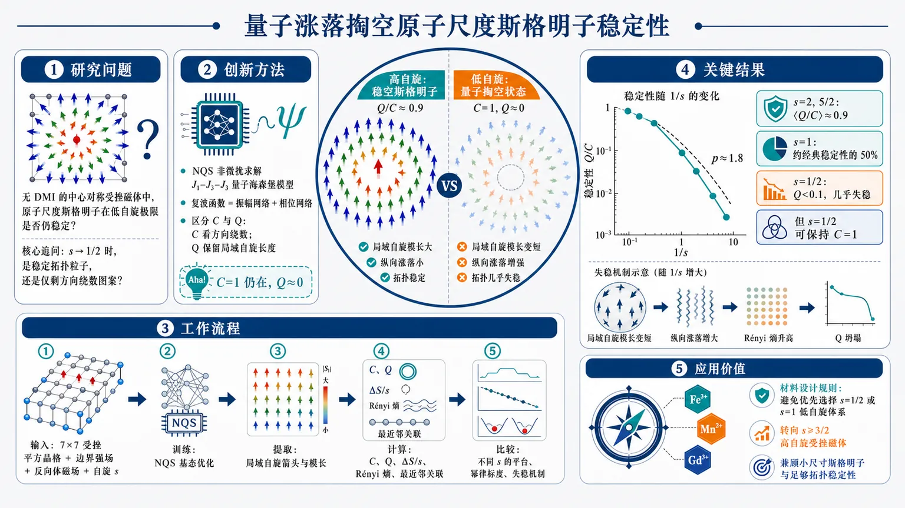
研究问题在没有 DMI 的中心对称受挫磁体中，原子尺度斯格明子能否在低自旋量子极限保持稳定？核心追问是：当自旋量子数从半经典大自旋降到 s=1/2 时，斯格明子是仍作为真实稳定拓扑粒子存在，还是只剩下方向绕数的“空壳图案”。创新方法用神经网络量子态非微扰求解 J₁–J₂–J₃ 量子海森堡模型，并提出关键区分：斯格明子数 C 只看归一化自旋方向的几何绕数，稳定性 Q 则保留局域自旋长度信息。Aha 点是发现低自旋下可出现“C=1 仍在，但 Q≈0”的状态，即图案像斯格明子，物理稳定性却被量子涨落掏空。工作流程输入 7×7 受挫平方晶格 J₁–J₂–J₃ 模型、边界强场、反向体磁场和不同自旋量子数 s；用 NQS 将复波函数分成振幅网络与相位网络训练基态；从基态提取局域自旋箭头、局域自旋模长、C、Q、纵向涨落 ΔS/s、二阶 Rényi 熵和最近邻关联；最后比较不同 s 下的 Q/C 平台、幂律标度和微观失稳机制。关键结果高自旋 s=2、5/2 时稳定性平台 ⟨Q/C⟩≈0.9，s=1 仅剩约经典稳定性的 50%，s=1/2 时 Q<0.1、几乎完全失稳；但 s=1/2 的方向绕数 C 仍可为 1。稳定性随 1/s 近二次幂律衰减，指数约 p≈1.8；Q 的坍塌与最小局域自旋模长下降、纵向涨落接近最大、局域二阶 Rényi 熵升高呈线性关联。应用价值该研究给出中心对称原子尺度斯格明子材料的设计规则：不要优先寻找 s=1/2 或 s=1 低自旋受挫磁体，而应转向 s≥3/2 的高自旋受挫体系，如 Fe³⁺、Mn²⁺、Gd³⁺ 化合物，以同时获得小尺寸斯格明子和足够强的拓扑稳定性。第一部分：核心概览 (Overview)
该研究以中心对称受挫平方晶格 J₁–J₂–J₃ 量子海森堡模型为对象，利用神经网络量子态（NQS）非微扰求解不同自旋量子数下的斯格明子稳定性。核心贡献在于区分了仅反映方向绕数的斯格明子数 C与受局域自旋长度抑制影响的稳定性 Q，揭示 s=1/2 极端量子极限中 C 可保留而 Q 几乎消失。稳定性随 1/s 近二次幂律衰减，失稳由纵向量子涨落、局域自旋模长压缩与局域二阶 Rényi 熵增强共同驱动。结论将中心对称原子尺度斯格明子的材料搜索重心推向 s≥3/2 高自旋受挫磁体。
---
第二部分：结构化快速回顾
《Quantum Destabilization of Skyrmions in Centrosymmetric Frustrated Magnets》（None，）
背景
中心对称磁体缺乏 Dzyaloshinskii–Moriya interaction（DMI），斯格明子依赖 J₁–J₂–J₃ 交换受挫稳定。已知实验体系如 Gd₂PdSi₃、GdRu₂Si₂、MnFe₀.₂Co₀.₈Ge 多为大自旋材料，尚无明确 s=1/2 中心对称斯格明子材料实例。
方法
采用 7×7 平方晶格 J₁–J₂–J₃ 量子海森堡模型，边界自旋由强场 B=10 固定，内部自旋受反向体磁场 Bz。量子基态用 NQS 变分优化，经典极限用 Metropolis–Hastings classical Monte Carlo。关键参数为 J₁=1、J₂=-0.425、J₃=0.5J₂、A=0.4，结果通常对 10 个独立实现平均。
结果
s=2、5/2 时归一化稳定性平台 ⟨Q/C⟩≈0.9；s=1 降至约经典值 50%；s=1/2 中 Q<0.1，近乎完全失稳。尽管 C=1 的几何绕数仍可存在，局域自旋长度被强烈压缩，最大局域二阶 Rényi 熵上升。
讨论
失稳不是局域单态形成导致，因为最近邻相关未接近理论下界 -0.75；主要机制是多体纠缠增强导致局域自旋模长非均匀压缩。稳定性与最小局域自旋模长正线性相关，与纵向涨落和 Rényi 熵负相关。
局限
模型限定于平方晶格、特定 J₂/J₃/A/Bz 参数区间、有限尺寸 L=7、9、11，材料结论仍为理论预测。NQS 结果依赖变分表达能力、训练收敛与采样精度；未给出实验验证、温度效应、动力学稳定性或真实材料各向异性细节。
结论
中心对称受挫磁体中的原子尺度斯格明子在低自旋极限受到量子纵向涨落根本限制。稳定斯格明子需要至少 s=3/2，更适合的候选体系包括 Fe³⁺、Mn²⁺、Gd³⁺ 等高自旋离子体系。
---
第三部分：逐章节冷凝解析 (Section-by-Section Condensing)
Abstract
- Spin quantum number controls skyrmion stability
研究对象为平方晶格中心对称 J₁–J₂–J₃ 量子海森堡模型，核心变量是自旋量子数 s 对斯格明子稳定性的影响；方法为neural network quantum states（NQS）。摘要明确写道：*"We investigate the role of the spin quantum number s on the stability of skyrmions in a J1−J2−J3 centrosymmetric quantum Heisenberg model on a square lattice using the neural network quantum states method."*
- Extreme quantum limit destroys Q
从半经典区进入 s=1/2 极端量子极限时，斯格明子稳定性 Q 严重衰减并最终消失。核心结果是：*"the skyrmion stability Q is severely degraded when transitioning from the semiclassical regime to the extreme quantum limit (s=1/2), where it ultimately vanishes."*
- Longitudinal quantum fluctuations drive destabilization
失稳机制被归因于量子纵向涨落，并且 Q 随 1/s 呈幂律衰减：*"this destabilization is driven by quantum longitudinal fluctuations, with Q exhibiting a power-law decay as a function of the reciprocal spin moment 1/s."*
- s=1/2 is not a smooth continuation of higher spins
s=1/2 不服从较大自旋的幂律趋势，代表不同物理区间：*"the extreme quantum limit (s=1/2) deviates drastically from this scaling behavior, exhibiting distinct physics compared to larger spin moments."*
- Entanglement and local spin suppression quantitatively explain collapse
局域二阶 Rényi 熵上升、局域自旋模长下降，与 Q 线性相关。摘要给出三者关系：*"as the local second Rényi entropy (an indicator of entanglement) increases and the local spin magnitude is suppressed, the skyrmion stability vanishes linearly."*
- C survives while Q vanishes
低自旋区出现一种重要区分：C 作为方向几何特征残留，Q 因局域自旋长度被压缩而消失：*"the skyrmion number C remains as remanent geometric feature of the spin orientations, yet the skyrmion stability Q vanishes due to the longitudinal suppression of the local spin magnitude."*
- Material implication favors s≥3/2
稳定原子尺度拓扑纹理要求高自旋，至少 s=3/2：*"a spin moment must of at least s=3/2 is required for the realization of stable, atomic-scale topological textures."*
---
Introduction
- Skyrmion physics differs sharply between chiral and centrosymmetric magnets
手性体系依靠 DMI 稳定斯格明子，而中心对称体系没有该机制。背景对比清晰：*"In chiral systems, the Dzyaloshinskii–Moriya interaction (DMI) is mainly responsible for the formation of skyrmions."* 中心对称体系的难题是：*"the absence of DMI removes the most common microscopic mechanism responsible for chiral spin textures."*
- Frustrated exchange replaces DMI in centrosymmetric systems
中心对称体系中的斯格明子来自交换相互作用竞争，尤其是受挫 J₁–J₂–J₃ 海森堡模型：*"skyrmions emerge from a delicate competition between exchange interactions, such as in the frustrated J1–J2–J3 Heisenberg model."*
- Centrosymmetric skyrmions are attractive for atomic-scale spintronics
受挫交换机制可产生更小斯格明子，高密度排列适合器件小型化：*"This mechanism enables significantly smaller skyrmion textures, with higher packing densities, positioning them as ideal candidates for next-generation, atomic-scale spintronics."*
- Existing centrosymmetric skyrmion materials are high-spin
实验候选包括 Gd₂PdSi₃、GdRu₂Si₂、MnFe₀.₂Co₀.₈Ge，且均为大自旋体系，例如 Gd 的 spin-7/2：*"all of these materials carry a large spin moment (such as spin-7/2 for Gd)."*
- No known small-spin centrosymmetric skyrmion host
低自旋材料缺失是核心经验事实：*"there are no known centrosymmetric materials with small spin moment, such as spin-1/2, that host skyrmions."*
- Classical stability assumes fixed local spin length
经典图像仅关注方向序，默认局域自旋长度恒定：*"In the classical regime, the stability of the skyrmion is measured through directional order, with the assumption that the local spin magnitude remains constant."*
- Quantum limit invalidates fixed-length spin picture
当 s→1/2，局域自旋模长不再恒定，使斯格明子的粒子性容易受量子效应破坏：*"as the spin moment s is reduced toward the extreme quantum limit (s=1/2), the local spin magnitude no longer remains a constant quantity."*
- Central unresolved question: abrupt threshold or continuous destabilization
核心问题被表述为稳定性是突然消失还是随自旋矩连续衰减：*"Does the stability of skyrmion disappear abruptly at a specific threshold, or does it get destabilized continuously as a function of the spin moment?"*
- Perturbative methods are insufficient
标准微扰框架不能处理量子极限中的非线性纵向涨落：*"standard perturbative frameworks fail to account for the non-linear longitudinal fluctuations inherent in the quantum limit."*
- NQS provides non-perturbative access
NQS 能捕捉完整非线性波函数响应、纵向涨落和纠缠，同时避免 exact diagonalization 尺寸限制与 QMC 符号问题：*"the NQS approach enables us to capture the full non-linear response of the wavefunction, including the longitudinal fluctuations and entanglement"*；*"we simultaneously bypass the limitations of exact diagonalization and the sign problem of Quantum Monte Carlo."*
- Main claimed finding: Q collapses despite remanent C
低自旋下发生量子失稳，强纠缠和纵向涨落使 Q 坍塌，但 C 仍残留：*"This process leads to a collapse of the skyrmion stability Q despite a remanent skyrmion number C."*
- Practical threshold around s≥3/2
稳定性在 s=1 附近急剧下降，鲁棒经典斯格明子相需要至少 s=3/2：*"identifies a sharp decrease in skyrmion stability near s=1 suggesting that achieving a classically robust skyrmion phase requires a spin moment of at least s=3/2."*
---
Model Hamiltonian and Methods
- Square-lattice J₁–J₂–J₃ quantum Heisenberg model in xy plane
模型为平方晶格上的 J₁–J₂–J₃ 量子海森堡模型，交换项限制在 x-y 平面，并加入 z 方向 easy-axis anisotropy：*"We consider the J1–J2–J3 quantum Heisenberg model on a square lattice, restricted to the x-y plane. The model includes an easy-axis Heisenberg anisotropy along the z direction."*
- Boundary field mimics ferromagnetic embedding
边界自旋施加强磁场，方向为 negative z，用于固定边界并模拟铁磁嵌入：*"The system is subjected to a strong magnetic field applied only to the boundary spins along the negative z direction to fix their orientations and mimic a ferromagnetic embedding."*
- Bulk field opposes boundary field
内部自旋受均匀体磁场，方向与边界场相反：*"A uniform bulk magnetic field is applied to the internal spins in the direction opposite to the boundary field."*
- Hamiltonian includes three exchange shells, anisotropy, internal and boundary fields
哈密顿量包含最近邻 J₁、次近邻 J₂、第三近邻 J₃ 的 SxSx+SySy 交换，最近邻 z 向各向异性 A，内部场 Bz 和边界场 B：
*"The parameters J1, J2, and J3 denote the nearest-neighbor, next-nearest-neighbor, and third-nearest-neighbor exchange interaction strengths, respectively. A represents the strength of the Heisenberg anisotropy along the z direction. Bz denotes the strength of the uniform magnetic field applied to the internal bulk spins. Finally, B denotes the strength of the external magnetic field applied only to the boundary spins."*
- Numerical parameter conventions
计算设定 J₁=1，所有能量以 J₁ 为单位；边界场 B=10；标准晶格大小 7×7；结果通常对 10 个独立实现平均：*"we set J1=1 and express all other parameters in units of J1. We use B=10, 7×7 lattice size, and average all the results over ten independent realizations, unless otherwise specified."*
- NQS ansatz represents complex wavefunction
变分态写为 ∑σ ψθ(σ)|σ⟩，计算基为 Sz 本征态：*"The variational wavefunction is given by ∑σ ψθ(σ)|σ⟩, where |σ⟩ are computational basis states, chosen here as the eigenstates of the Sz operators."*
- Amplitude and phase are modeled separately
复波函数对数分解为实振幅和相位：lnψθ(σ)=ρ(σ)+iϕ(σ)，二者由两个独立全连接前馈网络表示：*"amplitude ρ(σ) and phase ϕ(σ) are represented using two independent fully connected feed-forward neural networks with ReLU activation."*
- Optimization and sampling details
能量期望值用 Adam optimizer 最小化，构型由 Markov Chain Monte Carlo 采样，实现基于 NetKet：*"The network parameters are optimized by minimizing the energy expectation value ⟨ψθ|H|ψθ⟩ using the Adam optimizer. Spin configurations are sampled using Markov Chain Monte Carlo, and the numerical implementation is carried out with the NetKet library."*
- Classical benchmark
经典极限使用 Metropolis–Hastings classical Monte Carlo：*"For comparison with the classical limit, simulations are performed using classical Monte Carlo methods with the Metropolis–Hastings algorithm."*
---
Topological Stability
- Single-skyrmion regime requires frustrated antiferromagnetic J₂ and J₃ relative to J₁
中心对称晶格中，单斯格明子由磁受挫稳定；J₂、J₃ 必须与 J₁ 符号相反，即表现为反铁磁：*"This requires that the next-nearest-neighbor and third-nearest-neighbor exchange couplings, J2 and J3, to have signs opposite to that of the nearest-neighbor coupling J1, i.e., they must be antiferromagnetic."*
- C and Q use same geometric scalar-triple-product expression
斯格明子数 C 与 稳定性 Q 都通过三角剖分 plaquette 上的标量三重积计算：*"Both C and Q are evaluated using the same geometric expression constructed from the scalar triple product of spins defined on a triangular plaquettes of a triangulated square lattice."*
- C normalizes by local spin magnitude and measures geometry only
计算 C 时使用 nᵢ=⟨Sᵢ⟩/|⟨Sᵢ⟩|，因此只保留方向绕数，不受局域自旋长度影响：*"For the calculation of C, we defined the normalized vector as n⃗i=⟨S⃗i⟩/|⟨S⃗i⟩|."* 其性质为：*"the skyrmion number C, depends only on the angular winding and topological geometry of the spin texture irrespective of the value of local spin magnitude, thereby results in strictly integer values."*
- Q normalizes by spin quantum number s and measures physical stability
计算 Q 时使用 nᵢ=⟨Sᵢ⟩/s，因而对局域自旋长度压缩敏感：*"for calculation of Q we use n⃗i=⟨S⃗i⟩/s."* 由于量子涨落可使 |⟨Sᵢ⟩|<s，*"Q explicitly accounts for changes in the local spin length."*
- Q ranges from 0 to 1
Q=1 表示完全稳定，Q=0 表示自旋纹理完全失稳：*"Q can take non-integer values ranging from 0 to 1, where 1 corresponds to a perfectly stable skyrmion configuration and 0 indicates complete destabilization of the spin texture."*
- C=1 identifies a single skyrmion
通过自旋纹理和 C 判断是否存在斯格明子；C=1 定义为单斯格明子：*"if we obtain C=1, we identify the state as a single skyrmion."*
- Absolute values treat Bloch, Néel, and antiskyrmions equally
无 DMI 时，中心对称体系不唯一选择 helicity，可支持 Bloch、Néel、antiskyrmions；因此使用 |C|、|Q|：*"centrosymmetric systems can support all different types of skyrmions such as Bloch, Néel, and antiskyrmions within the same parameter regime. To account for this, we consider the absolute values of |C| and |Q|."*
- s=1/2 has negligible Q across parameter scans
在 s=1/2 下，改变 J₂、J₃、A、Bz 时 Q<0.1，即使 C 仍有限：*"For s=1/2 we find negligible value of skyrmion stability (Q<0.1) across variation of all the parameters (J2,J3,A,Bz), even when the skyrmion number C remains finite."*
- Working parameter set stabilizes higher-spin skyrmions
系统扫描后选定 J₂=-0.425、J₃=0.5J₂、A=0.4，变化 Bz，能在更高自旋中稳定斯格明子：*"choosing J2=−0.425, J3=0.5J2, A=0.4, and varying the bulk magnetic field Bz, stabilizes a skyrmion state for all higher spin moments."*
- Multi-skyrmion states handled by Q/C
某些体磁场下由于中心对称斯格明子较小，出现 C=2；用 Q/C 比值处理多斯格明子：*"for certain values of the bulk magnetic field Bz we obtain C=2. We account for these multi-skyrmion states by evaluating the ratio of skyrmion stability Q to skyrmion number C."*
- Finite-spin field scaled as Bz/s
为比较不同自旋量子数，有限自旋使用 Bz/s；经典极限不缩放：*"we scale the bulk magnetic field as Bz/s for all finite spins, while no scaling is applied in the classical limit."*
- High-spin plateau reaches ⟨Q/C⟩≈0.9
在 s=2、5/2 半经典区，出现鲁棒稳定性平台，⟨Q/C⟩≈0.9：*"In the semiclassical regime at s=2 and s=5/2, we observe a robust topological plateau where ⟨Q/C⟩≈0.9."*
- Stability plateau shrinks as s decreases
自旋量子数减小时，稳定平台持续降低并变窄；s=1/2 几乎全场区失稳：*"as s decreases, the stability plateau is progressively suppressed and narrowed. At the extreme quantum limit (s=1/2), the stability almost vanishes entirely across all field strengths."*
- Collapse is not finite-size artifact
s=1/2 在 9×9、11×11 上仍显示稳定性抑制；s=1 在 9×9 上也验证：*"we verified the trend on larger lattices, confirming that the suppression of stability remains robust at s=1/2 for 9×9 and 11×11 sizes, as well as for s=1 on a 9×9 lattice."*
---
Microscopic Destabilizers
- Local entanglement quantified by second Rényi entropy
局域纠缠用单站点子系统 A 的二阶 Rényi 熵 S₂ 衡量，A 为一个自旋，B 为其余自旋：*"To compute S2 per lattice site, we partition the lattice into two subsystems: region A, consisting of a single spin, and region B, containing the remaining spins of the system."*
- S₂ is computed from swap operator
定义为 S₂(ρA)=-log₂ Tr(ρA²)=-log₂⟨SwapA⟩：*"The second Rényi entropy is defined as S2(ρA)=−log2(Tr(ρA2))=−log2(⟨SwapA⟩)."*
- Swap expectation estimated by Monte Carlo over independent copies
⟨SwapA⟩ 通过两份独立变分波函数构型的 Monte Carlo 估计：*"σ(i) and σ̃(i) are spin configurations sampled independently from two copies of the variational wavefunction."*
- s=3/2 retains robust skyrmion structure
s=3/2 中，局域自旋模长接近最大值，纠缠异质分布并向核心减弱：*"In the semiclassical s=3/2 case, the skyrmion appears as a robust magnetic structure. The local spin magnitudes |⟨S⃗i⟩| remain close to their maximum possible value, while the microscopic entanglement ... is heterogeneously distributed, diminishing toward the core."*
- s=3/2 stability is core-supported
核心区域维持拓扑稳定性，纵向涨落主要位于核心与边界之间：*"the topological stability is maintained by the central region of the skyrmion with the quantum longitudinal fluctuations largely localized in the intermediate region between the core and the boundary spins."*
- s=1/2 preserves winding but quenches spin length
s=1/2 的箭头仍形成几何绕数并给出 C=1，但箭长在全晶格被压缩：*"While the arrows still define the geometric winding (resulting in C=1), indicating that the geometric structure of the skyrmion persists, their physical lengths are visibly quenched across the lattice."*
- C survives while Q is diminished by local spin suppression
视觉证据显示 C 可存活，但局域自旋模长消失导致 Q 降低：*"the skyrmion number C survives while local spin magnitudes vanish, leading to the diminished skyrmion stability Q."*
- Weakest local spins collapse rapidly toward s=1/2
排除边界自旋后，最小局域自旋模长 ⟨Smin⟩/s 随 s→1/2 快速下降：*"we observe a rapid drop in the magnitude of these weakest spins, confirming that quantum longitudinal fluctuations are most severe at specific sites within the texture."*
- Longitudinal fluctuation amplitude increases sharply
定义 ΔS/s=1−⟨Smin⟩/s，在低自旋区显著增加：*"This suppression is accompanied by a sharp increase in the amplitude of the quantum longitudinal fluctuations ΔS/s=1−⟨Smin⟩/s."*
- Maximum local spin magnitude stays roughly constant
⟨Smax⟩/s 基本不随 s 改变，说明不是整体均匀缩小，而是空间非均匀性增强：*"the normalized maximum local spin magnitude ⟨Smax⟩/s ... remains more or less same across all the s values, suggesting that the local spin magnitudes do not just shrink throughout the lattice, but become increasingly non-uniform."*
- s=1/2 exhibits extreme longitudinal non-uniformity
低自旋极限不同于半经典均匀长度图像：*"the s=1/2 regime exhibits extreme longitudinal non-uniformity across the lattice, contrasting with the uniform magnitudes characteristic of the semi-classical limit."*
- Entanglement rises as s approaches 1/2
最大归一化二阶 Rényi 熵 S₂max/log₂(d) 随 s→1/2 显著增加，局域希尔伯特空间维数 d=2s+1：*"the extracted maximum normalized second Rényi entropy S2max/log2(d), (where d=2s+1 is the local Hilbert space dimension) increases significantly as s approaches 1/2."*
- Local spin reduction is a quantum entanglement effect
局域自旋矩损失对应纠缠增加：*"the reduction of the local spin magnitude is a pure quantum effect, where the loss of local spin moment directly corresponds to an increase in quantum entanglement."*
- Nearest-neighbor correlations rule out singlet mechanism
最近邻相关 ⟨Si·Sj⟩ 的最小值未接近单态理论下界 -0.75，因此失稳不是局域 singlet 形成主导：*"these values do not approach the theoretical lower bound of -0.75, which would be characteristic of singlet formation."*
- Maximum correlation remains below classical saturation 0.25
归一化最大相关近似恒定且略低于经典饱和值 0.25，反映斯格明子形成中的自旋倾斜：*"remains nearly constant across different spin moments, with a value slightly less than the classical saturation value (0.25), reflecting the canting experienced by spins in forming the skyrmion texture."*
- Destabilization is many-body and longitudinal, not pairwise singlet physics
失稳来自量子纵向涨落导致的空间自旋模长压缩，而不是随机键无序体系中常见的 singlet 机制：*"not driven by the formation of local singlets ... but rather by a spatial suppression of local spin magnitudes induced by quantum longitudinal fluctuations."*
- Linear correlations connect microscopic and macroscopic quantities
用 y=ax+b 线性拟合局域指标与 ⟨Q/C⟩max，并用含 x、y 不确定性的有效方差计算 reduced chi-square：*"We perform a linear fit ... using the equation y=ax+b"*；*"the effective variance is given by σ2=σy2+(∂y/∂x)2σx2."*
- Q/C depends linearly on minimum local spin magnitude
最大归一化稳定性与 ⟨Smin⟩/s 严格线性正相关：*"the maximum normalized skyrmion stability ⟨Q/C⟩max exhibits a strict linear dependence on the normalized minimum local spin magnitude ⟨Smin⟩/s."*
- s=1/2 moments are easily flipped
极端量子极限中，斯格明子虽类似经典对应物的微缩版，但局域自旋模长严重压缩，极小扰动即可翻转：*"due to the severe suppression of its local spin magnitudes, these moments can be easily flipped by very small perturbations."*
- ΔS/s approaches unity at s=1/2
s=1/2 中非均匀压缩接近最大极限 ΔS/s≈1，导致纹理完全不稳定：*"this non uniform suppression of local spin magnitude almost reaches its maximum limit (i.e. ΔS/s≈1) for s=1/2, making the texture totally unstable."*
- Entanglement is a primary destabilizing factor
⟨Q/C⟩max 与最大归一化二阶 Rényi 熵呈负线性关系：*"the skyrmion stability is inversely proportional to the maximum normalized second Rényi entropy. The negative linear slope identifies entanglement as a primary destabilizing factor in the extreme quantum limit."*
- Entanglement and longitudinal non-uniformity co-evolve
高纠缠伴随更强局域自旋模长压缩与空间非均匀性：*"higher entanglement is necessarily accompanied by larger suppression and pronounced spatial non-uniformity of the local spin magnitudes."*
---
Stability and Scaling Behavior
- Scaling variable is reciprocal spin moment 1/s
稳定性用 ⟨Q/C⟩max 对 1/s 作图，经典边界为 1/s=0、⟨Q/C⟩max=1：*"We plot the maximum normalized skyrmion stability ⟨Q/C⟩max as a function of the reciprocal spin moment 1/s, with the classical boundary condition (⟨Q/C⟩max=1 at 1/s=0)."*
- s≥1 follows near-quadratic power-law decay
对 s≥1，数据符合 ⟨Q/C⟩max=1−a|1/s|ᵖ，指数 p≈1.8：*"For the range s≥1, the data follow a near-quadratic power-law decay ... with an exponent of p≈1.8."*
- Decay is faster than linear spin-wave expectation
稳定性随增大自旋恢复速度快于线性自旋波理论常见 O(1/s) 修正：*"This suggests that stability is restored with increasing spin moment s, far more rapidly than the O(1/s) reduction typically predicted by linear spin-wave theory."*
- s=2 retains more than 85% stability
在 s=2、1/s=0.5，稳定性超过经典值的 85%：*"In the semiclassical regime at s=2 (i.e., 1/s=0.5), the system retains over 85% of its stability."*
- s=5/2 reaches approximately 90% stability
s=5/2、1/s=0.4 时稳定性约 90%：*"As the spin moment increases to s=5/2 (1/s=0.4), the stability reaches approximately 90%."*
- s=1 retains only about half of classical stability
s=1 已进入显著量子区，稳定性仅保留经典值约 50%：*"as the system approaches the quantum regime at s=1 there is a rapid drop in stability, with the system retaining only 50% of its classical value."*
- s=1/2 excluded from fit because it is fully destabilized
s=1/2 数据点不纳入幂律拟合，因为 Q≈0 但 C 仍良定义：*"The s=1/2 data point ... is excluded from the fit as it represents a fully destabilized phase where the skyrmion stability Q is near zero while the skyrmion number C remains well-defined."*
- Trade-off between size and stability
中心对称受挫磁体可给出原子尺度斯格明子，但低自旋下被纵向量子涨落破坏；手性 s=1/2 DMI 体系稳定但斯格明子尺寸较大：*"s=1/2 chiral magnets remain a popular platform for topological spintronics due to DMI-stabilization, their relatively large skyrmion size limits high-density device miniaturization. Conversely, centrosymmetric frustrated magnets offer a route to atomic-scale skyrmions."*
- Material design should target high-spin frustrated magnets
目标材料应至少 s=3/2，如 Fe³⁺、Mn²⁺ 化合物：*"the optimal candidates for next-generation, high-density topological devices are high-spin frustrated magnets with spin moment of at least s=3/2, such as compounds utilizing Fe3+ or Mn2+ ions."*
- High spin suppresses destructive fluctuations while frustration keeps small size
高自旋降低破坏性涨落，受挫交换保留纳米尺度：*"the large spin moment suppresses the destructive fluctuations identified in our study, while the exchange-frustrated mechanism retains the nanometer-scale size essential for future technologies."*
---
Conclusion
- NQS uncovers microscopic mechanism of stability loss
NQS 揭示中心对称受挫磁体中斯格明子稳定性的微观机制：*"we have utilized NQS to uncover the microscopic mechanism governing the stability of skyrmions in centrosymmetric frustrated magnets."*
- Destabilization is co-driven by entanglement and spin-magnitude evolution
稳定性崩塌由不同自旋量子数下纠缠与自旋模长的共同演化决定：*"the observed skyrmion destabilization is driven by the mutual evolution of entanglement and spin magnitudes across the spin moments."*
- s=1/2 keeps C but nullifies Q
极端量子极限中，C 保持，Q 几乎为零；原因是局域自旋模长被压缩且高度非均匀：*"while the skyrmion number C remains intact, the skyrmion stability Q is virtually nullified as the local spin magnitudes are suppressed and become highly non-uniform."*
- Many-body entanglement and longitudinal fluctuations undermine Q
Q 被强多体纠缠与严重纵向涨落破坏：*"This destabilization occurs because Q is undermined by intense many-body entanglement and severe quantum longitudinal fluctuations."*
- Scaling is near-quadratic in reciprocal spin moment
失稳遵循相对于 1/s 的近二次幂律：*"the skyrmion destabilization follows a near-quadratic power-law scaling behavior with respect to the reciprocal spin moment."*
- Material threshold is s≥3/2
自旋矩至少需要 s=3/2 才能抑制量子纵向涨落并维持稳定斯格明子：*"spin moments have to be at least s=3/2 to suppress quantum longitudinal fluctuations and maintain a stable skyrmion."*
- s=1/2 and s=1 frustrated systems are poor practical targets
低自旋受挫体系实用搜索可能无效：*"searching for stable, atomic-scale skyrmions in s=1/2 or s=1 frustrated systems may prove futile for practical applications due to their inherent lack of physical stability."*
- High-spin ions bridge small size and topological protection
Fe³⁺、Mn²⁺、Gd³⁺ 基体系更优，兼顾亚纳米尺度与鲁棒拓扑保护：*"high-spin frustrated magnets, such as those based on Fe3+, Mn2+ or Gd3+ ions, emerge as the optimal candidates, successfully bridging the gap between sub-nanometer size and the robust topological protection required for next-generation spintronics."*
---
Acknowledgement
- Computing resources
计算资源来自 National Supercomputing Mission（NSM） 的 PARAM RUDRA，地点为 S.N. Bose National Centre for Basic Sciences，并使用 SINP CCS3 computing cluster：*"We acknowledge National Supercomputing Mission (NSM) for providing computing resources of ‘PARAM RUDRA’ at S.N. Bose National Centre for Basic Sciences"*；*"and the use of CCS3 computing cluster at SINP."*
- Institutional support
PARAM RUDRA 由 C-DAC 实施，并由印度 MeitY 与 DST 支持：*"which is implemented by C-DAC and supported by the Ministry of Electronics and Information Technology (MeitY) and Department of Science and Technology (DST), Government of India."*
---
Appendix: NQS Architecture and Training Details
- Variational NQS state
基态波函数表示为 |ψθ⟩=∑σψθ(σ)|σ⟩，计算基为 Sz 本征态：*"The variational wavefunction is given by: |ψθ⟩=∑σψθ(σ)|σ⟩, where |σ⟩ denotes the computational basis states, chosen here as the eigenstates of the Sz operator."*
- Complex log-wavefunction decomposed into amplitude and phase
lnψθ(σ)=ρ(σ)+iϕ(σ)，其中 ρ 和 ϕ 分别由两个独立全连接前馈网络输出：*"The logarithm of the complex wavefunction is modelled using two independent fully connected feed-forward neural networks"*；*"ρ(σ) and ϕ(σ) correspond to the outputs of the networks describing the amplitude and the phase, respectively."*
- Architecture uses two hidden layers per network
振幅网络和相位网络各有两个全连接隐藏层；每层神经元数为 αN，N 为总晶格点数：*"Each network (for ρ and ϕ) consists of two fully connected hidden layers. Each hidden layer contains αN neurons, where N is the total number of lattice sites."*
- α increases with local Hilbert-space size
随 s 增大，希尔伯特空间维数增长，网络宽度参数增大：α=2 用于 s=1/2,1；α=3 用于 s=3/2,2；α=4 用于 s=5/2。原始设定为：*"we set α=2 for s=1/2,1; α=3 for s=3/2,2; and α=4 for s=5/2."*
- ReLU activation throughout
所有隐藏层采用 ReLU：*"The ReLU (Rectified Linear Unit) activation function is used for all hidden layers."*
- Loss function is variational energy
优化目标为归一化能量期望 ℒθ=⟨ψθ|H|ψθ⟩/⟨ψθ|ψθ⟩：*"which serves as the loss function during the training process."*
- Adam hyperparameters
使用 Adam optimizer，参数 β₁=0.9、β₂=0.999：*"We use the Adam optimizer with moments β1=0.9 and β2=0.999."*
- Phase-first training strategy
初期固定振幅网络，先训练相位网络，以更有效学习波函数符号结构：*"In the initial phase of optimization, we first train the phase part of the network while keeping the amplitude part fixed, as it facilitates the network to learn the wavefunction sign structure more effectively."*
- Learning-rate schedule for amplitude network
ρ 参数学习率前 5800 iterations 从 0 线性 warm-up 到 0.001，到 16000 iterations 保持 0.001，随后降至 0.0001：*"For the ρ-parameters, the learning rate schedule begins with a linear warm-up from 0 to 0.001 during the first 5,800 iterations, remains constant at 0.001 up to 16,000 iterations, and then reduced to 0.0001 for the remaining iterations."*
- Learning-rate schedule for phase network
ϕ 参数学习率到 16000 iterations 保持 0.001，之后降至 0.0001：*"For the ϕ-parameters, the learning rate is maintained at 0.001 until 16,000 iterations and then decreased to 0.0001 for the remaining iterations."*
- Training length
总训练步数为 19000 iterations：*"The entire training process runs for 19,000 iterations."*
- Sampling budget
训练能量估计使用 10⁴ Monte Carlo samples，训练后其他观测量计算使用 10⁷ samples：*"We use 10⁴ Monte Carlo samples to estimate the energy expectation value during training, whereas 10⁷ samples are generated for evaluating other observables after the training."*
- Implementation in NetKet
架构与采样流程用 NetKet 完成：*"The complete implementation of the neural network architecture and the sampling procedure is performed using the NetKet library."*
- Local spin expectation convention
局域自旋期望计算为 ⟨Si⟩=⟨σi/2⟩，其中 σi 为 NetKet 自旋算符：*"To compute local spin expectation values, we use ⟨Si⟩=⟨σi/2⟩, where σi is the NetKet spin operator."*
---
第四部分：深度理解与语言支持 (Understanding & Nuance)
1. 术语解析
- Quantum longitudinal fluctuations（量子纵向涨落）
这里的 “longitudinal” 指沿局域自旋方向或影响自旋长度的涨落，不只是方向角度摆动。经典自旋模型默认每个自旋是一根固定长度箭头，量子态中 |⟨Sᵢ⟩| 可以小于 s，甚至接近零。该术语在本研究中直接对应 Q 的下降机制。
- Skyrmion number C vs. skyrmion stability Q
C 是方向场的几何拓扑绕数；只要箭头方向仍覆盖球面一次，就可保持整数。Q 则把箭头实际长度也计入；若箭头方向绕得像斯格明子但长度被量子涨落压没，C=1 仍可能成立，而 Q≈0。这个区分是全篇最关键的概念创新之一。
- Remanent geometric feature（残留几何特征）
“remanent” 暗示某种物理稳定性已经消失后仍残留的结构痕迹。这里不是说斯格明子仍然稳定，而是方向图案的拓扑绕数仍可被识别。
- Extreme quantum limit（极端量子极限）
指 s=1/2，局域希尔伯特空间最小，量子涨落最强。不同于 s=1、3/2、2 的连续半经典修正，s=1/2 在数据中表现为不服从幂律拟合的独立物理区。
- Near-quadratic power-law decay（近二次幂律衰减）
稳定性满足 ⟨Q/C⟩max=1−a|1/s|ᵖ，其中 p≈1.8。这不是严格二次，而是接近二次；强调其比通常线性自旋波理论的 O(1/s) 修正更陡峭。
2. 疑难查证
- 为什么 C 不消失而 Q 消失？
可以把每个局域自旋期望值看作一根箭头。C 只看箭头方向是否形成从核心到边界的完整绕转；箭头长短被归一化掉。Q 看的是未完全归一化的箭头，实际长度若被纠缠压缩，三角 plaquette 上的标量三重积也随之减小。于是低自旋极限会出现“方向像斯格明子、物理上却不稳”的状态。
- 为什么纠缠会压缩局域自旋模长？
单个站点若处于近似纯的自旋相干态，局域期望 |⟨Sᵢ⟩| 接近最大值 s。若该站点与环境强纠缠，其约化密度矩阵变得混合，单点自旋极化被平均掉，导致 |⟨Sᵢ⟩| 下降。二阶 Rényi 熵越大，局域态越混合，局域磁矩越不清晰。
- 为什么排除 singlet formation 很重要？
若失稳由局域 singlet 形成主导，最近邻自旋相关会趋向强反铁磁下界；对 spin-1/2，两体 singlet 的归一化相关可接近负极限。数据中最小最近邻相关未接近 -0.75，说明不是局部成对锁成 singlet，而是更分布式的多体纠缠和纵向磁矩压缩。
- 为什么 s=3/2 被视为实用下限？
s=1 已只保留约 50% 经典稳定性，s=1/2 几乎完全失稳；s=3/2 起进入较稳半经典区，局域磁矩压缩显著减弱。因此材料设计上 s≥3/2 是兼顾原子尺度和稳定性的经验阈值。
---
第五部分：创新评估与关联 (Synthesis & Novelty)
1. 创新性判断
- 从“是否有拓扑数”转向“拓扑纹理是否物理稳定”
过去相关研究常以 C 或拓扑电荷作为斯格明子存在的主要判据；该研究明确提出低自旋量子体系中 C 与 Q 可解耦。C=1 不再等价于稳定斯格明子，低自旋中可能只是残留几何绕数。
- 给出中心对称受挫磁体中低自旋失稳的微观机制
近年大量工作关注 DMI 手性体系、经典受挫模型或热涨落稳定性；这里聚焦中心对称受挫体系的量子纵向涨落，并把失稳归因于 局域自旋模长压缩 + Rényi 熵增强 + 空间非均匀性。
- 用 NQS 处理传统方法难以覆盖的非微扰量子问题
低自旋 J₁–J₂–J₃ 受挫磁体存在强关联和潜在符号问题；NQS 绕开 exact diagonalization 尺寸瓶颈和 QMC sign problem，使 7×7、9×9、11×11 有限尺寸趋势可被探索。
- 建立稳定性与局域量子观测量的定量线性关系
⟨Q/C⟩max 与 ⟨Smin⟩/s、ΔS/s、S₂max/log₂(d) 的线性拟合，将宏观拓扑稳定性与微观纠缠/磁矩压缩直接关联。这比单纯展示纹理图或能量相图更具机制解释力。
- 提出可检验的材料设计规则
结论不是泛泛宣称高自旋更稳定，而是提出明确阈值 s≥3/2，并指向 Fe³⁺、Mn²⁺、Gd³⁺ 高自旋受挫磁体。该规则回应了实验事实：已知中心对称斯格明子材料多为大自旋体系，而 s=1/2 中心对称宿主缺失。
- 补足前人未解决的问题
关键未解问题是：中心对称受挫晶格中，s=1/2 是否还能稳定原子尺度斯格明子？该研究给出否定性答案：方向拓扑可残留，但物理稳定性近乎消失；稳定性不是简单的 classical-to-quantum 平滑外推，s=1/2 是偏离幂律的特殊极限。
-
02
📊 含图深析
📄 摘要：开发无监督 PINN 求解强场近似中直接阈上电离的鞍点方程，处理定制激光场下的复鞍点结构。该问题具有已知鞍点结构，可作为检验 PINN 求解非线性复方程组和多解分支追踪能力的强场物理测试平台。
💡 亮点：无监督 PINN 被用于强场 ATI 鞍点方程，针对定制场中的复杂鞍点分支求解。它把 PINN 从偏微分方程扩展到强场量子动力学的复鞍点问题。
📖 展开分析 + 配图
研究问题在强场近似框架下，直接阈上电离过程需要求解复时间鞍点方程；传统数值寻根像在多分支复平面迷宫中搜索路径，容易受初始猜测、分支结构和定制激光场复杂形状影响，导致鞍点遗漏或收敛不稳定。创新方法将无监督物理信息神经网络 PINN 用作“复时间鞍点探测器”：不依赖预先标注的鞍点解，而是把鞍点方程本身写入损失函数，让神经网络在复时间空间中自动学习满足强场物理约束的鞍点结构，从而减少对人工初值搜索的依赖。工作流程输入定制激光场参数和强场近似下的直接电离鞍点方程；构建以复时间变量为核心的 PINN；用鞍点方程残差作为无监督物理损失训练网络；在已知鞍点结构的体系中检验；输出复时间鞍点位置及其对应的强场电子动力学信息。关键结果该方法被用于求解强场近似中直接阈上电离的复时间鞍点方程，并在鞍点结构已知的体系中完成验证；结果表明 PINN 可作为传统数值搜索之外的替代路径，尤其适合处理定制激光场下受初值和复杂分支结构困扰的鞍点求解问题。应用价值为强场物理中的电子隧穿、电离轨迹和阈上电离谱计算提供更稳健的复时间鞍点求解工具；可辅助设计和分析定制激光场中的超快电子动力学，减少人工调参式寻根过程，为复杂强场控制问题提供可扩展的计算框架。核心概览
本文提出无监督 PINN 方法求解强场近似中直接阈上电离的复时间鞍点方程，服务于定制激光场下的强场电子动力学计算。
方法要点
- 采用物理信息神经网络（PINN）以无监督方式求解鞍点方程。
- 研究对象是强场近似（SFA）框架下直接阈上电离过程的鞍点方程。
- 网络目标是处理定制激光场中的复时间鞍点求解问题。
- 使用鞍点结构已知的体系对方法进行检验。
- 该方法针对传统数值搜索对初值敏感、易受分支结构影响的问题。
关键结果
- 摘要明确称该方法可用于求解强场近似下直接阈上电离的鞍点方程。
- 摘要指出其在鞍点结构已知的体系中进行了检验。
- 摘要表明该方法面向定制激光场中的复时间鞍点求解。
- 摘要强调其动机是缓解传统数值搜索受初值和分支结构影响的问题。
- 具体精度、收敛速度、对比基线和数值结果摘要未详述。
创新性判断
- 可能的新颖点在于将无监督 PINN 引入强场物理中的复时间鞍点方程求解，而非依赖传统迭代搜索；但摘要未说明是否为首次。
- 相对常规数值寻根方法，该工作可能强调 PINN 对初值选择和复杂分支结构的鲁棒性；实际改进幅度摘要未详述。
- 面向“定制激光场”的鞍点求解可能是其应用层面的特色，有助于处理更复杂的强场电子动力学问题；适用范围和限制摘要未详述。
-
03
📊 含图深析
📄 摘要：提出开源 Python 包 dpti，用机器学习原子间势自动执行相图自由能计算中的热力学积分。软件封装参考体系连接、可逆积分路径设计、多相多状态点分子动力学任务生成与管理，面向需要大量相关 MD 计算的固液或多相稳定性问题。
💡 亮点：dpti 将 MLIP 驱动的热力学积分相图计算自动化，降低路径设计和批量 MD 调度门槛。它把高精度势函数与自由能工作流连接起来，适合复杂材料相稳定性计算。
📖 展开分析 + 配图
研究问题如何把机器学习原子间势驱动的相图自由能计算，从大量手工搭建、易出错的分子动力学任务，转变为可复现、可自动调度、可监控误差的热力学积分流程；核心难点是为固体、液体和水体系构造可逆参考态到目标态路径，并可靠追踪相边界。创新方法提出 dpti 自动化工作流：用 JSON 描述计算任务，自动连接解析参考态与 MLIP 目标体系，生成 LAMMPS/Deep Potential 分子动力学任务，并把 Hamiltonian TI、温度/压力 TI、Gibbs-Duhem 相边界积分、统计误差传播和积分网格自适应加密整合为一条流水线。Aha 点是：不再只给自由能公式，而是把“参考态构造—可逆路径—HPC 批量任务—误差控制—相线传播”做成面向 MLIP 相图的标准化机器。工作流程输入每个相的初始构型、MLIP 模型和阶段 JSON 文件；先做 NpT 平衡获得平均密度或晶胞；再做固定晶胞 NVT 平衡生成 HTI 初态；随后从 Einstein 晶体、理想气体或水分子参考态出发进行 HTI，得到绝对 Helmholtz/Gibbs 自由能；接着用 TTI 或 pTI 在温度/压力方向传播自由能曲线；最后找到两相 Gibbs 自由能交点，并用 Gibbs-Duhem 积分沿 Clausius–Clapeyron 斜率推进相边界。关键结果dpti 在两个示例中展示完整相边界计算能力：SiO₂ 体系计算 β-quartz、coesite 和 melt 的相边界，使用 DP@R2SCAN 模型，固体超胞达 1125 和 864 原子、熔体 648 原子；水体系计算 ice Ih–liquid water 相边界。软件可自动报告统计误差和积分误差，支持路径一致性检查，并能通过自适应加密降低数值积分误差；弹簧常数测试中 Gibbs 自由能变化小于 0.4 meV/atom，显示计算结果对合理路径参数较稳健。应用价值为材料和水体系相图预测提供可复现的自动化工具，适合 Deep Potential 等 MLIP 驱动的大规模自由能和相边界计算；可减少人工准备数百个 MD 任务的成本，降低流程错误，提高相图计算的透明度、误差可追踪性和 HPC 执行效率，对高压矿物、熔体、冰水相变和新材料热力学稳定性研究具有实际价值。第一部分：核心概览
dpti 将基于 机器学习原子间势（MLIPs） 的相图自由能计算，从依赖人工搭建的大量分散分子动力学任务，推进为可复现、可自动化的 热力学积分（TI）工作流。核心贡献在于：自动构造参考态—目标态之间的可逆积分路径，生成并调度 LAMMPS/DP 模型驱动的 MD 任务，完成自由能积分、统计误差传播、数值积分误差估计与相边界追踪。相较 CALPHY、PLUMED、OpenFE 等工具，dpti 的定位更聚焦于 MLIP 驱动的平衡 TI 相图计算，尤其服务于 Deep Potential 类模型下的固体、液体与水体系相边界预测。
---
第二部分：结构化快速回顾
《dpti: An Automated Thermodynamic Integration Workflow for Phase Diagram Calculations with Machine Learning Interatomic Potentials》（None，）
背景
相图预测需要在不同温压下准确比较竞争相的 Gibbs 自由能。传统 TI 方法可靠但繁琐，MLIPs 提供接近第一性原理精度的大规模模拟能力，却使可逆路径设计、任务管理、误差控制更加复杂。
方法
dpti 以 JSON 文件为输入，自动执行五阶段工作流：NpT 平衡 → NVT 平衡 → Hamiltonian TI → TTI/pTI 自由能传播 → Gibbs-Duhem 相边界积分。参考态包括 Einstein 晶体、理想气体、水分子专用参考态，并支持一阶、二阶、三阶 HTI 路径。
结果
两个示例展示功能：SiO₂ 中 β-quartz、coesite、melt 的相边界计算，以及 ice Ih–liquid water 相边界计算。硅酸盐示例使用 DP@R2SCAN 模型，固体超胞分别为 1125 与 864 原子，熔体为 648 原子。
讨论
dpti 的主要价值在于把大量相互关联的 MD 和自由能后处理任务整合为可复现流程，并显式监控统计误差与积分误差。工作流兼容 HPC 调度，可通过 DPDispatcher 管理任务。
局限
当前支持 原子固体、原子液体和水。更复杂分子体系尚未支持，因为需要处理分子拓扑、约束与可逆积分路径设计。有限尺寸误差未自动估计。
结论
dpti 是面向 MLIP 相图计算的专用自动化 TI 工具，特别适合 Deep Potential 模型驱动的大规模材料自由能与相边界计算。
---
第三部分：逐章节冷凝解析
Abstract
- Automated TI workflow for MLIP phase diagrams
dpti 的核心目标是自动化 热力学积分 相图计算，尤其解决 MLIP 驱动 TI 中路径设计和任务管理难题。摘要明确指出，TI 是自由能与相图计算的常用方法，但 MLIP 驱动时仍存在技术门槛：*"TI calculations driven by machine learning interatomic potentials (MLIPs) remain technically challenging because they require careful design of reversible integration paths and many closely related molecular dynamics (MD) tasks for each phase and state point."*
- Reference-to-target reversible integration paths
dpti 将解析自由能已知的 参考体系 与 MLIP 描述的固体、液体连接起来，路径必须可逆，适用于原子和分子相：*"dpti connects reference systems with analytically known free energies to MLIP-described atomic and molecular solids and liquids through reversible integration paths."*
- End-to-end automation from input to phase boundary
工作流由 JSON 输入驱动，自动生成和运行 MD 任务、计算自由能贡献、估计误差，并将共存点传播为相边界：*"Given JSON input files, dpti generates and runs the required MD tasks, computes free energy contributions, estimates errors, and propagates coexistence points into phase boundaries."*
- Demonstration on silica and water
两个演示体系覆盖典型原子材料和分子材料：SiO₂ 相图与 ice Ih–liquid water 相边界。摘要给出具体示例：*"We demonstrate the usage of dpti with two examples driven by Deep Potential models: a silica phase diagram involving β-quartz, coesite, and melt, and the ice Ih–liquid water phase boundary."*
---
1 Introduction
- Phase diagrams require accurate free energy differences
相图预测的根本计算对象不是势能最低结构，而是不同相在温压空间中的 自由能差。引言开宗明义指出：*"Predicting phase diagrams from atomistic simulations requires accurate free energy differences between competing phases over a range of temperatures and pressures."*
- TI is a central free-energy method
热力学积分 通过可逆路径连接两个体系或两个状态点，是自由能计算的主流工具之一：*"Among free energy methods, thermodynamic integration (TI), which connects systems or state points through a reversible integration path, is one of the most widely used approaches."*
- Classical TI foundations include Einstein crystal and AIMD extensions
固体绝对自由能计算的基础来自 Frenkel–Ladd Einstein crystal method，随后有有限尺寸修正、Einstein molecule 方法，以及 Sugino–Car 对 AIMD 的扩展。相关脉络包括：*"Frenkel and Ladd established the Einstein crystal method for absolute free energy calculations"*，以及 *"Sugino and Car extended the TI framework to ab initio molecular dynamics (AIMD) simulations."*
- MLIPs enable ab initio-level phase simulations at lower cost
MLIPs 兼具效率与接近第一性原理的精度，已成为相图预测的重要工具：*"Machine learning interatomic potentials (MLIPs) have enabled efficient simulations of materials with ab initio accuracy and have become increasingly powerful tools for phase diagram prediction."*
- Three major technical challenges motivate dpti
MLIP-TI 的难点集中在三方面：
- 可逆路径构造困难，尤其对分子固体和液体；
- 每个相和状态点需要大量相似 MD 任务，人工管理影响可复现性；
- 相边界对微小自由能误差敏感，统计误差与积分误差必须监控。原文分别指出：*"constructing a reversible integration path from a reference system with an analytically known free energy to a target system described by an MLIP is nontrivial"*；*"TI calculations require many closely related MD tasks for each phase"*；*"the predicted phase boundary can be sensitive to small free energy errors."*
- Position relative to existing tools
dpti 与 CALPHY、PLUMED、OpenFE 的区别在于它专门面向 MLIP-based phase-diagram calculations using equilibrium TI。已有工具中，CALPHY 基于非平衡自由能框架，PLUMED 偏增强采样，OpenFE 偏配体结合和水合自由能。定位表述为：*"our goal is to automate a workflow specifically for MLIP-based phase-diagram calculations using equilibrium TI."*
- Scope and current supported systems
dpti 名称源自 Deep Potential phase diagram calculations，但原则上可适用于其他 MLIPs。当前支持：atomic solids、atomic liquids、water；更复杂分子体系尚不支持。原文限定清晰：*"dpti currently supports atomic solids, atomic liquids, and water as a representative molecular system. More complex molecular systems require careful treatment of molecular topology to design reversible integration paths and are not yet supported."*
- Core software capabilities
dpti 负责生成 LAMMPS 输入、HPC 任务管理、统计误差传播、数值积分误差估计、自适应积分网格加密。功能总结为：*"It generates the large number of related LAMMPS input files required for TI calculations and manages their execution on HPC clusters."* 以及 *"It also provides post-processing tools for statistical error propagation, numerical integration-error estimation, and adaptive refinement of integration grids."*
---
2 Theory
- Theoretical scope of dpti
理论部分建立 dpti 中 TI 相图计算 的统一框架，包括参考态、积分路径、一致性检查与误差估计。章节目标表述为：*"we briefly describe the theoretical framework for TI-based phase diagram calculations implemented in dpti."*
---
2.1 General Workflow for Phase Diagram Calculations with dpti
- Five-stage workflow
标准 dpti 相图计算包含五个阶段：前四个阶段为每个相独立计算 Gibbs 自由能，第五阶段针对相对追踪共存线。原文说明：*"The standard dpti workflow for phase diagram calculations consists of five stages"*，并强调：*"The first four stages can be run independently for each phase"*，而 *"The fifth stage should be run for pairs of phases to trace their coexistence line."*
- Stage 1: NpT equilibrium cell determination
第一阶段在目标状态点 ((p₀,T₀₎) 执行 NpT 模拟，获得平均密度或晶胞参数。原文说明：*"First, an NpT simulation is performed to determine the average density or cell parameters of the target phase at a chosen state point."*
- Stage 2: NVT equilibration at fixed average cell
第二阶段在 NpT 得到的平均晶胞中做 NVT 平衡，生成后续自由能计算初态：*"Second, an NVT simulation equilibrates the atomic configuration at the average cell parameters to generate an initial configuration for subsequent free energy calculations."*
- Stage 3: Hamiltonian thermodynamic integration
第三阶段通过 Hamiltonian TI（HTI） 从解析参考态计算绝对 Helmholtz 自由能。插值 Hamiltonian 为
[
H(łambda)=(1-łambda)H₀₊łambda H₁
]
对应自由能差为
[
A₁₋A₀₌ᵢₙₜ₀¹łangle U₁₋U₀ångle_łambda dłambda
]
原文给出核心表达：*"One interpolates between the reference Hamiltonian H0 and the target Hamiltonian H1 using a coupling parameter λ."*
- Reversibility is mandatory
Eq. (2) 只有路径可逆时才成立。可逆意味着所有中间 Hamiltonian 均处于平衡，正向和反向积分给出同一自由能差。失效情形包括一阶相变、动力学陷阱、玻璃态历史依赖。关键表述为：*"Eq. (2) is only valid when the TI path from the reference to the target state is reversible."* 以及 *"This condition can fail if a first-order phase transition occurs along the path, or if kinetic trapping or glassy dynamics makes the sampled state history dependent."*
- Helmholtz-to-Gibbs conversion
NVT HTI 计算得到 Helmholtz 自由能后，通过
[
G(p,T)=A(łangle Vångleₚ,T,T)+płangle Vångleₚ,T
]
转为 Gibbs 自由能。原文说明：*"After obtaining the Helmholtz free energy difference, the corresponding Gibbs free energy is obtained by adding the pV contribution at the same state point."*
- Stage 4: TTI and pTI free-energy propagation
温度热力学积分（TTI） 沿等压线传播 Gibbs 自由能，压力热力学积分（pTI） 沿等温线传播。TTI 使用 Gibbs–Helmholtz 方程：
[
fracG(p₀,T₁₎k_BT₁-fracG(p₀,T₀₎k_BT₀
=
-intT_₀T₁
fracłanglemathcal Hångleₚ_₀,Tk_BT²dT
]
pTI 使用
[
G(p₁,T₀₎₋G(p₀,T₀₎₌ᵢₙₜₚ_₀p₁łangle Vångleₚ,T_₀dp
]
原文说明：*"temperature and pressure integrals are evaluated numerically from a discrete set of NpT simulations."*
- Choosing TTI versus pTI depends on boundary slope
当 (partial p/partial T) 接近 0、相线在 (p-T) 平面近似水平时，pTI 更方便；其他情形通常 TTI 更常用。原文判断准则为：*"When ∂p/∂T is close to zero, the coexistence line is nearly horizontal in the p–T plane, and pTI is usually the more convenient route."*
- Stage 5: Gibbs-Duhem integration
找到两相 Gibbs 自由能交点后，用 Gibbs-Duhem integration（GDI） 追踪相边界。Clausius–Clapeyron 形式为
[
fracdpdT
=
frac1T
fracłangle Hångle^αₚ,T-łangle Hångle^βₚ,T
łangle Vångle^αₚ,T-łangle Vångle^βₚ,T
]
关键优势在于一个共存点即可传播有限范围相边界：*"a single coexistence point, together with separate NpT simulations for the two coexisting phases, is sufficient to propagate a phase boundary over a finite pressure or temperature range."*
---
2.2 Reference States for HTI
- Reference state requirements
HTI 参考态必须满足两项条件：解析自由能已知，并且能通过可逆路径连接目标态。定义为：*"A reference state for HTI should have an analytically known free energy and be connected to the target state through a reversible integration path."*
---
2.2.1 Atomic Solids and Liquids
- Einstein-type reference for atomic solids
对原子固体，dpti 使用 Einstein-type harmonic reference，每个原子由弹簧束缚到参考位置：
[
H₀₌sumₛsumᵢᵢₙ ₛfracpᵢ²2mₛ
+
sumₛsumᵢᵢₙ ₛfrac12 kₛ₍mathbf rᵢ₋mathbf rᵢ,₀)²
]
原文说明：*"For atomic solids, dpti uses Einstein-type reference states in which atoms are harmonically restrained to reference positions."*
- Analytical free energy of unconstrained Einstein reference
无约束 Einstein 参考自由能为
[
A₀^E=3k_BTsumₛNₛ₍łnŁambdaₛ₊łnΓₛ₎
]
其中 (Łambdaₛ₌ₕ/sqrt2π mₛₖ_BT)，(Γₛ₌sqrtkₛ/(2π k_BT))。原文说明：*"The free energy of this unconstrained Einstein reference can be evaluated analytically."*
- Spring constants should match target MSD
弹簧常数 (kₛ) 应使 Einstein 晶体均方位移接近目标固体同温下的均方位移：
[
Nₛ⁻¹sumᵢᵢₙ ₛłangle|mathbf rᵢ₋mathbf rᵢ,₀|²ångle=3k_BT/kₛ
]
原文建议为：*"ks should be chosen so that the Einstein-crystal mean-square displacement ... is comparable to that of the target solid at the same temperature."*
- Center-of-mass drift problem near target state
无约束 Einstein 晶体直接连接周期性目标固体时会出现积分路径病态，因为目标固体具有整体平移自由度；弹簧消失时晶体整体漂移，导致 integrand 尖峰。原文指出：*"directly connecting the unconstrained Einstein crystal to a periodic target solid leads to an ill-behaved integration path because the target solid has a translational degree of freedom."*
- Frenkel and Vega constraints
两种标准处理：Frenkel 方法固定 center of mass（CM）；Vega 方法固定一个参考粒子。原文说明：*"In the Frenkel approach, the center of mass (CM) is fixed throughout the HTI path. In the Vega approach, one reference particle is fixed."*
- Ideal-gas reference for atomic liquids
对原子液体，dpti 使用目标体积下的 ideal-gas reference，自由能为
[
A₀ⁱd=k_BTsumₛ[Nₛłn(h̊oₛŁambdaₛ³⁾⁻Nₛ₊frac12łn(2π Nₛ₎]
]
原文说明：*"For atomic liquids, dpti starts from an ideal-gas reference."*
- Momentum removal does not affect configurational free energy
液体模拟中去除总动量不改变构型自由能，因此无额外自由能修正：*"Removing the total momentum in liquid simulations does not change the configurational free energy and therefore introduces no additional free energy correction."*
---
2.2.2 Water
- Water requires special molecular reference treatment
水的参考态不能简单照搬原子液体，因为存在复杂分子内和分子间相互作用。原文指出：*"The reference state for water requires special consideration because water contains complex intramolecular and intermolecular interactions."*
- Ice phases treated like atomic solids plus proton-disorder entropy
冰相使用与原子固体相同的参考态处理，但需加入质子无序构型熵贡献 (-TScₒₙf)。完全无序冰相如 Ih、Ic、IV、VI、VII、XII 使用 Pauling 近似：
[
Scₒₙf/NH_₂Oapprox k_Błn1.5
]
原文说明：*"An additional contribution to the free energy, −TSconf, arises from proton disorder."*
- Partially disordered ice phases use combinatorial entropy estimates
对 ice III 和 ice V 等部分无序相，使用 Macdowell 等人的组合熵估计。原文写道：*"partially disordered phases such as ice III and V use the combinatorial entropy estimates of Macdowell et al."*
- Liquid water molecular reference
液态水使用非相互作用水分子理想气体作为参考态，其中每个氧原子通过谐和 O–H 弹簧连接两个氢原子，H–O–H 角不约束：*"The reference is an ideal gas of noninteracting water molecules in which each oxygen atom is connected to two hydrogen atoms by harmonic O–H springs, while the H–O–H angle is not constrained."*
- Transferability to other molecular materials is conditional
该水分子参考态思想可迁移到其他分子材料，但需要针对分子约束和参考势做专门设计。原文指出：*"The strategy of building a molecular reference by retaining selected intramolecular coordinates can be transferred to other molecular materials with appropriate choices of molecular constraints and reference potentials."*
---
2.3 HTI Paths from Reference to Target States
- Path design controls reversibility and MLIP validity
HTI 通过逐步切换目标势将参考态转化为目标态。路径选择直接决定可逆性和 MLIP 是否处于训练域附近。原文强调：*"The choice of the HTI path is crucial for ensuring the reversibility of the transformation and the validity of the MLIP."*
- First-order transitions must be avoided
HTI 路径中不得发生一阶相变，否则路径不可逆且 integrand 不连续：*"First, first-order phase transitions should be avoided along the HTI path so that the path is reversible and the integrand is continuous."*
- Intermediate configurations must remain near MLIP training domain
MLIPs 通常在目标态附近构型上训练，偏离目标态太远的中间构型可能使势函数不可靠。原文指出：*"MLIPs are usually trained on configurations sampled near the target state and may become unreliable if the intermediate configurations along the HTI path deviate too much from the target state."*
---
2.3.1 Atomic Systems
- One-step solid HTI path
对原子固体，一步路径同时开启目标势并关闭弹簧势：
[
U(łambda)=(1-łambda)Uₛₚᵣᵢₙg+łambda Uₜₐᵣgₑₜ
]
原文说明：*"The one-step path switches on the target potential while switching off the harmonic springs simultaneously."*
- Two-step solid HTI path
两步路径先在保留弹簧的情况下开启目标势，再移除弹簧：
[
U₁₍łambda)=Uₛₚᵣᵢₙg+łambda Uₜₐᵣgₑₜ
]
[
U₂₍łambda)=Uₜₐᵣgₑₜ+(1-łambda)Uₛₚᵣᵢₙg
]
原文描述为：*"The two-step path first switches on the target potential with the springs retained and then removes the springs."*
- Three-step solid HTI path with soft-core LJ
三步路径先引入 soft-core Lennard-Jones interaction，再开启目标势，最后同时移除 LJ 和弹簧：*"The three-step path introduces a soft-core Lennard-Jones (LJ) interaction before the target potential is turned on and removes the LJ interaction together with the springs in the final step."*
- Soft-core LJ parameters
soft-core LJ 势由六个参数控制：(n,α,ϵ,σ,r_c,η)。其中 (n) 控制激活参数 (η) 的幂律缩放，(α) 控制排斥核柔软度，(ϵ,σ) 是 LJ 能量和长度尺度，(r_c) 是截断半径。原文说明：*"The soft-core LJ interaction is specified by six parameters: n controls the power-law scaling with the activation parameter η, α controls the softness of the repulsive core, ϵ and σ are the usual LJ energy and length scales, and rc is the cutoff radius."*
- Atomic liquid uses three-step ideal-gas-to-target path
原子液体从目标体积下的理想气体参考态出发，三步路径为：开启 soft-core LJ、开启目标势、关闭 LJ。其物理作用是避免高密度理想气体中的近距离重叠：*"The auxiliary soft-core LJ interaction regularizes close contacts in the dense ideal-gas reference and generates an interacting fluid-like intermediate before the target potential is switched on."*
---
2.3.2 Water
- Ice follows atomic-solid HTI path
冰相 HTI 与原子固体一致，并推荐三步路径。原文简述为：*"For ice, the HTI path is the same as that for atomic solids. The three-step path is recommended for ice phases."*
- Liquid water requires angle-on, target-on, bond-angle-off path
液态水路径先引入角约束和 soft-core LJ，再开启目标势，最后移除辅助 LJ 与键角参考项。dpti 中对应三个步骤：*"these steps correspond to an angle-on step, a target-on step, and a bond-angle-off step."*
- Angular restraint definition
H–O–H 角约束为
[
Uₐₙgₗₑ=sum_α k_θ(θ_α-θ₀₎²
]
其中 (θ_α) 是第 (α) 个水分子的 H–O–H 角，(θ₀) 是参考角，(k_θ) 是角弹簧常数。原文说明：*"θα is the H-O-H angle of molecule α, θ0 is the reference angle, and kθ is the angular spring constant."*
- Intermediate states smooth integrands and preserve reversibility
这些辅助中间态的作用不是物理建模终点，而是保证路径可逆并避免 HTI integrand 剧烈变化：*"These intermediate states are introduced to keep the path reversible and to avoid sharply varying HTI integrands."*
---
2.4 Consistency Checks
- Path independence as a diagnostic
自由能是状态函数，因此只要路径可逆且采样充分，最终积分自由能应与路径无关。这一性质构成实际计算的一致性检查：*"Because free energy is a state function, the final integrated free energy should be independent of the thermodynamic integration path when the path is reversible and the ensemble averages are sufficiently converged."*
- TTI consistency check
可在同一压力下两个不同温度分别做 HTI，然后用 TTI 传播，得到两条独立 (G(T)) 曲线。若一致，说明 HTI 与 TTI 互相兼容：*"one can perform HTI at two different temperatures under the same pressure and then use TTI to propagate the two results, yielding two independent G(T) curves."*
- pTI consistency check
同理，可在同一温度、两个不同压力下做 HTI，再用 pTI 得到两条独立 (G(p)) 曲线：*"one can perform HTI at two different pressures under the same temperature and then use pTI to obtain two independent G(p) curves."*
- Discrepancies identify sampling/path/integration failures
若曲线显著不一致，可能源自采样不足、不可逆路径或数值积分不准。原文诊断为：*"significant discrepancies signal insufficient sampling, an irreversible integration path, or an inaccurate numerical integration."*
---
2.5 Numerical Integration and Error Estimation
- compute module performs averaging and numerical integration
dpti 的 compute 后处理模块负责平均 MD 任务产生的物理量并执行数值积分：*"dpti provides a post-processing module called compute to average the physical quantities obtained from the MD tasks and perform the numerical integration."*
- Two quadrature schemes supported
支持 trapezoidal 和 Simpson 两种求积方式，默认 Simpson，可通过命令行 `compute --scheme` 选择：*"Two quadrature schemes are supported: trapezoidal and Simpson integration. The default is Simpson integration."*
- Two reported uncertainties
dpti 报告两种误差：statistical error 和 integration error。前者是自由能误差条，后者用于判断积分网格是否需要加密。原文说明：*"Together with the integrated free energy, dpti reports two uncertainties: a statistical error and an integration error."*
- Statistical error propagation formula
若积分写作
[
I=sumᵢ wᵢfᵢ
]
且各积分点统计误差独立，则
[
σ_I=łeft[sumᵢ₍wᵢσᵢ₎²ⁱ̊ght]¹/²
]
原文说明：*"The statistical error comes from block averaging of the MD trajectory at each integration point and is propagated through the numerical quadrature."*
- Integration error from local curvature
对每个区间 ([łambdaᵢ,łambdaᵢ₊₁])，dpti 用相邻三点二次插值估计局部曲率 (f'')，区间误差为
[
ϵᵢ,ᵢ₊₁approx
frac(łambdaᵢ₊₁-łambdaᵢ₎³|f''|12
]
原文表述为：*"For each interval ... dpti estimates the local curvature of the integrand, f′′, from nearby integration points."*
- Adaptive grid refinement
给定总误差目标 (ϵtot)，每个区间按长度分配容差
[
ϵᵢ,ᵢ₊₁tol=ϵtot(łambdaᵢ₊₁-łambdaᵢ₎
]
并根据误差比例划分为
[
nᵢ₌maxłeft[1,łeftłceilsqrtϵᵢ,ᵢ₊₁/ϵᵢ,ᵢ₊₁toli̊ghtc̊eili̊ght]
]
原文说明：*"dpti adds ni−1 new grid points in subintervals where the estimated error exceeds the assigned tolerance."*
- Finite-size errors are not automatically estimated
dpti 不自动估计有限尺寸误差。CALPHY 的 bcc Fe 案例显示，约 (10³) 原子体系有限尺寸误差约 1 meV/atom，超过 (10⁴) 原子后低于 0.1 meV/atom。原文给出定量参照：*"systems with on the order of 10³ atoms gave finite-size errors of about 1 meV/atom, while systems with more than 10⁴ atoms reduced the error below 0.1 meV/atom."*
---
3 Software Usage
- Open-source availability and installation
dpti 在 GitHub 开源，采用 LGPL-3.0 license，可通过 pip 安装：*"dpti is available on GitHub under the LGPL-3.0 license and can be installed using pip."*
- Required user inputs
用户需准备每个相的初始构型、每个阶段的 JSON 文件、MLIP 模型；可选提供 `machine.json` 通过 DPDispatcher 管理 HPC 任务。原文说明：*"dpti requires users to prepare an initial configuration for each phase of interest and json files specifying the simulation conditions for each stage of the workflow."*
- Terminological distinction between stage and step
“stage” 指整体工作流中的操作阶段，“step” 指 HTI 路径中的子步骤。原文定义：*"stage refers to an operation within the overall dpti workflow, whereas step denotes a sub-part within an HTI path."*
- JSON files per phase and per stage
前四阶段每个相每个阶段需要一个 JSON 文件，如 `npt.ice.json`、`hti.water.json`；GDI 阶段每对相需要两个 JSON 文件，一个指定 MD 参数，一个指定 GDI 路径：*"For the fifth stage, GDI, two json files are needed for each pair of phases: one specifying MD simulation parameters and the other specifying the GDI path."*
- Two pedagogical examples
软件使用通过 SiO₂ 和 water 两个例子展示：前者作为标准原子体系，后者作为需要专用分子参考态的分子体系。原文说明：*"We first consider silica as a standard atomic system and assemble several pairwise phase boundaries into a phase diagram. We then consider water as a molecular system that requires a specialized reference state and HTI path."*
---
3.1 Example: Silica
- Silica example targets β-quartz, coesite, and melt
示例计算 β-quartz、coesite、melt SiO₂ 之间的相边界，复现 Ref. 34 的相图框架。原文说明：*"This example showcases how to calculate the phase boundaries between β-quartz, coesite, and melt SiO2."*
- DP@R2SCAN model
使用 Ref. 34 的 Deep Potential 模型，该模型基于 R2SCAN exchange-correlation functional 的 DFT 数据训练，称为 DP@R2SCAN：*"We use the DP model from Ref. 34, which was trained on DFT data computed with the R2SCAN exchange-correlation functional and is referred to here as DP@R2SCAN."*
- MD timestep and liquid relaxation
所有 MD 任务时间步长为 2 fs；液体因结构弛豫更慢，需要更长模拟时间。原文给出：*"All MD tasks in this example use a timestep of 2 fs. Liquid phases require longer runs because of slower structural relaxation."*
---
3.1.1 Stage 1: NpT Simulation
- Stage 1 determines equilibrium cell
第一阶段在选定 ((p₀,T₀₎) 下确定每个相的平衡晶胞。原文说明：*"The first stage determines the equilibrium cell of each phase at the chosen state point."*
- Input files and ensembles
dpti 使用 `conf.lmp` 作为初始构型，`npt.json` 指定 ensemble、timestep、simulation length。coesite 和 β-quartz 采用 anisotropic NpT，即 `ens = npt-aniso`；melt 采用 isotropic NpT，即 `ens = npt`。原文说明：*"For coesite and β-quartz, we use the anisotropic NpT ensemble by setting ens to npt-aniso; for the melt, we use the isotropic NpT ensemble by setting ens to npt."*
- HPC execution via DPDispatcher
`dpti equi run` 通过 DPDispatcher 将 MD 任务提交至 HPC 集群。原文说明：*"dpti equi run then submits the MD task to HPC clusters through DPDispatcher."*
- System sizes
β-quartz 使用 (5×5×5) 超胞、1125 atoms；coesite 使用 (3×2×3) 超胞、864 atoms；melt 使用 648 atoms。原文给出：*"the β-quartz and coesite calculations use 5 × 5 × 5 and 3 × 2 × 3 supercells, corresponding to 1125 and 864 atoms, respectively, while the melt calculations use 648 atoms."*
- Simulation lengths
固体 NpT 模拟运行 200 ps；熔体模拟运行 4 ns 以获得稳定液体密度。原文说明：*"The solid NpT simulations are run for 200 ps, whereas the melt simulations are run for 4 ns to obtain stable liquid densities."*
- Equilibrium densities and cell parameters
Table 1 给出 8 个状态点。例如：coesite 在 1600 K, 10000 bar 下密度 2.838 g/cm³，晶胞参数 (Lₓ₌₂₁.75) Å、(L_y=24.95) Å、(L_z=18.66) Å；β-quartz 在 1600 K, 50000 bar 下密度 2.751 g/cm³；melt 在 3200 K, 50000 bar 下密度 2.629 g/cm³。表格说明为：*"The state points and averaged equilibrium quantities are summarized in Table 1."*
---
3.1.2 Stage 2: NVT Simulation
- NVT equilibrates fixed-cell configurations for HTI
NVT 阶段在 NpT 得到的固定晶胞中平衡体系，为 HTI 生成初始构型。原文说明：*"The NVT stage equilibrates each phase in the fixed cell obtained from the preceding NpT simulation to generate the initial configuration for the subsequent HTI calculation."*
- Using NpT output as NVT input
`--conf-npt npt` 指示 dpti 从 Stage 1 的 `npt` 目录读取平衡 box 和最终构型：*"The option --conf-npt npt tells dpti to take both the equilibrated box and the final configuration from the Stage 1 npt directory."*
- Average positions for crystals but not liquids
晶体建议设置 `if_dumpₐᵥgₚₒₛᵢ = true`，将轨迹平均原子位置作为 HTI 参考位置；液体必须设为 false，因为扩散坐标平均无物理意义。原文说明：*"For crystalline phases, we recommend setting if_dumpₐᵥgₚₒₛᵢ to true"*，以及 *"For liquid phases, this option must be set to false, because averaging diffusive atomic coordinates would not produce a meaningful liquid configuration."*
- NVT duration
示例中每个 NVT 平衡运行 100 ps。原文给出：*"In this example, each NVT equilibration is run for 100 ps."*
---
3.1.3 Stage 3: Hamiltonian Thermodynamic Integration
- HTI λ grid can initially be coarse
HTI 从 (łambda=0) 切换到 (łambda=1)，初始 (łambda) 网格可较粗，因为后续阶段可自适应加密以降低积分误差。原文说明：*"The λ grid is specified in the json file and can be coarse in Stage 3 because dpti adaptively refines it in Stage 4 to reduce the integration error."*
- One-step HTI for coesite and β-quartz
coesite 与 β-quartz 使用一阶 HTI，同时开启 DP 势并关闭弹簧势。原文说明：*"For the crystalline phases, coesite and β-quartz, one-step HTI, which turns on the DP potential and switches off the spring potential simultaneously, is performed."*
- Anchor free energies for TTI and pTI checks
为 TTI 一致性检查，在 (p₀₌₅) GPa 下的 1600 K 和 2000 K 做 HTI；为 pTI 一致性检查，在 (T₀₌₁₆₀₀) K 下的 1 GPa 和 5 GPa 做 HTI。原文说明：*"we perform HTI at T0 = 1600 and 2000 K under p0 = 5 GPa"*，以及 *"We also perform HTI at p0 = 1 and 5 GPa under T0 = 1600 K."*
- Langevin thermostat avoids NHC ergodicity issues
对近谐和固体参考体系，Nosé–Hoover chain 可能有遍历性问题，因此设置 `langevin = true`。原文说明：*"We set langevin to true because a Nosé–Hoover chain (NHC) thermostat can have ergodicity issues for nearly harmonic solid-state reference systems."*
- HTI task length and spring constant
每个 HTI MD 任务运行 200 ps；Frenkel 型 Einstein 晶体使用 `springₖ = 0.15`。原文给出：*"Each MD task in HTI spans 200 ps. In this example, we use springₖ =0.15 for the Frenkel-type Einstein crystal."*
- Spring constant estimate from MSD
coesite 在 5 GPa, 1600 K 的 200 ps MD 中 MSD 约 0.113 Ų。由
[
kSᵢapprox kₘₐₜₕᵣₘ Oapprox3k_BT/łangle|Δ r|²ångle
]
得到 3.65 eV Å⁻²，质量归一化估计 (κapprox0.18 mathrmeV Å⁻² amu⁻¹)，接近使用值。原文给出完整数值：*"The MSD of coesite at 5 GPa and 1600 K from the 200-ps MD simulation is about 0.113 Ų"*，以及 *"kSi ≈ kO ≈ ... = 3.65 eV Å−2."*
- Free energy robustness to spring constant
相对于 `springₖ = 0.15`，测试弹簧常数范围内 Gibbs 自由能变化小于 0.4 meV/atom。原文说明：*"Relative to springₖ =0.15, the Gibbs free energy changes by less than 0.4 meV/atom over the tested range of spring constants."*
- HTI integrands for crystalline silica
Fig. 2 展示 coesite 和 β-quartz 在三个锚点条件下的一步 HTI integrand：
[
łanglepartial U/partialłambdaångle_łambda
=
łangle UDP-Uₛₚᵣᵢₙgångle_łambda
]
图注原文为：*"One-step HTI integrands ... for the crystalline silica phases, coesite and β-quartz, at the three anchor thermodynamic conditions used for the TTI and pTI consistency checks."*
- Gibbs free energy components in Table 2
Table 2 将 Gibbs 自由能拆成参考 Helmholtz 自由能 (A₀)、HTI 贡献 (Δ A)、(p₀łangle Vångle) 与最终 (G)。例如 coesite 在 1600 K, 10000 bar 下：
(A₀₌₋₀.7079) eV/atom，(Δ A=-326.7618(1)) eV/atom，(pV=0.07315(1)) eV/atom，(G=-327.3965(1)) eV/atom。β-quartz 在 1600 K, 10000 bar 下 (G=-327.4161(1)) eV/atom。表注说明：*"The Gibbs free energy is G = A0 + ΔA + p0⟨V⟩."*
---
第四部分：深度理解与语言支持
1. 术语解析
Thermodynamic integration（TI）
学术含义：通过构造参数化路径，把自由能未知的目标体系与自由能已知的参考体系连接起来，然后积分 ensemble average 得到自由能差。关键不是直接计算自由能，而是计算导数平均值的积分。语境中 TI 包含 HTI、TTI、pTI 等不同形式。
微妙差别：
- HTI 改变 Hamiltonian 或势能函数；
- TTI 沿温度改变状态点；
- pTI 沿压力改变状态点。
三者都是 TI，但积分变量和 integrand 不同。
Reversible integration path
学术含义：沿积分路径每个中间态都能充分平衡，正向和反向积分得到相同自由能差。这里的 “reversible” 不是动力学轨迹可逆，而是热力学路径无滞后、无相变、无历史依赖。
关键风险：一阶相变、玻璃化、动力学陷阱都会破坏可逆性，使积分结果依赖路径和初始条件。
Reference state
学术含义：自由能可解析计算、且可与目标态平滑连接的辅助体系。它不需要真实存在于自然界，只需在统计力学上定义清楚并可逆连接目标态。
例子：
- 固体：Einstein crystal；
- 原子液体：ideal gas；
- 液态水：带 O–H 谐和键的非相互作用水分子理想气体。
Soft-core Lennard-Jones interaction
学术含义：一种避免粒子重叠导致能量奇异的平滑 LJ 变体。普通 LJ 在 (r→0) 时强烈发散；soft-core 形式通过软化排斥核，使从理想气体到相互作用液体的切换更平滑。
语境作用：不是目标物理势，而是 辅助路径势，用于提高 HTI 可逆性并避免 integrand 尖峰。
Integration error vs statistical error
学术含义差别：
- Statistical error：MD 采样有限导致的均值不确定性；
- Integration error：积分网格离散化导致的数值求积误差。
微妙点：统计误差靠更长 MD 降低，积分误差靠增加 (łambda/T/p) 网格点降低。两者来源不同，处理策略不同。
---
2. 疑难查证
为什么自由能计算需要“参考态”？
绝对自由能不能像平均势能那样直接从 MD 轨迹中简单平均得到，因为配分函数包含整个相空间积分。参考态的作用是提供一个配分函数可解析求解的起点。然后通过可逆路径把目标体系与参考体系连接起来，积分两者之间的 Hamiltonian 导数：
[
A₁₋A₀₌ᵢₙₜ₀¹łangle U₁₋U₀ångle_łambda dłambda
]
如果 (A₀) 已知，积分得到 (Δ A)，目标自由能 (A₁) 就确定。
为什么固体 Einstein 晶体会有中心质心问题？
周期性固体整体平移不改变目标势能，因此目标固体有整体平移自由度。但 Einstein 参考态中每个原子被弹簧固定到参考位置，整体平移会增加弹簧能。当 (łambda→1)、弹簧逐渐关闭时，体系突然获得整体漂移自由度，导致 integrand 近目标端出现尖峰。
Frenkel 方法固定中心质心，Vega 方法固定一个粒子，本质上都是消除整体平移自由度不匹配。
为什么 MLIP-TI 比传统经验势 TI 更敏感？
经验势通常在全局构型空间有明确函数形式，即使中间态很奇怪也能给出某种能量。MLIP 只在训练数据覆盖的构型区域可靠。如果 HTI 中间态出现非物理近距离接触、异常键长、异常角度或相变构型，MLIP 可能外推失败。
因此 dpti 特别强调路径设计，使中间构型尽量靠近目标态，并用 soft-core LJ、键角约束等辅助项平滑过渡。
为什么一个共存点可以通过 Gibbs-Duhem 积分推出整条相边界？
两相共存满足
[
G_α(p,T)=G_β(p,T)
]
沿共存线微分后得到 Clausius–Clapeyron 方程：
[
fracdpdT
=
fracΔ HTΔ V
]
只要在共存线每个点通过 NpT 模拟得到两相的平均焓差和体积差，就能数值积分相线斜率。因此初始共存点相当于常微分方程的初值，GDI 相当于沿相线推进。
---
第五部分：创新评估与关联
1. 创新性判断
从“方法可行”推进到“工作流可复现”
过去 2–5 年 MLIP 相图研究已经能用 Deep Potential、NequIP、MACE、GAP 等势函数结合 TI 计算相边界，但很多流程仍依赖研究者手工准备大量 MD 输入、手工组织多阶段积分、手工传播误差。dpti 的创新不是提出全新的自由能公式，而是把 参考态构造、HTI 路径、TTI/pTI、GDI、误差传播、HPC 调度 整合为标准化软件流程。
专门面向 MLIP 的 equilibrium TI 相图工具
CALPHY 已能自动化自由能和相边界计算，但其基础偏 nonequilibrium free energy methods，如 adiabatic switching 和 reversible scaling。dpti 明确聚焦 equilibrium TI，并针对 MLIP 训练域问题设计路径与中间态。这一点构成其领域定位差异。
把分子体系水纳入同一自动化框架
水体系需要处理 O–H 键、H–O–H 角、质子无序熵、液态水分子参考态等问题。dpti 将原子体系和水这一代表性分子体系放入同一工作流，体现了从简单原子相图向复杂分子相图扩展的方向。
显式区分并报告统计误差和积分误差
相边界对 meV/atom 量级自由能误差敏感。dpti 不仅报告统计误差，还估算局部曲率导致的积分误差，并据此自适应加密积分网格。这解决了以往 TI 工作流中常见的“自由能值有了，但误差来源不清”的问题。
解决的前人未充分解决问题
核心补足点包括：
- MLIP-TI 路径设计缺乏标准化：不同相、不同体系常需手工构造参考态和路径。
- 多状态点任务管理复杂：相图计算需要大量相似 NpT/NVT/HTI/TTI/pTI/GDI 任务，人工流程容易出错。
- 误差控制不系统：统计误差、积分误差、路径一致性常被分散处理。
- 从单点自由能到相边界传播缺少统一接口：dpti 将共存点定位和 Gibbs-Duhem 相线传播纳入同一框架。
-
04
📊 含图深析
📄 摘要：面向单自由度直升机控制，将可微物理模型嵌入近端策略优化的 actor 损失。训练中短时预测未来轨迹，并对预期安全约束违背施加惩罚，使安全限制不再完全依赖复杂奖励塑形；目标是降低深度强化学习在工业控制硬件探索中的越界风险。
💡 亮点：可微物理模型被直接放入 PPO 策略损失，用短时前瞻约束单自由度直升机动作。该框架展示了物理先验提升强化学习硬件安全性的具体路径。
📖 展开分析 + 配图
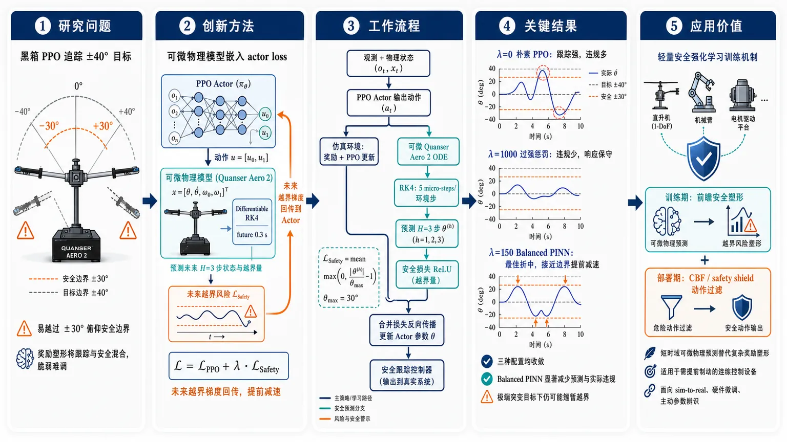
研究问题标准深度强化学习在工业机电系统中依赖黑箱探索，可能让 Quanser Aero 2 一自由度直升机的俯仰角 θ 冲出 ±30° 安全边界；传统 reward shaping 把“追踪 ±40° 目标”和“避免越界”混在同一个奖励里，脆弱且难调。核心问题是：如何让 PPO 控制器在训练时提前感知未来 0.3 秒内的物理越界风险，并在不严重牺牲目标跟踪的情况下减少俯仰安全违规。创新方法Aha 点是把可微物理模型直接嵌入 PPO 的 actor loss，而不是只改奖励函数：从状态 x=[θ, θ̇, ω₀, ω₁]ᵀ 出发，用 PyTorch 中可微 RK4 展开未来 H=3 步轨迹，预测俯仰角是否超过 θₘₐₓ₌₃₀°；若 |θ| 超限，则 ReLU 安全损失激活，形成 L = L_PPO + λ·L_Safety。未来越界的梯度沿着展开的 ODE 和 RK4 计算图回传到 actor，使策略学会在接近边界前提前减速。工作流程输入为当前观测和物理状态：PPO actor 输出转子控制动作；动作一方面进入仿真环境，产生任务奖励和 PPO 更新信号，另一方面进入可微 Quanser Aero 2 动力学模型；模型用 RK4、每环境步 5 个 micro-steps，自回归预测未来 3 步俯仰轨迹；将预测 θ⁽h) 与 ±30° 安全阈值比较，用 max(0, |θ⁽h)|/θₘₐₓ − 1) 计算平均安全损失；最后把 PPO 损失和 λ 加权安全损失合并，反向传播更新策略，输出更会提前制动的安全跟踪控制器。关键结果三种配置均能收敛，但表现形成清晰对比：λ=0 的朴素 PPO 能积极追踪 ±40° 目标，却频繁越过 ±30° 安全线；λ=1000 的过强惩罚模型违规很少，但动作保守、响应迟缓，即使在安全区内也跟踪不足；λ=150 的 Balanced PINN 在两者之间取得最佳视觉折中，仍能强力跟踪参考信号，同时在接近 30° 边界时明显减速，显著减少预测和实际俯仰违规，但突变极端目标下仍可能短暂越界。应用价值该研究为工业网络物理系统中的安全强化学习提供一种轻量训练机制：用短时域可微物理预测替代复杂、任务依赖的安全奖励塑形，让策略在训练阶段学习惯性系统的未来危险趋势。它适合直升机、机械臂、电机驱动平台等需要提前制动的连续控制设备；后续可结合 sim-to-real、真实硬件微调、主动参数辨识，以及 CBF 或 safety shield，形成“训练期前瞻安全塑形 + 部署期实时动作过滤”的双层安全框架。第一部分：核心概览
将可微物理模型嵌入 PPO actor loss，通过 RK4 短时域前向仿真提前惩罚 1-DoF 直升机俯仰角越界，实现安全约束与任务奖励解耦。实验在 Quanser Aero 2 仿真平台上比较 λ=0、150、1000 三种配置；λ=150 在保持 ±40° 目标跟踪能力的同时显著减少 ±30° 安全阈值违规。该工作处于安全强化学习、PINN、工业 CPS 控制交叉方向，贡献偏方法原型与可行性验证。
---
第二部分：结构化快速回顾
《Integrating Physics-Informed Neural Networks for Safe Reinforcement Learning in a 1-DoF Helicopter System》（None，）
背景
深度强化学习适合工业网络物理系统控制，但标准 RL 的黑箱探索可能损坏硬件。传统安全约束常通过复杂奖励塑形实现，容易脆弱且任务依赖强。目标平台为 Quanser Aero 2 1-DoF helicopter，控制俯仰角 θ。
方法
基于 PPO，在 actor loss 中加入由可微物理模型产生的安全惩罚项。系统状态为
x = [θ, θ̇, ω₀, ω₁]ᵀ，用 RK4 积分预测未来 H=3 步，即 0.3 s。总损失为
L = L_PPO + λ·L_Safety，其中安全损失使用 ReLU 只惩罚预测俯仰角超过 θₘₐₓ₌₃₀° 的情况。
结果
三组配置均收敛：Naive Baseline λ=0、PINN Balanced λ=150、PINN Over-penalized λ=1000。λ=0 跟踪 ±40° 目标好但严重越过 ±30° 阈值；λ=1000 安全违规少但跟踪迟缓；λ=150 在跟踪与安全间取得较好平衡。
讨论
核心机制是前瞻式软安全正则化：安全约束不再完全依赖 reward shaping，而是通过可微仿真将未来违规梯度回传到 actor 网络。该机制更适合需要提前制动、考虑惯性的机电系统。
局限
仍为 work-in-progress，实验仅在仿真中完成；λ 通过经验选择，尚未完成系统性 Pareto sweep；10 个随机种子的严格统计评估被推迟到后续工作；软惩罚不能完全消除突变目标下的瞬态越界。
结论
可微物理模型嵌入 PPO actor loss 可作为工业 CPS 中安全 RL 的可扩展训练机制。后续重点包括 sim-to-real transfer、真实硬件微调、主动参数辨识，以及结合 CBF / safety shield 的部署期实时安全过滤。
---
第三部分：逐章节冷凝解析
Abstract
Black-box exploration creates hardware safety risks
DRL 可为 industrial cyber-physical systems, ICPSs 提供强控制能力，但探索过程缺乏显式物理安全意识，可能违反硬件边界。摘要明确指出：*"Deep reinforcement learning (DRL) offers powerful control for industrial cyber-physical systems (ICPSs), but its “black-box” exploration risks violating strict hardware safety limits."*
关键问题不是 DRL 无法控制，而是训练中的探索行为可能触碰不可逆硬件风险。
Reward shaping is insufficient and brittle
常规做法依赖复杂奖励函数把安全约束编码进任务目标，但这种方式容易与性能目标纠缠。摘要直接表述为：*"Typically, these constraints are managed through complex reward shaping."*
这为后续的奖励解耦式安全损失提供动机。
Differentiable physics is embedded into PPO actor loss
核心方法是在 PPO actor loss function 内直接嵌入可微物理模型，而非只在环境反馈或奖励中处理安全。关键表述为：*"we embed a differentiable physics model directly into the proximal policy optimization (PPO) actor loss function."*
这种设计让安全违规的预测梯度能够直接影响策略参数。
Short-horizon prediction enables anticipatory penalties
训练时通过短时域前向轨迹预测提前发现越界风险，而不是等真实环境反馈后再惩罚。摘要说明：*"By simulating short-horizon future trajectories during training, the policy is penalized for anticipated safety violations independent of the task-reward signal."*
这里的学术重点是 anticipated safety violations 与 independent of the task-reward signal：安全不再只是 reward 的一部分。
1-DoF helicopter evaluation shows fewer violations with tracking retained
实验平台为带严格俯仰约束的 1-degree-of-freedom helicopter testbed。结果定位为：*"Evaluated on a simulated 1-degree-of-freedom helicopter testbed with strict pitch constraints, our physics-informed soft regularizations substantially reduce constraint violations while maintaining reliable target tracking."*
贡献性质是安全违规显著减少，同时未牺牲基本跟踪可靠性。
---
1 Introduction
ICPS control motivates safe learning
ICPS 是现代制造和智能生产的基础，结合物理过程与计算控制。引言指出：*"Acp icps integrate physical processes with computational control, underpinning modern manufacturing and smart production."*
这说明研究对象不是纯软件环境，而是带硬件约束、物理动态和安全边界的工业系统。
RL is attractive when mathematical modeling is hard
RL 能在复杂环境中通过数据驱动方式优化控制策略，尤其适合数学建模困难的场景。证据为：*"Ac rl has demonstrated significant success in optimizing these complex environments, offering data-driven solutions where mathematical modeling is challenging [4]."*
此处形成张力：RL 适合复杂系统，但安全性不足。
Standard RL exploration can damage mechatronic hardware
标准 RL 的主要缺陷是探索机制黑箱化，可能造成真实机电系统中的不可逆损坏。引言明确写道：*"a primary limitation of standard reinforcement learning (RL) is its “black-box” exploration strategy, which can cause irreversible hardware damage in real-world mechatronic systems."*
安全问题不仅是性能指标，而是部署可行性的前提。
Target platform is Quanser Aero 2
目标系统为 Quanser Aero 2，通过两个转子控制杆的角度 θ。原文说明：*"The target system is the Quanser Aero 2, a mechatronic laboratory testbed suitable for controlling the angle θ of a bar by actuating two rotors."*
该平台是典型低维但真实机电动态明显的实验对象，适合验证安全 RL 控制思想。
Reward-only safety encoding is brittle
传统 RL 安全约束常被写入奖励函数，但这种方式容易导致复杂、脆弱的奖励塑形。引言指出：*"Traditionally, safety constraints in RL are encoded purely within the reward definition, leading to complex and brittle reward shaping [3]."*
问题在于安全约束与任务奖励共享同一标量通道，容易出现权衡失衡、奖励黑客或调参困难。
Existing safe RL alternatives have their own overhead
已有安全 RL 范式包括 CMDP、CBF、以及基于 MPC 的离线投影。原文列举：*"Other safe RL paradigms rely on constrained Markov decision processes [1], control barrier functions [2], or offline model predictive control (MPC) projections [9]."*
这些方法更严格或更成熟，但可能带来建模、求解或部署复杂度。
Differentiable physics in PPO loss targets anticipatory safety with lower overhead
方法目标是在不过度增加计算负担的条件下实现前瞻式安全控制。引言给出动机：*"To achieve anticipatory and safe control without massive computational overhead, we propose embedding a differentiable physics model directly into the loss function of the proximal policy optimization (PPO) algorithm."*
区别于部署时实时 MPC，该方法主要在训练阶段通过可微预测塑造策略。
Safety conditioning uses differentiable simulation
Actor 网络通过未来违规预测接受安全约束条件化。原文为：*"This approach conditions the actor network regarding safety constraints by penalizing predicted future violations via differentiable simulation [6]."*
关键点是 predicted future violations：策略不仅响应当前状态，还学习未来越界风险。
Scientific value lies in decoupled constraint satisfaction
工作价值被界定为安全约束与主任务奖励信号解耦。引言指出：*"The scientific value of this work-in-progress lies in demonstrating constraint satisfaction decoupled from the primary task-reward signal, providing a scalable mechanism for safe RL deployment."*
这也是相对传统 reward shaping 的核心创新点。
---
2 Methodology
PPO is selected for stability and continuous control
基础算法为 PPO，原因是稳定性和连续动作空间适配性。方法部分写道：*"Our base algorithm is PPO [11], chosen for its stable performance and continuous action space capabilities."*
对于转子控制这类连续控制任务，PPO 是合理基线。
Known differential equations model Quanser Aero 2 dynamics
物理先验来自已知微分方程，用于表示 Quanser Aero 2 动力学。原文为：*"To embed physical foresight, the system dynamics are modeled via known differential equations representing the Quanser Aero 2."*
这里的 physics-informed 不是从数据中隐式学习动力学，而是把已知动力学作为可微模块。
PINN integration uses auto-regressive unroll
PINN 通过自回归展开机制接入策略训练。方法部分说明：*"We integrate the physics-informed neural network (PINN) via an auto-regressive unroll mechanism."*
即从当前物理状态出发，逐步用当前策略产生动作并推进动力学，得到未来 H 步预测。
Dual-path architecture separates task reward and safety prediction
结构上，动作同时进入真实/仿真环境和可微物理模型。图示说明为：*"Actions are evaluated concurrently in the environment and the differentiable physics model."*
一个路径产生 task reward 和 PPO 目标，另一路径产生 anticipatory safety penalty。
Total loss combines PPO and safety gradients
图 1 描述总损失结构：*"Both the task objective (ℒPPO) and the anticipatory safety penalty (ℒSafety, scaled by λ) combine into a total loss, whose gradients flow backward to update the policy."*
该设计确保安全损失不是外部后处理，而是直接影响 actor 更新方向。
Prediction horizon is 0.3 seconds
前瞻时间窗为 0.3 s，对应 10 Hz 下 3 steps。原文给出具体设置：*"We project 0.3 s into the future (3 steps at 10 Hz)."*
这个 H=3 不是任意值，而是在惯性捕捉与计算成本之间折中。
Horizon length balances inertia and computation
短时预测的设计依据是捕捉系统惯性，同时避免长时仿真成本过高。方法部分写道：*"This balances the need to capture system inertia against the computational cost of long-term simulation."*
对直升机俯仰系统而言，惯性会导致动作后果延迟显现，因此只看即时状态不足以保障安全。
RL observation and physics state are explicitly separated
每个时间步区分 agent 的完整观测 sₜ 与物理预测状态 xₜ。原文为：*"For every timestep t, we distinguish the agent’s full observation state st from the physical state xt used for safety prediction."*
这种区分避免把所有 RL 输入都强行解释为动力学状态。
PPO observes augmented state, while physics model uses core 1-DoF variables
PPO 智能体观测增强状态；可微物理模型只提取 1-DoF 核心状态。方法部分写道：*"While the PPO agent observes an augmented state [8], the differentiable physics model isolates strictly the one-degree-of-freedom (1-DoF) Quanser Aero 2 system state."*
这说明安全模型更简洁、更物理化。
Physical state contains pitch, pitch velocity, and motor angular velocities
物理状态定义为
x = [θ, θ̇, ω₀, ω₁]ᵀ，对应俯仰角、俯仰角速度和两个电机内部角速度。原文完整给出：*"x=[θ,θ˙,ω0,ω1]T (pitch angle, pitch velocity, and internal motor angular velocities)."*
这些变量足以初始化非线性连续时间动力学。
Nonlinear continuous-time dynamics are implemented natively in PyTorch
动力学形式为 ẋ = f(x,u)，并在 PyTorch 中实现。方法部分写道：*"We use these core variables to initialize the non-linear continuous-time dynamics x˙=f(x,u) natively in PyTorch."*
PyTorch 实现是可微梯度链条成立的关键。
Privileged simulator state initializes training-time prediction
训练期间，xₜ 直接从仿真器中提取，属于 privileged information。原文为：*"During training, xt is extracted directly from the simulator as privileged information, and the current policy is sampled for new actions using the predicted state as an input."*
这在仿真训练中可行，但真实部署中需要状态估计或传感器映射。
RK4 with 5 micro-steps improves trajectory accuracy
数值积分采用 4th order Runge-Kutta, RK4，每个环境步内执行 5 micro-steps。方法部分给出：*"We utilize a 4th order Runge-Kutta (RK4) integration method, operating at 5 micro-steps per environment step, ensuring accurate trajectory simulation."*
RK4 比欧拉法更适合保持短时预测精度，尤其在梯度回传场景中可减少数值误差。
Safety constraint is intentionally contradictory to target tracking
安全阈值人为设置为 ±30°，目标跟踪信号为 ±40°。原文说明：*"we impose an artificial pitch limit of ±30∘. We simultaneously train the agent to track target signals of ±40∘."*
这制造了明确冲突：最大化跟踪奖励会倾向越界，而安全正则必须抑制越界。
Extreme setting tests safety prioritization over reward maximization
这种配置虽然不符合常规操作，但能测试算法是否能把安全边界置于任务收益之上。方法部分写道：*"While contradictory to standard operation, this extreme configuration effectively showcases the algorithm’s ability to prioritize safety bounds over task-reward maximization."*
这是实验设计中最重要的压力测试。
Actor loss is augmented by weighted safety penalty
总损失为
ℒ = ℒ_PPO + λ·ℒ_Safety。方法部分明确写道：*"The standard PPO actor loss is augmented with a safety penalty derived from the differentiable physics model as ℒ=ℒPPO+λ⋅ℒSafety, where λ acts as a weighting factor."*
λ 控制任务目标与安全惩罚之间的权衡。
RK4 tensor operations preserve computational graph
由于 RK4 积分全部由可追踪张量操作构成，每一步仿真都在计算图中。原文写道：*"Because the numerical RK4 integration is built entirely from trackable tensor operations, the computational graph records every simulation step."*
这使未来越界对当前动作分布的梯度影响可计算。
Safety gradients backpropagate through unrolled ODEs
通过链式法则，预测违规的梯度可穿过展开的微分方程回传到 actor。方法部分说明：*"Consequently, via the chain rule, gradients from anticipated safety violations flow backward through the unrolled differential equations into the actor network."*
这一点是方法能称为可微物理集成的核心。
Safety loss unrolls H = 3 prediction steps
安全损失计算时展开系统动力学 H=3 步。原文为：*"To compute ℒSafety, we unroll the system dynamics over the prediction horizon of H=3 steps."*
与前述 0.3 s 对应，形成固定短时域安全预测。
Predicted pitch angle θ(h) is simulated by differentiable RK4
第 h 步预测俯仰角记为 θ⁽h)。方法部分写道：*"Let θ(h) denote the predicted pitch angle at horizon step h, simulated via the differentiable RK4 integrator."*
安全损失只针对未来俯仰角，而不是所有状态变量。
ReLU penalty activates only beyond θmax = 30°
安全惩罚是软正则项，使用 ReLU 在超过阈值时激活。原文说明：*"The safety penalty acts as a soft regularizer, relying on a rectified linear unit (ReLU) to penalize the policy strictly when the absolute predicted pitch exceeds the predefined safety limit θmax=30∘."*
这意味着在安全区域内不施加额外惩罚，避免过度保守。
Normalized safety loss penalizes relative threshold violation
安全损失公式为：
ℒ_Safety = 1/H ∑ₕ₌₁H max(0, |θ⁽h)|/θₘₐₓ − 1)。
原文给出：*"The normalized safety loss is defined as: ℒSafety=1H∑h=1Hmax(0,|θ(h)|θmax−1)."*
归一化形式使惩罚表达为相对超限比例，而非原始角度误差。
Differentiability maps future violations to current action distribution
由于公式完全由可微张量操作组成，未来约束违规能够映射回当前 actor 输出分布。方法部分总结为：*"Because this formulation is purely composed of differentiable tensor operations, the resulting gradients correctly map anticipated future constraint violations back to the actor network’s current action distribution."*
这就是“前瞻式安全学习”的数学闭环。
---
3 Experimental Setup and Results
Evaluation uses simulated Quanser Aero 2 in 1-DoF configuration
实验系统为 simulated Quanser Aero 2，采用 1-DoF 配置。结果部分开头写道：*"We evaluate our approach on a simulated Quanser Aero 2 system in a 1-DoF configuration."*
因此结论限于仿真平台，不等同于真实硬件验证。
Dynamics and base RL formulation come from prior work
系统动力学与基础 RL 问题设置已有前期研究支撑。原文说明：*"The underlying system dynamics and base RL problem formulation have been established in previous studies [7]."*
这表明本研究重点不在重新建模直升机，而在安全损失集成。
Environment uses Gym API and Python-Simulink interfaces
实验环境通过标准 Gym API 和 Python-Simulink interfaces 访问。证据为：*"the environment is accessed via a standard Gym API framework using Python-Simulink interfaces [10]."*
该接口保证与常见 RL 工具链兼容。
Three λ configurations are compared
实验比较三种配置：
Naive Baseline λ=0、PINN Balanced λ=150、PINN Over-penalized λ=1000。原文给出：*"We tested three primary configurations, running 10 random seeds for each to ensure statistical significance: Naive Baseline (λ=0), PINN Balanced (λ=150), and PINN Over-penalized (λ=1000)."*
λ=0 表示无安全惩罚；λ=150 表示平衡；λ=1000 表示强安全惩罚。
Each configuration uses 10 random seeds
每个配置运行 10 random seeds，目标是增强统计可靠性。原文为：*"running 10 random seeds for each to ensure statistical significance."*
不过后文又指出完整统计评估尚未完成，因此当前结果更偏定性与趋势展示。
λ is empirically chosen
λ 的选择来自经验调参，而非系统搜索。结果部分写道：*"The penalty weight λ was chosen empirically."*
这限制了最优性结论，尚不能证明 λ=150 在全局意义上最佳。
Full 10-seed statistics and Pareto sweep remain future work
虽然运行了 10 个随机种子，但严格统计分析与 λ Pareto 扫描被留到未来。原文明确说明：*"a rigorous statistical evaluation of all 10 seeds and a λ Pareto sweep are reserved for future work."*
因此缺少均值±方差、置信区间、显著性检验、违反次数统计等硬指标。
All configurations converge
训练稳定性方面，三种配置都成功收敛。结果部分写道：*"All configurations successfully converged."*
安全正则没有导致 PPO 训练崩溃，这是方法可用性的基础证据。
Value loss increases under stronger safety penalties
λ 较高时，value loss 自然增大，原因是任务目标与安全目标冲突。原文说明：*"We observed that the value loss naturally increases for higher λ configurations due to the conflicting objectives (tracking a 40∘ target vs. stopping at 30∘)."*
这里的冲突非常明确：奖励希望接近 40°，安全希望不超过 30°。
Policy loss remains comparable across configurations
尽管 value loss 随 λ 增大，policy loss 仍大致可比。证据为：*"but the policy loss remained comparable across the board."*
这说明 actor 更新未因安全项严重失稳。
Evaluation reveals tracking-safety trade-off
图 2 结果展示了目标跟踪与约束满足之间的权衡。原文为：*"The evaluation results (see Fig. 2) highlight a clear trade-off between target tracking and constraint satisfaction."*
该权衡是安全控制中的核心问题：越保守通常越安全但越低性能。
Naive baseline tracks well but violates safety heavily
λ=0 基线能很好追踪 40° 目标，但严重违反 30° 阈值。结果部分写道：*"The Naive Baseline achieves high task reward by accurately tracking the 40∘ target, but heavily violates the 30∘ safety threshold."*
这证明单纯任务奖励不能保证安全。
Over-penalized PINN is safe but sluggish
λ=1000 的过惩罚模型安全违规很少，但整体跟踪迟缓，甚至在安全区域内动态适应也差。原文为：*"The PINN Over-penalized model exhibits very few safety violations but results in sluggish overall tracking, failing to adapt dynamically even when within safe regions."*
过大的 λ 会让策略过度规避风险，牺牲可控性和响应速度。
Balanced PINN offers suitable λ choice
λ=150 被描述为合适选择。结果部分写道：*"The PINN Balanced configuration demonstrates a suitable choice of λ."*
它不是形式化最优，而是在当前实验设置下展现出较好折中。
Balanced PINN tracks aggressively while decelerating near safety threshold
λ=150 能积极追踪参考信号，同时学习在接近 30° 阈值时减速。原文说明：*"It aggressively tracks the reference signal and largely learns to decelerate to respect the 30∘ threshold."*
这正是前瞻式安全损失希望塑造的行为：不是简单限幅，而是提前制动。
Transient violations remain during abrupt extreme setpoint changes
λ=150 仍可能在突变极端设定值下出现短暂越界。结果部分写道：*"Although brief transient violations can still occur during abrupt, extreme setpoint changes."*
因此该方法提供的是软安全正则化，不是硬安全保证。
Balanced PINN drastically reduces predicted and actual pitch violations
相比基线，λ=150 显著减少预测和实际俯仰违规。原文为：*"it drastically reduces both predicted and actual pitch violations compared to the baseline."*
这里同时涉及可微模型中的预测违规和环境轨迹中的真实违规，说明训练损失与实际行为方向一致。
Figure 2 summarizes the qualitative trade-off
图 2 标注为：*"Simulation evaluation profile demonstrating the trade-off between target tracking and constraint satisfaction."*
图注进一步总结三者：*"The Naive Baseline ignores the 30∘ safety threshold, the PINN Over-penalized struggles to track the signal, and the PINN Balanced successfully adheres to the constraints while maintaining strong tracking performance."*
图示证据支持 λ=150 的折中有效性。
---
4 Conclusion and Future Work
Differentiable physics in PPO actor loss is scalable and effective for soft anticipatory safety
结论将方法定位为工业 CPS 中的软前瞻式安全正则化机制。原文写道：*"embedding differentiable physics models into the PPO actor loss function provides a scalable and effective mechanism for soft anticipatory safety regularization in industrial cyber-physical systems."*
关键词是 soft：该机制降低违规概率，但不提供形式化硬约束保证。
Anticipatory constraint satisfaction reduces reward shaping dependence
方法可实现前瞻式约束满足，并降低复杂任务特定奖励塑形需求。结论指出：*"This approach enables anticipatory constraint satisfaction and mitigates the need for complex, task-specific reward shaping."*
这对应引言中的核心问题：安全不应完全压进 reward。
Next step is sim-to-real transfer to Quanser Aero 2 hardware
后续研究重点是将 PINN 训练策略迁移到真实 Quanser Aero 2。原文为：*"Ongoing and future research will focus on the sim-to-real transfer of this PINN-trained agent directly onto the physical Quanser Aero 2 hardware."*
真实硬件验证将决定方法的实用价值。
Real-hardware fine-tuning is planned beyond zero-shot transfer
除零样本迁移外，还计划在真实硬件上继续微调。结论写道：*"Beyond zero-shot transfer, we plan to conduct further fine-tuning directly on the real hardware to close the sim-to-real gap."*
这表明仿真策略很可能不能直接完美适配真实系统。
Static ODE models may introduce systematic errors
真实硬件微调阶段，固定 ODE 模型可能带来系统误差。原文指出：*"Because relying on a static ordinary differential equation (ODE) model during this phase could introduce systematic errors."*
这暴露了物理模型方法的关键风险：模型错了，梯度也可能把策略推向错误方向。
Active parameter identification should accompany fine-tuning
为了缩小模型误差，需要结合主动参数辨识。结论写道：*"this fine-tuning should be coupled with active parameter identification."*
这意味着物理模型参数不能固定，应随真实轨迹校准。
Differentiable physics parameters will be dynamically updated
未来计划动态更新可微物理模型参数，使其匹配真实轨迹。原文为：*"we plan to dynamically update the parameters of the differentiable physics model to match observed real-world trajectories."*
该方向把 PINN 安全损失从静态先验推进到自适应物理先验。
Reactive safety mechanisms are needed for deployment
训练期预测损失还将与部署期反应式安全机制结合，如 safety shield 或 CBF。结论明确写道：*"we aim to complement our anticipatory training loss with a reactive safety mechanism (such as a safety shield or CBF) that acts as a real-time execution filter."*
这补足软正则无法保证硬安全的问题。
Deployment filter would override dangerous actions
反应式架构约束会在部署时直接干预动作。原文说明：*"a reactive architectural constraint would intervene directly during deployment, instantly overriding proposed actions if a forward-simulation predicts an imminent pitch violation."*
这相当于在策略输出和执行器之间加入实时安全层。
Predictive loss guides training; reactive shield enforces execution safety
训练期损失负责平滑引导策略形成安全行为，部署期 shield 负责紧急覆盖危险动作。结论对比写道：*"While the predictive loss smoothly guides the policy toward safe behaviors during training."*
这形成两层安全框架：learning-time shaping + run-time filtering。
---
Acknowledgments
Funding sources support industrial automation and AI-for-green research
资金支持来自 Christian Doppler Research Association、Josef Ressel Centre for Intelligent and Secure Industrial Automation、Land Salzburg 的 WISS Co-project，以及 European Interreg project AI4GREEN。原文为：*"Financial support for this study was provided by the Christian Doppler Research Association (CDG) through the Josef Ressel Centre for Intelligent and Secure Industrial Automation, the corresponding WISS Co-project of Land Salzburg, and by the European Interreg project BA0100172 AI4GREEN."*
AI tools were used only for language and formatting assistance
准备阶段使用 AI 工具进行语言编辑与格式辅助。原文说明：*"During the preparation of this work, the authors used AI tools for language editing and formatting assistance."*
该声明不涉及方法生成、数据分析或实验执行。
---
第四部分：深度理解与语言支持
1. 术语解析
#### Anticipatory safety regularization
Anticipatory 强调“提前预见”，不是等违规发生后才惩罚；regularization 表示它是附加在优化目标中的软约束项。语境中对应未来 H=3 步预测俯仰角，一旦预测超过 ±30°，就通过 loss 惩罚当前策略。它不同于硬约束，不保证绝不违规。
#### Decoupled from the primary task-reward signal
Decoupled 表示安全目标不再完全混入任务 reward。常规 reward shaping 会把“追踪好”和“别越界”压成一个标量奖励；这里安全惩罚单独进入 actor loss，形式为 L = L_PPO + λL_Safety。微妙之处在于：仍然是总损失相加，但信息来源和语义通道独立。
#### Soft regularizer
Soft 表示违反约束时施加惩罚，而不是数学上禁止策略产生危险动作。该方法使用 ReLU 惩罚 |θ|/θₘₐₓ − 1 的正部，因此安全区域内无惩罚，越界后惩罚随超限比例增长。它能减少违规，但不能像 CBF 或 shield 那样提供部署期强制安全。
#### Privileged information
训练时从仿真器直接提取 xₜ = [θ, θ̇, ω₀, ω₁]ᵀ。这些变量在仿真中容易获得，但真实硬件中未必能无噪声、实时、完整测得。Privileged 的含义是训练阶段可用、部署阶段可能不可直接用的信息。
#### Sim-to-real gap
仿真模型与真实硬件之间的动态差异。即使用同样动作，真实 Quanser Aero 2 的摩擦、电机延迟、传感噪声、参数漂移可能导致不同轨迹。该差异会削弱可微 ODE 安全预测的准确性，因此需要参数辨识和真实硬件微调。
---
2. 疑难查证
#### 为什么把物理模型放进 actor loss，而不是只修改 reward？
Reward 是环境返回的标量信号，通常不可直接告诉策略“当前动作会在 0.3 s 后因惯性导致越界”。把可微物理模型嵌入 actor loss 后，未来预测轨迹中的越界量会通过链式法则回传到当前动作分布。这样策略能学到类似“现在已经接近 30° 且速度仍向外，必须提前减速”的行为。
#### 为什么 λ=1000 反而不好？
λ 太大时，优化器会把避免安全损失置于几乎所有目标之上。即使系统仍在安全区域，策略也可能选择过度保守动作，导致响应迟缓。实验中 λ=1000 的表现正是“very few safety violations”但“sluggish overall tracking”。安全控制不是简单地让 λ 越大越好，而是要在性能与风险之间寻找 Pareto 平衡。
#### 为什么 ±40° 目标和 ±30° 安全阈值是有意冲突？
如果目标始终在安全区内，策略可能无需真正学习“牺牲奖励以保持安全”。设置 ±40° 目标、±30° 限制后，追踪奖励会推动系统越界，安全损失会阻止越界。这个对抗设置能直接检验安全机制是否能压过任务奖励。
#### 为什么仍需 CBF 或 safety shield？
训练期软损失只能让策略“倾向于安全”，不能保证面对分布外状态、模型误差、传感噪声或突发参考变化时不输出危险动作。CBF 或 shield 作为部署期实时过滤器，可在动作执行前检查未来是否会越界，并直接覆盖危险动作。两者互补：PINN loss 让策略更自然地安全，shield 负责最后防线。
---
第五部分：创新评估与关联
1. 创新性判断
#### 相对 reward shaping：安全信号从奖励中解耦
过去许多安全 RL 控制实验依赖 reward shaping，把跟踪误差、能耗、平滑性、安全违规全部混入一个 reward。该工作把安全项显式写成 λ·L_Safety，并通过可微物理预测产生梯度。创新点不是“惩罚越界”本身，而是安全惩罚直接来自未来物理轨迹，并与主任务 reward 分离。
#### 相对 CMDP：避免完整约束优化框架的复杂性
CMDP 可形式化处理约束，但通常需要约束价值估计、拉格朗日乘子更新或特殊优化流程。该方法保留 PPO 主框架，只修改 actor loss，工程集成成本较低。牺牲点是没有 CMDP 式严格约束保证。
#### 相对 CBF：从部署期强制安全转向训练期行为塑造
CBF 常用于实时保证状态不进入不安全集合，但需要控制仿射结构、可行性分析或在线约束求解。该方法在训练阶段通过可微仿真塑造策略，使其提前减速和规避边界。创新在于把物理安全知识变成可学习的梯度信号，而非只作为执行期过滤器。
#### 相对 MPC projection：降低在线计算压力
MPC 安全投影可通过前向优化修正动作，但在线计算成本较高。该方法把短时域预测嵌入训练 loss，部署时可直接使用训练后的策略，潜在减少实时优化负担。其局限是训练时预测模型误差会影响策略安全性。
#### 相对传统 PINN：PINN 不用于求解 PDE，而用于 RL 安全梯度
经典 PINN 多用于求解正/反问题中的微分方程。该工作中的“physics-informed”更偏向把已知 ODE 和 RK4 作为可微计算图，服务于 PPO actor 更新。创新在于应用位置：不是单独训练一个物理网络，而是将物理展开作为安全损失生成器。
#### 解决的前人未充分解决的问题
核心问题是：在连续控制机电系统中，如何让 RL 策略在训练阶段学习“未来会越界”的物理后果，同时避免复杂奖励塑形和高开销在线优化。该方法用 H=3、0.3 s、RK4、ReLU safety loss、λ 权重实现轻量前瞻安全正则；在 1-DoF Quanser Aero 2 仿真中展示了相对 λ=0 基线更低的预测与实际违规，同时保持较强跟踪能力。
-
05
📄 摘要：针对机器学习哈密顿量模型，构建直接由预测哈密顿量计算能量和力的基准，而非只评估轨道或电子密度重构误差。评测显示，物理约束的哈密顿量预测可作为快速电子结构近似并输出可用于原子模拟的能量—力，但不同模型在重构指标与力学精度之间并不总一致。
💡 亮点：机器学习哈密顿量从“重构电子结构”推进到“直接给出能量和力”的可用性检验。该基准有助于判断 MLH 是否能进入分子动力学与材料筛选流程。
📖 展开分析 + 配图
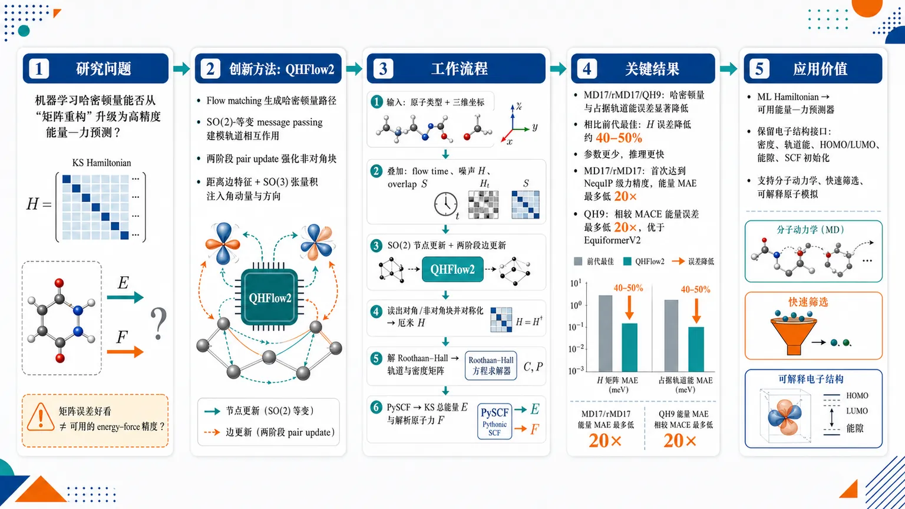
研究问题机器学习哈密顿量是否不仅能重构 Kohn–Sham 哈密顿量矩阵，还能像主流机器学习原子势一样，直接给出实际分子模拟所需的高精度总能量与原子力；核心矛盾是“矩阵误差好看”是否真的能转化为可用的 energy–force 精度。创新方法提出 QHFlow2：用 flow matching 从分子几何生成哈密顿量路径，核心 Aha 点是把高效 SO(2)-等变 message passing 骨干用于轨道相互作用建模，并设计两阶段 pair update 专门强化原子间非对角哈密顿量块；先用距离边特征建立耦合，再用 SO(3)-等变张量积注入轨道角动量与几何方向，使预测对 cutoff 和 radial basis 更稳健。工作流程输入分子原子类型与三维坐标，叠加 flow time、中间噪声哈密顿量和 overlap 等辅助矩阵；QHFlow2 通过 SO(2)-等变骨干更新原子节点特征，通过两阶段边更新构建原子对轨道耦合；读出对角块与非对角块并对称化得到厄米哈密顿量；再解 Roothaan–Hall 方程得到轨道与密度矩阵，最后用 PySCF 计算 KS 总能量和解析原子力。关键结果在 MD17/rMD17 和 QH9 上，QHFlow2 相比 QHFlow、QHNet、SPHNet 显著降低哈密顿量与占据轨道能误差；哈密顿量误差比前代最佳模型低约 40–50%，参数更少、推理更快；在 MD17/rMD17 上首次让 Hamiltonian predictor 达到 NequIP 级力精度，同时能量 MAE 最多低 20×；在 QH9 上相较 MACE 能量误差最多低 20×，并优于 EquiformerV2。应用价值证明机器学习哈密顿量可以从“电子结构矩阵重构器”升级为“可用的能量—力预测器”，同时保留电子密度、轨道能、HOMO/LUMO、能隙和 SCF 初始化等电子结构接口；为分子动力学、量子化学快速筛选和可解释原子模拟提供一条兼具物理可解释性与 MLIP 级实用精度的路线。第一部分：核心概览 (Overview)
该研究把机器学习哈密顿量（MLH）从“矩阵重构器”重新定位为可直接计算总能量与解析力的电子结构预测器，建立了统一下游评估基准，并提出 QHFlow2。QHFlow2 采用 SO(2)-等变骨干网络与两阶段边更新，在 MD17/rMD17 与 QH9 上显著降低哈密顿量、轨道能、能量和力误差。核心地位在于首次证明高精度 MLH 可达到 NequIP 级力精度，同时在能量误差上优于主流 MLIP，为兼具电子结构可解释性与原子模拟实用性的模型路线提供证据。
---
第二部分：结构化快速回顾
《Machine Learning Hamiltonians are Accurate Energy-Force Predictors》（None，）
背景
机器学习哈密顿量直接从分子几何预测 Kohn–Sham Hamiltonian，理论上可同时获得电子密度、轨道、能量和力；但既有工作多用矩阵重构误差或 SCF 加速效果评价，缺乏直接下游能量—力评估。
方法
提出 QHFlow2：基于 flow matching 学习哈密顿量分布路径，采用 eSEN 风格 SO(2)-等变 message passing backbone，并加入两阶段 pair update增强非对角哈密顿量块对 cutoff 和 radial basis 的鲁棒性。预测哈密顿量后通过 Roothaan–Hall 方程求轨道、密度矩阵，再用 PySCF 计算总能量和解析力。
结果
在 MD benchmark 上，QHFlow2 相比 QHFlow、QHNet、SPHNet 显著降低哈密顿量误差；在 MD17/rMD17 上首次使 Hamiltonian predictor 达到 NequIP-level force accuracy，能量 MAE 最多低 20×。在 QH9 上，相比 MACE 能量误差最多低 20×，并优于 EquiformerV2。
讨论
哈密顿量误差、占据轨道能误差与下游能量—力误差呈一致下降趋势，说明更准确的电子结构对象可有效转化为物理量预测精度。模型规模和数据规模增加均带来稳定收益。
局限
评估集中于固定 DFT 设置下的分子体系，尤其是 MD17/rMD17、QH9；开放壳层、自旋极化、大体系周期材料、长时间 MD 稳定性、跨泛函/基组迁移能力未在给定内容中充分验证。QH9 中 MLIP 对比部分使用公开 QM9 结果作为参考，数据与训练设置并非完全同源。
结论
高精度 MLH 不仅能重构哈密顿量，还能成为可实用的能量—力预测器；QHFlow2 通过架构效率、pair refinement 和统一直接评估证明 MLH 可同时提供精确能量、竞争性力和电子结构对象。
---
第三部分：逐章节冷凝解析 (Section-by-Section Condensing)
Abstract
Direct downstream evaluation gap
既有 MLH 虽能快速近似轨道、电子密度等电子结构对象，但主要按重构指标评价，缺乏直接能量—力能力检验；核心问题是预测哈密顿量能否真正转化为高质量 energy–force prediction。摘要明确指出，*"existing Hamiltonian models are evaluated mainly by reconstruction metrics, leaving it unclear how well they perform as energy–force predictors."*
Benchmark for energies and forces from predicted Hamiltonians
评估框架直接从预测哈密顿量计算能量与力，而不是只报告矩阵 MAE 或轨道误差。关键贡献是建立可检验 MLH 下游物理精度的 benchmark：*"We address this gap with a benchmark that computes energies and forces directly from predicted Hamiltonians."*
QHFlow2 architecture and accuracy gains
QHFlow2 结合 SO(2)-equivariant backbone 与 two-stage edge update，成为新的 state-of-the-art Hamiltonian model；摘要给出核心量化收益：*"QHFlow2 achieves 40% lower Hamiltonian error than the previous best model with fewer parameters."*
NequIP-level force accuracy and lower energy MAE
在 MD17/rMD17 上，QHFlow2 是第一个达到 NequIP-level force accuracy 的 Hamiltonian model，同时能量 MAE 最多低 20×：*"it is the first Hamiltonian model to reach NequIP-level force accuracy while achieving up to 20× lower energy MAE."*
QH9 energy improvement over MACE
在 QH9 上，QHFlow2 相比 MACE 将 energy error 最多降低 20×：*"On QH9, QHFlow2 reduces energy error by up to 20× compared to MACE."*
Scaling behavior links Hamiltonian accuracy to downstream physics
模型容量和数据规模增加时，Hamiltonian accuracy、energy accuracy、force accuracy 同步改善，支持“更精确哈密顿量可转化为更精确物理量”的结论：*"improvements in Hamiltonian accuracy effectively translate into more accurate energy and force computations."*
---
1 Introduction
MLH predicts an electronic-structure object rather than only scalar/vector labels
MLH 与 MLIP 的根本差别在于输出对象不同：MLIP 通常直接回归能量与力，MLH 预测 Kohn–Sham Hamiltonian，因此可访问电子密度等中间电子结构信息。原始表述为：*"Unlike machine-learning interatomic potentials (MLIPs), they predict an electronic-structure object that provides access to quantities such as electron density while also enabling downstream evaluation of energies and forces."*
Prior MLH evaluation overemphasizes SCF acceleration
既有 MLH 研究主要用预测哈密顿量加速 self-consistent field (SCF) 收敛，而不是直接检验预测哈密顿量导出的能量和力是否准确。关键证据为：*"prior work has focused primarily on using predicted Hamiltonians to accelerate self-consistent field (SCF) convergence."*
Energy prediction gap versus MLIPs motivates re-evaluation
近期研究显示即使强 Hamiltonian model 的能量预测也明显弱于 MLIP，这形成了直接下游评估的动机。引文指出：*"even strong Hamiltonian models yield far less accurate energy predictions than MLIP approaches."*
Central research question
核心问题不是 MLH 是否能重构哈密顿量，而是是否达到实际原子模拟所需的能量—力精度。研究问题被直接表述为：*"How far have MLH models progressed, and can they achieve the energy–force accuracy required for practical atomistic simulations?"*
Unified benchmark reveals existing models below MLIP-level accuracy
直接 benchmark 首先显示既有 Hamiltonian models 尚未达到 MLIP 级别精度；这为 QHFlow2 的必要性提供背景。原文写道：*"existing Hamiltonian models do not meet the MLIP level of accuracy, which serves as a practical reference for downstream applications."*
Scalable SO(2)-equivariant architecture
QHFlow2 第一个结构创新是用 SO(2)-equivariant backbone 提升可扩展性，借鉴 eSEN 的高效 edge updates 来模拟 orbital interactions。关键表述为：*"we redesign the equivariant architecture for scalability by adapting an SO(2)-equivariant backbone based on eSEN, whose efficient edge updates are well suited for modeling orbital interactions."*
Two-stage pair update for off-diagonal blocks
第二个结构创新是两阶段 pair update，目标是增强非对角哈密顿量块对 cutoff 与 radial basis choices 的稳定性。原文为：*"we introduce a two-stage pair update that improves the robustness of the off-diagonal Hamiltonian blocks to cutoff and radial-basis choices."*
Extended Hamiltonian benchmark includes energies and analytic forces
标准 Hamiltonian benchmark 被扩展为直接评估 energies 和 forces，使 MLH 与 MLIP 能在同一物理输出层面比较。直接证据：*"we extend a standard Hamiltonian benchmark to directly evaluate energies and forces from predicted Hamiltonians, facilitating controlled comparisons with MLIP baselines."*
MD17/rMD17 performance
在 MD17/rMD17 上，QHFlow2 使 Hamiltonian predictor 第一次达到 MLIP 竞争性力精度，并在能量 MAE 上最多优于 NequIP 20×：*"QHFlow2 achieves up to 20× lower energy MAE than NequIP, while reaching force accuracy comparable to MLIPs for the first time among Hamiltonian predictors."*
QH9 performance
在 QH9 上，QHFlow2 相比 MACE 最多降低 energy error 20×，并优于 EquiformerV2。证据为：*"QHFlow2 reduces energy error by up to 20× relative to MACE and improves upon EquiformerV2."*
Parameter efficiency and inference speed
QHFlow2 相比前代 state of the art 哈密顿量误差下降 40–50%，参数约为一半，推理快 2.8×。原文给出：*"QHFlow2 further reduces Hamiltonian prediction error by 40–50% relative to the prior state of the art while using roughly half the parameters and achieving 2.8× faster inference."*
Three stated contributions
三项贡献分别是：可扩展 QHFlow2、统一直接能量—力 benchmark 和 scaling study。原文列明：*"We propose QHFlow2, a scalable MLH..."*；*"We establish a unified benchmark that directly computes total energies and analytic forces from predicted Hamiltonians..."*；*"We study model and data scaling in Hamiltonian prediction under direct evaluation..."*
---
2 Related Work
MLH lineage and limitations
早期 MLH 使用 equivariant message passing 与 orbital-based matrix representations 从分子几何预测 Kohn–Sham Hamiltonian；后来研究提高可扩展性与训练目标，但评价仍主要停留在 matrix/orbital-energy metrics 或 SCF workflow utility。原文概括为：*"Deep learning approaches predict Kohn-Sham Hamiltonians from molecular geometries using equivariant message passing with orbital-based matrix representations."* 以及 *"Existing studies mainly evaluate Hamiltonian models using matrix and orbital-energy metrics."*
Direct downstream accuracy as a distinction
区别于预训练或 SCF 加速路线，该研究把 Hamiltonian predictor 本身放入下游物理计算链路，报告从预测哈密顿量计算出的 energies 与 analytic forces。关键句：*"In contrast, our work evaluates Hamiltonian predictors through direct downstream accuracy, reporting energies and analytic forces computed from predicted Hamiltonians under a unified benchmark."*
MLIPs directly regress energies and forces
MLIP 直接从分子构型回归能量和力，通常依赖 local atomic graphs、message passing 和 permutation-invariant aggregation。原文为：*"MLIPs regress energies and forces directly from molecular configurations, typically using message passing over local atomic graphs and permutation-invariant aggregation."*
Equivariant and angular message passing improve MLIPs
方向性、角度 message passing 与群论等变更新可增强各向异性相互作用建模；典型模型包括 DimeNet、GemNet、NequIP、Equiformer、MACE 等。证据为：*"Directional and angular message passing improve the modeling of anisotropic interactions"*，以及 *"group theory-based equivariant updates further enhance accuracy across molecular benchmarks."*
Hamiltonian models provide multiple observables simultaneously
MLIP 主要预测 energy/force；Hamiltonian model 预测电子结构对象，因此可同时计算 energies、forces 和其他 observables。原文对比为：*"Hamiltonian models predict an electronic-structure object, thereby enabling the computation of energies, forces, and other observables simultaneously."*
SO(2) as efficiency-oriented equivariance
全 SO(3) 等变更新在高阶角动量特征下代价高，SO(2) local frame 方法能降低开销。原文指出：*"State-of-the-art approaches often stem from SO(3)-equivariant updates..."*，但 *"the training cost can grow rapidly with higher-order angular features."* 解决方向是：*"Recent architectures mitigate this overhead by performing equivariant updates in local frames and exploiting SO(2) structure."*
---
3 Method
3.1 Overview: Machine Learning Hamiltonians
Kohn–Sham Hamiltonian as the central electronic-structure quantity
在固定 DFT 设置下，Kohn–Sham Hamiltonian 是决定基态电子结构的中心对象，矩阵维度为 ( HinRB× B )，其中 (B) 是 basis functions 数。原文为：*"the KS Hamiltonian H ∈ RB×B is the central quantity that determines the ground-state electronic structure, where B is the number of basis functions under a fixed DFT setup."*
QHFlow2 pipeline from geometry to Hamiltonian to density, energy, and forces
QHFlow2 从分子几何 ( M ) 直接预测 ( hatH )，再得到 ( hatD )、( hatEKS )、( hatF )。流水线为：(Mi̊ghtarrowhatHi̊ghtarrowhatDi̊ghtarrow(hatEKS,hatF))。原文写道：*"We propose QHFlow2, which predicts H directly from molecular geometry M and then evaluates the density matrix D... as well as the KS total energy EKS and atomic forces F from the prediction."*
Roothaan–Hall equation links predicted Hamiltonian to orbitals
预测哈密顿量通过 Roothaan–Hall equation 与 overlap matrix ( S ) 求解 molecular-orbital coefficients ( C ) 与 orbital energies ( boldsymbolϵ )：(hatHC=SCboldsymbolϵ)。原文为：*"The Kohn-Sham Hamiltonian provides a direct interface to downstream electronic structure quantities through the Roothaan–Hall equation."*
Restricted closed-shell occupation rule
在 RKS restricted closed-shell 设定下，占据轨道按本征值排序，每个占据轨道放入两个电子；占据向量 (oₚ₌₂) for (płeqłceil Nₑ/2c̊eil)，否则为 0。原文为：*"Assuming a restricted closed-shell Kohn-Sham (RKS) setting, we assign two electrons to every occupied orbital following eigenvalue ordering."*
Density matrix determines electron density
密度矩阵计算为 ( D=Cdiag(o)C→p )，并唯一决定电子密度 (h̊o)。证据为：*"The density matrix D uniquely determines the electron density ρ."*
Forces are analytic gradients of the KS energy
力通过 KS energy functional 对核坐标的解析负梯度得到：(Fᵢ₌₋nablaᵣ_ᵢEKS[h̊o])。原文为：*"the corresponding forces as analytic gradients Fi = −∇ri EKS[ρ]."*
---
3.2 Learning Hamiltonians with Flow Matching
Equivariant flow matching objective
QHFlow2 使用 equivariant flow matching 学习从分子 (M) 到目标 Hamiltonian (H) 的映射，时间相关 vector field (vₜ^θ) 需要满足 rotational equivariance。原文为：*"We train our model using equivariant flow matching"*，并且 *"the time-dependent vector field vtθ, which satisfies rotational equivariance."*
Linear interpolation between invariant noise and target Hamiltonian
初始 noisy Hamiltonian ( H₀ ) 来自 rotation invariant distribution，时间 (tsimU(0,1))，中间状态为 (Hₜ₌₍₁₋ₜ₎H₀₊ₜH)。原文为：*"we draw an initial noisy H0 from a rotation invariant distribution and sample intermediate Ht where t ∼ U(0,1)."*
Terminal Hamiltonian prediction conditioned on auxiliary matrices
模型预测终端 Hamiltonian ( H₁^θ=f_θ(M,t,Hₜ;Mₖ) )，其中辅助矩阵可为 overlap matrix 或 initial Hamiltonian，并可从几何容易计算。原文为：*"Mk is an auxiliary matrix feature, such as the overlap matrix or the initial Hamiltonian, which can be easily computed from M."*
Vector field and conditional flow matching loss
诱导向量场为 (vₜ^θ=(H₁^θ-Hₜ₎/(1-t))，训练目标匹配 oracle velocity ((H-H₀₎/(1-t))。原文为：*"This induces the vector field..."*，以及 *"Corresponding training minimizes the conditional flow-matching objective..."*，目标是 *"encouraging vtθ to match the oracle velocity along the interpolation path."*
---
3.3 QHFlow2 Architecture
Architecture combines SO(2) message passing and two-stage pair features
QHFlow2 通过 SO(2)-equivariant message-passing backbone 与显式两阶段 pairwise feature update 构建 Hamiltonian，同时保持 SO(3)-equivariant feature structure。原文为：*"QHFlow2, an MLH model that improves scalability by combining an SO(2)-equivariant message-passing backbone with an explicit two-stage update of pairwise features for Hamiltonian construction while preserving an SO(3)-equivariant feature structure."*
Node embeddings combine atomic number, time, and Hamiltonian matrix features
输入 embedding 包括 atomic number (Zᵢ)、flow time (t)、中间哈密顿量 (Hₜ)。(Zᵢ) 嵌入为 SO(3)-invariant feature，(t) 用 sinusoidal encoding，(Hₜ) 用 matrix encoder 映射为 irreducible representation features。原文为：*"The atomic number Zi is embedded in an SO(3)-invariant feature"*，*"t is embedded using a sinusoidal encoding"*，以及 *"The intermediate Hamiltonian Ht is embedded in an SO(3)-equivariant irreducible representation (irrep) feature using a matrix encoder."*
Invariant and equivariant components are initialized differently
(ell=0) invariant components 通过 MLP 混合 atom、time、matrix invariant features；(ell>0) components 通过 matrix embeddings 求和保持等变性。原文解释为：*"The initial node feature is then constructed by combining only the invariant (ℓ = 0) components"*，以及 *"All (ℓ > 0) components are initialized by summing the matrix embeddings while preserving equivariance."*
SO(2)-equivariant backbone uses directed pair messages under cutoff
backbone 堆叠 (L) 层，每层包含 SO(2)-equivariant edgewise convolution 与 nodewise update。邻域定义为 (N(i)=j≠ i|rᵢⱼ<r_c)，距离用 smooth radial basis functions 编码。原文为：*"The backbone takes the initial node embeddings... and stacks L layers, each alternating an SO(2)-equivariant edgewise convolution and a nodewise update."* 以及 *"define the neighborhood N(i)= j ≠ i | rij < rc with cutoff rc."*
Radial basis uses Gaussian or Bessel bases with smooth cutoff
距离 (rᵢⱼ) 经 (φᵣbf(rᵢⱼ)=[b₁₍ᵣᵢⱼ),...,b_M(rᵢⱼ)]) 编码，basis 可为 Gaussian 或 Bessel，并受 smooth cutoff envelope 调制。原文为：*"bm are smooth radial basis functions (e.g., Gaussian or Bessel bases) modulated by a smooth cutoff envelope."*
Local SO(2) operations preserve SO(3) irrep structure
SO2Conv 在 local SO(2) frame 中执行 edgewise convolution，但 node features 仍保持 SO(3)-irrep decomposition。关键句：*"it operates in a local SO(2) frame while maintaining the node features in an SO(3)-irrep decomposition."*
Two-stage pair update models off-diagonal Hamiltonian blocks
Hamiltonian 被分解为 on-atom diagonal blocks 与 inter-atomic off-diagonal couplings；pair module 为所有 atom pairs 构建 pair features 以参数化非对角块。原文为：*"The Hamiltonian decomposes into on-atom terms (diagonal blocks) and inter-atomic couplings (off-diagonal blocks)."* 以及 *"this module forms pair features for all atom pairs to parameterize off-diagonal blocks."*
Radial-only pair initialization is sensitive to hyperparameters
第一阶段使用 SO(2)-equivariant pair encoder 与 radial distance embedding 初始化 (tildeeᵢⱼ)，但仅依赖 radial initialization 会使 Hamiltonian prediction 对 radial-basis hyperparameters 敏感。原文为：*"we find that relying solely on this radial initialization can make Hamiltonian prediction sensitive to the choice of radial-basis hyperparameters."*
Tensor-product refinement improves robustness
第二阶段用 SO(3)-equivariant tensor-product layer (gᵣₑf) 注入 node irreps 与 pair geometry，得到 (eᵢⱼ=tildeeᵢⱼ+gᵣₑf(...))。原文为：*"we apply an additional refinement that injects pairwise interactions through an SO(3)-equivariant tensor-product coupling"*，并说明 *"gref is an SO(3)-equivariant tensor-product layer that refines ẽij using node irreps and pair geometry."*
Vector-to-matrix Hamiltonian construction uses atom-centered orbital blocks
最终 node features 与 pair features 被映射到 atom-centered orbital basis 下的 block matrix (hatH=[hatHᵢⱼ])，每个 block 维度为 (RBᵢ× Bⱼ)。原文为：*"we convert into the predicted Hamiltonian Ĥ in an atom-centered orbital basis."*
Diagonal and off-diagonal readouts use different features
当 (i=j) 时使用 final node feature (xᵢ⁽L⁾)，当 (i≠ j) 时使用 pair feature (eᵢⱼ)。原文公式说明：*"qi j = xi(L), i = j; eij, i ≠ j."*
Tensor expansion adapted from QHNet
readout 使用改造自 QHNet 的 learnable tensor expansion module，将 irreps components 转换为 orbital-pair block。证据为：*"map it to the orbital-pair block via a learnable tensor expansion module adapted from QHNet."*
Hermiticity enforced by symmetrization
最终哈密顿量通过 (hatH=frac12(tildeH+tildeH^→p)) 强制 Hermiticity。原文为：*"Finally, we enforce Hermiticity by symmetrization."*
---
4 Experiments
Direct downstream benchmark computes total energies and analytic forces
实验评估不只计算 Hamiltonian MAE，而是用 PySCF 从预测哈密顿量计算 total energies 和 analytic forces。原文为：*"Our evaluation computes total energies and analytic forces from predicted Hamiltonians using PySCF."*
rMD17 benchmark is recomputed for consistency
为了与 energy/force labels 一致，rMD17 的 Hamiltonians、energies、forces 被重新计算。原文为：*"We also construct an rMD17 benchmark by re-computing reference Hamiltonians that are consistent with the provided energy and force labels."*
Experiment categories
实验报告包括 downstream energy/force accuracy、Hamiltonian prediction accuracy、scaling behavior 和 runtime analysis。原文为：*"We report downstream energy and force accuracy (Figs. 2 and 3), Hamiltonian prediction accuracy (Tables 1, 2 and 4), scaling behavior of MLH models (Figs. 5 and 6), and runtime analysis (Fig. 7)."*
---
4.1 Experimental Setup
Benchmarks include MD17/rMD17 and QH9
评估包含 MD benchmark（MD17 + rMD17）和 QH9。QH9 来源于 QM9，包含 DFT labels、Hamiltonians 和 orbital quantities。原文为：*"We evaluate two benchmarks: an MD benchmark that combines MD17 and rMD17, and QH9."* 以及 *"QH9 is derived from QM9 and provides DFT labels, including Hamiltonians and orbital quantities."*
QH9 split design covers in-distribution, out-of-distribution, and dynamic generalization
QH9 使用 QH9-stable-id 与 QM9 molecule set 对齐，用于 MLIP 参考比较；还使用 out-of-distribution 和 dynamic splits 评估 Hamiltonian prediction 泛化。原文为：*"we use an in-distribution split aligned with the QM9 molecule set (QH9-stable-id) for MLIP reference comparisons and additional out-of-distribution and dynamic splits to assess generalization in Hamiltonian prediction."*
DFT settings differ by benchmark
MD benchmark labels 使用 PBE/def2-SVP；QH9 labels 使用 B3LYP/def2-SVP。原文为：*"MD benchmark labels are computed with PBE/def2-SVP and QH9 labels with B3LYP/def2-SVP."*
Same splits and downstream pipeline for MD comparisons
MD benchmark 上 MLIP baselines 与 Hamiltonian predictors 均在相同 train/validation/test splits 与相同 downstream evaluation pipeline 下重训。原文为：*"On the MD benchmark, we retrain both MLIP baselines and Hamiltonian predictors using the same train/validation/test splits and the same downstream evaluation pipeline."*
QH9 Hamiltonian methods use identical splits and references
QH9 上所有 Hamiltonian prediction methods 使用相同 splits 和 reference Hamiltonians；MLIP comparisons 则使用公开 QM9 结果作为参考点。原文为：*"On QH9, all Hamiltonian prediction methods are trained and evaluated on identical splits and reference Hamiltonians."* 以及 *"For MLIP comparisons on QH9, we report published QM9 results from the corresponding papers as reference points."*
Baselines span MLIPs and Hamiltonian models
MD 上 MLIP baseline 包括 DimeNet、GemNet-T、NequIP；QH9 上包括 MACE、Equiformer、EquiformerV2；Hamiltonian baselines 包括 QHNet、WANet、SPHNet、QHFlow。原文为：*"For MLIP baselines, we compare against DimeNet, GemNet-T, and NequIP on the MD benchmark... and against MACE and Equiformer/EquiformerV2 on QH9."* 以及 *"For Hamiltonian baselines, we compare against QHNet, WANet, SPHNet, and QHFlow."*
Evaluation metrics include matrix, orbital, energy, and force errors
指标包括 Hamiltonian MAE (H)、occupied orbital energy MAE (ϵₒcc)、coefficient similarity (S_c)、energy MAE (E)、force MAE (F)，QH9 还报告 HOMO、LUMO、HOMO–LUMO gap。原文为：*"We report Hamiltonian MAE (H), occupied orbital energy mean absolute error (MAE) (ϵocc), coefficient similarity (Sc), energy and forces MAE (E, F)."*
---
4.2 Energy and Force Accuracy of MLH
MD direct evaluation shows competitive energy and improved force accuracy
Fig. 2 报告六个分子系统中由预测 Hamiltonian 计算的 total energy 和 forces MAE。总体趋势是 Hamiltonian-based direct evaluation 可获得 competitive energy accuracy，但 prior Hamiltonian predictors 的 force accuracy 更难。原文为：*"Hamiltonian-based evaluation provides competitive energy accuracy on MD trajectories, while force accuracy has been more challenging for prior Hamiltonian predictors."*
QHFlow2 reaches NequIP-level force accuracy among Hamiltonian predictors
QHFlow2 在六个 MD 系统上显著降低 energy error，并首次使 Hamiltonian predictor 达到与 NequIP 可比的 force accuracy。原文为：*"QHFlow2 substantially reduces energy error across all six systems and, for the first time among Hamiltonian predictors, reaches force accuracy comparable to NequIP under this benchmark."*
MD Table 1 shows strong numerical gains on small molecules
在 Ethanol 9 atoms 上，QHFlow2-m 参数 43M，(H=2.63,μ Ha)、(ϵₒcc=13.56,μ Ha)、(S_c=100.00%)、energy MAE 0.003 meV、force MAE 0.338 meV/Å；QHFlow 为 (H=5.60)、energy 0.019 meV、force 0.775 meV/Å。表格说明：*"Reported metrics include Hamiltonian MAE H (μHa), occupied orbital energy MAE ϵocc (μHa), coefficient similarity Sc (%), and derived total-energy and force MAE."*
MD Table 1 shows gains on Malonaldehyde and Uracil
在 Malonaldehyde 9 atoms 上，QHFlow2-m 达到 (H=2.03,μ Ha)、(ϵₒcc=10.33,μ Ha)、energy 0.010 meV、force 0.514 meV/Å；QHFlow 为 (H=4.26)、energy 0.034 meV、force 1.166 meV/Å。在 Uracil 12 atoms 上，QHFlow2-m 为 (H=1.85)、(ϵₒcc=15.88)、(S_c=100.00%)、energy 0.062 meV、force 0.901 meV/Å；QHFlow 为 (H=3.99)、energy 0.106 meV、force 1.869 meV/Å。
MD Table 1 shows gains on larger aromatic and drug-like molecules
在 Salicylic Acid 16 atoms 上，QHFlow2-m：(H=2.05)、(ϵₒcc=30.31)、energy 0.070 meV、force 1.381 meV/Å；QHFlow：(H=4.76)、energy 0.589 meV、force 2.701 meV/Å。在 Naphthalene 19 atoms 上，QHFlow2-m：(H=2.11)、energy 0.040 meV、force 1.106 meV/Å；QHFlow：(H=3.22)、energy 0.335 meV、force 1.610 meV/Å。在 Aspirin 21 atoms 上，QHFlow2-m：(H=1.68)、energy 0.084 meV、force 1.350 meV/Å；QHFlow：(H=4.99)、energy 1.071 meV、force 3.357 meV/Å。
QH9 evaluation compares total energy and orbital quantities
Fig. 3 报告 QH9 上 total-energy 与 orbital-energy errors；Hamiltonian predictors 在 QH9-Stable-id 上训练和评估，MLIP reference 来自 QM9 已发表结果。原文为：*"Fig. 3 reports total-energy and orbital-energy errors on QH9."* 以及 *"We compare against MLIP reference results reported on QM9, including MACE, Equiformer, and EquiformerV2."*
QHFlow2 strong across total energy, HOMO, LUMO, and gap
QHFlow2 在 total energy、HOMO、LUMO、HOMO-LUMO gap 均表现强。原文为：*"QHFlow2 achieves strong accuracy across all reported quantities, including total energy, HOMO, LUMO, and the HOMO-LUMO gap."*
MLIP force comparison on QH9 is omitted due to missing published force metrics
QH9 中不报告 MLIP force comparison，因为对应 QM9 references 没有 force metrics。原文为：*"MLIP force comparisons are omitted because the corresponding QM9 references do not report force metrics."*
---
4.3 Hamiltonian Prediction Accuracy
MD Hamiltonian metrics correlate with downstream accuracy
Table 1 同时比较 Hamiltonian MAE、occupied orbital energy MAE、coefficient similarity 与 energy/force MAE；QHFlow2 的 Hamiltonian 和 orbital-level 改进伴随更低 energy errors 和 competitive force accuracy。原文为：*"QHFlow2 improves both Hamiltonian accuracy and orbital-level metrics, and these improvements coincide with lower energy errors while preserving competitive force accuracy."*
Hamiltonian and occupied orbital accuracy both matter
MD 趋势说明 reducing Hamiltonian errors 和 improving occupied orbital quantities 均与更好 downstream accuracy 相关。原文为：*"reducing Hamiltonian errors and improving the accuracy of the occupied orbital quantities are both associated with better downstream accuracy on MD trajectories."*
QH9 Table 2 shows large gains on stable-id
在 QH9-stable-id 上，QHFlow2-xl 参数 990M 达到 (H=4.6,μ Ha)、(ϵₒcc=39.4,μ Ha)、(S_c=99.8%)、HOMO 40.3 μHa、LUMO 73.2 μHa、GAP 87.7 μHa、energy 0.21 meV、force 1.2 meV/Å。相比 QHFlow 28M：(H=23.0)、(ϵₒcc=119.7)、HOMO 179.5 μHa、LUMO 438.0 μHa、GAP 553.9 μHa、energy 2.37 meV、force 4.7 meV/Å。
QH9 stable-ood generalization remains strong
在 QH9-stable-ood 上，QHFlow2-xl：(H=4.1,μ Ha)、(ϵₒcc=26.8,μ Ha)、(S_c=99.7%)、HOMO 28.8 μHa、LUMO 97.8 μHa、GAP 105.7 μHa、energy 0.20 meV、force 0.7 meV/Å。QHFlow 为 (H=20.0)、energy 8.78 meV、force 3.3 meV/Å。
QH9 dynamic-geo shows strongest scaling benefits
在 QH9-dynamic-geo 上，QHFlow2-xl：(H=3.7,μ Ha)、(ϵₒcc=22.8,μ Ha)、(S_c=100.0%)、HOMO 21.0 μHa、LUMO 44.4 μHa、GAP 50.6 μHa、energy 0.15 meV、force 0.9 meV/Å；QHFlow 为 (H=25.9)、energy 4.28 meV、force 5.2 meV/Å。
QH9 dynamic-mol remains harder
在 QH9-dynamic-mol 上，跨分子泛化更难：QHFlow2-xl 为 (H=15.9,μ Ha)、(ϵₒcc=202.3,μ Ha)、(S_c=99.6%)、HOMO 167.4 μHa、LUMO 219.5 μHa、GAP 278.1 μHa、energy 1.66 meV、force 6.5 meV/Å。同 split 上 QHFlow 为 (H=45.9)、(ϵₒcc=442.6)、energy 8.93 meV、force 11.4 meV/Å。这说明 dynamic-mol 仍是更强泛化压力测试。
SCF initialization confirms practical utility
QH9-stable-iid test split 中选取 300 molecules 运行 SCF，以预测 Hamiltonian 作为初始猜测，报告相对 MinAO 的 SCF-cycle ratio；更强 predictor 一致减少 SCF cycles。原文为：*"We run SCF on 300 molecules from the QH9-stable-iid test split using a fixed solver and convergence criteria."* 以及 *"stronger predictors consistently reduce SCF cycles."*
REF and RC define practical and solver limits
SCF 初始化对照包括 REF 与 RC：REF 用 dataset Hamiltonian 初始化，RC 用当前 evaluation settings 下收敛 Hamiltonian 初始化。原文为：*"REF, which initializes SCF with the dataset Hamiltonian H, and RC, which initializes SCF with a Hamiltonian that has converged under our evaluation settings."* REF 被作为 practical upper bound：*"We use REF as a practical upper bound in our evaluation stack."*
---
4.4 Scaling Behavior
Data scaling on MD improves Hamiltonian, orbital, energy, and force metrics
Fig. 5 在 salicylic acid 与 aspirin 上报告 training set size 对 energy/force MAE、Hamiltonian MAE 和 occupied orbital energy MAE 的影响。随着数据增加，QHFlow2 的 Hamiltonian 与 orbital errors 稳定下降，并带来 energy 与 force accuracy 改善。原文为：*"As the training set increases, QHFlow2 exhibits consistent reductions in Hamiltonian and orbital errors, accompanied by corresponding improvements in energy and force accuracy under direct evaluation."*
QHFlow2 energy accuracy improves rapidly with more data
相对代表性 MLIP baselines，QHFlow2 随数据增加更快改善 energy accuracy，并在较大训练集下保持 competitive force accuracy。原文为：*"Compared to representative MLIP baselines, QHFlow2 improves energy accuracy rapidly with additional data while maintaining competitive force accuracy at larger training sizes."*
Data scaling supports electronic-structure fidelity transfer
数据规模提升可转化为更好的 electronic-structure fidelity 和 downstream physical accuracy。原文为：*"increased data can be effectively translated into improved electronic-structure fidelity and downstream physical accuracy on MD trajectories."*
Model parameter scaling on QH9 is consistent
QHFlow2 使用 -s/-m/-l/-xl 规模变体，在固定训练和评估流程下改变参数量。随着 capacity 增加，Hamiltonian MAE 和 occupied orbital energy MAE 持续改善。原文为：*"Increasing capacity consistently improves both metrics."*
QHFlow2 is more parameter-efficient than QHFlow
在相近参数预算下，QHFlow2 的 Hamiltonian 与 orbital errors 低于 QHFlow，表现出更好参数效率。原文为：*"QHFlow2 achieving lower errors than QHFlow at comparable parameter budgets."* 以及 *"QHFlow2 remains more parameter-efficient than QHFlow across the explored regime."*
---
4.5 Runtime Analysis
Runtime measured under shared QH9 setup
推理速度和峰值 GPU memory 在 QH9 上统一测量；硬件为 NVIDIA RTX A6000 48GB，batch size 为 32，统计不包括 data loading 和 I/O。原文为：*"Inference times refer to the forward pass that outputs the predicted Hamiltonian Ĥ on an NVIDIA RTX A6000 (48GB) with a batch size of 32, excluding data loading and I/O."*
Flow-based models use one-step inference
flow-based models 的推理报告为 one-step inference，避免多步采样造成额外开销。原文为：*"For flow-based models, we report one-step inference."*
Throughput and memory scale with parameter count
Fig. 7 总结 throughput 与 memory 随 parameter count 的变化。给定内容截断于 *"Across model sizes, QHFlow2 achieves a consistentl"*，完整数值和结论未显示；可确定的是 runtime analysis 目标为比较模型大小、吞吐与显存的扩展行为。原文已有明确范围：*"Fig. 7 summarizes how throughput and memory scale with the parameter count."*
---
第四部分：深度理解与语言支持 (Understanding & Nuance)
1. 术语解析
Machine learning Hamiltonian (MLH)
MLH 不是普通能量模型，而是从几何预测 Kohn–Sham Hamiltonian matrix 的模型。其输出是电子结构算符/矩阵对象，可进一步求解轨道、电子密度、能量与力。语境中与 MLIP 对立：MLIP 直接回归 (E,F)，MLH 回归 (H)，再通过物理方程得到 (E,F)。
微妙差别：MLH 的误差不一定线性对应 energy/force error，因为哈密顿量矩阵的局部误差可能通过本征求解、占据轨道选择、密度泛函计算被放大或抵消。
Direct evaluation
Direct evaluation 指不经过额外 SCF 迭代修正，不把预测哈密顿量仅作为初始猜测，而是直接用 (hatH) 求轨道、密度、总能量和解析力。这里的“direct”强调下游指标真正依赖预测 (hatH) 本身。
微妙差别：SCF initialization 评价的是“能否加速求解器”；direct evaluation 评价的是“预测对象本身是否已经足够准确”。
Occupied orbital energy MAE
Occupied orbital energy MAE 只衡量被电子占据轨道的能量误差，而不是全部轨道误差。由于 ground-state density 和 total energy 更直接依赖 occupied orbitals，该指标比全轨道平均误差更贴近下游能量—力计算。
微妙差别：LUMO、gap 反映激发/电子结构性质；occupied orbital error 更偏向基态能量质量。
Coefficient similarity
Coefficient similarity (S_c) 衡量预测轨道系数与参考轨道系数的相似度。高 (S_c) 表明预测哈密顿量不仅给出类似本征值，还给出类似本征向量/轨道形状。
微妙差别：两个 Hamiltonian 可能 orbital energies 接近，但 orbital coefficients 不准；密度矩阵依赖 (Cdiag(o)C^→p)，因此 (S_c) 对 electron density 与 force 也重要。
SO(2)-equivariant backbone
SO(2)-equivariant backbone 在局部坐标框架中处理旋转对称性，相比全 SO(3)-equivariant 操作更高效。其设计目标不是放弃 3D 旋转等变性，而是在 local frame 下用 SO(2) 结构降低计算复杂度，同时保持 SO(3) irrep feature structure。
微妙差别：SO(2) 是围绕局部轴的旋转子群；通过局部 frame 设计，可在保持整体几何归纳偏置的同时提升可扩展性。
---
2. 疑难查证
为什么预测哈密顿量可以得到能量和力？
Kohn–Sham DFT 中，Hamiltonian 决定单电子轨道。给定 (hatH) 和 overlap matrix (S)，解广义本征方程：
[
hatHC=SCboldsymbolϵ
]
得到轨道系数 (C) 与轨道能 (boldsymbolϵ)。在闭壳层设定下，按能量从低到高填充电子，每个占据轨道 2 个电子，形成 density matrix：
[
D=Cdiag(o)C→p
]
密度矩阵决定电子密度 (h̊o)，再代入 KS energy functional 得到 (EKS[h̊o])。力是能量对原子坐标的负梯度：
[
Fᵢ₌₋nablaᵣ_ᵢEKS[h̊o]
]
因此 MLH 的下游链路是：
[
Mi̊ghtarrowhatHi̊ghtarrowhatDi̊ghtarrow(hatEKS,hatF)
]
难点在于：(hatH) 的微小误差可能改变本征向量、占据轨道排序或密度梯度，因此力比能量更敏感。
为什么 force accuracy 比 energy accuracy 更难？
能量是积分/聚合型标量，许多局部误差可能相互抵消；力是能量对原子坐标的导数，对局部几何变化和哈密顿量变化更敏感。Hamiltonian predictor 如果在非对角 coupling blocks 或轨道系数上存在小误差，力会通过 density gradient 和 Pulay-like terms 放大。
这解释了给定结果中 prior Hamiltonian predictors 已经有不错 energy accuracy，但 force accuracy 长期落后；QHFlow2 的意义在于通过更准的 off-diagonal blocks 和 orbital-level metrics，把 force 推到 NequIP-level。
为什么两阶段 pair update 重要？
Hamiltonian 的非对角块 (Hᵢⱼ) 描述原子 (i,j) 之间的轨道耦合。若只用距离 radial basis 初始化 pair feature，模型容易依赖 cutoff、Gaussian/Bessel basis 等超参数；这会影响远近相互作用和角向信息表达。
两阶段设计先用 SO(2) pair encoder 建立距离感知 pair feature，再用 SO(3)-equivariant tensor-product coupling 注入 node irreps 和 pair geometry。直观上，第一阶段提供“边的初始描述”，第二阶段补充“轨道角动量与几何方向如何耦合”。这对非对角 Hamiltonian blocks 尤其关键，因为化学键、π 共轭、芳香体系中的 orbital coupling 强烈依赖方向性。
为什么 SO(2) 可以比 SO(3) 更高效但仍适合三维分子？
全 SO(3) 等变网络需要处理不同角动量 irreps 之间的张量积，角动量阶数越高，计算和内存越大。SO(2) local frame 方法将每条边旋转到局部坐标系，在该坐标系中只需处理围绕局部轴的较简单旋转结构。
关键不是把三维旋转问题降为二维，而是把复杂的全局 SO(3) 变换分解为局部 frame 对齐 + SO(2) 更新 + 再映射回 SO(3) irrep structure。这样保留旋转等变归纳偏置，同时提升 Hamiltonian prediction 的可扩展性。
---
第五部分：创新评估与关联 (Synthesis & Novelty)
1. 创新性判断
从 reconstruction benchmark 转向 direct energy–force benchmark
过去 2–5 年 MLH 工作多集中于 Hamiltonian MAE、orbital energy、SCF acceleration 或作为 representation pretraining objective。该研究的新颖点在于建立统一流程，直接从 (hatH) 计算 (E) 和 (F)，并与 MLIP 在实际模拟关键指标上对比。
解决的问题：以往无法判断“哈密顿量重构好”是否等价于“能量和力好”。该研究把这个问题变成可量化 benchmark，并显示二者在 QHFlow2 上确实随 scale 协同改善。
首次把 Hamiltonian predictor 推到 NequIP-level force accuracy
MLH 的理论优势在于电子结构丰富性，但实用原子模拟需要力精度。此前 MLH 在 force 上落后 MLIP，导致其难以替代 MLIP 做 MD。QHFlow2 在 MD17/rMD17 上首次达到 NequIP-level force accuracy，同时能量 MAE 最多低 20×，这是路线层面的突破。
解决的问题：MLH 从“电子结构辅助工具”进入“可竞争 energy-force predictor”范畴。
SO(2)-equivariant backbone 与 Hamiltonian prediction 的结合
近年 SO(2)/local-frame 等变架构主要服务高效分子势能预测。QHFlow2 将其系统改造到 Hamiltonian matrix prediction，处理轨道相互作用和矩阵块构建，使高阶电子结构对象预测具备更好效率。
解决的问题：全 SO(3) Hamiltonian architectures 在高阶角特征和大模型扩展时计算成本高，限制 scale-up。
Two-stage pair update 针对 off-diagonal Hamiltonian block 的稳健建模
非对角 blocks 是 MLH 中最难的部分之一，因为它们表达跨原子 orbital coupling，受距离、方向、基函数类型、cutoff 影响。两阶段 pair update 明确针对 radial-basis/cutoff sensitivity，通过 tensor-product refinement 提高鲁棒性。
解决的问题：已有模型可能对 radial hyperparameters 敏感，导致 Hamiltonian reconstruction 和 force derivation 不稳定。
Scaling law-style evidence for MLH
模型容量从 QHFlow2-s/m/l/xl 扩展，QH9 上 Hamiltonian MAE 从 stable-id 的 16.3 → 9.2 → 5.9 → 4.6 μHa，energy MAE 从 1.42 → 0.69 → 0.32 → 0.21 meV 下降；dynamic-geo 上 (H) 从 15.4 → 8.7 → 5.2 → 3.7 μHa，energy 从 1.34 → 0.51 → 0.22 → 0.15 meV。这提供了 MLH 可随 scale 系统提升的证据。
解决的问题：过去 MLH 是否能像现代 MLIP/基础模型一样通过 data/model scaling 获益并不清楚。
电子结构可解释性与 MLIP 级实用性的结合
MLIP 通常只给出 energy/force；QHFlow2 给出 Hamiltonian，因此还能得到 electron density、orbital energies、HOMO/LUMO/gap、SCF initialization utility。若能保持 NequIP-level force accuracy，则 MLH 拥有比普通 MLIP 更丰富的可观测量接口。
解决的问题：传统路线在“物理可解释电子结构输出”和“高精度原子模拟输出”之间存在权衡；该研究证明二者可在一个模型中同时实现。
-
06
📊 含图深析
📄 摘要：面向 NaCl 结构等摩尔五元熵稳定氧化物，组合 DFT、特殊准随机结构、凸包热力学和监督学习进行高通量筛选。框架在统一参考能基础上评估候选组成相对于竞争相的稳定性，并训练模型在巨大多组元空间中预测可能形成的 ESO 组成。
💡 亮点：该工作把 SQS-DFT 凸包判据与监督学习结合，用于 NaCl 型五元熵稳定氧化物成分筛选。它将高熵氧化物设计从经验试错推进到可扩展的稳定性预测。
📖 展开分析 + 配图
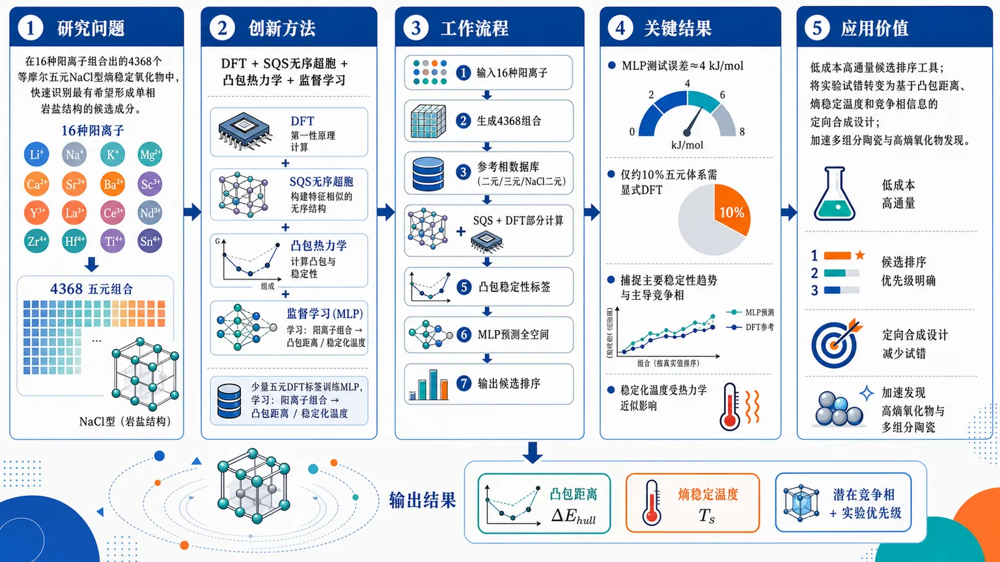
研究问题如何在由16种阳离子组合出的4368个等摩尔五元NaCl型熵稳定氧化物中，快速识别热力学上最有希望形成单相岩盐结构的候选成分，并评估它们相对于竞争相的凸包距离与熵稳定温度。创新方法将DFT能量计算、SQS无序超胞、凸包热力学和监督学习串联成筛选框架：用少量真实五元无序相DFT标签训练模型，让优化后的MLP学习“阳离子组合 → 凸包距离/稳定化温度”的非线性映射，仅计算约10%体系即可预测完整成分空间。工作流程输入16种候选阳离子并生成4368个五元等摩尔组合；建立二元、三元有序氧化物和NaCl型二元无序相参考数据库；用SQS超胞模拟五元随机阳离子无序结构；通过DFT计算部分五元体系能量；基于凸包得到稳定性标签；训练MLP等监督模型；输出每个组合的凸包距离、稳定化温度、潜在竞争相和优先实验候选。关键结果优化后的多层感知机表现最佳，测试误差约4 kJ/mol；只需约10%的五元体系显式DFT计算，就能覆盖全部4368个候选组合；与实验合成测试和计算分解路径对比表明，模型能捕捉主要稳定性趋势和主导竞争相，但绝对稳定化温度仍受热力学近似影响。应用价值为新型NaCl型熵稳定氧化物提供低成本、高通量的候选排序工具，将实验试错从盲目组合筛选转变为基于凸包距离、熵稳定温度和竞争相信息的定向合成设计，可加速多组分陶瓷和高熵氧化物材料发现。第一部分：核心概览 (Overview)
该研究面向 NaCl 型熵稳定氧化物（ESOs） 的高通量发现难题，构建了结合 DFT、SQS、凸包热力学与监督学习 的数据驱动筛选框架。核心贡献在于：用约 10% 五元等摩尔体系的显式 DFT 计算训练模型，预测由 16 种阳离子 生成的 4368 个五元组合的凸包距离与稳定化温度；优化后的 多层感知机（MLP） 测试误差约 4 kJ/mol。该工作处于计算材料设计、熵稳定陶瓷和机器学习加速相稳定性预测的交叉前沿。
---
第二部分：结构化快速回顾
《Data-Driven Prediction of NaCl-Type Entropy-Stabilized Oxide Compositions from First-Principles and Supervised Learning》（None，）
背景
熵稳定氧化物（ESOs） 提供了巨大的多组分成分空间，但候选体系筛选困难。主要瓶颈来自两个方面：一是可能的混合物数量巨大，二是必须评估其相对于竞争相的热力学稳定性。摘要明确指出：*"Entropy-stabilized oxides (ESOs) open access to vast multicomponent compositional spaces, but identifying promising candidates remains challenging because of the large number of possible mixtures and the need to assess their stability against competing phases."*
方法
构建高通量计算框架，组合 密度泛函理论（DFT）、特殊准随机结构（SQS）、凸包热力学 和 监督机器学习。研究对象为 NaCl 结构型 的 等摩尔五元 ESOs。摘要给出方法核心：*"we develop a high-throughput computational framework to screen equimolar quinary ESOs in the NaCl structure type by combining density functional theory (DFT), special quasirandom structures (SQS), convex-hull thermodynamics, and supervised machine learning."*
结果
建立了包含 二元与三元有序氧化物 的一致参考数据库，并纳入 NaCl 型二元阳离子无序组合。随后使用 SQS 超胞 描述五元无序相，并训练机器学习模型预测 凸包距离 与 稳定化温度。完整筛选空间为 16 种阳离子 组合成的 4368 个等摩尔五元成分。
讨论
优化后的 MLP 表现最佳，测试误差约 4 kJ/mol，且只需对约 10% 五元体系进行显式 DFT 计算。实验合成测试与计算分解路径表明，该方法能捕捉主要稳定性趋势和主导竞争相。
局限
绝对稳定化温度仍受到系统性热力学近似影响。摘要中明确限定：*"although absolute stabilization temperatures remain affected by systematic thermodynamic approximations."* 这意味着模型对相对排序和趋势判断更可靠，对绝对温度数值需谨慎解释。
结论
该框架为多组分氧化物的数据驱动探索提供了高效路线，并能为实验寻找新型 ESOs 提供实际指导。摘要结论为：*"These results establish an efficient route for the data-driven exploration of multicomponent oxides and provide practical guidance for the experimental search for new ESOs."*
---
第三部分：逐章节冷凝解析 (Section-by-Section Condensing)
可用材料仅包含 arXiv 条目、题名、摘要、学科分类与投稿信息；正文原始章节标题、图表、公式、方法参数、训练集划分细节、超参数、完整结果表、补充材料内容均未提供。因此不能可靠复原 Introduction / Methods / Results / Discussion / Conclusion 等正文结构，也不能编造不存在于给定材料中的直接引文。以下严格依据可见原始标题与摘要内容解析。
---
Title: Data-Driven Prediction of NaCl-Type Entropy-Stabilized Oxide Compositions from First-Principles and Supervised Learning
- Research object and structural scope
研究对象限定为 NaCl 型熵稳定氧化物成分，不是一般高熵氧化物，也不是任意晶体结构。题名中的 *"NaCl-Type Entropy-Stabilized Oxide Compositions"* 明确限定了结构类型和材料类别。该限定非常关键，因为 NaCl 岩盐结构 是经典熵稳定氧化物体系中最常见、最容易通过阳离子无序形成单相固溶体的结构之一。
- Prediction-centered computational objective
核心目标是 预测成分稳定性，不是单纯解释已有实验体系。题名使用 *"Data-Driven Prediction"*，表明研究重点在于从已有或计算生成的数据中学习规律，并外推到未显式计算的成分空间。
- First-principles and supervised learning coupling
研究不是纯机器学习，也不是纯第一性原理高通量计算，而是二者耦合。题名中的 *"from First-Principles and Supervised Learning"* 表明 DFT 计算结果 构成监督学习标签或训练依据，机器学习用于加速大规模成分空间预测。
---
Abstract
- Scientific motivation: ESO compositional space is vast but hard to search
熵稳定氧化物 的优势在于能访问巨大多组分成分空间，但候选筛选面临组合爆炸和稳定性评估两大障碍。摘要开篇指出：*"Entropy-stabilized oxides (ESOs) open access to vast multicomponent compositional spaces, but identifying promising candidates remains challenging because of the large number of possible mixtures and the need to assess their stability against competing phases."*
这里的关键科学问题不是“能否合成高熵氧化物”，而是如何在庞大的多阳离子组合中识别真正有希望形成单相 NaCl 型 ESO 的候选体系。
- Target system: equimolar quinary ESOs in the NaCl structure type
筛选对象为 等摩尔五元 NaCl 型 ESOs。摘要明确写道：*"screen equimolar quinary ESOs in the NaCl structure type"*。
Quinary 表示包含五种阳离子组分；equimolar 表示五种组分摩尔分数相等，即理想情况下每种阳离子约占 20%。这种设定使构型熵最大化，并简化成分空间定义。
- Integrated methodology: DFT + SQS + convex hull + supervised learning
高通量框架整合四个核心模块：密度泛函理论（DFT）、特殊准随机结构（SQS）、凸包热力学 与 监督学习。摘要给出完整组合：*"by combining density functional theory (DFT), special quasirandom structures (SQS), convex-hull thermodynamics, and supervised machine learning."*
其中 DFT 提供能量标签，SQS 近似无序固溶体，凸包热力学 衡量相稳定性，监督学习 负责对未计算成分进行快速预测。
- Reference database: binary and ternary ordered oxides plus disordered NaCl-type binaries
研究首先建立一致的参考数据库，覆盖 二元与三元有序氧化物，并包含 所有二元阳离子组合的 NaCl 型无序氧化物。摘要写道：*"A consistent reference database of binary and ternary ordered oxides, including disordered phases such as all binary cation combinations in the NaCl-type oxide, is first constructed using GGA and meta-GGA calculations."*
该数据库是计算凸包的基础，因为五元无序相是否稳定取决于其相对于所有相关竞争相的能量位置。
- Exchange-correlation treatment: GGA and meta-GGA calculations
参考数据库采用 GGA 与 meta-GGA 两类交换-相关泛函计算。摘要中的 *"using GGA and meta-GGA calculations"* 表明研究关注泛函一致性或至少比较不同泛函层级。
GGA 常用于高通量材料计算，成本较低；meta-GGA 通常引入动能密度等额外信息，可能改善氧化物能量、相稳定性或带隙相关性质。
- Disordered quinary phases represented by SQS supercells
五元无序相通过 SQS 超胞 表征。摘要写道：*"Quinary disordered phases are then described by SQS supercells"*。
对无序固溶体而言，无法直接用一个小原胞描述所有随机阳离子排列；SQS 通过有限超胞尽量匹配随机合金的短程相关函数，从而以可计算模型近似无序态。
- Machine-learning targets: distance to convex hull and stabilization temperature
监督学习模型预测两个关键量：凸包距离 和 相应稳定化温度。摘要原文为：*"used to train machine-learning models that predict the distance to the convex hull and the corresponding stabilization temperature"*。
Distance to the convex hull 衡量某成分相对于分解产物的能量高低；stabilization temperature 则把能量惩罚与构型熵稳定联系起来，用于估计在何种温度下熵项可能使单相固溶体热力学上可行。
- Full compositional space: 4368 equimolar quinary compositions from 16 cation species
完整预测空间由 16 种阳离子 选择 5 种 形成等摩尔五元组合，总数为 4368。摘要明确给出：*"over the full set of 4368 possible equimolar quinary compositions generated from 16 cation species."*
组合数与数学关系一致：从 16 个元素中选 5 个，组合数为 C(16,5)=4368。该规模足以体现组合爆炸，但仍适合高通量预测框架覆盖。
- Best-performing model: optimized multilayer perceptron
多种模型比较后，最佳模型为 优化后的多层感知机（MLP）。摘要写道：*"Among the tested models, an optimized multilayer perceptron provides the best predictive performance"*。
这说明目标函数与特征之间可能存在显著非线性关系，线性模型或简单树模型未必能充分捕捉多阳离子相互作用对热力学稳定性的影响。
- Prediction accuracy: test error about 4 kJ/mol
优化 MLP 的测试误差约为 4 kJ/mol。摘要给出定量结果：*"with a test error of about 4 kJ/mol"*。
对氧化物相稳定性预测而言，这一误差处于有实际筛选价值的量级，但仍需结合 DFT 本身误差、泛函误差、磁性处理、熵项近似与竞争相数据库完整性理解。
- Computational efficiency: explicit DFT for only about 10% of quinary systems
显式 DFT 计算只需覆盖约 10% 五元体系，即约 436–437 个五元组合，即可对完整 4368 个组合进行预测。摘要写道：*"while requiring explicit DFT calculations for only about 10% of the quinary systems."*
这体现了机器学习在高通量筛选中的核心价值：用有限高成本标签覆盖高维成分空间，并显著降低计算负担。
- Experimental and mechanistic validation: synthesis tests and decomposition paths
预测结果与 实验合成测试 和 计算分解路径 进行比较。摘要写道：*"Comparison with experimental synthesis tests and computed decomposition paths further shows that the approach captures the main stability trends and the dominant competing phases"*。
这说明验证不只停留在交叉验证误差，还涉及实验可合成性与热力学分解机制。尤其是 dominant competing phases 的识别，对于理解为什么某些成分难以形成单相 ESO 非常重要。
- Main limitation: absolute stabilization temperatures affected by thermodynamic approximations
绝对稳定化温度受到系统性热力学近似影响。摘要明确指出：*"although absolute stabilization temperatures remain affected by systematic thermodynamic approximations."*
这里的限制可能包括：只考虑理想构型熵、忽略或简化振动熵、磁熵、电子熵、短程有序、缺陷、氧非化学计量、有限温自由能贡献等。因此，稳定化温度更适合作为相对筛选指标，而不是精确合成温度预测。
- Practical contribution: efficient route and experimental guidance
研究结果建立了多组分氧化物数据驱动探索路线，并为实验寻找新型 ESOs 提供指导。摘要最后总结：*"These results establish an efficient route for the data-driven exploration of multicomponent oxides and provide practical guidance for the experimental search for new ESOs."*
实用意义在于把高通量第一性原理、机器学习和实验候选优先级排序连接起来，减少盲目试错。
---
Comments
- Article type and supplementary materials
arXiv 条目标注为 *"regular article and supplementary materials"*。这表明除正文外还存在补充材料，可能包含数据库、模型细节、额外表格、候选成分清单或计算设置。由于补充材料内容未给出，无法提取其具体数据。
---
Subjects
- Primary disciplinary placement
学科分类为 *"Materials Science (cond-mat.mtrl-sci)"*，说明研究主要归属 材料科学，核心问题是材料成分设计、相稳定性与高通量筛选。
- Secondary methodological placement
同时归入 *"Disordered Systems and Neural Networks (cond-mat.dis-nn)"*，显示研究兼具 无序体系建模 与 神经网络预测 属性。该分类与摘要中的 SQS、disordered phases、multilayer perceptron 完全一致。
---
第四部分：深度理解与语言支持 (Understanding & Nuance)
1. 术语解析
- Entropy-stabilized oxides (ESOs)
熵稳定氧化物 指高温下由于构型熵贡献显著降低 Gibbs 自由能，从而稳定为单相固溶体的多组分氧化物。语境中重点不是普通“高熵氧化物”的成分复杂性，而是热力学机制上的 entropy-stabilized：相对于分解为多个简单氧化物，单相结构依靠熵项获得稳定性。
- Distance to the convex hull
凸包距离 是材料热力学稳定性筛选中的核心量。若某相位于凸包上，通常表示 0 K 下相对于所有竞争相稳定；若高于凸包，则有分解驱动力。语境中的 *"distance to the convex hull"* 不是几何距离，而是能量高出稳定相组合的量，常以 kJ/mol 或 meV/atom 表示。
- Special quasirandom structures (SQS)
特殊准随机结构 是用有限超胞模拟随机无序固溶体的方法。关键微妙点在于：SQS 不是随机抽一个超胞，而是有目的地优化原子排列，使其短程配位相关函数尽可能接近无限随机固溶体。
- Stabilization temperature
稳定化温度 指在给定能量高出凸包的情况下，需要多高温度使熵项足以抵消分解焓惩罚。它不是直接等同于实验烧结温度，也不必然等同于实际单相形成温度，因为实验还受动力学、氧分压、冷却速率、缺陷和短程有序影响。
- Dominant competing phases
主导竞争相 指某个候选五元无序相分解时最可能形成、且定义凸包分解路径的相组合。它比“稳定/不稳定”二分类更有信息量，因为可以揭示限制单相形成的具体化学原因，例如某些阳离子倾向形成稳定尖晶石、钙钛矿或简单二元氧化物。
2. 疑难查证
- 为什么五元等摩尔体系还可能不稳定？
五元等摩尔成分确实具有较高构型熵。理想混合构型熵为
[
Scₒₙfᵢg=Rłn 5
]
对应自由能贡献为
[
-T Rłn 5
]
但若五元 NaCl 固溶体的混合焓或相对于竞争相的能量惩罚太大，熵项在可实现温度范围内仍无法完全补偿。因此，高熵并不自动意味着稳定；必须比较 ΔH 与 TΔS 的大小。
- 为什么需要凸包，而不是只看 NaCl 固溶体能量？
单个相的绝对能量没有稳定性意义。热力学稳定性取决于它是否比所有可能分解产物的组合更低能。例如五元 NaCl 固溶体可能比五个简单氧化物的机械混合物高能，也可能比若干二元/三元有序氧化物组合高能。凸包方法系统地寻找最低能竞争组合，因此比单独比较几个相更严谨。
- 为什么机器学习能用 10% DFT 覆盖全部 4368 个体系？
五元成分的稳定性并非完全随机，而是受阳离子半径、电荷、氧化态偏好、二元混溶性、形成能、局部畸变、竞争相稳定性等可学习规律控制。只要训练集覆盖了足够多的化学组合，模型可以学习“哪些阳离子组合倾向形成低凸包距离”的映射，从而预测未计算组合。
- 为什么绝对稳定化温度容易系统偏差？
稳定化温度通常依赖近似自由能表达式。若只使用 0 K DFT 能量加理想构型熵，则忽略了：振动自由能、磁性贡献、电子激发、短程有序、阳离子价态变化、氧空位、非化学计量和实验合成动力学。这些因素不会随机抵消，可能形成系统性偏差，因此趋势预测比绝对温度更可靠。
---
第五部分：创新评估与关联 (Synthesis & Novelty)
1. 创新性判断
- 从局部 ESO 经验探索扩展到完整组合空间筛选
过去几年高熵/熵稳定氧化物研究常集中在少量已知阳离子组合、实验试错或有限 DFT 案例。该工作覆盖由 16 种阳离子 生成的 4368 个等摩尔五元组合，把问题从个例研究推进到系统成分空间搜索。
- 把无序相、竞争相和机器学习放入同一热力学框架
许多高通量机器学习筛选只预测形成能或经验稳定性指标；该研究直接围绕 凸包距离 和 稳定化温度 建模，并构建包含 二元、三元有序氧化物 与 NaCl 型二元无序相 的参考数据库。这比只预测单相能量更接近真实相稳定性问题。
- 显式处理无序五元相，而非用简单平均特征替代结构
五元无序相通过 SQS 超胞 表征，避免完全忽略局部环境和无序排列对 DFT 能量的影响。SQS 与 DFT 结合后生成高质量训练标签，监督学习再用于加速外推。
- 以较小 DFT 预算实现大空间预测
只需约 10% 五元体系的显式 DFT 计算，即可预测完整 4368 个组合；最佳 MLP 测试误差约 4 kJ/mol。该策略解决了前人难以同时兼顾“无序结构真实性”和“大规模成分覆盖”的问题。
- 不仅评估模型误差，还关联实验合成与分解路径
与实验合成测试和计算分解路径比较，显示模型能捕捉主要稳定趋势与主导竞争相。这一点增强了筛选结果的可解释性：不仅知道哪个候选可能稳定，还能知道不稳定候选可能被哪些竞争相限制。
2. 解决的前沿问题
该研究主要解决三个前人未充分解决的问题：
- 多组分氧化物组合爆炸问题：4368 个五元组合不适合全部高精度显式计算，机器学习显著降低计算成本。
- 无序固溶体稳定性定量问题：SQS + DFT + 凸包热力学提供比经验规则更直接的稳定性度量。
- 实验候选优先级排序问题：通过凸包距离、稳定化温度和竞争相识别，为实验合成提供更可操作的候选筛选依据。
-
07
📊 含图深析
📄 摘要：针对中子 CT 通量低、常规三维扫描需 12–14 小时的问题，构建物理约束深度学习框架，从超稀疏角度采样重建高保真投影。时空生成器—判别器利用投影采集序列性并加入显式约束，使采集时间减少超过 90%，同时保持定量结构完整性。
💡 亮点：物理约束生成对抗框架把中子断层成像从密集角采样推向超稀疏采样。超过 90% 的时间压缩对原位和时间分辨材料成像尤为关键。
📖 展开分析 + 配图
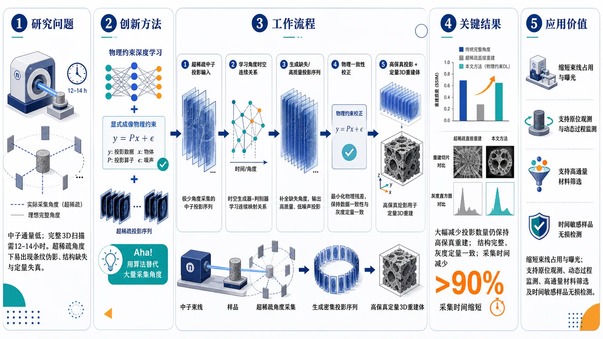
研究问题中子CT因中子通量低，完整3D断层扫描常需12–14小时；核心问题是如何在只采集极少数角度投影的情况下，仍恢复可用于三维重建的高保真投影序列，避免稀疏采样带来的条纹伪影、结构缺失和定量失真。创新方法提出物理约束深度学习的超稀疏投影中子CT方法：用投影序列的时空生成器-判别器模型从少量角度数据中“补全”高保真投影，同时嵌入显式成像物理约束，使生成结果不仅视觉清晰，还保持材料结构和灰度定量一致性；Aha点是把生成式时空建模与中子CT物理规律结合，用算法替代大量实际采集角度。工作流程输入为超稀疏角度采集的中子投影数据；网络首先学习投影随角度变化的时空连续关系；生成器预测缺失或高质量投影序列，判别器约束其接近真实投影分布；物理约束模块校正投影与样品结构之间的成像一致性；最终输出可用于中子CT三维重建的高保真投影和保持定量完整性的重建体。关键结果在大幅减少投影数量的条件下，该方法仍能重建高保真投影，保持样品结构完整性和定量一致性；相比常规约12–14小时的中子3D扫描流程，采集时间减少超过90%，显示出用超稀疏采样替代密集角度扫描的可行性。应用价值该研究可显著缩短中子CT实验时间，降低束线占用和样品长时间曝光负担，使原本缓慢的三维中子成像更适合原位观测、动态过程监测、高通量材料筛选以及对时间敏感样品的无损检测。核心概览
本文属于中子计算机断层成像（Neutron CT）与物理约束深度学习方向，提出一种从超稀疏角度投影重建高保真投影的框架，以显著缩短低通量中子 CT 的采集时间。
方法要点
- 使用物理约束深度学习框架进行超稀疏投影条件下的中子 CT 重建。
- 采用时空生成器-判别器结构，利用投影采集过程中的序列性信息。
- 在深度学习模型中引入显式物理约束，以提升重建结果的可靠性和结构一致性。
- 目标是由少量角度采样推断或重建高保真投影，从而减少完整三维扫描所需采集量。
关键结果
- 针对常规中子 CT 因低通量导致三维扫描需 12–14 小时的问题，该方法将采集时间降低超过 90%。
- 摘要明确称该方法在大幅减少采集时间的同时，仍能保持“定量结构完整性”。
- 该框架能够从超稀疏角度采样中重建高保真投影。
- 具体评价指标、测试样品类型、对比方法和误差数值摘要未详述。
创新性判断
- 可能的新颖点在于将物理约束深度学习用于中子 CT 的超稀疏投影重建，以应对低通量导致的长时间采集问题。
- 时空生成器-判别器同时利用投影序列性和显式物理约束，可能区别于仅依赖图像域重建或普通深度生成模型的方法。
- “高保真投影重建 + 采集时间降低超过 90% + 保持定量结构完整性”表明其创新重点可能在低采样条件下兼顾速度与定量可靠性，但具体相对已有工作的优势幅度摘要未详述。
-
08
📊 含图深析
📄 摘要：针对弹性黏附接触力学中的傅里叶型 PINN，分析弹性核随波数线性增长导致的谱刚性失衡：短波模式主导梯度更新，宏观形变收敛受阻。提出傅里叶空间质量加权预条件，在反传前增强低波数位移梯度，并用内置低通滤波抑制亚网格噪声。
💡 亮点：质量加权谱预条件直接修正接触 PINN 的高波数梯度偏置。该方法面向黏附接触中的宏观变形收敛瓶颈，给出比经验调参更物理的训练加速方案。
📖 展开分析 + 配图
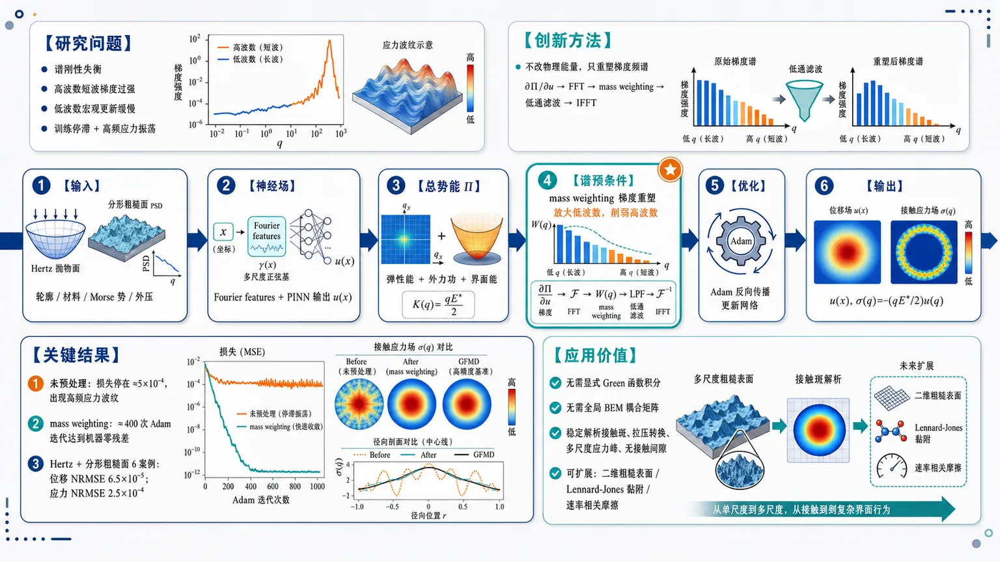
研究问题黏附接触力学中的 Fourier 能量最小化 PINN 被弹性半空间刚度核 qE*/2 拖入“谱刚性失衡”：高波数短波模式梯度过强、低波数宏观变形更新缓慢，训练停滞并产生全域高频振荡应力。创新方法在反向传播前插入 mass weighting 谱预条件器：先将位移能量梯度 ∂Π/∂u 变换到 Fourier 空间，用权重函数放大低波数宏观模式、削弱高波数噪声，再通过低通滤波抑制亚网格振荡，最后逆变换回实空间参与自动微分；Aha 点是“不改物理能量，只重塑梯度频谱”。工作流程输入刚性表面轮廓（Hertz 抛物面或分形粗糙面 PSD）、材料参数、Morse 黏附势与外压；Fourier features 编码坐标并由全连接网络输出位移场 u(x)；在 Fourier 空间计算弹性能、外力功和界面能形成单一总势能 Π；对位移梯度做 Fourier 变换、mass weighting、低通滤波和逆变换；Adam 更新网络；收敛后用谱关系 σ(q)=-(qE*/2)u(q) 输出位移场与接触应力场。关键结果在 Hertz 收敛测试中，未预处理 PINN 损失停在约 5×10⁻⁴，并出现非物理高频应力波纹；启用 mass weighting 后约 400 次 Adam 迭代达到机器零残差，最高波数模式快速衰减。Hertz 与分形粗糙面 6 个案例中，平均位移 NRMSE 为 6.5×10⁻⁵，平均应力 NRMSE 为 2.5×10⁻⁴，与 GFMD 场解几乎重合。应用价值为粗糙黏附接触提供一种无需显式 Green 函数积分、无需全局 BEM 耦合矩阵的神经场求解框架，可稳定解析接触斑、拉压转换、多尺度应力峰和无接触间隙；有望扩展到二维粗糙表面、Lennard-Jones 黏附、速率相关摩擦等复杂界面问题。第一部分：核心概览
提出一种面向黏附接触力学的Fourier-based energy-minimizing PINN，核心创新是将mass weighting spectral preconditioner嵌入反向传播前的位移梯度处理，在傅里叶空间放大低波数、抑制高波数噪声，解决弹性半空间刚度核 (qE^*/2) 导致的谱刚性失衡。在 Hertz 线接触与分形粗糙表面接触中，该方法相较未预处理 PINN 显著加速收敛，并与 GFMD 基准达到小于千分量级的 NRMSE，显示出替代部分传统 BEM/GFMD 流程的潜力。
---
第二部分：结构化快速回顾
《Mass weighting algorithm optimizes Fourier-based physics-informed neural network in adhesive contact mechanics》（None，）
背景
能量最小化 PINN用于接触力学时存在严重的谱刚性失衡：弹性半空间的 Fourier 刚度核随波数线性增长，高波数短波模式主导梯度更新，低波数宏观变形收敛缓慢，导致训练停滞和应力场高频噪声。
方法
构建一维平面应变黏附线接触模型，刚性表面为 Hertz 抛物面或分形粗糙面，弹性半空间能量在 Fourier 空间计算，界面黏附由 Morse potential 表征。PINN 使用 Fourier features 表示位移场，并在反向传播前对 (partial Π/partial u) 进行 Fourier 变换、mass weighting、低通滤波和逆变换。
结果
在 Hertz 基准中，未预处理训练在约 (5×10⁻⁴) 归一化损失处停滞；启用 mass weighting 后，约 400 次 Adam 迭代达到机器零残差。Hertz 与分形粗糙面 6 个测试案例中，位移平均 NRMSE 为 (6.5×10⁻⁵)，应力平均 NRMSE 为 (2.5×10⁻⁴)。
讨论
谱预处理不仅提升速度，还改变解的物理可信度：未预处理 PINN 产生全域高频振荡应力；预处理后应力分布平滑，能解析接触斑、拉压转换与粗糙表面的多尺度应力峰。
局限
当前限定于一维线接触、平面应变、半无限均匀弹性体、Morse 黏附势和 (H=0.5) 的粗糙面。二维粗糙表面、其他相互作用势和三维几何仍需验证。
结论
mass weighting spectral preconditioning是 Fourier PINN 稳定求解黏附接触问题的关键机制，可在无需显式 Green 函数积分或全局 BEM 耦合矩阵的情况下达到 GFMD 级别精度。
---
第三部分：逐章节冷凝解析
Abstract
Spectral stiffness imbalance is the central computational bottleneck
弹性接触 PINN的核心困难来自 Fourier 空间中的谱刚性失衡：弹性核随波数 (q) 线性增长，使短波模式对梯度更新贡献过大，而宏观长波变形收敛受阻。摘要直接指出，*"the elastic kernel grows linearly with wave number, causing short-wavelength modes to dominate gradient updates and stall convergence of the macroscopic deformation."* 这一问题不是普通 PINN 的泛化误差，而是由弹性半空间 Green 核的频谱结构触发的优化病态。
Mass weighting acts before back-propagation
提出的核心算法是在反向传播前对位移梯度进行 Fourier 空间重加权。流程包括：实空间梯度 (partial Π/partial u) → Fourier 变换 → mass weighting function 放大低波数 → low-pass filter 抑制亚网格噪声 → 逆 Fourier 变换 → 自动微分回传。摘要表述为：*"reweights displacement gradients in Fourier space before back-propagation, amplifying low wavenumber components through a mass weighting (MW) function while suppressing sub-grid noise via a built-in low-pass filter."*
Benchmark convergence improves by orders of magnitude
在指定 Hertz 基准中，mass-weighted PINN在 (400) 次 Adam 迭代内达到机器零残差，而未处理基准停留在高出约 3 个数量级的损失水平。关键证据为：*"the mass weighted PINN reaches machine-zero residual loss within 400 Adam iterations for specified benchmark, whereas the reference benchmark stalls at three orders of magnitude higher loss."*
Agreement with GFMD covers smooth and rough adhesive contacts
数值验证覆盖两类接触：smooth Hertz contact 和 rough surfaces。Hertz 案例跨越拉伸、零载和压缩压力；粗糙表面覆盖多个波长尺度。摘要给出精度定位：*"The converged displacement and contact stress fields agree quantitatively with Green’s function molecular dynamics (GFMD) solutions for both smooth Hertz contact at pressures spanning tension to compression and rough surfaces with roughness covering several decades of wavelength."*
No explicit Green’s function integration is required
方法直接在均匀实空间网格上训练，不需要显式 Green 函数积分或积分求积规则，损失函数完全是标量能量泛函。摘要明确：*"The method operates directly on a uniform real-space grid, requires no explicit Green’s function integration or quadrature rules, and is formulated entirely in terms of minimising a scalar energy function."*
Two-dimensional extension is structurally direct
二维扩展的理论基础在于 Fourier 弹性能和谱预处理器都只依赖波数模长 (|q|)，而非一维方向。摘要表述为：*"Extension to two-dimensional rough surfaces is direct, as both the Fourier elastic energy and the spectral preconditioner depend only on the wave-number magnitude."*
---
1 Introduction
Contact mechanics spans biological and engineering adhesion
接触力学覆盖从壁虎黏附到轮胎、密封件、MEMS、纳米制造的多尺度问题。生物例子中，壁虎依赖刚毛端部与基底之间的范德华作用，原文为：*"gecko adhesion relies on van der Waals contact interactions between spatula-shaped setae and substrate surfaces."* 工程场景包括轮胎抓地、密封防漏、微机电失效和纳米压印，原文列举：*"tires gripping road surfaces"*, *"seals and gaskets preventing fluid leakage"*, *"micro-electromechanical systems where stiction between contacting components causes device failure"*, 以及 *"nano-imprint lithography and transfer printing."*
Multiscale coupling determines real contact observables
真实接触行为由弹性变形与表面相互作用力在不同长度尺度上的竞争决定，关键物理量包括真实接触面积、应力分布、间隙分布和黏附强度。引文：*"the contact behavior, including the real contact area, the stress distribution, the gap distribution, and the adhesion strength, is governed by competing elastic deformation and surface interaction forces at various length scales."*
Classical adhesive contact theories are limited to smooth idealized geometries
Hertz、JKR、DMT 和 Maugis 理论构成光滑黏附接触的经典框架。Hertz 解决非黏附球接触；JKR 与 DMT 引入表面能；Maugis 通过 Dugdale cohesive-zone 模型统一两极限，并形成 Maugis-Tabor 参数分类。局限被明确指出：*"These classical solutions, however, apply exclusively to smooth, idealized geometries and cannot capture the effects of multi-scale surface roughness."*
Roughness fundamentally dominates real engineering contact
真实工程表面跨多尺度粗糙，表面形貌统计性质支配接触响应。原文强调：*"Real engineering surfaces are rough across many length scales, and the statistical properties of surface topography fundamentally dominates the contact response."* Greenwood-Williamson 模型通过峰高分布关联真实接触面积；Persson 理论将粗糙接触重写为接触压力扩散过程，产生接触面积、界面间隙和弹性刚度的闭式预测。
Persson and Müser frameworks provide statistical and field-theoretical foundations
Persson 理论将粗糙接触转化为压力空间扩散过程：*"reformulating the rough contact problem as a diffusion process in contact pressure."* Müser 则建立场论框架，用统计累积量展开获得压力分布，并将 Persson 理论视为 leading-order：*"the pressure distribution is obtained through a statistical cumulant expansion, which recasts Persson’s theory as the leading-order and provides a systematic route to higher-order corrections."*
GFMD is a computational benchmark for large-scale rough contact
FEM 能处理有限几何和非线性本构，但对大基底和细网格代价高；BEM 通过表面 Green 函数降维；GFMD 通过 FFT 将每次迭代复杂度降至 (O(Nłog N))。关键引文：*"the Green’s function molecular dynamics (GFMD) method further accelerates the computation to (O(Nłog N)) scaling per iteration through fast Fourier transform, making it the method of choice for large-scale rough contact simulations on elastic slab."*
Data-driven neural networks lack physical consistency
ANN 已用于从表面形貌到接触参数的映射，但纯数据驱动模型可能违反力学定律。原文指出：*"purely data-driven models can violate fundamental mechanical laws due to a lack of physical consistency."* 这为 PINN 将物理约束嵌入损失函数提供动机。
PINNs in contact mechanics have used both PDE and energy constraints
PINN 通常把控制方程嵌入损失函数，Zhou 和 Song 使用 Persson 扩散方程预测粗糙表面接触应力与相对接触面积，达到 GFMD 基准 (0.5%) 以内精度：*"achieving accuracy within 0.5% of GFMD benchmarks, even when extrapolating beyond training data."* 同时，物理约束并不一定必须是微分方程，也可以是直接能量最小化：*"the physical constraint implemented in loss function does not necessarily be a differential equation. Alternatively, it can also take the form of direct energy minimization."*
Energy-based PINNs suffer from composite-loss and spectral-gradient stiffness
能量 PINN 在接触力学中效率低于传统 BEM，原因包括复合能量损失导致不同分量梯度流失衡，以及更根本的谱层面失衡。原文写道：*"energy-based PINNs often exhibit lower computational efficiency than traditional BEM when applied to contact mechanics."* 进一步指出：*"a spectral-level issue underlies this gradient imbalance."*
Contact mechanics intensifies the neural network frequency bias
标准神经网络存在低频偏置，即高频 Fourier 成分学习更慢；但接触力学中，弹性刚度算子随波数增长，会放大短波模式、压制长波模式，使优化困难加剧。原文表述：*"standard neural networks exhibit an inherent low-frequency bias"*, 以及 *"the Fourier-space structure of the elastic stiffness operator, which scales with the wave number and thus intrinsically amplifies short-wavelength modes while suppressing long-wavelength ones."*
Short-range adhesion injects additional high-frequency content
短程黏附使解中出现局域尖锐特征，进一步增强高频成分。原文指出：*"Short-range adhesive interactions introduce additional sharply localized features, injecting yet higher-frequency content into the solution that further widens the gap between fast and slow convergence modes."*
Mass weighting is introduced as a spectral preconditioner for energy-minimizing PINNs
提出 mass weighting spectral preconditioner，专门针对接触模拟中的能量最小化 PINN。处理位置在反向传播前：*"The preconditioner operates in Fourier space prior to gradient back-propagation."* 其具体功能是：*"displacement gradients are transformed to the Fourier domain, reweighted by a carefully designed spectral mass weighting function that amplifies low-wavenumber contributions while attenuating sub-grid-scale noise through an embedded spectral low-pass filter."*
Validation scope includes Hertz and random rough line contacts up to (nₓ₌₂₀₄₈)
验证对象是一维黏附线接触，包括圆柱压头和随机粗糙表面，黏附势为 Morse potential，最大空间离散点数 (nₓ₌₂₀₄₈)。原文为：*"one-dimensional adhesive line-contact problems with a cylindrical indenter and randomly rough surfaces with Morse potential, using up to (nₓ₌₂₀₄₈) spatial discretization points."*
Expected gains include faster macroscopic convergence and oscillation-free stress
预期效果包括加速宏观变形场收敛、在细网格上得到平滑无振荡应力剖面、无需手工调节预处理参数。原文表述：*"significantly accelerate convergence of the macroscopic deformation field, yield smooth and oscillation-free contact-stress profiles on fine grids, and maintain robust training dynamics without manual tuning of the preconditioner parameters."*
---
2 Model and method
2.1 Model
The contact problem is one-dimensional adhesive line contact under plane strain
模型为平面应变下的一维黏附线接触，刚性反面可为光滑抛物面或随机粗糙面。原文：*"We consider an adhesive line-contact problem in the plane-strain regime."* 图 1 分别给出 Hertz 接触、粗糙面接触和粗糙面 PSD。
Smooth indenter follows a parabolic Hertz profile
Hertz 压头为半径 (R_c) 的刚性抛物面，其几何形状为
[
h(x)=fracx²2R_c.
]
原文：*"a smooth parabolic profile of radius (Rc), representing the classical Hertz indenter, whose profile is (h(x)=fracx²2Rc)."*
Random roughness is prescribed by a self-affine PSD
随机粗糙表面由功率谱密度
[
C(q)=C₀łeft(fracqqᵣi̊ght)⁻²H⁻¹
]
定义，其中 (H) 为 Hurst 指数，波数限制在 ([qᵣ,qₛ])，(qᵣ₌₂π/łambdaᵣ)，(qₛ₌₂π/łambdaₛ)。原文：*"a randomly rough surface whose statistical topography is prescribed by the height power spectral density (PSD)"*，且 PSD 为 *"(C(q)=C₀łeft(fracqqᵣi̊ght)⁻²H⁻¹)."* 默认固定均方根梯度为 1：*"we would like to fix the root-mean-square gradient to unity by default."*
Rough surface Fourier coefficients use random phases
粗糙高度 Fourier 系数构造为
[
tildeh(q)=sqrtC(q)/Lexp(i2π X_q),
]
其中 (X_qsim U[0,1])。实空间轮廓由逆 Fourier 变换获得：
[
h(r)=fracL2πint dq,tildeh(q)exp(iqx).
]
关键引文：*"The Fourier coefficients of the rough surface height are constructed from (tildeh(q)=sqrtC(q)/L,exp(i2π Xq)) with (X_q) a random variable uniform in ([0,1])."*
Elastic material is represented by an effective contact modulus
弹性半空间承受名义外压 (p₀)，有效接触模量为
[
E^*=fracE1-ν².
]
原文：*"The half-space is characterized by an effective contact modulus (E*=E/(1-ν²))."* 若无特别说明，(L=1)，(E^*=1)：*"If not mentioned explicitly, the system size (L), effective modulus (E*) are fixed to unity by default."*
Total potential energy has elastic, external, and interfacial contributions
系统总势能
[
Π=Uₑₗ+Uₑₓₜ+Uᵢₙₜ.
]
原文：*"The total potential energy (Π) of the system comprises three contributions."* 这使 PINN 损失函数成为单一标量能量，而非 PDE 残差与边界惩罚的加权和。
Elastic energy is diagonal in Fourier space with stiffness (qE^*/2)
半无限弹性固体的弹性能为
[
Uₑₗ=fracL2sum_q fracqE^*2|tildeu(q)|².
]
该表达式是全文谱问题的核心，因为刚度随 (q) 线性增长。原文：*"The factor (qE*/2) is the Fourier representation of the elastic Green’s function for a half-space and encodes the scale-dependent stiffness of the substrate."* 物理含义为：*"short-wavelength deformations (large (q)) incur higher elastic energy cost than long-wavelength ones (small (q))."*
Surface stress is recovered spectrally
表面应力由谱应力
[
tildeσ(q)=-(qE^*/2)tildeu(q)
]
逆变换得到。原文：*"The real-space elastic stress at the surface, (σ(x)), is recovered from the inverse Fourier transform of the spectral stress (tildeσ(q)=-(qE*/2)tildeu(q))."* 这避免了实空间位移数值微分对网格噪声的放大。
External work couples to the zero mode
名义压力做功为
[
Uₑₓₜ=-p₀Ltildeu(0),
]
只作用于位移的中心质心模式。原文：*"where (tildeu(0)) denotes the center-of-mass mode of the elastic displacement."*
Adhesion is modeled by the Morse potential
界面相互作用能密度为
[
γ(g)=γ₀łeft[expłeft(-frac2gh̊oi̊ght)-2expłeft(-fracgh̊oi̊ght)i̊ght],
]
其中 (γ₀) 是黏附功，(h̊o) 是作用范围，间隙
[
g(x)=h(x)-u(x).
]
原文：*"The interaction forces between the two surfaces are modeled by a Morse potential, which captures both short-range repulsion and long-range attraction."*
Interfacial energy is summed over the grid
界面总能量为
[
Uᵢₙₜ=Lsumᵢ γ[g(xᵢ₎].
]
原文：*"The total interfacial energy is obtained by integrating the energy density over the domain."* 这里在离散网格上以求和形式实现。
---
2.2 Method
The learning objective is direct energy minimization
训练目标是寻找网络参数 (θ^*)，使 (u_θ(x)) 最小化总势能：
[
θ^*=argmin_θ Π[u_θ].
]
原文：*"The learning task is to find the displacement field (u(x)) that minimizes the total potential energy (Π[u])."* 与常规 PINN 不同，*"this energy-minimizing formulation requires only a single scalar loss function and does not require explicit enforcement of boundary conditions."*
Fourier features encode spatial coordinates
输入坐标 (x) 先映射为 Fourier features：
[
φ(x)=[sin(2π Bx),o̧s(2π Bx)].
]
矩阵 (B) 元素来自 (N(0,s²⁾)，尺度 (s) 设为网格最大可解析波数附近。原文：*"The spatial coordinate (x) is encoded through a Fourier feature mapping, then passed through a feed-forward neural network to produce the displacement (u_θ(x))."*
The neural architecture is fully connected with ReLU activations
网络为全连接前馈神经网络，含 (nₗ) 个隐藏层，每层 (nₕ) 个神经元，激活函数为 ReLU，最后输出标量位移。原文：*"The Fourier feature vector (bmφ(x)) is then passed through (nₗ) hidden layers, each containing (nₕ) neurons with ReLU activation, and finally mapped to a scalar displacement output."* Fourier feature 数量随网格线性扩展：*"the number of Fourier features is scaled linearly with the grid size to maintain sufficient spectral resolution."*
Direct gradient descent is dominated by high-(q) elastic stiffness
未经预处理的梯度下降会遭遇spectral stiffness imbalance，因为弹性能中的 (qE^*/2) 随波数增长，而黏附刚度与波数无关。原文：*"short-wavelength displacement modes couple to the elastic energy through the factor (qE*/2), which grows linearly with wave number, whereas the adhesive interaction stiffness is wavenumber-independent."* 结果是：*"high-(q) modes dominate the gradient updates and stall convergence of the macroscopic deformation."*
Mass weighting reweights the displacement gradient in Fourier space
设
[
tildeg(q)=F[partialΠ/partial u].
]
每个 Fourier 模式乘以 mass-weighting factor：
[
w(q)=łeft(fracE^*qₘₐₓ/2sqrtk₀²⁺⁽qE^*/2)²i̊ght)^α,
]
其中
[
k₀₌ξ(E^*qₘₐₓ/2),quad ξłl1,quad αin(0,1].
]
本研究固定 (α=0.5)。原文：*"the exponent (αin(0,1]) controls the weighting strength, which is fixed to 0.5 in this study."*
Weight clamping prevents extreme gains
(w(q)) 被限制在 ([wₘᵢₙ,wₘₐₓ])，防止极端放大或衰减导致数值不稳定。原文：*"The reweighted factor (w(q)) is clamped to ([wₘᵢₙ,wₘₐₓ]) to prevent extreme gain values."*
A low-pass filter suppresses sub-grid noise
低通滤波器为
[
f(q)=frac11+(q/q_c)^β,
]
其中 (q_c) 与相互作用范围倒数成比例，(β) 控制滚降陡峭度。原文：*"a built-in spectral low-pass filter suppresses sub-grid noise."* 组合预处理权重为
[
G(q)=w(q)f(q).
]
The preconditioned gradient is inverse transformed before autograd
预处理梯度为
[
łeft.fracδΠδ ui̊ght|ₚᵣₑcₒₙd
=F⁻¹[G(q)tildeg(q)].
]
随后通过标准自动微分流经网络。原文：*"Back-propagation through the network then uses this preconditioned gradient, effectively rebalancing the spectral contributions so that long-wavelength modes receive amplified gradient signals."*
Training uses Adam, warm-up, and full-field Fourier operations
训练采用 Adam，初始学习率 (10⁻⁴)，位移初始化为
[
u(x)=-h̊ołn2.
]
预处理器在 (Nwₐᵣₘ=100sim200) 个普通梯度步之后启用。原文：*"The network is trained using the Adam optimizer with an initial learning rate of (10⁻⁴)."* 以及：*"the preconditioner is activated only after a warm-up phase of (Nwₐᵣₘ=100sim200) plain-gradient steps."* 大网格下位移可 mini-batch 评估，但 Fourier 操作在完整场上进行：*"the Fourier-space operations are performed on the full assembled field to preserve spectral accuracy."*
Stress is computed spectrally with zero-mode correction
收敛后应力由
[
σ(x)=F⁻¹łeft[-(E^*/2)qtildeu_θ(q)i̊ght]
]
计算，并对零波数分量修正：
[
tildeσ(0)łeftarrow tildeσ(0)-p₀.
]
原文：*"Computing the stress in Fourier space avoids the grid-sensitivity inherent in real-space numerical differentiation of (uθ(x)) and is consistent with the spectral form of the elastic energy."*
Formal limitations are embedded in the method design
方法限定于一维线接触、平面应变、均匀网格、半无限均匀弹性半空间、Morse 势且 (h̊ołl L)。原文：*"the present formulation is restricted to one-dimensional line-contact problems under plane-strain conditions with a uniform grid spacing (Δ x)."* 进一步限制为：*"The spectral preconditioner assumes that the gradient spectrum is dominated by the elastic stiffness contribution; its effectiveness for other interaction potentials or three-dimensional geometries remains to be investigated."*
---
3 Results
The elastic stiffness kernel spans more than one order of magnitude
结果部分首先强调 Fourier 弹性刚度核
[
E(q)=qE^*/2
]
随 (q) 线性增长。原文：*"in Fourier space the stiffness kernel (E(q)=qE*/2) grows linearly with wave number (q)."* 图 2 显示该核跨越粗糙面谱带 ([qᵣ,qₛ])，且：*"spanning more than one order of magnitude across the spectral band."*
High-(q) modes dominate Adam updates without preconditioning
谱异质性使高波数位移模式的弹性梯度远大于长波模式，导致 Adam 更新主要受短波涨落支配，宏观形状无法充分优化。原文：*"high-(q) displacement modes experience elastic gradients that dominate those of long-wavelength modes by the same factor."* 结果是：*"Adam updates to be driven primarily by short-wavelength fluctuations while the macroscopic deformation geometry remains under-optimized."*
Mass weighting amplifies low-(q) gradients by about 4–5
图 2 中 (G(q)) 在低 (q) 区施加约 4–5 倍增益，高 (q) 区衰减。原文：*"at low (q) it applies a gain of approximately 4 to 5, amplifying the signal for macroscopic modes, while at high (q) it decays to suppress spurious short-wavelength dynamics."* 这与设计目标一致：低波数宏观变形获得更强梯度信号，高波数噪声被压制。
Hertz convergence test uses 600 Adam iterations and specified physical parameters
收敛测试在 Hertz 接触上进行，训练 (600) 次 Adam 迭代，参数为
[
R_c=1.0,quad p₀/E^*=-1.0×10⁻³,quad γ₀₌₁.0×10⁻³,quad h̊o/L=2.0×10⁻³.
]
原文：*"we trained the Fourier PINN for 600 Adam iterations on a Hertzian contact problem with (Rc=1.0), (p₀/E*=-1.0× 10⁻³), (γ₀=1.0× 10⁻³) and (h̊o/L=2.0× 10⁻³)."*
Unpreconditioned loss stalls near (5×10⁻⁴)
未启用 mass weighting 时，总损失降至初始值约 (5×10⁻⁴) 后停止。原文：*"Without preconditioning, the loss decreased to approximately (5× 10⁻⁴) of its initial value and then stalled; further iterations produced no meaningful improvement."* 这说明能量函数相同的情况下，优化路径本身无法跨越谱失衡造成的停滞。
Mass weighting reaches machine-zero residual within 400 iterations
预处理在第 200 步 warm-up 后启用，随后损失单调下降，并在 (400) 次迭代内达到机器零残差。原文：*"With mass weighting activated after a 200-step warm-up phase, the loss decayed monotonically and reached machine-zero residual within 400 iterations."* 曲线在第 200 步的拐点对应预处理器激活：*"The visible kink in the convergence curve at iteration 200 coincides with activation of the preconditioner."*
Fastest Fourier mode reveals the failure mechanism
监测最高波数模式 (tildeu(qₘₐₓ)) 的幅值，用于诊断谱刚性失衡。原文：*"we monitored the amplitude of the fastest Fourier mode, (tildeu(qₘₐₓ)), which is the mode most strongly affected by spectral stiffness imbalance."* 未预处理时，该模式大幅持续振荡，无法稳定：*"the fastest mode oscillated with persistent large amplitude and never settled to a steady value."*
Preconditioning suppresses high-frequency dynamics
启用预处理后，最高波数模式在 warm-up 阶段迅速衰减到零并保持稳定。原文：*"With preconditioning, the same mode amplitude decayed rapidly to zero within the warm-up phase and remained stable thereafter."* 这直接证明 mass weighting 抑制了主导梯度噪声的高频伪动力学：*"effectively suppresses the spurious high-frequency dynamics that would otherwise dominate the gradient signal."*
Stress fields show qualitative failure without spectral preconditioning
空间应力剖面对比显示，未预处理 PINN 得到的是全域高频振荡的非物理解。原文：*"The unpreconditioned solution exhibits a noisy, unphysical stress profile with spurious high-frequency oscillations spanning the entire domain."* 这不是小误差问题，而是物理结构错误。
Preconditioned stress resolves the compressive contact patch
预处理解产生平滑应力场，正确解析压缩接触斑和无应力非接触区。原文：*"the preconditioned solution yields a smooth stress field that correctly resolves compressive contact patch separated by stress-free non-contact regions."* 关键判断是：*"The difference is not quantitative but qualitative."*
Hertz validation spans tension, zero load, and compression
Hertz 验证使用三种远场压力：
[
p₀/E^*=-0.01,quad 0,quad 0.01.
]
原文：*"Three far-field pressure levels were tested: (p₀/E*=-0.01) (tension), (p₀/E*=0) (zero external load), and (p₀/E*=0.01) (compression)."* PINN 与 GFMD 在位移和应力上全域重合：*"The PINN predictions are indistinguishable from the GFMD reference across the entire spatial domain."*
Rough surface validation uses (H=0.5) and two decades of wavelength
分形粗糙面 PSD 使用 (H=0.5)，粗糙波长范围从
[
łambdaᵣ₌₀.25L
]
到
[
łambdaₛ₌₀.01L,
]
覆盖两个数量级。原文：*"a fractal rough surface whose PSD is given by Eq. 2 with (H=0.5), containing roughness over two decades of wavelength from (łambdaᵣ₌₀.25L) to (łambdaₛ₌₀.01L)."*
Rough contact pressures span sparse tension to compression
粗糙面使用三种压力：
[
p₀/(E^*barg)=-1.5×10⁻³,quad
-1.0×10⁻³,quad
1.0×10⁻².
]
原文：*"Three far-field pressures were applied, spanning the transition from tension ((-1.5×10⁻³) and (-1.0×10⁻³)) to compression ((1.0×10⁻²))."* 这些压力针对真实接触面积较小的区域：*"the regime in which the real contact area is a small fraction of the nominal area, where multi-scale roughness effects are most pronounced."*
Rough contact stress morphology is accurately captured
低压力下，应力表现为孤立压缩峰与无应力间隙；高压力下，转变为近连续压缩分布。原文：*"isolated compressive peaks separated by stress-free gaps at the two lower pressures"*, 以及 *"a transition to a nearly continuous compressive stress distribution at the highest pressure."* 这说明 PINN 不只是拟合位移，还能解析粗糙接触的斑块级局域应力结构。
Zoomed rough-surface stress confirms patch-level quantitative accuracy
图 7 底行放大 (xin[-0.15,-0.05]) 区域，应力峰位置和幅值均与 GFMD 一致。原文：*"The zoomed view confirms that the PINN resolves individual contact patches with quantitative accuracy, correctly reproducing both the positions and amplitudes of stress peaks as predicted by GFMD."*
Error metrics use RMSE and NRMSE on (nₓ₌₂₀₄₈) grid points
定量误差定义为
[
RMSE_f=sqrtfrac1nₓsumᵢ₌₁ⁿₓ[fPINN(xᵢ₎₋fGFMD(xᵢ₎]²
]
和
[
NRMSE_f=fracRMSE_fmaxᵢ fGFMD(xᵢ₎₋minᵢ fGFMD(xᵢ₎.
]
网格数为 (nₓ₌₂₀₄₈)。原文：*"where (nₓ₌₂₀₄₈) is the number of spatial grid points and (fGFMD) denotes the GFMD reference solution."*
Hertz displacement and stress errors are below (4.13×10⁻⁴) NRMSE
Hertz 三种压力下，位移 NRMSE 为 (1.20×10⁻⁴)、(2.15×10⁻⁶)、(1.88×10⁻⁶)；应力 NRMSE 为 (4.13×10⁻⁴)、(1.88×10⁻⁵)、(4.35×10⁻⁵)。原文总结：*"For the Hertz problem, the NRMSE of displacement lies between (2.1×10⁻⁶) and (1.2×10⁻⁴), while the stress NRMSE ranges from (1.9×10⁻⁵) to (4.1×10⁻⁴)."*
Rough-surface errors remain below (1.1×10⁻³) stress NRMSE
粗糙面三种压力下，位移 NRMSE 分别为 (5.56×10⁻⁷)、(2.60×10⁻⁴)、(1.15×10⁻⁶)；应力 NRMSE 分别为 (2.26×10⁻⁶)、(1.02×10⁻³)、(1.02×10⁻⁵)。原文：*"For the fractal rough surface, the displacement NRMSE remains below (2.6×10⁻⁴) and the stress NRMSE below (1.1×10⁻³) across all pressures."*
Average six-case accuracy is well below one percent
六个案例平均位移 NRMSE 为 (6.5×10⁻⁵)，平均应力 NRMSE 为 (2.5×10⁻⁴)。原文：*"Across all six cases, the mean NRMSE is (6.5×10⁻⁵) for displacement and (2.5×10⁻⁴) for stress."* 这对应场范围的极小比例：*"quantitatively consistent with the GFMD reference to within a small fraction of one percent of the field range."*
Largest stress error occurs in sparse-contact low-pressure roughness
最大应力 NRMSE 为约 (1.0×10⁻³)，发生于粗糙面 (p₀/(E^*barg)=-1.0×10⁻³) 情况。原文解释：*"The largest stress NRMSE ((1.0×10⁻³)) coincides with the lowest applied pressure, where contact patches are sparse and the stress field is dominated by a few narrow peaks."* 此时峰值幅度对 Fourier 离散化最敏感：*"whose precise amplitude is most sensitive to the discretization of the Fourier representation."*
---
4 Conclusions
Spectral preconditioning is necessary, not optional
核心结论是 mass weighting spectral preconditioning 对稳定收敛具有必要性。原文明确：*"spectral preconditioning is not merely helpful but necessary for stable convergence."* 未预处理时，训练停留在有限残差并生成高频噪声主导的非物理应力；启用后，几百次 Adam 迭代内达到机器零损失。原文：*"without it, training stalls at a finite residual loss and produces unphysical stress fields dominated by high-frequency noise; with it, the loss reaches machine zero within a few hundred Adam iterations."*
Fastest Fourier mode confirms the mechanism
最高波数模式监测直接证明预处理器通过抑制虚假的高 (q) 动力学发挥作用。原文：*"Monitoring the fastest Fourier mode amplitude during training directly confirms that the preconditioner acts by suppressing the spurious high-(q) dynamics that otherwise overwhelm the gradient signal."*
Validation covers smooth and fractal rough adhesive contacts
方法在 Hertz 压头和分形粗糙面两类互补问题上验证。Hertz 案例跨越拉伸到压缩；粗糙面案例捕获低压孤立峰和高压连续压缩分布。原文：*"For the Hertz indenter, the Fourier PINN reproduces the GFMD displacement and stress fields across three far-field pressures spanning tension to compression."* 以及：*"For fractal rough surfaces with roughness defined by specified PSD, the PINN captures the multi-scale stress structure."*
Energy-minimizing PINN can avoid explicit Green-function integration
在两类问题中，实空间预测与 GFMD 基准几乎不可区分，显示谱预处理能量 PINN 可解粗糙接触而无需传统 BEM 的显式 Green 函数积分或全局耦合。原文：*"without requiring the explicit Green’s function integration or all-to-all coupling that conventional boundary-element methods rely on."*
Limitations are one-dimensional geometry, (H=0.5), and Morse adhesion
现有验证局限为一维线接触、适中 Hurst 指数 (H=0.5)、Morse 势。原文：*"The present work is limited to one-dimensional line-contact geometries, the moderate Hurst exponent (H=0.5), and adhesive interactions modeled by the Morse potential."*
Two-dimensional extension is natural because (q)-dependence is radial
二维扩展被视为自然下一步，因为 Fourier 弹性能可直接推广到二维，预处理器只依赖波数模长 (q)。原文：*"Extension to two-dimensional rough surfaces is the natural next step: the Fourier-space formulation of the elastic energy generalizes directly to 2D, while the spectral preconditioner depends only on the wave-number (q) and should transfer without structural modification."*
Potential independence suggests broader interface applications
由于预处理器主要针对弹性谱刚度，而非特定势函数，可能适用于 Lennard-Jones 黏附和速率相关摩擦等界面模型。原文：*"The interaction-potential independence of the preconditioner also suggests applicability to a broader class of interface models, including Lennard-Jones-based adhesion and rate-dependent friction laws."* 前提是非弹性能量项在实空间中保持光滑：*"provided the non-elastic energy contributions remain smooth in real space."*
---
Acknowledgments
Funding sources are specified by grant
YZ 获国家自然科学基金 Grant No.12402116 和非线性力学国家重点实验室开放基金 Grant No. LNM202510 支持；HS 获中国科学院战略性先导科技专项 Grant No. XDB0620101 支持；YX 获安徽省自然科学基金 Grant No. 2508085ME101 支持。原文：*"YZ acknowledges the financial supports from the National Natural Science Foundation of China (Grant No.12402116) and the Opening fund of State Key Laboratory of Nonlinear Mechanics (Grant No. LNM202510)."*
---
Declarations
No conflict of interest is declared
利益冲突声明为无。原文：*"The author declares that he has no conflict interest."*
---
Data Availability
Code and data are publicly available
Fourier-based PINN 源代码和相关数据文件位于 GitHub。原文：*"The Fourier based PINN source code and related data files can be found https://github.com/yunongzhou/fourierₚᵢₙₙ."*
---
Declaration of generative AI and AI-assisted technologies in the manuscript preparation process
Generative AI was used for language editing
ChatGPT 和 DeepSeek 用于语言编辑和清晰度提升，内容由研究者审阅并负责。原文：*"During the preparation of this manuscript, the authors used ChatGPT and DeepSeek to assist with language editing and clarity improvement."* 责任声明为：*"All content was carefully reviewed and revised by the authors, who take full responsibility for the accuracy, originality, and integrity of the published work."*
---
第四部分：深度理解与语言支持
1. 术语解析
#### Spectral stiffness imbalance
直译为谱刚性失衡。在此语境中，指不同 Fourier 波数模式在弹性能中的刚度不同：
[
E(q)=qE^*/2.
]
高 (q) 模式刚度大，导致梯度大；低 (q) 模式刚度小，梯度弱。优化器因此过度关注短波噪声，忽略宏观长波变形。这里的 “stiffness” 不是材料刚度常数，而是优化动力学中的频率相关刚度。
#### Mass weighting
在分子动力学和 GFMD 中，mass weighting 常用于改变不同模式的惯性或更新尺度，使不同波长模式更均衡地演化。在这里，它不是给物理质量重新赋值，而是给 Fourier 梯度乘以
[
w(q)
]
作为谱预条件因子。低 (q) 被放大，高 (q) 被削弱，从而纠正梯度流不平衡。
#### Preconditioning
预条件化指在优化或线性求解前对问题进行变换，使其条件数更好、收敛更快。这里的 preconditioning 不是改变原始能量函数 (Π[u])，而是改变梯度传递路径：优化目标不变，但更新方向被谱重加权。
#### Machine-zero residual loss
意为损失达到机器精度意义上的零残差。不是数学严格的零，而是浮点数计算中已接近数值下限，继续迭代无法显著降低。语境中用于对比未预处理训练停在 (5×10⁻⁴) 量级。
#### Sub-grid noise
亚网格噪声指波长接近或低于网格可可靠解析尺度的高频振荡。它可能来自离散化、网络表示、黏附势尖锐局域性或梯度更新不稳定。低通滤波器
[
f(q)=frac11+(q/q_c)^β
]
用于削弱这些高 (q) 成分。
---
2. 疑难查证
#### 为什么弹性核 (qE^*/2) 会让 PINN 训练变难？
把位移写成 Fourier 模式：
[
u(x)=sum_q tildeu(q)eⁱqx.
]
弹性能为：
[
Uₑₗ=fracL2sum_q fracqE^*2|tildeu(q)|².
]
对 (tildeu(q)) 求导，梯度也正比于 (qE^*/2)。因此，同样幅度的位移误差，高波数模式产生更大的梯度。Adam 看到的不是“哪个模式对物理形状更重要”，而是“哪个模式梯度大”。结果高 (q) 噪声不断驱动参数更新，低 (q) 宏观压入深度、接触宽度等关键几何量更新不足。
#### 为什么不能只靠 Fourier features 解决频率问题？
Fourier features 主要解决神经网络表达高频函数的能力，使网络更容易表示尖锐边缘和局域接触峰。但表达能力不等于优化稳定性。即使网络能表示正确解，梯度仍可能被高 (q) 弹性刚度支配。Fourier features 解决“能不能表示”，mass weighting 解决“能不能稳定学到”。
#### 为什么 mass weighting 放大低 (q)，却不导致宏观模式过冲？
权重函数中有低 (q) stiffness floor：
[
k₀₌ξ(E^*qₘₐₓ/2),
]
并且 (w(q)) 被 clamp 到 ([wₘᵢₙ,wₘₐₓ])。这避免 (q→0) 时权重无限大。同时，预处理器在 warm-up 后启用，使网络先进入合理变形范围，再进行谱重平衡。
#### 为什么应力必须在 Fourier 空间计算？
应力与位移在半空间弹性中满足：
[
tildeσ(q)=-(qE^*/2)tildeu(q).
]
如果在实空间对 (u(x)) 做数值微分，高频噪声会被差分操作放大，尤其在接触边缘和粗糙峰附近更严重。Fourier 空间计算直接使用弹性 Green 函数的谱关系，更符合能量函数定义，也减少网格敏感性。
#### 为什么二维扩展“结构上直接”，但仍不能视为已经完成？
二维中半空间弹性能通常仍可写为依赖 (|q|) 的谱形式，预处理器也可从 (q) 替换为 (|q|)。因此公式结构可继承。但二维会引入更复杂的接触斑拓扑、更大的网格规模、更强的内存压力、更复杂的随机粗糙面统计和可能的各向异性问题，所以“结构直接”不等于“数值验证已完成”。
---
第五部分：创新评估与关联
1. 创新性判断
#### 从物理约束 PINN 转向谱优化病态的精确修复
近 2–5 年接触力学 PINN 的主要路线包括：用 Persson 扩散方程作为物理约束预测粗糙接触统计量，或用能量最小化处理光滑有限体接触。现有工作多关注“如何把物理写进 loss”，较少直接处理接触弹性算子的 Fourier 谱刚性对反向传播的破坏。该工作的新颖性在于将失败机制明确定位到：
[
E(q)=qE^*/2
]
导致的高 (q) 梯度主导，并将 GFMD/谱方法中的 mass weighting 思想移植到 PINN 梯度路径中。
#### 预处理位置独特：作用于 (partialΠ/partial u)，而非 loss 权重
传统 PINN 训练困难常通过自适应 loss weighting、残差重采样、学习率调整或网络结构改造缓解。这里不改变能量泛函、不添加 PDE 残差权重、不修改物理模型，而是在位移梯度进入网络反向传播前进行 Fourier 预条件化。这种处理直接对应接触问题的算子谱结构，物理可解释性强。
#### 解决了 energy-based PINN 在黏附接触中的高频噪声与宏观收敛冲突
黏附接触同时有长程弹性和短程界面势。长程弹性要求正确学习宏观变形，短程 Morse 势又产生局域尖锐应力峰。未经预处理时，两者的频谱需求相互冲突：高频局域特征支配梯度，宏观形状收敛受阻。mass weighting 同时实现低 (q) 放大和高 (q) 低通，针对性解决这一前人未充分解决的问题。
#### 与 GFMD 达到可量化的场级一致性，而非只预测统计量
过去许多机器学习接触模型主要预测真实接触面积、载荷关系、平均间隙等统计量。该研究直接比较完整位移场和应力场，且在 (nₓ₌₂₀₄₈) 网格、Hertz 与粗糙面 6 个案例上给出 RMSE/NRMSE。平均位移 NRMSE (6.5×10⁻⁵)、平均应力 NRMSE (2.5×10⁻⁴)，显示其不是仅拟合宏观指标，而是达到场解层面的 GFMD 一致性。
#### 为二维粗糙黏附接触 PINN 提供可迁移算法模板
由于半空间 Fourier 弹性核和预处理器都依赖波数模长，方法具有明确二维推广路径。相较只适用于特定一维 PDE 或特定边界条件的 PINN 改造，这一谱预条件框架更像是一种接触力学专用优化算子，可与不同界面势和粗糙面谱结合。
#### 仍未完全超越 GFMD/BEM，但提出了可竞争的神经求解框架
GFMD 已有 (O(Nłog N)) 效率并且高度成熟；该方法当前仍限于一维，未展示大规模二维效率对比。因此其领域地位不是“替代 GFMD 的成熟工具”，而是“解决 Fourier energy PINN 在黏附接触中训练失稳的关键算法突破”。真正的竞争力将取决于二维粗糙接触、复杂界面势、非线性材料或多物理耦合中的表现。
-
09
📊 含图深析
📄 摘要：研究用过参数化两层 PINN 求解二阶泊松方程时随机梯度下降和梯度流的收敛性。对一类一般激活函数，证明在宽网络训练条件下可获得线性收敛保证，为实际常用随机优化训练 PINN 提供理论基础。
💡 亮点：该理论结果证明宽两层 PINN 求解泊松方程时 SGD/梯度流可线性收敛。它回应了 PINN 实践依赖随机优化但缺少收敛保证的问题。
📖 展开分析 + 配图
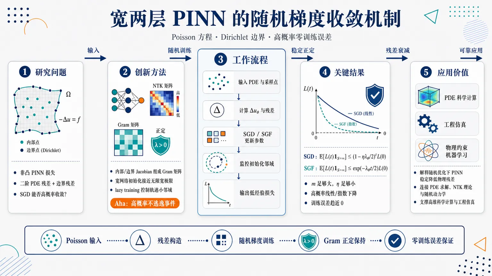
研究问题宽两层物理信息神经网络（PINN）在求解带 Dirichlet 边界条件的 Poisson 方程时，实践中常用 SGD/随机训练，但已有理论主要覆盖确定性 GD；核心问题是：在非凸、含二阶 PDE 残差和边界残差的 PINN 损失中，随机梯度方法能否以高概率稳定收敛到零训练误差。创新方法将 NTK/Gram 矩阵分析从确定性 PINN 训练扩展到随机梯度训练：把内部 PDE 残差与边界残差的 Jacobian 组成 Gram 矩阵，证明宽网络初始化时 Gram 矩阵接近正定的无限宽极限，并通过 lazy training 控制随机轨迹始终停留在初始化小邻域内，使 Gram 矩阵在整个 SGD/SGF 训练过程中保持正定；Aha 点是用“高概率不逃逸事件”驯服 mini-batch 动态随机性。工作流程输入 Poisson 方程、内部采样点、边界采样点和宽两层 PINN；计算网络输出的 Laplace 二阶导数，形成内部残差与边界残差；用无偏 SGD 或连续时间 SGF 更新参数；同时监控参数是否留在初始化邻域；在邻域内 Gram 矩阵保持正定，残差向量沿稳定线性化动力学衰减；最终输出趋近零的 PINN 经验损失和高概率线性/指数收敛保证。关键结果当网络宽度 m 足够大、学习率 η 足够小时，SGD 在高概率事件上满足期望损失线性下降：E[L(t)1S₌∞] ≤ (1−ηλθ/2)^t L(0)；SGF 满足指数下降：E[L(t)1S₌∞] ≤ exp(−λθ t/2)L(0)。结果表明大多数随机训练轨迹不会离开初始化邻域，PINN 训练误差可收敛到零。应用价值为实际中广泛使用 SGD/随机优化器训练 PINN 求解 PDE 提供严格理论支撑，解释为什么宽 PINN 在随机训练下仍能稳定降低物理残差；该结果连接 PDE 神经求解、NTK 宽网络理论与随机优化动力学，为高维科学计算、工程仿真和物理约束机器学习中的可靠 PINN 训练奠定基础。第一部分：核心概览 (Overview)
该研究给出宽两层 PINN求解Poisson 方程时，采用随机梯度下降（SGD）与随机梯度流（SGF）训练的高概率线性收敛保证。核心突破在于把既有针对确定性 GD 的 PINN 优化理论扩展到随机优化，处理由 mini-batch 采样引入的动态随机性，并证明训练期间相关 Gram 矩阵保持正定。该结果处于 PINN 优化理论、NTK 分析与随机训练动力学交叉位置，补齐了实践中广泛使用 SGD 而理论保证不足的关键缺口。
---
第二部分：结构化快速回顾
《Convergence of Stochastic Gradient Methods for Wide Two-Layer Physics-Informed Neural Networks for the Poisson Equation》（None，）
背景
PINN 是求解 PDE 的主流神经方法之一，但其损失函数高度非凸，包含 PDE 内部残差和边界残差，且涉及神经网络偏导数。已有理论多集中于确定性梯度下降或假设训练误差很小；而实践中常用 SGD / Adam 等随机优化器，随机训练收敛理论缺失。
方法
研究对象为过参数化两层 PINN，用于求解带 Dirichlet 边界条件的 Poisson 方程。网络宽度为 m，训练损失由 n₁ 个内部采样点和 n₂ 个边界采样点构成。分析框架基于 neural tangent kernel / Gram matrices，在随机初始化和局部 Lipschitz 激活函数假设下，控制参数偏离初始化的幅度，证明 Gram 矩阵在训练中保持正定。
结果
在宽度 m 足够大、学习率 η 足够小时，SGD 满足
[
E[L(t)1S₌ᵢₙfₜy]
łeq
(1-ηłambda_θ/2)^t L(0),
]
SGF 满足
[
E[L(t)1S₌ᵢₙfₜy]
łeq
e⁻łambda_θ t/²L(0).
]
即在高概率事件上，训练轨迹保持在初始化邻域内，损失以线性 / 指数速率衰减至零。
讨论
关键数学机制是：无限宽极限下的 Gram 矩阵正定，有限宽初始 Gram 矩阵集中到无限 Gram 矩阵，训练过程处于 lazy training 区域，因此 Gram 矩阵正定性不被破坏。随机优化带来的挑战在于每步梯度估计具有动态随机性，只能以高概率方式控制参数轨迹。
局限
分析没有纳入随机梯度估计的方差项，因此无法刻画 batch size 对收敛速度和稳定性的影响。Gram 矩阵最小特征值 (łambda_θ) 的精确谱行为仍未被刻画，且正定性假设对 PINN 来说一般很难验证。
结论
SGD 与 SGF 在宽两层 PINN 训练 Poisson 方程时可以获得严格的高概率线性收敛保证。该结果把 PINN 优化理论从确定性算法推进到随机算法，为实践中广泛使用的随机训练方法提供了首个系统性理论支撑之一。
---
第三部分：逐章节冷凝解析 (Section-by-Section Condensing)
Abstract
Linear convergence for stochastic PINN training
核心贡献是证明 SGD / SGF 训练过参数化两层 PINN 求解 Poisson equation 时具有高概率意义下的线性收敛。研究目标明确落在随机优化器，而非确定性 GD。摘要中直接给出：*"we establish the linear convergence of stochastic gradient descent / flow in training over-parameterized two layer PINNs with a general class of activation functions for solving one model second-order elliptic problem, i.e., the Poisson equation, in the sense of high probability."*
Extension beyond deterministic gradient descent
已有关键结果 Gao2023 分析的是 gradient descent，当前工作扩展到随机梯度方法。摘要给出定位：*"These results extend the existing result Gao2023 in which gradient descent was analyzed."* 这说明理论推进点不是 PINN 表达能力，而是随机训练动力学的收敛保证。
Dynamic randomness as the main technical obstacle
随机优化的难点来自每一步 mini-batch 或随机估计引入的动态随机性，不同于仅来自初始化的静态随机性。摘要指出：*"The challenge of the analysis lies in handling the dynamic randomness introduced by stochastic optimization methods."*
Positive definiteness of Gram matrices as the key mechanism
收敛证明依赖保持训练过程中相关 Gram matrices 的正定性。摘要明确给出关键点：*"The key of the analysis lies in ensuring the positive definiteness of suitable Gram matrices during the training."* 这与 NTK 分析一脉相承：若 Gram 矩阵最小特征值保持正下界，残差向量沿稳定线性系统衰减。
Theoretical insight into PINN optimization dynamics
贡献不只是收敛定理，还解释随机训练过程为何能稳定下降。摘要总结为：*"The analysis sheds insight into the dynamics of the optimization process, and provides guarantees on physics informed neural networks trained by stochastic algorithms."*
---
1. Introduction
PDE solvers face the curse of dimensionality
PDE 是自然科学与工程中的基础建模工具，但高维数值求解存在指数复杂度问题。引言开篇指出：*"Partial differential equations (PDEs) represent one very popular and flexible class of mathematical models in nearly all disciplines in natural science and engineering"*，同时强调主要障碍为：*"One major hurdle to solve PDEs is the notorious curse of dimensionality, i.e., the computational complexity grows exponentially with the problem dimensionality."*
Deep learning is positioned as a possible route beyond dimensionality barriers
深度神经网络求解 PDE 的动机是其潜力突破维数灾难。引言中给出：*"deep learning using deep neural networks (DNNs) has emerged as a powerful tool for solving PDEs"*，并进一步说明其吸引力来自：*"its tremendous potentials to break the curse."*
PINN is based on PDE residual minimization
PINN 的基本思想是最小化 PDE 内部残差和边界条件残差的加权组合。关键描述为：*"PINN is based on the principle of PDE residual minimization, i.e., the loss is a suitable weighted combination of the residuals of the PDE (in the domain) and boundary condition(s) (on the boundary), commonly measured in the standard L² norms."* 这一区别使 PINN 的优化不同于普通监督回归，因为损失显式依赖微分算子。
PINN directly injects physics into neural networks
PINN 的核心优势是把微分方程编码的物理约束直接纳入网络训练。引言给出：*"By the construction, PINN directly integrates the physical knowledge encoded in the differential equation into neural networks."* 这也是 “physics-informed” 的含义。
PINN training commonly uses stochastic and deterministic optimizers
实际训练使用的优化器包括 gradient descent、stochastic gradient descent、Adam、limited-memory BFGS。引言列出：*"one learns neural network parameters by training the empirical losses using suitable optimization algorithms, including gradient descent, stochastic gradient descent, Adam, and limited-memory BFGS."* 因此 SGD 理论保证具有直接实践意义。
Empirical success is broad but theory remains incomplete
PINN 已在 Navier–Stokes、Hamilton–Jacobi–Bellman、PDE inverse problems 等任务上表现良好，但理论理解仍早期。引言中明确说：*"Despite the empirical successes of PINNs, the theoretical understanding of PINNs is still largely in its infancy."*
Existing generalization analyses often assume small training error
很多误差分析依赖优化过程能够得到零或小训练误差，这在非凸 PINN 中不是自动成立。关键句为：*"The analysis is mostly conducted under the assumption of zero or small training error in the optimization procedure."* 紧接着指出困难：*"the empirical loss is highly nonconvex with respect to the DNN parameters, and thus it is very challenging to find a global minimizer to the empirical loss, or to ensure a small training error a priori."*
Optimizer convergence is central to a full PINN theory
完整 PINN 理论不仅需要逼近误差和泛化误差，还需要训练误差可控。引言强调：*"The mathematical study on the convergence of the optimizers for PINN training is of fundamental importance towards establishing a complete mathematical theory of PINNs."*
NTK provides the main analytical framework
NTK 分析依赖宽网络初始化时核近似确定且训练中变化很小。引言概括：*"The key observation of the NTK is that it is essentially deterministic at initialization and then keeps unchanged during the training process when the width of the network tends to infinity."* 这直接支撑后文对 Gram 矩阵正定性的控制。
PINN optimization is harder than standard regression
标准回归损失通常只涉及函数值，而 PINN 损失还含内部残差、边界残差及偏导数。引言清楚指出：*"When compared with the standard regression task, the convergence analysis of PINNs is more involved: the PINN loss includes both interior and boundary type terms, and involves partial derivatives of the neural network."*
Previous breakthrough analyzed GD for parabolic PINNs
Gao, Gu and Ng 的结果证明 GD 能在过参数化两层 PINN 中达到全局最小值，使用 ReLU³ 激活。引言给出：*"The first breakthrough on the convergence of optimization algorithms for training PINNs for the standard parabolic equation is due to Gao, Gu and Ng Gao2023, who proved that GD can reach a global minimizer of over-parameterized two-layer PINNs with the ReLU³ activation."*
ReLU³ is used to ensure well-defined PINN losses
PINN 损失涉及二阶或更高导数，因此普通 ReLU 不够光滑。引言说明：*"The ReLU³ activation ensures the well definedness of the PINN loss."* 这解释了为什么激活函数正则性是 PINN 优化理论中的核心假设。
Existing deterministic analyses do not directly cover stochastic methods
已有工作多集中于 GD、IGD 或技术假设下的 gradient flow。引言指出：*"these important works focus mostly on deterministic algorithms, and the analysis does not extend directly to stochastic methods."*
SGD is practically important but theoretically missing for PINNs
SGD 及其变体在 PINN 中广泛使用，原因是计算成本低和泛化性能好。引言写道：*"Stochastic gradient descent (SGD) and its variants are simple and powerful methods for training PINNs in practice and have been widely adopted."* 同时指出核心空白：*"To the best of our knowledge, the convergence analysis of SGD for training PINNs remains missing."*
Dynamic randomness makes SGD analysis harder
SGM 的随机性来自训练过程中每步随机采样，不只是初始化。引言强调：*"Due to the intricate loss of PINNs (involving various partial derivatives) and the dynamic randomness induced by SGM, it is more challenging to investigate the training dynamics."* 进一步说明：*"the stochasticity of the iterations allow only estimating the parameters in a high probability sense."*
Uniform control becomes harder as width grows
网络宽度增加时，可训练参数数量也增加，需要统一控制所有参数。引言指出：*"the number of trainable parameters increases as the neural network gets wider, which requires new techniques to control them uniformly."*
Main contribution: high-probability linear convergence for SGMs
核心结果是 SGD 和 SGF 在训练 PINN 经验损失时以高概率线性收敛到全局最小值。引言明确表述：*"This represents the main contribution of this work, i.e., linear convergence of SGMs to a global minimum for training the PINN loss in the high probability sense."*
Activation assumption is milder than several existing works
激活函数只需局部 Lipschitz，并允许多类常用激活。引言强调：*"we assume that the nonlinear activation function σ is locally Lipschitz, which is milder than that in existing works Gao2023; Xu2024."*
SGD result applies to unbiased estimators with fixed samples
分析不依赖具体抽样方法，只要求无偏 SGD 且采样点集合固定。引言给出：*"Our analysis applies to any unbiased SGD with a fixed set of sampling points, i.e., the results hold regardless of the specific sampling method."*
Variance and batch-size effects remain outside scope
虽然处理了随机训练收敛，但未刻画 stochastic estimate 的方差，因此无法解释 batch size 影响。引言明确限制：*"the analysis does not include the variance of the stochastic estimates, which would be necessary for understanding the impact of batch sizes on the convergence."*
SGF is studied through stochastic differential equations
连续时间随机训练模型通过参数满足的 SDE 表示。引言指出：*"we establish and study the stochastic differential equation satisfied by the parameters, and prove that the linear convergence result is also valid for the SGF."*
---
2. Preliminary
Problem setting and estimates are established before SGD / SGF analysis
预备部分的作用是定义 Poisson-PINN 经验损失、两层网络结构、初始化与激活假设、Gram 矩阵、正定性假设以及随机初始化集中估计。章节开头给出：*"In this section, we describe the problem formulation and give preliminary estimates."*
---
2.1. Physics informed neural networks
Poisson equation with Dirichlet boundary condition is the model PDE
研究对象是有界光滑区域 (ØmegasubsetR^d) 上的 Poisson 方程：
[
Δ u=f quad in Ømega,qquad u=g quad on partialØmega.
]
原文写明：*"Consider the Poisson equation with the Dirichlet boundary condition"*，并定义 Laplace 算子：*"(Δ u=sumᵢ₌₁dfracpartial²upartial xᵢ²) is the Laplace operator."*
The proof strategy can extend beyond Poisson
虽然分析聚焦 Poisson 方程，但相同思路可扩展到其他线性 PDE 和边界条件，只是估计更复杂。原文说明：*"The analysis below can also be extended to other linear PDEs and with boundary conditions of other types using the same proof strategy."*
Population PINN loss combines interior and boundary residuals
连续损失为：
[
L(mathbf w,mathbf a)
=
frac12int_Ømega(Δ[φ(mathbf x;θ)]-f(mathbf x))²dx
+
fracγ2intₚₐᵣₜᵢₐₗØₘₑgₐ(φ(mathbf y;θ)-g(mathbf y))²dy.
]
关键解释为：*"This loss reflects how well the neural network function (φ(bmx;θ)) satisfies the differential equation and the boundary condition, henceforth the name physics-informed neural network."*
The neural ansatz is a fully connected two-layer network
网络形式为：
[
φ(mathbf x;mathbf w,mathbf a)
=
frac1sqrt msumᵣ₌₁^m aᵣσ(mathbf wᵣ^→p widetildemathbf x),
quad
widetildemathbf x=[mathbf x^→p,1]^→p.
]
原文定义：*"we employ the standard fully connected two-layer neural networks"*，其中 (mathbf wᵣᵢₙmathbb Rd⁺¹)，(mathbf ainmathbb R^m)，总参数 (θinmathbb Rm⁽d⁺²⁾)。
Bias terms are absorbed into extended weights and inputs
偏置 (wᵣ,d₊₁) 并入 (mathbf wᵣ)，输入扩展为 (widetildemathbf x)。原文说明：*"The bias terms (wᵣ,d₊₁) are absorbed into the vectors (bmwᵣ) and (widetildebmxinRd⁺¹) is the extended point of (bmx)."*
Initialization uses Gaussian first-layer weights and Rademacher output weights
Assumption 2.1 规定：
[
mathbf wᵣ₍₀₎simmathcal N(mathbf0,mathbf Id₊₁),qquad
aᵣ₍₀₎simUnif-1,1.
]
原文为：*"for all (rin[m]), (bmwᵣ₍₀₎) is sampled from the standard Gaussian distribution and (aᵣ₍₀₎) is sampled from Rademacher distribution."*
Activation functions are locally Lipschitz up to third derivative
激活函数 (σ) 需分段三阶连续可微，并且 (k=0,1,2,3) 阶导数满足局部 Lipschitz：
[
|σ⁽k⁾(z₁₎₋σ⁽k⁾(z₂₎|łe C_M|z₁₋z₂|.
]
原文写道：*"The activation function (σ) is piecewise continuously differentiable up to third order, and has locally Lipschitz property."*
Lipschitz constants grow at most polynomially
局部 Lipschitz 常数满足：
[
C_Młe A(1+M^ell),quad forall M>0.
]
这保证宽度相关的 (B) 增长可控。原文为：*"The constant (C_M) grows at most polynomially with (M)."*
Assumption covers RePU and common smooth activations
适用激活包括三次及以上 RePU，以及 tanh、sin、sigmoid、softplus。Remark 2.1 指出：*"The assumption on (σ) is quite generous and covers many commonly used functions."* 随后列举：*"the RePU function with power not lower than three and some globally Lipschitz smooth activations, e.g., tanh, sin, sigmoid and softplus, all satisfy the assumption."*
Empirical loss uses n₁ interior and n₂ boundary samples
训练点 (mathbf xₚₚ₌₁ⁿ₁) 来自 (mathcal U(Ømega))，边界点 (mathbf y_qq₌₁ⁿ₂) 来自 (mathcal U(partialØmega))。原文说明：*"let the training samples (bmxₚₚ₌₁ⁿ₁) and (bmy_qq₌₁ⁿ₂) be drawn independently and identically distributed (i.i.d.) from the uniform distributions (mathcal U(Ømega)) and (mathcal U(partialØmega))."*
Empirical PINN loss has normalized residual weights
经验损失为：
[
L(mathbf w,mathbf a)
=
sumₚ₌₁ⁿ₁
frac12n₁
łeft(sumᵢ₌₁dfracpartial²φpartial xᵢ²(mathbf xₚ₎₋f(mathbf xₚ₎ᵢ̊ght)²
+
sumq₌₁ⁿ₂
fracγ2n₂
(φ(mathbf y_q)-g(mathbf y_q))².
]
这就是式 (4)。原文说明体积因子被吸收：*"To simplify the notation, we absorb (|Ømega|) and (|partialØmega|) into (γ)."*
Automatic differentiation makes the gradient computable
PINN 损失涉及二阶空间导数，但可用 AD 计算。原文给出：*"The gradient of the loss (L(bmw,bma)) can be evaluated efficiently using automatic differentiation, and thus standard first-order algorithms such as SGD can be readily implemented."*
Residual vectors rewrite the loss compactly
定义内部残差：
[
sₚ₍mathbf w,mathbf a)
=
frac1sqrtn₁
łeft(sumᵢfracpartial²φpartial xᵢ²(mathbf xₚ₎₋f(mathbf xₚ₎ᵢ̊ght),
]
边界残差：
[
h_q(mathbf w,mathbf a)
=
sqrtfracγn₂(φ(mathbf y_q)-g(mathbf y_q)).
]
于是
[
L(mathbf w,mathbf a)=frac12(|mathbf s|₂²⁺|mathbf h|₂²⁾.
]
原文明确写出：*"Then the empirical loss (L) can be written as (L(bmw,bma)=tfrac12(|bms(bmw,bma)|₂²⁺|bmh(bmw,bma)|₂²⁾)."*
---
2.2. The idea of convergence analysis
Gradient flow illustrates the mechanism before stochastic analysis
先用确定性 gradient flow 展示损失残差如何由 Gram 矩阵控制。原文开头为：*"We first use gradient flow to illustrate the idea of convergence analysis."*
Parameter dynamics follow negative loss gradients
梯度流满足：
[
fracdmathbf w(t)dt=-fracpartial L(t)partialmathbf w,qquad
fracdmathbf a(t)dt=-fracpartial L(t)partialmathbf a.
]
展开后，每个参数更新由 (sₚ₍ₜ₎partial sₚ/partialθ) 和 (h_q(t)partial h_q/partialθ) 驱动。原文公式直接给出：*"(fracm̊ dbmw(t)m̊ dt=-sumₚ₌₁ⁿ₁sₚ₍ₜ₎ḑotfracpartial sₚ₍ₜ₎partialbmw-sumq₌₁ⁿ₂h_q(t)ḑotfracpartial h_q(t)partialbmw)."*
Residual dynamics form a linear system governed by Gram matrices
残差向量满足：
[
frac ddt
beginbmatrix
mathbf s(t)
mathbf h(t)
endbmatrix
=
-(mathbf Gₘₐₜₕbf w(t)+mathbf Gₘₐₜₕbf ₐ(t))
beginbmatrix
mathbf s(t)
mathbf h(t)
endbmatrix.
]
原文给出：*"Consequently, the loss vector satisfies"* 后接该式。这说明训练误差下降速度由 (mathbf G_θ(t)) 的最小特征值控制。
Gram matrices are Jacobian inner-product matrices
定义
[
mathbf Gₘₐₜₕbf w=mathbf Dₘₐₜₕbf w→pmathbf Dₘₐₜₕbf w,qquad
mathbf Gₘₐₜₕbf ₐ=mathbf Dₘₐₜₕbf ₐ→pmathbf Dₘₐₜₕbf ₐ,
]
其中 (mathbf Dₘₐₜₕbf w)、(mathbf Dₘₐₜₕbf ₐ) 收集所有残差对参数的导数。原文式 (6)(7) 明确写出：*"(bmGbₘw(bmw,bma)=bmDbₘw→pbmDbₘw)"* 和 *"(bmGbₘₐ(bmw,bma)=bmDbₘₐ→pbmDbₘₐ)."*
Positive lower bounds imply convergence of the loss to zero
若 (mathbf Gₘₐₜₕbf w(t)) 和 (mathbf Gₘₐₜₕbf ₐ(t)) 的最小特征值在训练中保持正下界，则残差衰减，损失趋零。原文说明：*"if the smallest eigenvalues of the two Gram matrices (bmGbₘw(t)) and (bmGbₘₐ(t)) have positive lower bounds during the training process, then the loss value (L(θₜ₎) tends to 0 when (t) tends to infinity."*
Lazy training keeps Gram matrices close to initialization
正定性可由无限宽 Gram 矩阵正定和训练过程处于 lazy training 区域实现。原文表述：*"This can be achieved if the ‘infinite’ Gram matrices are positive definite and the training is in the ‘lazy training’ regime."*
Infinite Gram matrices are assumed positive definite
Assumption 2.2 定义：
[
mathbf Gₘₐₜₕbf wⁱⁿfty
=
mathbb Eθ₍₀₎[mathbf Gₘₐₜₕbf w(θ(0))],
quad
mathbf Gₘₐₜₕbf ₐⁱⁿfty
=
mathbb Eθ₍₀₎[mathbf Gₘₐₜₕbf ₐ(θ(0))]
]
并要求
[
łambdaₘₐₜₕbf w>0,qquad łambdaₘₐₜₕbf ₐ>0.
]
原文为：*"The infinite Gram matrices (bmGbₘwⁱⁿfty) and (bmGbₘₐⁱⁿfty) are positive definite."*
Infinite Gram matrices depend on samples but not on network width
尽管网络 (φ) 含有宽度 (m)，无限 Gram 矩阵的条目由 i.i.d. 神经元平均的期望给出，与 (m) 无关。Remark 2.2 说明：*"their sizes depend on the number of samples. However, they are independent of (m) even though (φ(bmx;bmw,bma)) depends on (m)."*
Verification of PINN Gram positivity is nontrivial
回归任务中非多项式激活和非平行样本常能保证 NTK 正定，但 PINN 中微分算子使问题更复杂。Remark 2.3 指出：*"The verification of Assumption 2.2 for PINNs is generally highly nontrivial due to the presence of multiple differential operators."*
Combined Gram matrix has eigenvalue lower bound
定义：
[
łambda_θ=łambdaₘₐₜₕbf w+łambdaₘₐₜₕbf ₐ,qquad
mathbf G_θ=mathbf Gₘₐₜₕbf ₐ+mathbf Gₘₐₜₕbf w.
]
由 Weyl 不等式：
[
łambdaₘᵢₙ(mathbf G_θⁱⁿfty)ge łambda_θ.
]
原文写道：*"Note that by Weyl’s inequality, we have (łambdaₘᵢₙ(bmGθⁱⁿfty)≥łambdabₘw+łambdabₘₐ=łambdaθ)."*
Smallest eigenvalue behavior remains largely open for PINNs
(łambda_θ) 受激活函数、内部采样点、边界采样点分布影响；坏采样可导致病态。Remark 2.4 指出：*"the spectral analysis of eigenvalues of the Gram matrix for PINNs remain largely completely open due to its intrinsic delicacy."* 并补充：*"badly distributed sampling points (e.g., with two points nearly identical) can lead to severe ill-conditioning of the Gram matrices."*
SGD and SGF are formalized as discrete and continuous stochastic dynamics
SGD：
[
θ(t+1)=θ(t)-ηfracpartialwidetilde L(θₜ₎partialθ.
]
SGF：
[
dθₜ₌₋nabla L(θₜ₎dt+sqrtησ(θₜ₎dWₜ.
]
原文列为：*"For stochastic gradient-type algorithms, the parameters (θ) are updated as SGD"* 和 *"SGF."*
Informal theorem states high-probability linear convergence
Theorem 2.1 给出核心结果：在 (m) 足够大、(η) 足够小时，若 (S) 为参数离开初始化邻域的首次时间，则高概率 (S=infty)，且
[
mathbb E[L(t)mathbf1S₌ᵢₙfₜy]
łe
(1-ηłambda_θ/2)^tL(0)
]
或
[
mathbb E[L(t)mathbf1S₌ᵢₙfₜy]
łe
exp(-łambda_θ t/2)L(0).
]
原文总结：*"If the width (m) of the neural network is large enough and the step size (η) is small enough, then with high probability (S=infty), and the expected value of the loss (L(t)) decays exponentially."*
Most trajectories remain near initialization
Theorem 2.1 的解释是：大多数随机训练轨迹不会离开初始邻域，并且这些轨迹的平均损失指数下降。原文写道：*"Theorem 2.1 shows that among all possible iteration trajectories of the neural network parameters, the majority of the trajectories stay in the vicinity of its starting point."*
---
2.3. Static randomness
Static randomness is separated from dynamic algorithmic randomness
初始化随机性称为 static randomness，区别于每次迭代随机选择数据带来的 dynamic randomness。原文说明：*"First we deal with the quantities related to random initialization, the so-called static randomness compared with the dynamic randomness of the algorithm, which arises from the random selection of the data at each iteration."*
Gaussian initialization is uniformly bounded with high probability
Lemma 2.1 给出：对任意 (δin(0,1))，至少以 (1-δ) 概率，
[
|mathbf wᵣ₍₀₎|₂
łe
sqrt2(d+1)łogłeft(frac2m(d+1)δi̊ght),
quad forall rin[m].
]
原文为：*"For any (δin(0,1)), with probability at least (1-δ), there holds..."*
Gaussian initialization is important for Gram positivity
Remark 2.5 强调 Gaussian 初始化对无限 Gram 矩阵正定性至关重要。原文写道：*"Gaussian initialization is crucial to ensure the positivity of infinite Gram matrix (and then the initial Gram matrix), which is central to the convergence analysis."*
Bounded initializations would require different positivity arguments
均匀有界初始化可以自动给出参数界，但已有 Gram 正定性分析依赖分布全支撑。原文指出：*"existing analysis of the positivity of the associated infinite Gram matrix depends crucially on the full support of the distribution."* 对有界初始化则需要：*"establish the linear independence over a bounded domain instead."*
The event E(M) controls all initial hidden weights
定义：
[
E(M)=bigcapᵣ₌₁m|mathbf wᵣ₍₀₎|₂łe M.
]
随后定义
[
B=1+sqrt2(d+1)łogłeft(frac2m(d+1)δi̊ght).
]
原文说明：*"This lemma indicates that with high probability, all the (bmwᵣ₍₀₎) are bounded by (B-1)."*
The choice of B supports lazy-training control
(B) 比初始界多 1，用于容纳训练过程中参数的小漂移。原文解释：*"The choice of (B) is to ensure that all the weights (|bmwᵣ₍ₜ₎|₂) are bounded by (B) during the iteration, which can be realized by the initial bound (B-1) in the ‘lazy training’ regime."*
Initial loss is logarithmically controlled when m is large
Lemma 2.2：若
[
mgtrsim łog²łeft(fracn₁₊ₙ₂δi̊ght),
]
则在事件 (E(B-1)) 条件下，以至少 (1-δ) 概率，
[
L(0)łesssim C_B²d³łogłeft(fracn₁₊ₙ₂δi̊ght).
]
原文为：*"If (mgtrsimłog²łeft(fracn₁₊ₙ₂δi̊ght)), then conditioned on the event (E(B-1)), we have with probability at least (1-δ), (L(0)łesssim C_B²d³łogłeft(fracn₁₊ₙ₂δi̊ght))."*
Initial Gram matrices concentrate around infinite Gram matrices
Lemma 2.3：若
[
mgtrsim
fracC_B⁴d⁶minłambdaₘₐₜₕbf w²,łambdaₘₐₜₕbf ₐ²
łog³łeft(fracn₁₊ₙ₂δi̊ght),
]
则以至少 (1-δ) 概率，
[
|mathbf Gₘₐₜₕbf w(0)-mathbf Gₘₐₜₕbf wⁱⁿfty|₂łełambdaₘₐₜₕbf w/4,
quad
|mathbf Gₘₐₜₕbf ₐ(0)-mathbf Gₘₐₜₕbf ₐⁱⁿfty|₂łełambdaₘₐₜₕbf ₐ/4.
]
原文给出：*"Lemma 2.3 shows that the difference between initial and infinite Gram matrices is small for wide NNs, which ensures the positive definiteness of the initial Gram matrices."*
This agrees with the NTK infinite-width intuition
当 (m→infty) 时，初始 Gram 矩阵趋于确定且正定。原文说：*"This agrees with the result in Jacot2018, which asserts that the initial Gram matrices are deterministic and positive when (m) tends to infinity and the loss is convex in the function space."*
Linearity of the PDE keeps the loss convex in function space
虽然参数空间非凸，但由于 Poisson 方程中的微分算子是线性的，损失相对函数 (φ) 是凸的。原文指出：*"Since the differential operator in PDE (1) is linear, the loss (L(θ)) is still convex with respect to the neural network (φ)."*
Gram matrices are stable under small parameter perturbations
Lemma 2.4 表明当所有神经元参数保持在初始化邻域内时，Gram 矩阵保持正定。前提包括
[
mgtrsim łog³⁽¹/δ),
quad
0<Rₘₐₜₕbf w,Rₘₐₜₕbf ₐłe1,
]
且
[
Rₘₐₜₕbf w,Rₘₐₜₕbf ₐ
approx
fracminłambdaₘₐₜₕbf w,łambdaₘₐₜₕbf ₐC_B²d³.
]
原文写道：*"The next lemma shows the continuity of the Gram matrices, i.e., (bmG_w) and (bmGₐ) are stable under small perturbations."*
Initial concentration and continuity together preserve positive definiteness during training
Lemma 2.3 保障初始正定，Lemma 2.4 保障小邻域内正定不破坏。原文总结：*"These two results are the key points for the positive definiteness of Gram matrices during training."*
---
第四部分：深度理解与语言支持 (Understanding & Nuance)
1. 术语解析
Physics-informed neural network
直译为“物理信息神经网络”，但语境中更准确含义是：网络训练目标不仅拟合数据，还惩罚对 PDE 和边界条件的违反。这里的 “physics” 泛指由微分方程表达的结构知识，不一定是狭义物理定律。对应原文：*"directly integrates the physical knowledge encoded in the differential equation into neural networks."*
Over-parameterized / wide
两者在该研究中几乎同义，均指隐藏层宽度 (m→infty)，参数数量远多于采样点数量。原文明确：*"both the words ‘over-parameterized’ and ‘wide’ mean that (m) approaches infinity."* 但微妙差别是：over-parameterized 强调参数数量相对数据过多，wide 强调网络结构宽度极大。
Gram matrices
这里的 Gram 矩阵不是普通样本内积矩阵，而是残差函数对参数 Jacobian 的内积矩阵：
[
mathbf G_θ=mathbf D_θ^→pmathbf D_θ.
]
它刻画残差向量在训练中的线性化动力学，类似 PINN 版本的 NTK。若最小特征值为正，所有残差方向都能被参数更新有效减少。
High probability
“高概率”不是确定性保证，而是指关于初始化随机性和训练随机性的失败概率不超过 (δ)。典型表述为：*"with probability at least (1-δ)."* 它比期望收敛更强，因为能排除绝大多数坏轨迹，但仍允许小概率失败事件。
Lazy training
指参数在训练过程中只在初始化附近小幅移动，因此网络函数主要通过线性化 NTK 动力学演化。这里 lazy training 的关键作用是让 Gram 矩阵接近初始 Gram 矩阵，从而保持正定性。
---
2. 疑难查证
为什么 Gram 矩阵正定能推出损失收敛？
残差向量记为
[
mathbf r(t)=
beginbmatrix
mathbf s(t)
mathbf h(t)
endbmatrix.
]
梯度流下：
[
dotmathbf r(t)=-mathbf G_θ(t)mathbf r(t).
]
损失为
[
L(t)=frac12|mathbf r(t)|₂².
]
求导：
[
dot L(t)
=
mathbf r(t)^→pdotmathbf r(t)
=
-mathbf r(t)^→pmathbf G_θ(t)mathbf r(t).
]
若
[
łambdaₘᵢₙ(mathbf G_θ(t))ge c>0,
]
则
[
dot L(t)łe -2cL(t),
]
得到指数衰减：
[
L(t)łe e⁻²ctL(0).
]
离散 SGD 中结构类似，但要额外处理随机梯度误差、学习率和高概率轨迹控制。
为什么 PINN 的 Gram 正定比普通回归难？
普通回归残差通常是
[
φ(xᵢ;θ)-yᵢ,
]
Jacobian 只涉及 (partialφ/partialθ)。PINN 的内部残差是
[
Δφ(xᵢ;θ)-f(xᵢ₎,
]
因此 Jacobian 涉及
[
fracpartialpartialθΔφ(xᵢ;θ),
]
即参数导数与空间二阶导数交织。对两层网络而言，这会引入 (σ'')、(σ''')、权重分量 (wᵣᵢ) 等项。原文中 ( mathbf v(mathbf wᵣ,aᵣ;mathbf xⱼ₎) 就包含：
[
aᵣσ'''(mathbf wᵣ^→pwidetildemathbf xⱼ₎wᵣᵢ²widetildemathbf xⱼ
+
2aᵣσ''(mathbf wᵣ^→pwidetildemathbf xⱼ₎wᵣᵢmathbf eᵢ.
]
这使核函数结构更复杂，正定性不再由普通 NTK 的经典条件直接保证。
为什么需要三阶导数？
Poisson 残差含 (Δφ)，即网络输出对输入的二阶导数。训练时还需要对参数求梯度，即对 (Δφ) 再对 (mathbf wᵣ) 求导。对两层网络 (σ(mathbf wᵣ^→pwidetildemathbf x)) 而言，这会出现 (σ''')。因此激活函数至少需要三阶可微或分段三阶可微。原文 Assumption 2.1 要求：*"piecewise continuously differentiable up to third order."*
为什么只靠初始 Gram 正定还不够？
训练中参数变化会改变 Jacobian，从而改变 Gram 矩阵。如果参数远离初始化，初始正定性可能失效。证明思路必须包含两步：
- 初始 Gram 矩阵接近无限 Gram 矩阵，因此正定；
- 参数始终留在足够小邻域内，因此 Gram 矩阵变化不大，正定性保持。
这正是 Lemma 2.3 与 Lemma 2.4 的组合逻辑。
---
第五部分：创新评估与关联 (Synthesis & Novelty)
1. 创新性判断
From deterministic PINN optimization to stochastic PINN optimization
过去 2–5 年 PINN 优化理论主要集中在 GD、gradient flow、implicit GD 等确定性或半确定性框架。Gao2023 分析了 over-parameterized two-layer PINNs with ReLU³ activation 的 GD 收敛；Xu2024 分析 IGD，并依赖 smooth globally Lipschitz non-polynomial activation。当前研究把问题推进到 SGD / SGF，直接面对实践中最常用的随机训练机制。关键新增对象是：*"dynamic randomness introduced by stochastic optimization methods."*
High-probability control of stochastic trajectories
普通 NTK-GD 分析通常只需控制初始化随机性；SGD 还需要控制每一步随机抽样造成的路径波动。创新点在于以高概率方式证明参数不离开初始化邻域，即 (S=infty)，再在该事件上证明损失线性下降。这解决了“随机迭代无法逐点确定控制参数”的问题。
Milder activation assumptions than several earlier PINN works
Gao2023 主要使用 ReLU³；Xu2024 要求 analytic / globally Lipschitz smooth activations。当前假设为局部 Lipschitz 到三阶，且 Lipschitz 常数多项式增长，覆盖 RePU、tanh、sin、sigmoid、softplus。新颖性不在于提出新激活，而在于放宽收敛理论所需的正则性条件。
Unified treatment of SGD and SGF
离散 SGD 与连续时间 SGF 同时获得线性 / 指数收敛结论。SGF 分析涉及 SDE、Itô integral、loss 对数控制；SGD 分析则逐步跟踪参数和损失。这比单纯 GD 分析更接近随机优化理论。
Clear remaining gap: variance-sensitive batch-size theory
虽然建立了无偏 SGD 的收敛，但没有纳入方差项，因此仍未解释 mini-batch size 如何影响收敛速度、稳定性和泛化。该限制被明确承认：*"the analysis does not include the variance of the stochastic estimates, which would be necessary for understanding the impact of batch sizes on the convergence."* 因此创新点是随机收敛保证的建立，而非完整随机优化复杂度理论。
Scientific status
该研究填补了 PINN 理论中的一个核心缺口：实践中广泛使用 SGD，但严格收敛理论长期集中于确定性算法。其地位可概括为：在 NTK 宽网络理论、PINN PDE 残差训练 与 随机梯度动力学 之间建立了高概率线性收敛桥梁。
-
10
📊 含图深析
📄 摘要：提出从浮式海工结构运动时间序列估计 Cummins 方程水动力系数的方法。PINN 将结构体与水波相互作用动力学嵌入损失函数，先估计平移和转动自由度状态，再求解反问题得到相关系数，适用于只有运动观测数据的浮体系统识别。
💡 亮点：Cummins 方程约束的 PINN 可从浮体运动记录反推出水动力系数。该方法把海工结构模型辨识转化为物理一致的时间序列反问题。
📖 展开分析 + 配图
研究问题如何不依赖 WAMIT/NEMOH 等边界元正向求解器，仅利用浮式海洋结构的运动时序数据，反推出 Cummins 方程中的关键水动力系数：无限频率附加质量、脉冲响应函数 IRF，以及由 IRF 转换得到的频率相关附加质量和阻尼。创新方法将 Cummins 辐射记忆方程嵌入 PINN 物理残差，把不可见的 IRF 作为神经网络学习的隐藏时间函数；采用“两阶段反演”：先用可微神经网络拟合 heave 位移、速度和加速度，再冻结运动网络，通过方程残差反演 IRF 与无限频率附加质量。Aha 点是把自由衰减运动曲线变成水动力记忆核的“传感器指纹”，并用傅里叶特征捕捉振荡、指数衰减先验约束 IRF 长尾、Laplace 残差强化卷积物理一致性。工作流程输入球体或箱体自由衰减的时间序列数据：时间、位移、速度、加速度；第一步训练状态网络，生成平滑连续的 heave 位移和速度轨迹，并通过自动微分获得导数；第二步固定状态网络，训练 IRF 网络和无限频率附加质量参数，使 Cummins 方程中的惯性项、IRF-速度卷积项、静水恢复项总和接近零；第三步用高阶 Gaussian quadrature 计算时域卷积，用傅里叶/拉普拉斯积分把学习到的 IRF 转换为频率相关附加质量和阻尼曲线；输出水动力系数估计值和频域系数图谱。关键结果在一维 heave 自由衰减的球体与箱体数值实验中，密集数据和 5% 噪声数据均能较准确恢复系数。无限频率附加质量误差：球体密集数据 -1.47%、5% 噪声数据 1.30%、稀疏数据 -2.56%；箱体密集数据 -1.05%、5% 噪声数据 2.76%、稀疏数据 36.1%。结果显示密集噪声数据仍可用，但当采样过稀且运动频率较高时，状态学习误差会沿导数、卷积、IRF 逐级放大，导致系数反演失真。应用价值为浮式海上风机、船舶、波能装置等浮式结构提供一种由运动传感器数据直接更新水动力模型的路径，可用于设计迭代、模型试验后参数校准、数字孪生在线识别和已有结构的系数反演。该方法不旨在取代高精度边界元求解器，而是降低几何重建和重复数值求解成本，让实测运动数据转化为可用于仿真和控制的物理水动力系数。第一部分：核心概览 (Overview)
该研究把Cummins 方程嵌入物理信息神经网络（PINN），从浮式海洋结构的运动时序数据反演水动力系数，尤其是无限频率附加质量与脉冲响应函数（IRF），再由 IRF 推得频率相关的附加质量和阻尼系数。核心价值不在于替代 WAMIT、NEMOH 或边界元法的高精度求解，而在于提供一种可由传感器运动数据直接驱动、易用于设计迭代与数字孪生场景的反演路径。球体与箱体自由衰减算例显示：数据足够密集时估计误差约为 1%–3%，但稀疏数据下高频运动结构误差可显著放大。
---
第二部分：结构化快速回顾
《Estimating Hydrodynamic Coefficients for Floating Offshore Structures from Movement Data Using Physics-Informed Neural Networks》（None，）
背景
浮式海洋结构的运动预测依赖水动力系数，传统方法通常需要频域或时域边界值问题求解。复杂结构、小幅几何调整或已有实体模型场景下，直接从运动测试数据估计系数具有工程吸引力。
方法
采用PINN建模：先用神经网络拟合结构状态，即 heave 位移与速度；再固定状态网络，通过 Cummins 方程残差反演 IRF 与 无限频率附加质量。IRF 网络加入傅里叶特征嵌入和指数衰减因子；卷积项、傅里叶/拉普拉斯变换通过高阶 Gaussian quadrature 近似。
结果
球体与箱体自由衰减测试中，密集无噪数据和 5% 噪声数据均给出较好估计。无限频率附加质量相对误差：球体密集数据 -1.47%、噪声数据 1.30%、稀疏数据 -2.56%；箱体密集数据 -1.05%、噪声数据 2.76%、稀疏数据 36.1%。
讨论
估计精度强依赖运动自由度学习精度，而后者受测量密度、噪声、运动频率影响。稀疏数据不足以解析高频运动时，系数反演显著退化。
局限
验证数据来自数值模拟，而非真实传感器测量；实验仅覆盖一维 heave 自由衰减；hydrostatic restoring 被假定已知；未知系泊力等状态相关外力仅在方法层面讨论，未进入实验。
结论
PINN 可作为从运动数据估计水动力系数的可行框架，适用于概念验证和未来数字孪生扩展；实际应用前仍需在多自由度、真实噪声、波浪激励和复杂结构上验证。
---
第三部分：逐章节冷凝解析 (Section-by-Section Condensing)
ABSTRACT
- Data-driven inverse estimation of hydrodynamic coefficients
核心任务是从浮式结构运动时序数据中估计 Cummins 方程中的水动力系数，对象包括 added mass、damping coefficients 和 hydrostatic restoring。研究目标被明确表述为 *"estimating the hydrodynamic coefficients in the Cummins equations using time-series data from a moving body, such as a floating offshore structure"*。
- PINN embeds governing physics and motion data
方法把结构-水波相互作用动力学方程直接放入 physics-informed neural network，同时使用可获得的运动数据。关键机制是 *"incorporating the Cummins equations governing the dynamics of a structural body interacting with water waves into a physics-informed neural network (PINN), along with available motion data"*。
- Two-stage estimation strategy
流程分为两步：先估计结构状态，包括平移与转动自由度；再求解逆问题，得到水动力力。摘要中给出清晰顺序：*"first estimates the structure’s state in terms of translational and rotational degrees of freedom, and then solves the inverse problem to determine the hydrodynamic forces acting on the body"*。
- First-order Cummins formulation and PINN-based state/parameter estimation
Cummins 方程被改写为一阶系统，状态与参数估计均由 PINN 完成。原文直接说明：*"The Cummins equations are formulated as a first-order system, and both state and parameter estimation are performed using PINNs"*。
- Verification on free decay of sphere and box
验证算例为球体和箱体的自由衰减：*"The method is verified on the free decay of a sphere and a box"*。主要结论是可准确估计状态与系数，但依赖运动数据体量和质量：*"accuracy depends on the volume and quality of the movement data"*。
---
1 INTRODUCTION
- Wave-structure interaction simulation is central to marine engineering design
海洋工程设计中的核心问题是模拟波浪与浮体结构相互作用，典型对象包括船舶、浮式海上风机和波能转换器。问题背景被表述为 *"A central challenge in ocean and marine engineering is simulating wave-structure interactions (WSIs) with floating objects such as ships, floating offshore wind turbines, and wave energy converters"*。
- Linearized dynamics are valid under small wave and motion assumptions
当波高和结构运动相对波长较小时，结构平移与转动可由牛顿第二定律和线性势流理论描述，并导出 Cummins equations。适用条件是 *"given an assumption of small wave height and structural movements compared to the wavelength"*。
- Cummins equations require linearized hydrodynamic coefficients
Cummins 方程用质量、附加质量、阻尼、恢复力等线性化水动力系数描述浮体运动。原文表述为 *"formulated in terms of linearised hydrodynamic coefficients for mass, added mass, damping, hydrodynamic restoring, etc."*。若系数已知，即可求解给定载荷下运动的正问题：*"If these coefficients are known, it is possible to solve the forward problem"*。
- Unknown or inaccurate coefficients motivate inverse estimation
对复杂结构而言，水动力系数常常不准确或只部分已知，因此必须估计。关键动机是 *"if these are not correct or only partially known, which is often the case for more complex structures, they need to be estimated"*。
- Conventional coefficient computation relies on BEM or impulsive time-domain problems
传统水动力系数计算通常需要解多个频域边界值问题，代表工具包括 WAMIT 和 NEMOH；也可解单个时域脉冲初边值问题，再经傅里叶变换联系到频域。原文给出两类路径：*"solving multiple boundary-value problems in the frequency domain using BEM"*，以及 *"a single time-dependent impulsive problem can be solved in the time domain"*。
- Design-loop motivation favors data-based coefficient updates
在设计优化中，结构几何与布局反复调整，例如增大浮式风机基础 heave plate 直径或减小船舶吃水。若实体模型或全尺度模型已存在，可直接调整结构、做自由衰减或波浪暴露试验，再用运动数据预测水动力系数。工程动机被概括为 *"use this data to predict the hydrodynamic coefficients"*，从而避免 *"solving a series of time-dependent boundary value problems or setting up a numerical solver"*。
- SciML provides the conceptual bridge between data and physics
Scientific machine learning (SciML)被定位为数据科学和科学计算交叉领域，通过把测量数据与微分方程知识结合，提高预测有效性、泛化性和可解释性。原文定义为 *"the intersection of well-established data science and scientific computing fields"*，并强调 *"combine measurement data with domain knowledge expressed as differential equations"*。
- PINNs and UPINNs motivate the proposed inverse framework
PINN被用作科学与工程逆问题求解框架；UPINN思想用于处理模型未知部分。该研究的直接基础是 *"based on the PINN methodology"*，并受到 *"the universal PINN (UPINN) framework"* 启发，用于 *"recover missing parts of a model to make a best fit with available (often noisy) measurement data"*。
- Practicality rather than superior accuracy is the stated objective
研究目的不是超越传统高精度水动力求解器，而是强调实际应用便利性。原文明确限定预期：*"The purpose is not to outperform existing methods in terms of accuracy; rather, the benefits of the proposed method lie in its ease of application in practice"*。
---
1.1 Contributions
- PINN-based alternative for hydrodynamic coefficient estimation
第一项贡献是把 Cummins 方程作为 physics loss term 嵌入 PINN，从数据驱动角度估计水动力系数。贡献表述为 *"an alternative method of estimating hydrodynamic coefficients from a data-driven perspective using PINNs by incorporating Cummins equations as a physics loss term"*。
- Use of state-of-the-art training techniques
第二项贡献是采用现代训练技巧以提升速度和精度：*"We apply state-of-the-art techniques to facilitate faster training and more accurate estimates"*。这些技巧在后文具体包括傅里叶特征嵌入、指数衰减先验、self-adaptive weights、Laplace residual等。
- Testing on two free-decay floating structures
第三项贡献是两个自由衰减结构测试：*"We test the proposed method on two types of floating structures in free decay"*。后文具体为球体与箱体，且均为一维 heave。
- Hypothesis of extension to more advanced WSI cases
第四项贡献是基于结果推断方法可扩展至更复杂 WSI，但留待未来验证。原文措辞为 *"we postulate that the proposed method will be successful in more advanced WSI cases, which is left for future work to validate"*。
---
2 PHYSICS-INFORMED MACHINE LEARNING
- Methodological section links governing equations, PINN theory, inverse estimation, architecture, and integration
该章节承担完整方法搭建任务：先定义 Cummins 方程，再介绍 PINN/UPINN，随后给出水动力系数反演、网络结构和卷积积分实现。章节标题本身为 *"PHYSICS-INFORMED MACHINE LEARNING"*，显示该方法属于物理约束机器学习而非纯数据拟合。
---
2.1 Governing Equation
- Cummins equations describe six-degree-of-freedom linearized WSI
运动自由度为 6 个：surge、sway、heave 对应 (k=1,2,3)，roll、pitch、yaw 对应 (k=4,5,6)。原文说明：*"Surge, sway, and heave are denoted by k = 1, 2, 3 and roll, pitch, and yaw by k = 4, 5, 6, respectively"*。
- Equation includes fixed mass, infinite added mass, convolutional radiation memory, and restoring
Cummins 方程为
[
(mⱼₖ+aⱼₖⁱⁿfty)ddotxₖ₍ₜ₎₊ᵢₙₜ₀^t Kⱼₖ(t-τ)dotxₖ₍τ)dτ+cⱼₖxₖ₍ₜ₎₌Fⱼ₍ₜ₎.
]
其中 (mⱼₖ)、(aⱼₖⁱⁿfty)、(cⱼₖ) 分别为固定质量、无限频率附加质量和静水恢复力系数。原文定义为 *"the coefficients of (fixed) mass, infinite added mass, and hydrostatic restoring, respectively"*。
- Impulse response function links time-domain memory to frequency-domain coefficients
IRF (Kⱼₖ(t)) 与频率相关的附加质量 (aⱼₖ(ømega)) 和阻尼 (bⱼₖ(ømega)) 通过正弦/余弦积分关系连接。原文明确：*"The IRF is related to the frequency-dependent added mass and damping coefficients"*。
- General target coefficients include frequency-dependent and infinite-frequency quantities
目标是确定 (aⱼₖ(ømega), bⱼₖ(ømega), aⱼₖⁱⁿfty, cⱼₖ)。原文给出：*"The general goal is to determine the coefficients (aⱼₖ(ømega), bⱼₖ(ømega), aⱼₖⁱⁿfty, cⱼₖ)"*。传统求解方式是频域边界值问题或时域初边值问题。
---
2.2 Physics-Informed Neural Networks
- MLP is used as the basic neural approximation class
基础网络为前馈神经网络/多层感知机（MLP），输入向量 (x=(x₁,łdots,x_d))，层映射为
[
hₑₗₗ₍ₓ₎₌σₑₗₗ₍Wₑₗₗₓ₊bₑₗₗ₎.
]
原文说明 MLP 是 *"the most basic form of a neural network"*。
- Training minimizes loss over weights and biases
网络参数为 (Θₕ₌Wₑₗₗ,bₑₗₗₑₗₗ₌₁^L)，训练即对这些参数最小化目标函数。原文为 *"an objective function (typically called the loss function) is minimized with respect to the parameters"*。
- Automatic differentiation enables PINN residual construction
现代框架如 PyTorch 支持 GPU 与自动微分，使输入导数可通过反向传播计算。原文强调 *"calculate gradients using automatic differentiation (AD) via backpropagation"*，这是 PINN 将微分方程残差纳入 loss 的技术基础。
- PINN represents differential-equation solutions with neural networks
PINN 的基本思想是用神经网络表示微分方程解。原文概括为 *"The general idea of the PINN is to represent the solution to a differential equation as a neural network"*。
- Physics-informed loss combines equation and boundary/initial residuals
对一般问题 (N(u)=f(boldsymbolx))、(B(u)=g(boldsymbolx))，loss 为
[
L(Θᵤ₎₌łambda₁₍N(hatu)-f)²⁺łambda₂₍B(hatu)-g)².
]
原文指出当 (hatu) 满足方程时损失为零：*"the minimum of (L) is 0, and it is 0 if and only if (hatu) satisfies the equations"*。
- Multi-objective optimization is a central PINN challenge
PINN 难点在于同时满足数据、方程、边界/初值等多目标约束。原文直接指出：*"The central challenge of PINNs lies in the difficulty of the multi-objective optimization problem"*。
- SA-PINN assigns trainable weights to difficult points
Self-adaptive PINN 给每个数据点或残差点设置可训练权重，使高损失点被更重视。原文为 *"assigns trainable weights to each data point and/or residual point in the problem, placing greater emphasis on points with high loss"*。
- UPINN handles incomplete differential equations through an unknown-dynamics network
UPINN引入两个网络：(hatu) 逼近解，(hatg) 逼近未知状态动力学。原文描述为 *"two neural networks: One network (hatu) ... for approximating the solution function (u), and one network (hatg) ... for approximating the unknown state dynamics"*。
- UPINN requires measurement data for uniqueness
对 (dotu=Nₖₙₒwₙ(u)+Nᵤₙₖₙₒwₙ(u)) 这类未知右端项问题，仅靠方程不唯一，需要离散测量数据。原文为 *"measurement data at discrete times (uᵢ₌ᵤ₍ₜᵢ₎) is required for uniqueness"*。
---
2.3 Estimating Hydrodynamic Coefficients
- Coefficient estimation from time series is an inverse problem
给定运动时间序列 (xₖ₍ₜᵢ₎ᵢ₌₁N)，确定水动力系数属于逆问题。原文明确：*"Determining the hydrodynamic coefficients based on time series data ... is an inverse problem"*。
- Zero-force free decay creates an identifiability problem
当 (Fⱼ₌₀) 时，方程左端每一项都带未知乘法因子，包括 (mⱼₖ+aⱼₖⁱⁿfty)、(Kⱼₖ(t))、(cⱼₖ)，因此不能同时无约束识别所有项。原文写道：*"we run into a uniqueness problem because each term on the left-hand side contains an unknown multiplicative factor"*。
- Hydrostatic restoring is assumed known to restore identifiability
为避免不可辨识性，实验中假定 hydrostatic restoring (cⱼₖ) 已知。原文为 *"Knowing one of them, we can determine the others; in this paper, we assume that the hydrostatic restoring (cⱼₖ) is known"*。
- Two surrogate functions approximate state and IRF
总模型包含两个 surrogate：一个逼近动力系统状态 (xₖ₍ₜ₎)，一个逼近隐藏函数 (Kⱼₖ(t))。原文为 *"the overall model contains two surrogates, one to approximate each"*。
- State and IRF networks can be trained independently because IRF is purely time-dependent
IRF不依赖状态，仅依赖时间，因此可先训练状态网络，再训练 IRF 网络。原文表述为 *"We know the IRF is purely time-dependent and independent of the dynamical system, so the framework simplifies this problem. For this reason, we can train the two models independently"*。
- Dense low-noise data allow derivative supervision
若数据足够密且噪声低，可用有限差分或速度测量引导更平滑梯度。原文为 *"If the dataset is sufficiently dense and contains little to no noise, we can compute derivatives, e.g., using finite differences, to encourage smoother gradients in the network"*。
- One-dimensional heave-only setting is used in experiments
实验限定为一维 heave，即 (j=k=3)，后续省略下标。原文为 *"we consider a one-dimensional (1D) case where only heave motion occurs"*。状态向量定义为 (boldsymbolx=(x,v))，其中 (v=dotx)。
---
2.4 Neural Network Architecture
- Separate MLPs approximate displacement and velocity
系统状态 (boldsymbolx=(x,v)) 用两个解耦网络分别逼近 (hatx) 与 (hatv)。原文说明：*"we use two decoupled networks to approximate each system variable"*。
- Fourier feature embedding mitigates spectral bias in oscillatory motion
由于自由衰减运动具有振荡性，输入使用傅里叶特征嵌入
[
γ(t)=(o̧s(kBt),sin(kBt)).
]
目的为快速捕捉高频成分并降低谱偏置。原文为 *"utilize a Fourier feature embedding ... to catch higher frequency components and mitigate spectral bias quickly"*。
- IRF surrogate includes exponential decay prior
IRF 被假定随时间趋零，因此定义
[
hatK(t)=hatn_K(γ_K(t))exp(-κ t).
]
原文依据为 *"we assume the IRF goes to zero with time"*。指数衰减项使网络无需自行学习整体衰减形状：*"the network itself does not have to learn the decaying behavior"*。
- Decay rate can be tuned or learned
衰减率参数在公式中记为 (κ)，文本中又称 (łambda)，可根据 IRF 预期衰减速度设定，也可由优化器学习。原文为 *"the rate (łambda) is a parameter we can tune based on how quickly we expect the IRF to decay. We can also let the optimizer tune (łambda)"*。这里存在符号不一致：公式使用 (κ)，说明文字使用 (łambda)。
---
2.5 Integrating the Neural Surrogate Model
- Cummins residual requires causal convolution of IRF and velocity
为识别正确 IRF，必须使其满足 Cummins 方程，其中核心计算是
[
int₀^t hatK(t-τ)hatv(τ)dτ.
]
原文称其为 *"the causal convolution of the neural surrogate model"*。
- Gaussian quadrature approximates the time-dependent convolution integral
卷积使用高阶 Gaussian quadrature，积分区间依赖 (t)，故每个时间点都要缩放积分点。原文为 *"a high-order accurate Gaussian quadrature rule consisting of points (τᵢ₍ₜ₎) and weights (wᵢ₍ₜ₎)"*。
- Subinterval splitting captures local behavior at lower quadrature order
为捕捉局部行为且避免过高积分阶数，可把积分区间分为多个子区间后求和，类似谱元法。原文为 *"split the integration interval into multiple subintervals and sum their contributions; a procedure also used in the spectral element method"*。
- Convolution integration is computationally expensive
该积分每个时间点都需要大量计算，因此训练加速技巧很重要。原文为 *"This integration is generally expensive, since it involves substantial computation at each time point"*，并强调傅里叶嵌入和先验知识可加速收敛。
---
3 Numerical Experiments and Results
- Two one-dimensional free-decay problems are used
算例为球体和箱体自由衰减，仅考虑 heave 运动，且 heave 不耦合其他自由度。原文为 *"We test the method on two simple 1D problems: A free decay of bodies such as a sphere and a box"*，以及 *"only heave motion is expected, and no other degrees of freedom are affected by the heave motion"*。
- Physical parameters are explicitly specified
表 1 给出 (g,h̊o,L,m,aⁱⁿfty,c)。球体参数：(g=9.81,m/s²)，(h̊o=1000,kg/m³)，(L=10,m)，(m=2.617994×10⁵,kg)，(aⁱⁿfty=1.328300×10⁵,kg)，(c=7.704756342×10⁵,kg,s⁻²)。箱体参数：(g=9.81,m/s²)，(h̊o=1000,kg/m³)，(L=2,m)，(m=8.000011×10³,kg)，(aⁱⁿfty=3.2814168×10³,kg)，(c=3.92400×10⁴,kg,s⁻²)。表述依据为 *"Table 1 shows relevant parameters for each case"*。
- Coefficient scaling improves training stability
由于微分方程中的量纲尺度影响训练效率，系数统一按 (kₛcₐₗₑ=h̊o L³) 缩放。原文说明：*"the effectiveness and efficiency of the training phase depend heavily on the scales of the quantities involved"*，并给出 *"We scale the coefficient factors by (kₛcₐₗₑ=h̊o L³)"*。
- Movement variables are not scaled
位移与速度数值尺度已合理，因此不缩放运动数据。原文为 *"The movement’s values are already at reasonable scales, so we do not scale these"*。
---
3.1 Data Generation
- Training data are generated numerically with known coefficients
heave 位移数据由 DTUMotionSimulator 生成，使用已知水动力系数，而这些系数来自谱元离散伪脉冲初边值问题。原文为 *"generated by running the DTUMotionSimulator with known hydrodynamic coefficients obtained by solving spectral element discretized pseudo-impulsive initial boundary value problems"*。
- Velocity and acceleration are computed by fourth-order finite differences
从位移数据通过四阶有限差分近似速度和加速度。原文为 *"We compute fourth-order finite-difference approximations of the velocity and acceleration from the displacement data"*。
- Dataset contains time, displacement, velocity, and acceleration
数据集形式为
[
(tᵢ,xᵢ,vᵢ,aᵢ₎ᵢ₌₁N.
]
原文称 *"The total dataset consisting of (N) data points is thus ((tᵢ,xᵢ,vᵢ,aᵢ₎ᵢ₌₁N)"*。
- Time interval and sampling are fixed
时间点均匀分布于 (0.01,s) 到 (30,s)。原文为 *"equally spaced in time, ranging from (0.01,s) to (30,s)"*。
- Three data-quality regimes are tested
Case 1：全数据，(N=3000)。Case 2：全数据 (N=3000)，对 (xᵢ,vᵢ,aᵢ) 添加 5% relative noise。Case 3：每 50 个点取 1 个，(N=60)，每秒两个点，(t₁₌₀.5,s,łdots,t₆₀=30.0,s)。原文逐项给出：*"we use all data points ... (N=3000)"*，*"we add (5%) relative noise"*，*"we use only every 50th data point, so (N=60)"*。
- Inverse training uses Sobol points rather than only measurements
反演水动力系数时，可在时间域采样而非仅用测量点；使用缩放到 ((0,s,30,s)) 的 Sobol sequence，每种情况 (Nₜ₌₃₀₀₀)。原文为 *"we can sample the time domain rather than rely on specific measurements"* 和 *"we use (Nₜ₌₃₀₀₀) sample points for this training phase"*。
- All computations use 64-bit precision
所有数据点和参数使用 64 位浮点精度。原文为 *"the floating-point precision of all data points and parameters is 64-bit"*。
---
3.2 Approximating the System
- System loss combines displacement fit, kinematic consistency, velocity fit, and acceleration fit
系统训练损失包含四项：(hatx) 与 (xᵢ) 的误差、(dhatx/dt) 与 (hatv) 的一致性、(hatv) 与 (vᵢ) 的误差、(dhatv/dt) 与 (aᵢ) 的误差。原文损失式为
[
Lₛyₛ=
łambda₁sum(hatx-xᵢ₎²⁺
łambda₂sum(dhatx/dt-hatv)²⁺
łambda₃sum(hatv-vᵢ₎²⁺
łambda₄sum(dhatv/dt-aᵢ₎².
]
- Only first two loss terms are strictly necessary
问题良定义只需位移拟合和运动学一致性，但速度与加速度监督加速收敛并略微提高精度。原文为 *"only the first two loss terms are necessary for the problem to be well-defined"*，以及 *"the last two terms help the model converge faster and slightly increase its accuracy"*。
- Derivative supervision can hurt under sparse or noisy data
当数据过稀或噪声过大时，速度/加速度项可能引入更大误差，应省略。原文为 *"If the available data set is too sparse or noisy, these terms can be omitted, as they might introduce even larger errors"*。
- State networks use small tanh MLPs with Fourier features
(hatx) 与 (hatv) 均使用 2 个隐藏层、每层 32 个神经元、hyperbolic tangent activation；傅里叶特征为 32 features，(k=1)。原文为 *"two hidden layers of 32 neurons and hyperbolic tangent activation"*，以及 *"Fourier feature embedding of the input with 32 features and (k=1)"*。
- Training uses Adam for 1000 epochs
优化器为 Adam，训练 1000 epochs，初始学习率 0.005，指数衰减率 0.9995。原文为 *"Adam optimizer for 1000 epochs"*，*"initial learning rate of 0.005 and an exponential decay rate of 0.9995"*。
- Loss weights are uniform
(łambdaₖ₌₀.25)。原文为 *"All loss weights (łambdaₖ) in (15) were set to (0.25)"*。
- State fitting reproduces position and velocity dynamics
图 1 显示三种数据条件下系统 loss history 和球体稀疏数据拟合示例，结论为训练数据拟合准确、系统动力学再现良好。原文为 *"accurate fit to the training data and a good reproduction of the system dynamics"*。
---
3.3 Recovering Approximate Values of the Hydrodynamic Coefficients
- Inverse step assumes known hydrostatic restoring and trains IRF plus infinite added mass
在状态网络训练完成后，固定 (hatboldsymbolx)，反演 (hatK) 和 (hataⁱⁿfty)。原文为 *"We assume the hydrostatic restoring (c) is known and denote the trainable parameter for the infinite added mass by (hataⁱⁿfty)"*。
- Cummins residual excludes external force in free decay
自由衰减时外力项为零，残差为
[
Rₑq(t)=(m+hataⁱⁿfty)fracdhatvdt
+int₀^thatK(t-τ)hatv(τ)dτ
+chatx(t).
]
原文说明 *"the force term is left out since it is zero in the case of free decay"*。
- Additional residuals impose asymptotic frequency behavior
为强调附加质量与阻尼的渐近行为，引入 (R_A) 和 (R_B)，分别为 IRF 与 (sin(ømegaⁱⁿfty t))、(o̧s(ømegaⁱⁿfty t)) 的积分。原文为 *"to emphasize the asymptotic behavior of the added mass and damping coefficients, we define the residuals"*。
- Upper transform time is 30 seconds
积分上限 (tⁱⁿfty) 取数据最大时间，即 (30,s)。原文为 *"the upper limit (tⁱⁿfty) of the integrals is set to the largest value of (t) for which we have data; in this case, (tⁱⁿfty=30,s)"*。
- Laplace-domain residual exploits convolution theorem
额外残差为拉普拉斯变换形式：
[
RLₐₚ(s)=mathfrakL(m+hataⁱⁿfty)dhatv/dt+chatx(s)
+mathfrakLhatK(s)mathfrakLhatv(s).
]
原文说明 *"This equation utilizes the properties of the convolution theorem"*。
- Total inverse loss combines time-domain, asymptotic, and Laplace residuals
反演 loss 为四项组合：(Rₑq)、(R_A)、(R_B)、(RLₐₚ)。原文公式给出
[
Lcₒₑff=
łambda₁sumᵢ₌₁NₜRₑq²⁺
łambda₂R_A²⁺
łambda₃R_B²⁺
łambda₄sumᵢ₌₁NₛRLₐₚ².
]
---
3.3.1 Neural Network Architecture and Optimizer
- Infinite added mass is initialized as fixed mass
(hataⁱⁿfty) 的初值设为已知结构质量 (m)。原文为 *"The parameter (hataⁱⁿfty) is initialized with the same value as the known mass (m)"*。
- State surrogate is frozen during inverse training
状态网络已完成训练，反演阶段参数固定。原文为 *"The system surrogate (hatboldsymbolx) is already trained, so its parameters are fixed in the inverse problem"*。
- IRF network uses larger MLP and Fourier embedding
IRF surrogate 使用 2 个隐藏层、每层 64 个神经元，傅里叶嵌入 (k=1)、64 features。原文为 *"a simple MLP with two hidden layers of 64 neurons and a Fourier embedding with (k=1) and 64 features"*。
- Decay rate is fixed at 0.5
IRF 指数衰减率 (κ=0.5)，训练中固定。原文为 *"The decay rate (κ) is set to (0.5) and fixed during training"*。
- Inverse optimization uses Adam with same settings as system training
反演阶段使用与系统训练相同的 Adam 设置。原文为 *"We use the same optimizer and settings as for system training"*。
- Loss weights are normalized from 5, 1, 50, 5
四项 loss 固定权重为 (5,1,50,5)，再归一化使和为 1。原文为 *"The loss terms had fixed weightings of (5,1,50,5), normalized so that they sum to 1"*。
- Self-adaptive weights are applied to the equation residual points
第一项 loss 中的数据点使用 self-adaptive weights。原文为 *"we used self-adaptive weights for the data points in the first loss term"*。
- Learned IRF enables frequency-domain coefficient reconstruction
IRF 训练完成后，通过式 (2a)–(2b) 计算频率相关附加质量和阻尼。原文为 *"When the IRF surrogate has been trained, the added mass and damping are calculated according to (2a)-(2b)"*。
- Infinite added mass estimates show strong data-dependence
表 2 中球体估计相对误差：dense -1.47%，noisy 1.30%，sparse -2.56%。箱体估计相对误差：dense -1.05%，noisy 2.76%，sparse 36.1%。表题为 *"Infinite added mass (aⁱⁿfty): True value, initial value (before training), and learned values for the three cases"*。
需要注意：表 2 的 reference 值显示为球体 (1.328e-01)、箱体 (4.102e-01)，与表 1 中 kg 量纲 (1.328300×10⁵)、(3.2814168×10³) 不一致，可能是无量纲化或缩放后数值，但表 2 仍标注 kg，存在量纲标注歧义。
- Frequency-dependent coefficients are normalized according to WAMIT convention
图 3 展示球体稀疏数据下的频率相关附加质量和阻尼估计，所有量按 WAMIT 手册归一化。原文为 *"All quantities have been normalized to dimensionless quantities according to the WAMIT user manual"*。
---
3.4 Discussion
- Coefficient accuracy is limited by learned motion accuracy
水动力系数精度依赖已学习运动自由度的精度，而运动自由度又依赖测量准确性。原文为 *"The accuracy of the hydrodynamic coefficients depends on the accuracy of the learned movement DOFs, which in turn rely on accurate measurements"*。
- Errors can amplify through the multi-stage pipeline
状态拟合误差、导数误差、卷积误差、IRF 误差会逐级传递，最终放大系数估计误差。原文为 *"multiple steps in this method can amplify the final approximation errors"*。
- Noise propagation cannot be eliminated but can be reduced
测量噪声到系数估计的传播无法完全避免，但可通过避免过拟合和加入已知行为先验降低。原文为 *"Noise propagation from measurements to estimated coefficients cannot be entirely avoided"*，并提出 *"avoiding overfitting and, where possible, incorporating known behaviors into the surrogates"*。
- Noisy dense data only slightly degrade estimates
5% 噪声数据估计不如密集无噪数据，但差异不显著。原文为 *"The coefficient estimates from noisy data were less accurate than those from dense, noiseless data, but the difference was insignificant"*。表 2 支持该点：球体从 -1.47% 到 1.30%，箱体从 -1.05% 到 2.76%。
- Sparse data fail for high-frequency box motion
稀疏数据下箱体运动可能频率太高，导致估计不合理。原文为 *"the box movement might be too high-frequency for the method to obtain reasonable estimates"*。表 2 中箱体 sparse 相对误差达到 36.1%，显著高于其他情形。
---
4 Conclusions
- PINN inverse problem can estimate hydrodynamic coefficients from Cummins equations
研究结果表明，可通过包含 Cummins 方程的 PINN 逆问题估计水动力系数。结论表述为 *"estimating hydrodynamic coefficients obtained by solving an inverse problem involving the Cummins equations with physics-informed neural networks"*。
- UPINN route is available for unknown state-dependent forces but not experimentally tested
方法层面解释了 unknown state-dependent forces 存在时如何使用 UPINN，但实验未覆盖该情况。原文为 *"We explained how to use universal PINNs (UPINNs) for this purpose when state-dependent forces are unknown, although this case was not included in the experiments"*。
- Sphere and box free-decay tests produce fair estimates
球体和箱体自由衰减数据验证后，模型可给出 fair estimates，且质量取决于运动数据。原文为 *"The model provides fair estimates of the coefficients, depending on the quality of the available movement data"*。
- Data density must match movement frequency
数据密度相对于运动频率至关重要。原文为 *"the results highlight the importance of the data density for movement frequencies"*。这直接解释箱体 sparse case 的 36.1% 错误。
- Current validation is simulation-based
当前局限是时间序列来自数值模拟，而非真实传感器。原文为 *"A current limitation of the work is that the proposed idea is based on time-series data generated by numerical simulations"*。
- Future work targets measured sensor data with noise
后续方向是在真实传感器测量时间序列中验证，且测量可能包含噪声。原文为 *"we will explore the idea in the context of measured time-series data from sensors that may also exhibit noise"*。
---
5 Acknowledgments
- Computational and funding support are specified
研究在丹麦技术大学 DTU 应用数学与计算机科学系开展，计算资源来自 DTU Computing Center (DCC)。原文为 *"with computational resources provided by the DTU Computing Center (DCC)"*。
- Funding relates to digital twins for floating offshore structures
资助来自 COWIfonden Grant No. A-165.19，项目名称为 *"A new digital twin concept for floating offshore structures"*。这与从运动数据估计水动力系数的数字孪生应用场景高度一致。
---
第四部分：深度理解与语言支持 (Understanding & Nuance)
1. 术语解析
- Hydrodynamic coefficients
指描述流体对结构运动影响的一组系数，包括附加质量、阻尼、恢复力等。这里不是经验拟合参数，而是线性势流理论和 Cummins 方程中的物理量。细微点在于：(aⁱⁿfty) 是无限频率极限下的附加质量，(a(ømega))、(b(ømega)) 是频率相关函数。
- Impulse response function (IRF)
脉冲响应函数 (K(t)) 表示结构速度历史对当前辐射力的记忆效应。Cummins 方程中的卷积项 (int₀^t K(t-τ)v(τ)dτ) 说明流体力不仅取决于当前速度，还取决于过去速度。IRF 是时域对象，但可通过傅里叶关系转化为频域附加质量和阻尼。
- Free decay
指结构被初始扰动后，在无外部波浪强迫下自由振荡并逐渐衰减。该场景中 (F(t)=0)，便于识别系统自身辐射阻尼和恢复行为，但也造成尺度不可辨识问题：所有左端物理项都可能同时按比例缩放。
- Physics-informed neural network (PINN)
不是单纯用数据训练神经网络，而是在 loss 中加入微分方程残差，使输出同时符合数据和物理方程。此处 PINN 的关键作用不是预测轨迹，而是让反演出的 (K(t)) 与 (hataⁱⁿfty) 满足 Cummins 方程。
- Spectral bias
神经网络倾向于优先学习低频成分，较难快速拟合高频振荡。自由衰减曲线尤其对频率敏感，因此加入 Fourier feature embedding 来帮助网络捕捉振荡解。
2. 疑难查证
- 为什么自由衰减下不能同时识别所有系数？
自由衰减时方程为
[
(m+aⁱⁿfty)ddotx+int₀^tK(t-τ)dotx(τ)dτ+cx=0.
]
如果 (m+aⁱⁿfty)、(K(t))、(c) 都未知，那么把三者同时乘以同一个常数，方程仍然等于零，运动轨迹无法区分这种整体缩放。因此必须已知至少一个尺度锚点。该研究选择已知 (c)，再反演 (K(t)) 与 (aⁱⁿfty)。
- 为什么先拟合运动状态，再反演 IRF？
Cummins 残差需要 (hatx(t))、(hatv(t))、(dhatv/dt) 和卷积 (int Khatv)。若直接从噪声位移数据求导，误差会很大；神经网络状态 surrogate 提供可微、平滑的连续轨迹。之后固定状态网络，可把问题转化为只学习 (K(t)) 和 (aⁱⁿfty) 的逆问题，优化更稳定。
- 为什么稀疏数据对箱体特别差？
稀疏 case 只有 (N=60)，即每秒 2 个点。若箱体自由衰减运动频率较高，采样率不足会导致混叠或无法解析振荡相位。运动状态学错后，速度、加速度和卷积项都错，最终反演出的 (aⁱⁿfty) 可出现大偏差。表 2 中箱体 sparse 误差 36.1%，而球体 sparse 仅 -2.56%，说明问题不是稀疏本身，而是稀疏采样与结构运动频率不匹配。
- Laplace residual 为什么有用？
时间域卷积计算复杂且局部误差可能影响训练。拉普拉斯域利用卷积定理：时间域卷积对应变换域乘积。加入 (RLₐₚ) 相当于从另一个函数空间约束同一个物理关系，帮助 IRF 学到更一致的全局行为，尤其是衰减和记忆核形状。
---
第五部分：创新评估与关联 (Synthesis & Novelty)
1. 创新性判断
- 从“正向水动力求解”转向“运动数据驱动反演”
过去常规路径依赖 WAMIT、NEMOH 等频域 BEM 工具，或时域脉冲初边值问题，再获得水动力系数。该方法直接利用运动时序数据估计 (K(t)) 与 (aⁱⁿfty)，适用于已有模型或传感器数据场景，降低重新建模与求解边界值问题的成本。
- 将 Cummins 方程作为 PINN 物理残差用于水动力系数识别
PINN 在流体力学中常用于 Navier–Stokes 反演或 PDE 解近似，但把 Cummins radiation-memory equation 用于浮式结构水动力系数反演，尤其是从自由衰减运动中恢复 IRF，是该工作的主要方法创新点。
- 把 IRF 作为可学习隐藏函数，而非预设参数化形式
传统系统辨识可能使用指数函数、Prony series 或有限维状态空间模型近似记忆核。这里用神经网络直接表示 (K(t))，再通过物理残差和傅里叶关系恢复频域系数，提供更灵活的函数表达。
- 两阶段 PINN 框架降低联合优化难度
先学习状态，再学习系数，利用 IRF 纯时间依赖这一结构特性拆分问题。这比同时学习状态、IRF、附加质量更稳定，也更符合工程数据流程。
- 针对振荡和衰减物理特征加入结构化网络先验
Fourier feature embedding 处理振荡运动和陡峭梯度，指数衰减项嵌入 IRF 长时间趋零的物理先验，self-adaptive weights 加强困难残差点，Laplace residual 增加变换域约束。这些不是单一 PINN 套用，而是面向 Cummins 反演问题的组合设计。
- 解决前人不足：传感器数据到水动力系数的直接可用流程
近年 neural operators 已用于从海况时序预测浮体响应，但那类工作更偏向响应预测；传统 BEM 工作给出系数但需要几何模型和边界值求解。该方法填补中间缺口：当运动数据可得、几何或求解器设置成本较高时，可从结构响应反推水动力模型参数。
- 创新边界仍然有限
当前贡献属于概念验证型方法创新，而非成熟工程替代方案。实验只覆盖模拟数据、1D heave、自由衰减、已知恢复力、无外部波浪载荷。真正新颖性在于框架和可行性展示；工程鲁棒性仍需多自由度、真实传感器噪声、不规则波、系泊/控制力、非线性效应验证。
-
11
📊 含图深析
📄 摘要：对准一维反铁磁金属 KMn6Bi5 进行最高 12.5 GPa 的高压单晶 X 射线衍射。晶格压缩显著各向异性，12.5 GPa 时 a/a0=0.91、b/b0=0.94；约 11 GPa 出现无对称性破缺的结构异常，并伴随原子配位环境的异常变化。
💡 亮点：KMn6Bi5 在 11 GPa 附近出现不降对称的结构异常，且 a、b 轴压缩明显不同。该结果为准一维反铁磁金属中压力调控电子—结构耦合提供了实验证据。
📖 展开分析 + 配图
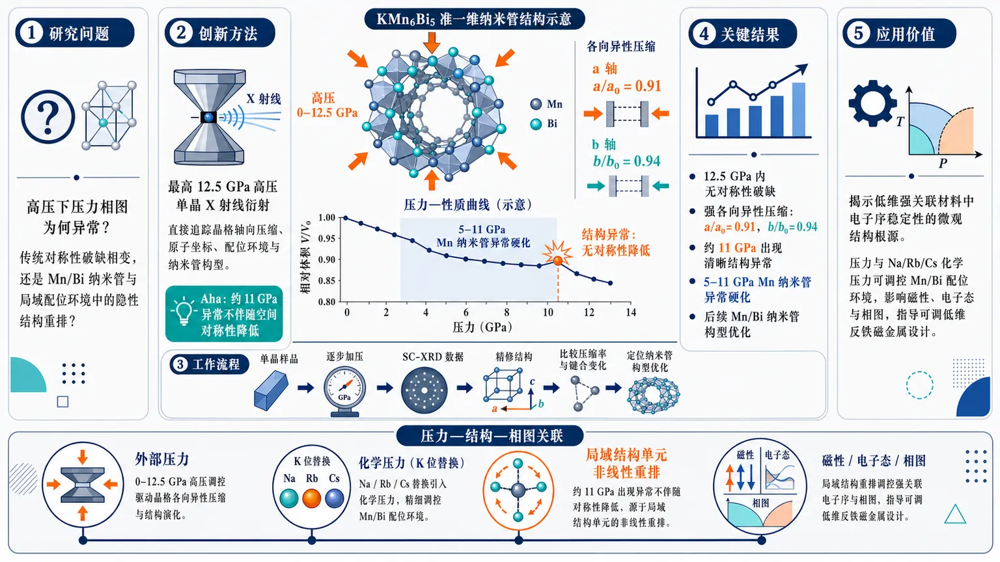
研究问题准一维反铁磁金属 KMn6Bi5 在高压下为何会出现压力相图异常：这种异常是传统对称性破缺相变，还是隐藏在 Mn/Bi 纳米管和局域配位环境中的微观结构重排？创新方法利用最高 12.5 GPa 的高压单晶 X 射线衍射，直接追踪晶格轴向压缩、原子配位环境、Mn 纳米管刚度和 Mn/Bi 纳米管构型；Aha 点是发现约 11 GPa 的显著结构异常并不伴随空间对称性降低，而是局域纳米管框架的隐性优化。工作流程输入 KMn6Bi5 单晶样品并逐步加压 → 采集不同压力下单晶 X 射线衍射数据 → 精修晶格常数与原子坐标 → 比较 a、b 轴压缩率和局域键合/配位变化 → 识别 5–11 GPa 的 Mn 纳米管异常硬化 → 定位约 11 GPa 的 Mn/Bi 纳米管构型优化 → 与压力—温度相图及 Na/Rb/Cs 化学压力效应对应。关键结果12.5 GPa 内未发生对称性破缺，但晶格压缩强烈各向异性：a/a0 = 0.91、b/b0 = 0.94；约 11 GPa 出现清晰结构异常；5–11 GPa 之间 Mn 纳米管异常硬化，之后 Mn/Bi 纳米管发生构型优化，表明压力响应来自局域结构单元的非线性重排。应用价值揭示低维强关联材料中电子序稳定性的微观结构根源：外部压力和 K 位 Na/Rb/Cs 替换产生的化学压力可通过调控 Mn/Bi 配位环境影响磁性、电子态和相图，为设计可调低维反铁磁金属与潜在功能量子材料提供结构调控路线。第一部分：核心概览 (Overview)
KMn6Bi5 的高压单晶 X 射线衍射揭示了准一维反铁磁金属在压力下的微观结构演化：12.5 GPa 内保持无对称性破缺，却在约 11 GPa 出现显著结构异常；a、b 轴压缩强烈各向异性，Mn 纳米管在 5–11 GPa 异常硬化，随后 Mn/Bi 纳米管构型优化。该结果把局域配位环境、化学压力与压力—温度相图中的电子序稳定性直接关联起来。
---
第二部分：结构化快速回顾
《Anomalous Structural Response of Quasi-One-Dimensional Antiferromagnetic Metal KMn6Bi5 under high pressure》（None，）
背景
KMn6Bi5 属于准一维反铁磁金属，低维结构、磁有序与电子态稳定性高度耦合。压力可连续调控晶格、键长和配位环境，是研究低维体系电子序稳定性的关键手段。
方法
采用高压单晶 X 射线衍射，研究 KMn6Bi5 在最高 12.5 GPa 下的晶体结构演化，重点追踪晶格常数、原子配位环境、Mn/Bi 纳米管构型及是否发生对称性破缺。
结果
12.5 GPa 下晶格表现出显著各向异性压缩：a/a0 = 0.91，b/b0 = 0.94。约 11 GPa 出现清晰结构异常，但未伴随对称性降低。Mn 纳米管在 5–11 GPa 之间异常硬化，随后 Mn/Bi 纳米管发生构型优化。
讨论
结构异常与既有 KMn6Bi5 压力—温度相图高度相关，也与 K 位被 Na、Rb、Cs 替代产生的化学压力效应相吻合，说明外部压力与离子半径调控可能通过相似的配位环境机制影响电子序。
局限
可用文本未提供完整实验细节，例如晶体尺寸、衍射波长、压力介质、精修参数、R 因子、误差棒、空间群演化表、键长角度完整数据、统计检验或电子输运/磁性同步测量结果。
结论
高压下 KMn6Bi5 的关键响应不是常规相变，而是无对称性破缺的局域结构重排。配位环境调制可能是低维强关联体系中电子序稳定性变化的微观结构根源。
---
第三部分：逐章节冷凝解析 (Section-by-Section Condensing)
可用论文内容仅包含题录、摘要与 arXiv 元信息；未提供 PDF 正文中的 Introduction、Methods、Results、Discussion、Conclusion 等原始章节标题与段落。因此以下严格限于可核验文本，不补造章节、不虚构数据、不编造引文。
---
Abstract
#### High-pressure single-crystal X-ray diffraction maps the atomic coordination environment
高压单晶 X 射线衍射被用于直接解析 KMn6Bi5 在压力下的晶体结构与原子配位环境演化，最高压力达到 12.5 GPa。关键贡献不只是测量晶格常数，而是追踪原子配位环境在高压下如何变化。原文明确写道：*"We report high-pressure single-crystal X-ray diffraction measurements on the quasi-one-dimensional (Q1D) antiferromagnetic metal KMn6Bi5 up to 12.5 GPa, revealing the detailed pressure evolution of its atomic coordination environment."*
#### KMn6Bi5 is positioned as a quasi-one-dimensional antiferromagnetic metal
研究对象被界定为 quasi-one-dimensional (Q1D) antiferromagnetic metal，即同时具有准一维晶体/电子结构特征、反铁磁有序倾向和金属性的体系。这一组合使其特别适合研究低维结构、磁性和电子输运之间的耦合。原文表述为：*"the quasi-one-dimensional (Q1D) antiferromagnetic metal KMn6Bi5"*。
#### The lattice compressibility is strongly anisotropic
压力导致晶格压缩显著不均匀，a 轴比 b 轴压缩更强。在 12.5 GPa 时，归一化晶格常数达到 a/a0 = 0.91 和 b/b0 = 0.94，对应 a 轴约 9% 收缩，b 轴约 6% 收缩。原文给出定量证据：*"the relative changes in the a and b lattice parameters reach a/a0=0.91 and b/b0 = 0.94 at 12.5 GPa"*。这一差异说明晶体内部不同方向的键合刚度和结构自由度明显不同。
#### A structural anomaly appears near 11 GPa without symmetry breaking
约 11 GPa 出现明显的结构异常，但没有发生对称性破缺。这意味着异常不是常规的晶体学相变，例如空间群降低、晶胞倍增或明显结构畸变，而更可能是局域键长、键角、配位多面体或纳米管构型的连续/交叉式重排。原文写道：*"a distinct structural anomaly emerges near 11 GPa without any symmetry-breaking."*
#### Mn nanotubes harden anomalously between 5 and 11 GPa
在 5–11 GPa 区间，Mn nanotubes 出现异常硬化。硬化在高压晶体学语境中通常意味着相关结构单元的可压缩性降低，即在继续加压时键长或几何尺度变化变小。原文给出的核心证据是：*"Detailed structural analysis further uncovers an anomalous hardening of the Mn nanotubes between 5 and 11 GPa"*。这一现象暗示 Mn 子晶格可能在中等压力区间进入更刚性的局域构型。
#### Mn/Bi nanotubes undergo configuration optimization around 11 GPa
在约 11 GPa 附近，Mn/Bi nanotubes 发生构型优化。这与前述结构异常同一压力尺度吻合，说明 11 GPa 不是单一晶格参数的偶然拐点，而是纳米管局域结构重新组织的压力窗口。原文证据为：*"followed by a configuration optimization of the Mn/Bi nanotubes around 11 GPa."*
#### Structural anomalies correlate with the pressure-temperature phase diagram
高压结构响应与已有 pressure-temperature phase diagram 密切相关，说明晶体结构自由度可能参与调控电子态或磁态边界。原文明确指出：*"These features correlate closely with the reported pressure-temperature phase diagram of KMn6Bi5"*。这种关联的学术意义在于：高压相图中的电子或磁异常可能不只是电子关联效应，也可能有局域配位环境变化作为结构基础。
#### External pressure and chemical pressure show comparable structural effects
高压结果与通过 K 位替换为 Na、Rb 或 Cs 产生的化学压力效应相比较，并表现出良好对应关系。原文写道：*"compare favorably with the chemical pressure effects induced by substituting K with Na, Rb, or Cs."* 这说明调节碱金属离子半径与施加外部压力可能以相似方式改变 Mn/Bi 框架的空间约束与配位环境。
#### Coordination environment modulation governs electronic order stability
核心机制被归结为配位环境调制对低维体系电子序稳定性的控制。原文总结为：*"Our findings provide key microscopic insights into how coordination environment modulation governs the stability of electronic orders in low-dimensional systems."* 这里的“electronic orders”可涵盖磁有序、电荷有序、超导或其他由电子自由度集体组织产生的相态；摘要中未给出具体是哪一种电子序被直接测量。
---
Bibliographic and metadata information
#### The work is an arXiv preprint in condensed matter materials science
题录显示该研究提交于 2026 年 7 月 3 日，arXiv 编号为 2607.03287，主分类为 cond-mat.mtrl-sci。相关分类还包括 Strongly Correlated Electrons 和 Superconductivity，说明该材料被放置在材料结构、强关联电子与潜在超导关联的交叉语境中。题录原文包括：*"arXiv:2607.03287 (cond-mat) [Submitted on 3 Jul 2026]"*，以及 *"Subjects: Materials Science (cond-mat.mtrl-sci) ; Strongly Correlated Electrons (cond-mat.str-el); Superconductivity (cond-mat.supr-con)"*。
#### The manuscript length and figure count indicate a compact experimental study
元信息标注为 18 pages, 4 figures。这通常对应一篇以实验结构数据为核心、图件集中展示晶格参数、结构精修、局域键长/角度与相图关联的短篇研究。可核验原文为：*"Comments: 18 pages, 4 figures"*。
#### The author list indicates multi-institutional experimental collaboration
署名包括 Hanming Ma, Qingxin Dong, Tong Shi, Xiaoli Ma, Zhongjin Wu, Shaoheng Ruan, Pengtao Yang, Zhaoming Tian, Jianping Sun, Yoshiya Uwatoko, Genfu Chen, Xiaohui Yu, Bosen Wang, Jinguang Cheng。高压单晶衍射、材料生长与强关联物性通常需要多团队协作，尤其是高压装置、同步辐射/衍射平台和晶体生长。题录原文给出完整署名：*"Authors: Hanming Ma , Qingxin Dong , Tong Shi , Xiaoli Ma , Zhongjin Wu , Shaoheng Ruan , Pengtao Yang , Zhaoming Tian , Jianping Sun , Yoshiya Uwatoko , Genfu Chen , Xiaohui Yu , Bosen Wang , Jinguang Cheng"*。
---
第四部分：深度理解与语言支持 (Understanding & Nuance)
1. 术语解析
#### Quasi-one-dimensional (Q1D)
准一维并不意味着材料只有一个空间维度，而是指晶体结构、电子能带、磁交换路径或输运行为在某一方向显著强于其他方向。对于 KMn6Bi5，这一术语暗示 Mn/Bi 框架可能形成链状或管状结构单元，使电子或磁相互作用具有方向选择性。英文中 “quasi-” 强调“近似”或“有效意义上的”，避免把真实三维晶体误解为数学上的一维系统。
#### Anisotropic compressibility
各向异性压缩性指不同晶轴在同一压力下收缩幅度不同。这里 a/a0 = 0.91、b/b0 = 0.94 表明 a 轴比 b 轴更容易被压缩。该概念比“晶胞体积减小”更具体，因为它揭示了晶格刚度的方向依赖性。对于低维材料，各向异性压缩常常与链、层、管状结构的力学稳定性有关。
#### Structural anomaly
结构异常不等同于“结构相变”。异常可以表现为晶格参数斜率突变、键长变化反常、局域多面体畸变、压缩率突变或构型重排。摘要特别强调 “without any symmetry-breaking”，说明约 11 GPa 的异常并未表现为空间群改变，而更可能是连续但非平凡的局域结构调整。
#### Symmetry-breaking
对称性破缺是凝聚态物理中的核心概念，指系统从较高对称性状态进入较低对称性状态。晶体学中可体现为空间群降低、旋转/镜面对称消失、晶胞扩展等。这里“无对称性破缺”意味着高压异常不能简单归类为传统结构相变，机制更细微。
#### Chemical pressure
化学压力指通过元素替换改变离子半径、键长、晶胞体积或局部应变，从而模拟外部压力效果。例如用 Na、Rb、Cs 替代 K，会因碱金属离子大小不同改变晶格内部空间。它与外部压力的区别在于：外部压力通常较连续且可逆，化学压力伴随无序、局域应变和电子环境变化。
---
2. 疑难查证
#### 为什么“没有对称性破缺”仍然可以有重要结构异常？
晶体结构可以在保持同一空间群的情况下发生显著内部重排。空间群描述的是对称操作，而不是所有键长、键角和局域配位细节。两个结构只要保留相同对称元素，就可以拥有不同的原子坐标、不同的键长比例和不同的局域刚度。
以 KMn6Bi5 为例，约 11 GPa 的异常可能表现为：
- 晶格参数随压力变化的斜率改变；
- Mn–Mn、Mn–Bi 或 Bi–Bi 距离出现非线性变化；
- Mn 纳米管从较软响应转为较硬响应；
- Mn/Bi 纳米管发生构型优化；
- 局域配位多面体畸变程度变化。
这些变化足以影响电子带宽、磁交换作用和费米面形状，却未必改变空间群。因此，“无对称性破缺的结构异常”在强关联低维体系中很重要，因为电子相变常常对微小局域结构变化极其敏感。
#### “Mn nanotubes hardening” 在物理上意味着什么？
“硬化”可理解为 Mn 相关结构单元对压力的响应变弱。若在低压区 Mn–Mn 距离随压力明显缩短，而在 5–11 GPa 区间缩短速度变慢，就可称为 Mn 纳米管硬化。其潜在含义包括：
- Mn–Mn 或 Mn–Bi 键合增强：结构单元更难继续压缩。
- 局域电子结构变化：压力改变 Mn 3d 与 Bi p 轨道杂化，进而改变键合刚度。
- 磁交换路径改变：Mn 网络刚度变化可能影响反铁磁交换耦合。
- 临界压力前的结构预重排：5–11 GPa 的硬化可能为 11 GPa 附近的构型优化做准备。
#### 为什么要比较外部压力和 Na/Rb/Cs 替换？
外部压力和化学替换都能改变晶格，但机制不同。若两者导致相似结构趋势，就说明关键控制变量可能不是压力本身，而是某些更本质的几何参数，例如 Mn/Bi 纳米管半径、Mn–Mn 距离、Mn–Bi 配位角或碱金属层对框架的空间约束。
K 被替换为：
- Na：通常离子半径更小，可能产生正化学压力；
- Rb/Cs：通常离子半径更大，可能产生负化学压力或晶格膨胀效应。
若这些替换趋势与外部压力下的结构演化“compare favorably”，说明 KMn6Bi5 的电子序稳定性可能由可调的局域配位几何主导，而非单纯由化学成分决定。
---
第五部分：创新评估与关联 (Synthesis & Novelty)
1. 创新性判断
#### 新颖性一：从宏观相图推进到微观配位环境
过去 2–5 年内，低维磁性金属与强关联材料研究常集中于压力诱导的输运异常、磁转变、超导迹象或相图构建。该研究的增量在于利用高压单晶 X 射线衍射直接解析 KMn6Bi5 的原子配位环境，把宏观压力—温度相图中的异常与具体结构单元联系起来。
#### 新颖性二：发现 11 GPa 附近无对称性破缺的结构异常
常规结构研究容易把“无空间群变化”视为“无结构相变”。这里的关键发现是：约 11 GPa 存在显著结构异常，但没有对称性破缺。这为解释低维强关联体系中的隐性结构调控提供了更细尺度的证据。
#### 新颖性三：识别 Mn 纳米管的异常硬化区间
5–11 GPa 的 Mn nanotubes anomalous hardening 是一个具体、可检验的结构现象。它指出 Mn 子结构并非随压力均匀压缩，而是存在刚度突变或压缩率异常。这种结果为后续理论计算提供了明确靶点：Mn–Mn/Mn–Bi 键合、轨道杂化、磁交换与能带结构应在该压力区间发生非线性演化。
#### 新颖性四：将外部压力与化学压力统一到局域结构框架
通过比较 K → Na/Rb/Cs 替换，该研究把外部压力和化学压力放入同一结构调控图景中。该思路有助于区分“压力引起的普适几何效应”和“元素替换带来的特异化学效应”。
#### 解决的前人问题
关键突破在于回答了一个前人仅凭输运或磁性测量难以解决的问题：KMn6Bi5 压力相图中的异常是否具有可识别的微观结构根源？
高压单晶衍射结果显示，答案指向 Mn/Bi 纳米管构型、Mn 纳米管硬化与配位环境调制，而不是简单的晶体对称性改变。
-
12
📊 含图深析
📄 摘要：用格林函数方法研究自旋三重态超导体/交替磁体/自旋三重态超导体结。电流—相位关系强烈依赖两侧三重态 d 矢量方向及交替磁体取向角；在给定取向角下旋转 d 矢量可触发 0-π 转变，临界电流的角度依赖可用于探测内禀 d 矢量。
💡 亮点：交替磁体约瑟夫森结把三重态 d 矢量方向映射到 0-π 转变和临界电流各向异性。该方案提供检测自旋三重态序参量取向的输运手段。
📖 展开分析 + 配图
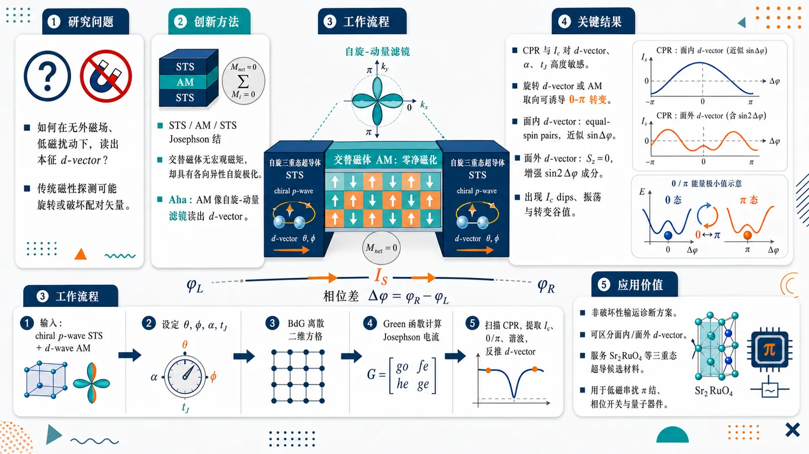
研究问题如何在不施加外磁场、不过度引入铁磁交换场或杂散场的情况下，探测自旋三重态超导体中本征 d-vector 的真实方向；核心矛盾是传统磁性探测手段本身可能旋转或破坏 d-vector，导致测到的不是材料自发形成的配对矢量。创新方法提出自旋三重态超导体/交替磁体/自旋三重态超导体（STS/AM/STS）Josephson 结：用零净宏观磁化的交替磁体替代铁磁层，避免磁场扰动；同时利用交替磁体动量依赖、d-wave 形式的各向异性自旋极化，使 Josephson 电流、CPR 和 0-π 转变对 d-vector 极角高度敏感。Aha 点是：没有宏观磁矩的 AM 仍能像“自旋-动量滤镜”一样读出 d-vector。工作流程输入为两侧 chiral p-wave 自旋三重态超导体和中间 d-wave 交替磁体；设定 d-vector 极角 θ、方位角 φ、AM 取向角 α、交替磁性强度 tJ；将连续 BdG Hamiltonian 离散到二维方格模型；用 Green 函数方法计算界面隧穿产生的 Josephson 电流；扫描相位差得到 CPR，再提取临界电流 Ic、0/π 基态、谐波成分与角度依赖图谱；最终由 CPR 形状、Ic dips 和 0-π 转变位置反推 d-vector 方向。关键结果CPR 和临界电流对 d-vector 方向、AM 取向角 α、交替磁性强度 tJ 均呈强响应。固定 α 时，旋转 d-vector 可诱导 0-π 转变；固定 d-vector 时，改变 AM 晶体取向也可诱导 0-π 转变。面内 d-vector 通常对应 equal-spin Cooper pairs 与近似 sinφ CPR；面外 d-vector 对应 Sz=0 三重态，增强双 Cooper pair 协同隧穿并出现明显 sin2φ 成分。Ic 关于 θ=0.5π 和 α=0.25π 具有对称性，随 tJ 增强出现振荡、压制和转变谷值。应用价值为 Sr₂RuO₄ 等自旋三重态超导候选材料提供一种非破坏性、输运型 d-vector 方向诊断方案，可区分面内与面外 d-vector，并为长期争议的三重态配对结构提供实验判据；同时，可调 0-π 转变可作为低磁串扰 Josephson π 结、相位开关和量子器件设计中的功能单元。第一部分：核心概览 (Overview)
该研究提出自旋三重态超导体/交替磁体/自旋三重态超导体（STS/AM/STS）Josephson 结作为探测本征 d-vector方向的非破坏性方案。核心贡献在于利用交替磁体零净宏观磁化避免外场或铁磁交换场对 d-vector 的扰动，同时利用各向异性自旋极化使 Josephson 电流对 d-vector 方向高度敏感。通过 Green 函数数值计算，揭示 CPR、临界电流、0-π 转变随 d-vector 极角、AM 取向角和交替磁性强度的系统变化，为 Sr₂RuO₄ 等争议性自旋三重态候选材料提供了可区分的输运诊断路径。
---
第二部分：结构化快速回顾
《Josephson effects in the spin-triplet superconductor/altermagnet/spin-triplet superconductor junctions: the detection of the intrinsic bfd-vector》（None，）
背景
自旋三重态超导体的配对态由 d-vector 描述，其方向和轨道部分直接关系到配对机制与拓扑量子态实现。Sr₂RuO₄ 的 d-vector 方向长期存在争议，既有实验支持沿 c 轴，也有实验支持位于 ab 面。传统探测方案常依赖外磁场或交换场，但小磁场即可改变 d-vector，导致本征方向难以判定。
方法
构建二维 STS/AM/STS Josephson 结，左右 STS 取争议性强的 chiral p-wave 配对 (f(k)=kₓ₊ᵢₖ_y)，中间区域为 d-wave altermagnet。采用二维方格离散模型与 Green’s function method 计算 Josephson 电流，系统扫描 d-vector 极角 (θ)、AM 取向角 (α)、交替磁性强度 (t_J)。
结果
CPR 对 d-vector 方向和 AM 取向角高度敏感。在固定 (α) 下，旋转 d-vector 可诱导 0-π 转变；在固定 d-vector 下，改变 AM 取向角也可诱导 0-π 转变。临界电流关于 (θ=0.5π) 和 (α=0.25π) 表现对称性，并随 (t_J) 增强出现振荡和转变特征。
讨论
AM 的零净宏观磁化避免外磁场或铁磁 stray field 对本征 d-vector 的破坏；AM 的各向异性自旋极化提供额外可调自由度 (α)。相较铁磁 Josephson 结，STS/AM/STS 同时具备非破坏性探测和可调 0-π 转变优势。
局限
计算集中于理想二维模型、洁净界面、平行左右 d-vector、固定 chiral p-wave 轨道结构；未包含无序、界面粗糙、有限温度、真实材料能带复杂性和实验噪声。数值参数如 (Nₓ₌N_y=10)、(Δ₀₌₀.01)、(μ=2) 属模型设定。
结论
STS/AM/STS Josephson 结能够通过 CPR 和临界电流的角度依赖性有效识别本征 d-vector 方向，并可通过 d-vector 旋转或 AM 取向调控实现 0-π 转变，具有自旋三重态超导诊断和量子器件设计潜力。
---
第三部分：逐章节冷凝解析 (Section-by-Section Condensing)
Abstract
Altermagnetic Josephson junctions enable d-vector-sensitive transport
研究对象是 spin-triplet superconductor/altermagnet/spin-triplet superconductor junctions，方法为 Green’s function method。核心物理量是 Josephson current-phase difference relationship / CPR，其对 d-vector direction 与 altermagnet orientation angle 高度敏感。摘要明确给出：*"We study the Josephson effects in the spin-triplet superconductor/altermagnet/spin-triplet superconductor junctions using the Green’s function method."* 以及 *"the current-phase difference relationships in the junctions strongly depend on the direction of the d-vectors in the spin-triplet superconductors and the orientation angle of the altermagnet."*
Rotating the d-vector induces 0-π transition
在固定 AM 取向角 (α) 时，旋转 d-vector 可实现 0-π transition，说明 Josephson 基态可由超导自旋结构而非外磁场切换。摘要中的直接证据为：*"For the given orientation angle, the 0-π transition can be obtained when the d-vector is rotated."*
Critical current encodes d-vector orientation
研究系统考察 critical current 随 d-vector 方向、AM 取向角和交替磁性强度变化的行为，目标是提取可区分的 d-vector 指纹。摘要写明：*"The variations of the critical current of the junctions with the direction of the d-vector, the orientation angle and the strength of altermagnetism are systematically investigated."* 其诊断意义为：*"These Josephson effects can provide the distinguishable information about the direction of the d-vector."*
Zero-net altermagnetism avoids magnetic perturbation
相较既有探测方案，AM 不需要外场或铁磁交换场即可产生自旋敏感输运响应，因而更适合探测本征 d-vector。摘要直接指出：*"the proposed altermagnetic Josephson junctions can effectively avoid the negative influence of the magnetic field on the d-vector and can serve as a feasible scheme for the detection of the intrinsic d-vector."*
0-π transition carries quantum-device relevance
除基础探测意义外，0-π 转变可作为量子器件中的可控相位开关或 (π)-junction 单元。摘要强调：*"The obtained 0-π transition in the junctions can also have potential applications in the design of quantum devices."*
---
I Introduction
Sr₂RuO₄ remains the central candidate for spin-triplet superconductivity
Sr₂RuO₄ 被定位为最有前景的 spin-triplet superconductor (STS) 候选材料，过去约三十年持续受到关注，并在近期重新成为凝聚态物理热点。相关原文为：*"As the most promising candidate of the spin-triplet superconductor (STS), Sr₂RuO₄ has continuously attracted tremendous interest in the past thirty years and has once again become a hot topic in condensed matter physics recently."*
The d-vector determines both spin orientation and orbital structure
与 singlet pairing 不同，STS 的配对波函数由 d-vector 描述，d-vector 同时包含自旋方向信息与轨道部分。这一点由原文直接表述：*"Different from its singlet counterpart, the pairing wave function of STS can be described by the so-called d-vector which includes both orientation and the orbital part."*
Determining the d-vector is essential for pairing mechanism and topology
确定 d-vector 不只是材料表征问题，还关系到自旋三重态配对机制与拓扑量子态构建。原文强调：*"The determination of the d-vector not only can help to reveal the physical mechanism of the spin-triplet pairing in STS but also can lay the foundation for the realization of the topological quantum states."*
Sr₂RuO₄ orbital pairing symmetry remains controversial
Sr₂RuO₄ 的 d-vector 轨道部分存在尖锐争议。早期 muon spin-relaxation 与 Knight-shift 支持 time-reversal breaking chiral p-wave pairing；后续 spin-lattice relaxation、thermal conductivity、NMR 与 Josephson critical current 实验则挑战 chiral p-wave。原文给出：*"For Sr₂RuO₄, its d-vector with the time-reversal breaking p-wave pairing has been proposed based on the muon spin-relaxation measurements."*；*"The Knight-shift measurements support the above conclusion and demonstrate that the chiral p-wave pairing is consistent with the experimental results."*；但相反证据为：*"the subsequent measurements of the spin-lattice relaxation rate and the thermal conductivity measurements show that the orbital part of the d-vector exhibits the highly anisotropic structure and the vertical line nodes, which excludes the possibility of the p-wave pairing."* 以及 *"The recent nuclear magnetic resonance experiments and the observed magnetic-field dependence of the Josephson critical current also contradict the chiral p-wave state in the superconducting Sr₂RuO₄."*
The d-vector direction is also unresolved
d-vector 方向存在同样严重的不确定性。polarized-neutron scattering 与 phase-sensitive Josephson measurements 支持沿 crystallographic c-axis，但 Ref. 18 排除 c-axis；spin susceptibility 降低又与 helical p-wave 且 d-vector 位于 ab-plane 一致。原文证据包括：*"The polarized-neutron scattering studies and the phase-sensitive measurements in Josephson junctions indicate that the direction of the d-vector is along the crystallographic c-axis"*；*"the experiment in Ref.[18,] rules out the d-vector along the c-axis."*；以及 *"the reduction of the spin susceptibility observed in experiments is consistent with the time-reversal symmetric helical p-wave pairing with the d-vector in the crystallographic ab-plane."*
Existing d-vector probes often rely on magnetic or exchange fields
大量实验和理论方案通过外场、交换场或铁磁结构增强对 triplet pairing 的敏感性，包括 normal metal/ferromagnet/STS、s-wave superconductor/STS Josephson junction、normal metal/Sr₂RuO₄ tunneling spectroscopy 和 STS/ferromagnet inverse proximity effects。原文概括为：*"So far, most of the experiments and theoretical researches on the determination of the d-vector require the assistance of the external field or the exchange field in order to obtain the triplet pairing sensitive results."*
Magnetic fields can alter or destroy the intrinsic d-vector
外场辅助探测的根本问题在于 d-vector 本身可被小场改变，甚至 RF pulses 可瞬时破坏超导。原文明确指出：*"theoretical and experimental studies indicate that the direction of the d-vector can be changed by a small field."* 更强烈的警示为：*"the authors in Ref.[14,] recently demonstrated the instantaneous destruction of superconductivity by the RF pulses in their early experiments."* 因而本征 d-vector 探测仍开放：*"The detection of the direction of the intrinsic d-vector is still an open question in condensed matter physics."*
A non-destructive d-vector-sensitive scheme is urgently needed
研究动机集中在“非破坏性但对 d-vector 敏感”的检测架构。原文以直接需求句给出：*"A non-destructive but d-vector sensitive detection scheme is urgent."*
Altermagnets provide zero-net magnetization and anisotropic spin polarization
AM 的两个关键性质正好解决传统方案痛点：zero-net macroscopic magnetization 避免磁场扰动，anisotropic spin-polarization 保留自旋选择性并提供额外取向自由度。引言中给出：*"AM possesses the zero-net macroscopic magnetization, which effectively avoids the negative influence on the intrinsic d-vector."* 以及 *"AM has anisotropic spin-polarization, which not only ensures that the Josephson effects in the STS/AM/STS junctions are still sensitive to the direction of the d-vector but also provides an extra degree of freedom for the investigation of the Josephson effects."*
STS/AM/STS junctions are proposed as intrinsic d-vector detectors
核心方案为 STS/AM/STS Josephson junctions，用于探测 STS 中本征 d-vector。原文表述为：*"In this paper, we propose the STS/AM/STS Josephson junctions as a scheme to present the detection of the intrinsic d-vector in STS."*
Chiral p-wave Sr₂RuO₄ is used as a demonstrative example
尽管 chiral p-wave 存在争议，计算选择它作为检验方案有效性的代表性模型。原文写道：*"For STS, we adopt the highly controversial chiral p-wave state as an example to demonstrate the effectiveness of our scheme."*
Green’s function calculations reveal CPR signatures and 0-π transition
数值计算基于 Green’s function method，可得到 d-vector 方向分辨的 CPR，并展示通过旋转 d-vector 或改变 AM 取向实现 0-π 转变。原文给出：*"Through numerical calculations based on the Green’s function method, the d-vector direction-resolved CPRs can be achieved."*；*"The 0-π transition can happen when the d-vector is rotated."*；*"For a fixed direction of the d-vector, the CPRs depend on the crystallographic orientation of AM. The 0-π transition can also be realized."*
Physical explanation spans Andreev reflection, anisotropic Fermi surfaces, and ferromagnetic comparison
数值结果不仅被展示，还通过 Andreev reflection process、电子/空穴在各向异性 Fermi surface 上的行为以及与铁磁 Josephson 结比较来解释。原文为：*"A comprehensive physical explanation of the numerical results is provided, which includes perspectives such as the Andreev reflection process, the behavior of electrons and holes on anisotropic Fermi surfaces, and comparisons with the ferromagnetic Josephson junctions."*
---
II Model and Formulation
The junction geometry is two-dimensional with current along x
模型为二维 (xy)-plane 中的 STS/AM/STS Josephson junctions，Josephson 电流沿 (x)-axis 流动，两个界面位于 (x=0) 与 (x=L)，AM 区间为 (0<x<L)。原文写明：*"We consider the two-dimensional STS/AM/STS Josephson junctions in the xy-plane as shown in Fig. 1."*；*"The Josephson current flows along the x-axis and the two interfaces are located at x=0 and x=L."*；*"The length of AM is L, which is confined to the region of 0<x<L."*
The altermagnet is modeled as d-wave altermagnetism with orientation angle α
AM 采用 d-wave altermagnetism。取向角 (α) 定义为晶轴与界面法线之间夹角；(α=0) 对应纯 (dₓ^₂₋y^₂)-wave AM，(α=π/4) 对应纯 (dₓy)-wave AM。原文证据为：*"For AM, the d-wave altermagnetism is considered."*；*"Its orientation angle α is defined as the angle between the crystalline axis ... and the normal direction of the interface."*；*"For α=0, AM is of the pure dₓ²−y²-wave altermagnetism while for α=π/4, it is of the pure dₓy-wave altermagnetism."*
The d-vector is parameterized by polar and azimuthal angles
左右 STS 的 d-vector 写为
[
dL₍R₎=Δ₀ eⁱǎrphⁱL₍R₎ f(k)nL₍R₎
]
其中 (nL₍R₎=(sinθL₍R₎o̧sφL₍R₎,sinθL₍R₎sinφL₍R₎,o̧sθL₍R₎))。(Δ₀) 是 gap magnitude，(ǎrphiL₍R₎) 是 superconducting phase，(θ) 与 (φ) 分别是 d-vector 的 polar angle 与 azimuthal angle。原文直接给出：*"The d-vector of the left (right) semi-infinite STS is denoted by ... with the unit vector ..."*；*"Here, Δ₀ is the gap magnitude, φL(R) is the superconducting phase, θL(R) and ϕL(R) are the polar angle and the azimuthal angle of the d-vector, respectively."*
The orbital state is chiral p-wave (kₓ₊ᵢₖ_y)
为具体化 Sr₂RuO₄ 的争议态，采用 chiral p-wave state：
[
f(k)=kₓ₊ᵢₖ_y.
]
原文为：*"For definiteness, we choose the widely discussed state of Sr₂RuO₄, i.e., the chiral p-wave state with f(k)=kx+iky, as an example to provide the Josephson information for the direction of the d-vector."*
The left and right d-vectors are taken parallel
由于左右两侧均视为 Sr₂RuO₄，模型取 (d_Lparallel d_R)，即 (θ_L=θ_R=θ)、(φ_L=φ_R=φ)。原文写道：*"Since both are Sr₂RuO₄, we take dL∥dR."*；*"In other words, we have θL=θR=θ and ϕL=ϕR=ϕ."*
The full Hamiltonian consists of left STS, AM, and right STS
总 Hamiltonian 分解为
[
H=H_L+HAM+H_R.
]
原文为：*"The Hamiltonian of the junctions can be written as H=HL+HAM+HR, where HL, HAM and HR represent the Hamiltonians of the left STS, the AM and the right STS, respectively."*
The STS BdG Hamiltonian includes triplet pairing ((σḑot d)iσ_y)
左右 STS 使用 (4×4) Bogoliubov-de Gennes Hamiltonian，正常项为
[
hL₍R₎(k)=t₀ₖ²⁻μL₍R₎
]
配对项为
[
Δ(k)=(boldsymbolσḑotdL₍R₎)iσ_y.
]
原文直接写出：*"the 4×4 Bogoliubov-de Gennes (BdG) Hamiltonian is given by..."*；*"Here, hL(R)(k)=t0k²−μL(R) ... and Δ(k)=(σ·dL(R))iσy with the Pauli matrix σ."*
The AM Hamiltonian contains spin-dependent d-wave momentum anisotropy
AM 的正常态 Hamiltonian 为
[
hAM(k)=[t₀₍ₖₓ²⁺k_y²⁾⁻μ]σ₀₊ₜ_J[(kₓ²⁻k_y²⁾o̧s2α+2kₓₖ_ysin2α]σ_z.
]
其中 (t_J) 表征 altermagnetism strength，Néel vector 沿 (z)-axis。原文为：*"Here hAM(k)=[t0(kx²+ky²)−μ]σ0+tJ[(kx²−ky²)cos2α+2kxky sin2α]σz."*；*"The parameter tJ characterizes the strength of the altermagnetism in AM and μ is the chemical potential in AM."*；*"The Néel vector in AM is along the z-axis."*
The continuum model is discretized on a two-dimensional square lattice
为计算 Josephson 电流，连续 Hamiltonian 被离散化为二维 square lattice；格常数 (a)，AM 长宽为 (L=(Nₓ₋₁₎ₐ)、(W=(N_y-1)a)。原文为：*"We discretize the above continuum Hamiltonians on a two-dimensional square lattice as shown in Fig. 2 to calculate the Josephson current."*；*"The lattice constant is taken as a."*；*"The length and the width of the AM region can be expressed as L=(Nx−1)a and W=(Ny−1)a, respectively."*
AM discretization includes nearest and next-nearest hoppings
AM 离散 Hamiltonian 包含 (x)、(y) 最近邻以及 (x+y)、(x-y) 次近邻项，用于表达 (kₓₖ_ysin2α) 混合项。原文写出：*"The discrete Hamiltonian for the middle AM can be given by..."*，并说明：*"i+δx+δy and i+δx−δy represent the next-nearest-neighbor sites of the ith site."*
Interface tunneling is modeled by hopping matrix (ḩeck T)
左右 STS 与 AM 之间通过 tunneling Hamiltonian (H_T) 耦合，hopping matrix 为 (ḩeck T=(t,t,-t^*,-t^*))，其中 (t) 为实数。原文为：*"The tunneling Hamiltonian describing hopping between the left STS and AM and between the right STS and AM can be written as..."*；*"with the hopping matrix Ť=(t,t,−t∗,−t∗), where t is a real number."*
Josephson current is computed from the particle-number time derivative
左 STS 粒子数算符 (N) 定义后，Josephson 电流由 (I=ełangle dN/dtångle) 给出，并通过 lesser Green function (G^<(E)) 表达：
[
I=-frace2πint dE,Tr[Γ_zḩeck T G^<(E)+H.c.]
]
其中 (Γ_z=σ_zøtimes 1₂×₂)。原文为：*"Using the Green’s function method, the Josephson current can be expressed as I=e⟨dN/dt⟩=−e/2π∫dE Tr[Γz Ť G<(E)+H.c.]."*；*"with Γz=σz⊗1₂×₂."*
---
III Numerical results and discussions
Zero-net AM magnetization is central to the superconducting heterostructure design
数值结果讨论前，AM 的 zero-net macroscopic magnetization 被强调为相较铁磁体的关键优势。它可以避免 magnetism-superconductivity competition，并消除 stray field 对 d-vector 的潜在影响。原文为：*"Before discussing the numerical results, we emphasize that AMs possess zero-net macroscopic magnetization."*；*"This is an important advantage over ferromagnets in terms of constructing superconducting heterostructures."*；*"The zero-net macroscopic magnetization can effectively avoid the competition between magnetism and superconductivity and the negative influence of possible stray field on the d-vector."*
Numerical parameters are fixed to a minimal dimensionless model
数值设定包括：(t₀₌₁) 为能量单位，(μ_L=μ_R=μ=2)，(Nₓ₌N_y=10)，(a=1)，界面 hopping (t=1)，(Δ₀₌₀.01)，电流单位为 (eΔ₀/2π)。原文列明：*"In our calculations, we take t0=1 as the energy unit and μL=μR=μ=2."*；*"For the lattice parameters, we have Nx=Ny=10 and a=1."*；*"The magnitude of the hopping between the left (right) STS and AM is taken as t=1."*；*"The unit of the Josephson current is taken as eΔ0/2π with Δ0=0.01."*
Azimuthal angle is fixed because of spin-rotation symmetry
由于结关于 (z)-axis 具有 spin rotation symmetry，Josephson current 与 d-vector 方位角 (φ) 无关，因此设 (φ=0.5π)。原文为：*"Due to the spin rotation symmetry about the z-axis obeyed by our junctions, the Josephson current is irrespective of the azimuthal angle ϕ and we will choose ϕ=0.5π for definiteness."*
Numerical discussion is organized around CPR and critical current
数值结果分为 CPR 与 critical current 两部分，以展示 d-vector 方向探测能力。原文为：*"Next, we discuss the numerical results of the Josephson effect in two subsections, i.e., the CPRs and the critical current, to demonstrate the detection of the direction of the d-vector."*
---
III.1 CPRs
CPRs strongly depend on d-vector polar angle at fixed AM orientation
在 (t_J=0.5) 下，Fig. 3 比较不同 (α) 与 (θ) 的 CPR。固定 AM 取向时，CPR 对 d-vector 方向高度敏感。原文说明：*"We present the results of CPRs for different orientation angles with fixed altermagnetism strength tJ=0.5 in Fig. 3."*；*"For a given orientation angle, the CPRs are strongly dependent on the direction of the d-vector."*
The scheme distinguishes in-plane and out-of-plane d-vectors
d-vector 方向争议主要集中在 in-plane 与 out-of-plane。CPR 能提供清晰区分信号。原文为：*"In previous studies, the controversy over the direction of the d-vector centers on whether it is in-plane or out-of-plane."*；*"Our results can provide clear information in clarifying this point."*
For (α=0) and (0.125π), out-of-plane gives π state and in-plane gives 0 state
当 (α=0) 或 (α=0.125π)，out-of-plane d-vector (θ=0) 对应 π state，in-plane d-vector (θ=0.5π) 对应 0 state。原文直接写明：*"For α=0 and α=0.125π, the altermagnetic Josephson junction is in the π state for the out-of-plane d-vector with θ=0 while it is in the 0 state for the in-plane d-vector with θ=0.5π."*
Rotating the d-vector produces 0-π transition
d-vector 从 in-plane 转向 out-of-plane 时发生 0-π 转变。原文为：*"The 0-π transition happens when the d-vector is rotated from the in-plane direction to the out-of-plane direction."*
For (α=0.25π), 0-π transition disappears but d-vector sensitivity remains
当 AM 取向角增大至 (α=0.25π)，0-π 转变消失，但 CPR 对 d-vector 方向的强依赖仍存在。原文为：*"For a larger value of the orientation angle with α=0.25π, the 0-π transition disappears."*；*"However, the strong dependence of CPRs on the direction of the d-vector still survives in this situation."*
AM junctions outperform ferromagnetic junctions in preserving intrinsic d-vector
铁磁 Josephson 结构也可出现 spin-triplet 相关 0-π 转变，但 AM 的零净宏观磁化避免影响本征 d-vector，并减少 quantum devices 中的 magnetic cross-talk。原文为：*"The 0-π transition is also predicted in the ferromagnetic Josephson structure with the spin-triplet pairing."*；*"the zero-net macroscopic magnetization in AM not only avoids influencing the intrinsic d-vector in STS but also effectively prevents the magnetic cross-talk in the design of quantum devices."*
Anisotropic AM spin polarization introduces a new control angle (α)
不同于铁磁体的 isotropic spin-polarization，AM 的 anisotropic spin-polarization 提供取向角 (α)，可用于实现 0-π 转变。原文为：*"distinct from the isotropic spin-polarization in ferromagnet, the spin-polarization in AM is anisotropic as shown in Fig. 1 and it provides a new degree of freedom, i.e., the orientation angle α, for the achievement of the 0-π transition."*
The CPR is symmetric under (θi̊ghtarrowπ-θ)
对于固定 AM 取向角，Josephson current 满足
[
I(θ,φ,α,ǎrphi)=I(π-θ,φ,α,ǎrphi).
]
因此 Fig. 3 只展示 (0łeqθłeq0.5π)。原文为：*"For a given orientation angle of AM, the CPRs in our junctions satisfy the following symmetry relation I(θ,ϕ,α,φ)=I(π−θ,ϕ,α,φ)."*；*"That’s why we don’t show the CPRs for 0.5π<θ≤π in Fig. 3."*
The (θi̊ghtarrowπ-θ) symmetry follows from a gauge transformation
通过 (U₁₍η)) 且 (η=π/2)，AM Hamiltonian 不变，STS Hamiltonian 中 ((θ,φ)i̊ghtarrow(π-θ,π+φ))。由于 (U₁₍π/2)) 是 unitary transformation，Josephson current invariant，再结合 current 与 azimuthal angle 无关得到 Eq. (15)。原文为：*"Under the operation U1(π/2), the Hamiltonian of AM in Eq.(6) remains unchanged while the Hamiltonian of the left (right) STS becomes..."*；*"Since the operation U1(π/2) is a unitary transformation, the Josephson current is invariant."*
The CPR is periodic under (αi̊ghtarrowα+π/2)
固定 d-vector 时，CPR 满足
[
I(α,ǎrphi)=I(fracπ2+α,ǎrphi).
]
该关系通过 (y)-axis 上的 (π) spin rotation (R_y(π)) 推导。原文为：*"For the given polar and azimuthal angles of the d-vector, we also have the following symmetry relations I(α,φ)=I(π/2+α,φ)."*；*"For the relation in Eq.(17), we introduce the spin-rotation Ry(π) about the y-axis with the angle π."*
The CPR is symmetric under (αi̊ghtarrowπ-α)
另一个对称性为
[
I(α,ǎrphi)=I(π-α,ǎrphi).
]
其来源是联合操作 (X=TMyz)，其中 (Myz) 交换左右 STS 并反转 Josephson current，随后 time-reversal 将电流方向变回。原文为：*"For the relation in Eq.(18), we introduce the joint operation X=TMyz, where Myz is the mirror reflection about the yz-plane and T is the time-reversal operation."*；*"The mirror operation Myz exchanges the left STS and the right STS and the Josephson current is reversed. However, the subsequent time-reversal operation will change the reversed Josephson current back to the original direction."*
Only (0łeqαłeq0.25π) needs independent consideration
由于 Eqs. (15), (17), (18) 的对称性，CPR 在 (0.25π<α<2π) 的行为可由对称关系得到。原文为：*"Because of the establishments of Eqs.(15),(17) and (18), we only consider CPRs for the orientation angle 0≤α≤0.25π in Fig. 5."*；*"The CPRs for 0.25π<α<2π can be obtained from the symmetry relations in Eqs.(15),(17) and (18)."*
Orientation-angle dependence is peculiar to altermagnetic junctions
CPR 对 (α) 的依赖是 AM junction 的特有输运特征，铁磁体由于 isotropic spin-polarization 不具备该自由度。原文为：*"It is worth emphasizing that the dependence of CPRs on the orientation angle α is a significant transport feature peculiar to the altermagnetic junctions."*；*"For the STS/ferromagnet/STS junctions, this feature is not expected due to the isotropic spin-polarization in ferromagnets."*
---
III.2 Critical current
Critical current is defined as the maximum absolute Josephson current
临界电流定义为
[
I_c=max(|I|).
]
原文直接给出：*"The critical current Ic is defined as Ic=max(|I|)."*
(I_c(θ)) is symmetric about (θ=0.5π)
Fig. 4 显示不同 (t_J) 与 (α) 下 (I_c) 随 (θ) 变化，均关于 (θ=0.5π) 对称，与 Eq. (15) 一致。原文为：*"First, the critical current is symmetric about the polar angle θ=0.5π for various situations, which is consistent with the symmetry relation in Eq.(15)."*
Critical current strongly depends on d-vector direction
在给定 (t_J) 和 (α) 下，(I_c) 对 (θ) 强依赖，因此可作为 d-vector 方向信息载体。原文为：*"Second, the critical current is strongly dependent on the polar angle, i.e., the direction of the d-vector, for each situation with the given values of tJ and α."*；*"In other words, the critical current can provide effective information of the direction about the d-vector."*
Small altermagnetism (t_J=0.1) gives smooth curves without 0-π transition
当 (t_J=0.1)，不同 (α) 下 (I_c(θ)) 曲线平滑，表示无 0-π 转变。原文为：*"For the small altermagnetism strength with tJ=0.1 as shown in Fig. 4(a), the curves of Ic are smooth for different orientation angles, which means that there is no 0-π transition in this situation."*
At (t_J=0.1), rotating AM from (dₓ^₂₋y^₂) to (dₓy) enhances (I_c) except near in-plane d-vector
当 (α) 从 0 增至 (0.25π)，即 AM 从 (dₓ^₂₋y^₂)-wave 变为 (dₓy)-wave，除 (θapprox0.5π) 附近小角区间外，临界电流显著增强。原文为：*"as AM is changed from the dₓ²−y²-wave AM with α=0 to the dxy-wave AM with α=0.25π, the critical current is significantly increased except for a small angle range near θ=0.5π."*
Moderate (t_J=0.3) or (0.5) produces dips indicating 0-π transitions
当 (t_J=0.3) 或 (t_J=0.5)，临界电流曲线出现 dips，表明发生 0-π 转变。原文为：*"For the moderate altermagnetism strength such as tJ=0.3 in Fig. 4(b) or tJ=0.5 in Fig. 4(c), dips appear in the critical current curves, which implies that the 0-π transitions can happen in this situation."*
The orientation window for 0-π transition depends on (t_J)
当 (t_J=0.3)，0-π 转变发生在 (α) 不接近 0 的区域；当 (t_J=0.5)，0-π 转变发生在 (α) 不接近 (0.25π) 的区域。原文为：*"The 0-π transitions happen when α is not near 0 for tJ=0.3 while they happen when α is not near 0.25π for tJ=0.5."*
Large (t_J=0.7) enables 0-π transition for all AM orientations
当 (t_J=0.7)，所有 (α) 下均可出现 0-π 转变。原文为：*"However, for the larger altermagnetism strength (e.g., tJ=0.7), the 0-π transition can happen for all orientation angles as shown in Fig. 4(d)."*
At (t_J=0.7), (α=0.25π), the transition point is (θ₀approx0.92π)
对于 (α=0.25π)，蓝线最小值位于 (θ₀approx0.92π)；(θ<θ₀) 为 0 state，(θ>θ₀) 为 π state。原文为：*"For example, for α=0.25π, the minimum point of the blue line is at θ0≈0.92π."*；*"For θ<θ0, the junctions are in the 0 state and for θ>θ0, the junctions are in the π state."*
General non-in-plane and non-out-of-plane d-vectors can also be diagnosed
对于一般 d-vector，Fig. 4 仍提供方向信息。例如 (t_J=0.5)、(α=0.125π) 时，0-π 转变发生在 (θapprox0.15π)，(θ<0.15π) 为 π state，(θ>0.15π) 为 0 state。原文为：*"For a general d-vector that is neither in-plane nor out-of-plane, our results can also provide helpful information about its orientation as shown in Fig. 4."*；*"the 0-π transition occurs at θ≈0.15π for α=0.125π in Fig. 4(c), which indicates that the altermagnetic Josephson junction is in the π state for the polar angle θ<0.15π while it is in the 0 state for θ>0.15π."*
(I_c(α)) is symmetric about (α=0.25π)
Fig. 5 展示 (I_c) 随 AM 取向角 (α) 的变化，并满足关于 (α=0.25π) 的对称性。原文为：*"The critical current is symmetric about α=0.25π as shown in Fig. 5 due to the relation I(α)=I(π/2−α), which can be immediately deduced from Eqs.(17) and (18)."*
At (t_J=0.1), (I_c(α)) is smooth and d-vector contrast is clear
小 (t_J=0.1) 时，因无 0-π 转变，(I_c(α)) 曲线平滑；随着 d-vector 极角从 (θ=0.5π) 减小到 (θ=0)，临界电流对 (α) 的依赖增强。原文为：*"For the small altermagnetism strength with tJ=0.1, the curves of the critical current are smooth as shown in Fig. 5(a) because of the absence of the 0-π transition in this situation."*；*"as the polar angle of the d-vector is decreased from θ=0.5π to θ=0, the dependence of the critical current on the orientation angle becomes stronger."*
In-plane d-vector gives weak (α)-dependence, out-of-plane gives strong (α)-dependence
当 (θ=0.5π) 即 d-vector 沿 in-plane direction，临界电流随 (α) 几乎不变；out-of-plane 情形对 (α) 强依赖。原文存在一个明显笔误，第二个 (θ=0.5π) 应对应 out-of-plane (θ=0)，但语义明确：*"For θ=0.5π, i.e., d-vector along the in-plane direction, the critical current remains almost constant as α is varied while for θ=0.5π, i.e., d-vector along the out-of-plane direction, the critical current exhibits a strong dependence on α."*
Larger (t_J) produces oscillatory (I_c(α)) due to 0-π transitions
当 (t_J) 增大，临界电流随 (α) 表现出振荡，源自 0-π 转变；在 (t_J=0.7) 时，d-vector 极角越小，振荡越强。原文为：*"For larger altermagnetism strengthes, the critical current exhibits the oscillation behavior with the change of the orientation angle as shown in Figs. 5(b)-(d) due to the occurrence of the 0-π transition."*；*"When tJ=0.7, the oscillation of the critical current becomes more intense as the polar angle of the d-vector decreases."*
(I_c(t_J)) is suppressed and oscillatory for (α=0) and (0.125π)
Fig. 6 中，对于 (α=0) 或 (α=0.125π)，随着 (t_J) 增强，临界电流明显被压制，并因 0-π 转变出现振荡。原文为：*"For the orientation angle α=0 or α=0.125π, the critical current is obviously suppressed as the altermagnetism strength tJ is enhanced as shown in Figs. 6(a) and (b)."*；*"The obvious oscillation can also be observed due to the formation of the 0-π transition."*
For (α=0.25π), (I_c(t_J)) may decrease then increase
当 (α=0.25π)，(θ=0) 与 (θ=0.3π) 的 (I_c) 随 (t_J) 先下降后上升；(θ=0.5π) 几乎平坦；不规则振荡较弱。原文为：*"However, for α=0.25π, the curves of the critical current undergo a process from decreasing to increasing for θ=0 and θ=0.3π and the curve for θ=0.5π is almost flat."*；*"The irregular oscillations in Figs. 6(a) and (b) become weaker for α=0.25π in Fig. 6(c)."*
Across studied cases, increasing (θ) from 0 to (0.5π) increases (I_c)
对于 Figs. 5 和 6 中考察的 polar angles，(θ) 从 0 增大至 (0.5π) 时，临界电流总是增加。原文为：*"In addition, for the polar angles considered in Figs. 5 and 6, the critical current is always increased when the polar angle is raised from 0 to 0.5π."*
---
IV Physical Explanation
In-plane d-vector corresponds to equal-spin triplet pairs
当 (θ=0.5π)，即 d-vector 沿 in-plane direction，STS 中 Cooper pairs 处于 (S=1)、(S_z=±1) 的 equal-spin pairing 状态。原文为：*"For θ=0.5π, i.e., the d-vector being along the in-plane direction, the Cooper pairs in STSs are in the state with S=1 and Sz=±1."*
Equal-spin pairing aligns with AM spin quantization and gives sinusoidal CPR
AM 的 Néel vector 沿 (z)-axis，因此 AM 中电子自旋与 STS equal-spin Cooper pairs 的 (S_z) 投影平行；单个 Cooper pair tunneling 主导，CPR 呈 (sinǎrphi) 形式。原文为：*"Since the Néel vector in the AM is along the z-axis, the spins of electrons in the AM are parallel to the spin projection Sz of the equal-spin Cooper pairs in STSs."*；*"The tunneling of a single Cooper pair dominates the Josephson effect and the CPR for θ=0.5π is of the sinφ form as shown in Fig. 3."*
Out-of-plane d-vector corresponds to (S_z=0) triplet pairs
当 (θ=0)，d-vector 沿 out-of-plane direction，Cooper pairs 处于 (S=1)、(S_z=0) 的 triplet state。原文为：*"For θ=0, i.e., the d-vector being along the out-of-plane direction, the Cooper pairs in STSs are in the state with S=1 and Sz=0."*
(S_z=0) pairing enhances coherent tunneling of two Cooper pairs
对于 out-of-plane d-vector，AM 中电子自旋与 Cooper pair 的 (S_z) 投影垂直，导致两个 Cooper pairs 的 coherent tunneling 增强，CPR 出现显著 (sin2ǎrphi) 成分。原文为：*"The spins of electrons in the AM are perpendicular to the spin projection Sz of Cooper pairs in STSs."*；*"The coherent tunneling of two Cooper pairs is enhanced and the CPR for θ=0 has a pronounced sin2φ component, as shown in Fig. 3."*
Intermediate d-vector angle yields mixed (S_z=0) and (S_z=±1) components
当 (0<θ<0.5π)，Cooper pairs 是 (S_z=0) 与 (S_z=±1) 的 superposition state；(sin2ǎrphi) 成分相较 (θ=0) 减弱但仍可见。原文为：*"For 0<θ<0.5π, the Cooper pairs in STSs are in the superposition state of the Sz=0 state and the Sz=±1 state."*；*"The sin2φ component in the CPR is reduced compared to the case of θ=0 but remains visible, as shown in Fig. 3."*
The CPR harmonic structure parallels ferromagnetic junctions with z-axis magnetization
AM 结中不同 d-vector 方向导致的 CPR harmonic 特征，与 (z)-axis magnetization 的 ferromagnetic Josephson junctions 相似。原文为：*"These features of CPRs here are the same as those of ferromagnetic Josephson junctions when the magnetization in ferromagnet is along the z-axis."*
Andreev reflection creates closed electron-hole trajectories and bound states
界面 Andreev reflection 将 electron 转换为 hole 或反向转换；电子和空穴运动形成 closed path；当闭合路径累计相位为 (2π) 的整数倍时形成 Andreev bound states，这些 bound states 贡献 Josephson current。原文为：*"The Andreev reflection at the interfaces can convert electrons into holes or holes into electrons."*；*"The motion of electrons and holes can form a closed path."*；*"The Andreev bound states are formed when the phase accumulated on the closed path equals a multiple of 2π."*；*"These bound states contribute to the Josephson current."*
For out-of-plane d-vector, Andreev reflection flips spin
当 (θ=0)，两个界面的 Andreev reflection 将 AM 入射 spin-down electron 转换为进入 AM 的 spin-up hole，或将 spin-up electron 转换为 spin-down hole，反之亦然。原文为：*"For θ=0, the Andreev reflection at the two interfaces converts the incoming spin-down (up) electron from the AM into the spin-up (down) hole entering the AM, and vice versa."*
Electron-hole momentum mismatch grows with (t_J), causing decay and oscillation
在 AM 的各向异性 Fermi surfaces 中，Andreev reflected electron 和 hole 占据彼此垂直主轴的椭圆。随着 (t_J) 从 0 增大，电子与 Andreev reflected holes 的 wave vectors 不再相等，导致临界电流快速衰减与振荡。原文为：*"The electrons and the Andreev reflected holes have the opposite spin."*；*"They occupy the identical ellipses with mutually perpendicular major axes, as shown in Figs. 7(a) and (b)."*；*"As tJ increases from 0, the wave vectors of the electrons and the Andreev reflected holes become unequal, which leads to the rapid decay and oscillation of the cri..."*
最后一句在提供文本中截断，但其含义已由 Fig. 6 中 (I_c(t_J)) 的衰减振荡趋势支撑。
---
V Summary
提供内容中未包含完整 V Summary 正文，无法逐句提取英文引述。根据前文已给出的结论性语句，整体总结可压缩为三点：
STS/AM/STS junctions provide a feasible intrinsic d-vector probe
AM 的零净宏观磁化避免外场/铁磁 stray field 对本征 d-vector 的扰动，AM 的各向异性自旋极化使 Josephson response 对 d-vector 方向保持敏感。直接证据来自摘要：*"the proposed altermagnetic Josephson junctions can effectively avoid the negative influence of the magnetic field on the d-vector and can serve as a feasible scheme for the detection of the intrinsic d-vector."*
CPR and critical current jointly encode d-vector direction
CPR 与临界电流随 (θ)、(α)、(t_J) 的变化提供可区分的输运指纹。摘要中的总结性证据为：*"These Josephson effects can provide the distinguishable information about the direction of the d-vector."*
0-π transition offers both diagnostic and device functionality
通过 d-vector 旋转或 AM 取向角调节实现 0-π 转变，不仅有助于 d-vector 判定，也有 quantum device 设计价值。摘要写明：*"The obtained 0-π transition in the junctions can also have potential applications in the design of quantum devices."*
---
第四部分：深度理解与语言支持 (Understanding & Nuance)
1. 术语解析
#### Intrinsic d-vector
Intrinsic d-vector 指在无外磁场、无铁磁交换场、无强测量扰动条件下，STS 自发形成的 d-vector 方向。这里的 intrinsic 不是“材料内部的”这么简单，而是强调“未被探测手段重整化或旋转过的本征状态”。外场辅助测量可能得到的是 field-pinned d-vector，而非 spontaneous d-vector。
#### Altermagnetism
Altermagnetism 是区别于 ferromagnetism 和 conventional antiferromagnetism 的磁有序。它具有零净宏观磁化，但能在动量空间产生自旋分裂和各向异性自旋极化。关键微妙点：AM 虽然没有宏观磁矩，却不是“对自旋输运无影响”；其 spin polarization 是 momentum-dependent / anisotropic 的，因此仍能影响 Andreev reflection 和 Josephson current。
#### Current-phase relationship / CPR
CPR 是 Josephson current (I) 与 superconducting phase difference (ǎrphi) 的函数关系。普通弱耦合 Josephson 结常近似 (I=I_csinǎrphi)，但这里可能出现 (sin2ǎrphi) 等高次谐波。高次谐波通常意味着多 Cooper pair 协同隧穿、非平庸 Andreev bound states 或 0-π 转变附近的一阶谐波抵消。
#### 0-π transition
0-π transition 指 Josephson 结基态相位差从 0 转为 (π)。0 state 中能量最低点通常在 (ǎrphi=0)，π state 中最低点在 (ǎrphi=π)。在临界电流曲线中，0-π 转变常表现为 (I_c) dip 或振荡，因为一阶 Josephson coupling 改变符号。
#### Anisotropic spin-polarization
Anisotropic spin-polarization 指自旋极化方向或强度依赖晶体取向和动量方向。铁磁体常被近似为 isotropic spin splitting，而 AM 的自旋分裂与 (d)-wave 形式因子相关：((kₓ²⁻k_y²⁾o̧s2α+2kₓₖ_ysin2α)。因此改变 (α) 会改变电子/空穴 Fermi surface 几何和 Andreev 相位积累。
---
2. 疑难查证
#### 为什么零净磁化的 AM 还能影响 Josephson 电流？
零净磁化只说明宏观磁矩积分为零，不等于每个动量态没有自旋分裂。AM 的 Hamiltonian 中存在
[
t_J[(kₓ²⁻k_y²⁾o̧s2α+2kₓₖ_ysin2α]σ_z
]
这一项。它对 spin-up 和 spin-down 给出相反的动量依赖能量修正，使两种自旋的 Fermi surface 变为互相旋转的椭圆。Andreev reflection 要把 electron 变成 hole，若 electron 和 hole 位于不同自旋、不同椭圆 Fermi surface 上，就会积累不同相位。这种相位差会改变 Andreev bound states，从而改变 Josephson current。宏观磁化为零并不消除这种动量空间的自旋选择性。
#### 为什么 d-vector 方向会改变 Cooper pair 的 (S_z) 成分？
自旋三重态配对矩阵为
[
Δ(k)=(boldsymbolσḑotmathbf d)iσ_y.
]
若 (mathbf dparallel z)，配对矩阵主要对应 (p̆arrowdownarrow+downarrowp̆arrow)，即 (S_z=0) triplet。若 (mathbf d) 在 (xy) 平面，则对应 equal-spin pairing (p̆arrowp̆arrow) 或 (downarrowdownarrow)，即 (S_z=±1)。因此旋转 d-vector 实际是在改变 Cooper pair 自旋投影组成，而 AM 的 Néel vector 固定在 (z)-axis，所以二者相对取向决定隧穿通道是否匹配。
#### 为什么 0-π 转变常伴随临界电流 dips？
Josephson 能量可近似写为
[
E_J(ǎrphi)=-J₁ₒ̧sǎrphi-J₂ₒ̧s2ǎrphi-ḑots
]
电流为
[
I(ǎrphi)=J₁sinǎrphi+2J₂sin2ǎrphi+ḑots
]
0 state 与 π state 的切换通常对应 (J₁) 变号。当 (J₁approx0) 时，一阶谐波被压低，临界电流可能出现谷值；若 (J₂) 仍显著，CPR 中会看到明显 (sin2ǎrphi) 成分。因此 Fig. 4 和 Fig. 5 中 dips 是 0-π 转变的输运指纹。
#### 为什么 AM 取向角 (α) 是新自由度？
AM 的自旋分裂项含有 (o̧s2α) 和 (sin2α)。改变 (α) 等效于旋转 AM 的各向异性 Fermi surface。由于 Josephson 电流依赖 electron-hole 闭合路径上的相位积累，Fermi surface 的旋转会改变传播波矢、群速度方向、Andreev reflection 匹配条件。因此即使 d-vector 固定，仅调节 AM 晶体取向也能诱导 CPR 变化和 0-π 转变。铁磁体若近似为各向同性 exchange splitting，则没有这一晶体取向自由度。
---
第五部分：创新评估与关联 (Synthesis & Novelty)
1. 创新性判断
#### 从“外场/铁磁辅助探测”转向“零净磁化交替磁探测”
过去 2–5 年内，d-vector 探测理论大量依赖 ferromagnet、external magnetic field、magnetic flux、Knight shift 或 field-dependent Josephson response。这些方案的共同问题是：探测手段本身可能改变 d-vector。该研究的关键创新在于用 altermagnet 替代 ferromagnet 或外场。AM 保持自旋敏感输运响应，却没有宏观 stray field，因而更接近“非破坏性”本征探测。
#### 把 AM 的各向异性自旋极化转化为 d-vector 诊断自由度
近年 AM-superconductor 研究主要关注 Andreev reflection、odd-frequency pairing、superconducting diode effect、s-wave 或 d-wave Josephson junction 中的 0-π 转变。该研究将 AM 的 orientation angle (α) 用作 d-vector spectroscopy 的可调参数：通过 (θ)、(α)、(t_J) 三维参数空间中的 CPR 和 (I_c) 变化反推 d-vector 方向。这超越了“AM 可产生 Josephson 效应”的一般结论，转向“AM 可作为三重态配对矢量分析器”。
#### 解决了本征 d-vector 难以无扰测定的问题
前人尚未充分解决的问题是：如何在不施加外场或铁磁交换场的情况下，仍获得对 triplet d-vector 方向敏感的可测输运量。该研究给出具体方案：
- AM 零净磁化避免破坏本征 d-vector；
- AM 各向异性自旋极化保证 Josephson CPR 对 d-vector 敏感；
- 0-π 转变、(sin2ǎrphi) 成分和 (I_c) dips 构成可观测信号；
- 对称关系 (I(θ)=I(π-θ))、(I(α)=I(α+π/2))、(I(α)=I(π-α)) 降低实验判读复杂度。
#### 相对铁磁 Josephson 结的实用优势明确
铁磁 Josephson 结也能产生 triplet-sensitive 0-π transition，但铁磁体存在 stray field、magnetic cross-talk 和可能的 d-vector pinning/rotation。AM 方案同时实现：
- 无净宏观磁化，降低对 STS 的破坏；
- 动量依赖自旋分裂，保留自旋选择性；
- 晶体取向角可调，提供铁磁体没有的额外控制旋钮。
因此，该工作在概念上把 AM 从“新型磁性中间层”提升为“本征三重态超导序参量探测器”。
#### 潜在影响集中在 Sr₂RuO₄ 与 triplet superconductivity 诊断
Sr₂RuO₄ 的 chiral/helical、in-plane/out-of-plane d-vector 争议长期未决。该方案即使以 chiral p-wave 为示例，也展示了 transport-level 的方向分辨能力：out-of-plane 与 in-plane d-vector 在 CPR 相位状态、谐波结构、临界电流角度依赖上有显著差异。若未来结合真实材料参数、界面建模和实验器件制备，可能成为判断 Sr₂RuO₄ 或其他 STS 候选材料 d-vector 方向的重要工具。
-
13
📊 含图深析
📄 摘要：针对深亚微米铁电器件中寄生阻抗和边缘场掩盖本征响应的问题，提出原位纳米探针定量去嵌入框架。该方法无需光刻键合焊盘，可解析直径低至 165 nm 的铁电电容真实电学响应；示例采用 20 nm 厚 Al 基铁电薄膜器件。
💡 亮点：纳米探针去嵌入使 165 nm 铁电电容的本征电响应可被分离出来。该计量框架直面铁电存储器缩放中的寄生效应瓶颈。
📖 展开分析 + 配图
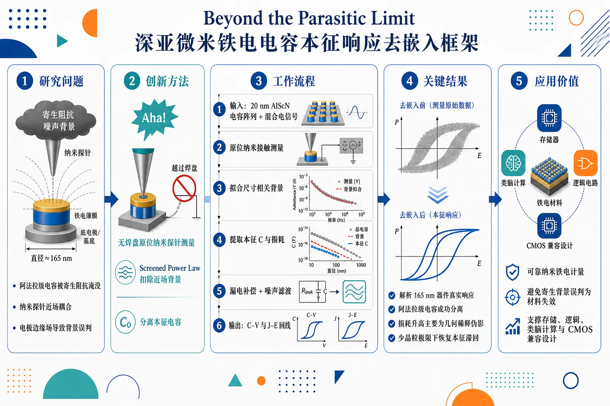
研究问题深亚微米铁电电容的真实本征响应被巨大寄生阻抗、纳米探针近场耦合和电极边缘场淹没；当器件直径缩小到约165 nm、器件电容低至阿法拉量级时，传统测量难以分辨材料自身的电容、介电损耗和铁电滞回，而容易把测量背景误判为材料尺寸效应。创新方法提出无需光刻键合焊盘的原位纳米探针去嵌入框架，直接接触纳米铁电电容以减少焊盘寄生；核心 Aha 点是用非线性 Screened Power Law 模型描述并扣除强探针近场背景，从总导纳中分离阿法拉级本征电容，并结合电导缩放、漏电补偿和噪声滤波恢复真实 C–V 与 J–E 滞回。工作流程输入为20 nm AlScN 深亚微米铁电电容阵列及纳米探针测得的混合电学信号；先进行无焊盘原位纳米接触测量，获得包含器件、电极边缘场、探针近场和寄生阻抗的总响应；再用 Screened Power Law 拟合尺寸相关背景并提取本征电容；随后用电导缩放识别介电损耗伪影；最后对大信号数据进行漏电补偿和噪声滤波，输出去嵌入后的电容、损耗、C–V 回线和 J–E 回线。关键结果框架可解析直径低至165 nm的20 nm AlScN 铁电电容真实响应，将阿法拉级器件电容从强近场探针相互作用中分离出来；发现纳米尺度表观介电损耗升高主要是几何稀释伪影，而非材料本征退化；在少晶粒极限下获得更接近本征的 C–V 和 J–E 铁电滞回回线。应用价值为纳米铁电器件缩放提供可靠计量工具，可避免把寄生背景误判为材料失效，支撑 AlScN 及其他深亚微米铁电材料的电容、损耗和开关行为评估；对下一代存储、逻辑、类脑计算和 CMOS 兼容铁电器件的小尺寸设计具有实际指导意义。第一部分：核心概览 (Overview)
深亚微米铁电器件的本征电学表征长期受寄生阻抗、探针近场耦合与边缘场掩蔽。该研究提出无需光刻键合焊盘的原位纳米探针去嵌入框架，在直径低至 165 nm 的 20 nm AlScN 电容中分离阿法拉级本征电容、介电损耗与大信号滞回响应，为纳米尺度铁电材料计量提供通用分析工具。
---
第二部分：结构化快速回顾
《Beyond the Parasitic Limit: A Nanoprobing Framework for De-embedding Intrinsic Ferroelectric Properties at the Deep Sub-Micrometer Scale》（None，）
背景
铁电器件继续缩放对下一代计算架构至关重要，但深亚微米尺度下，本征材料响应会被外在寄生阻抗和几何边缘场严重掩盖，形成关键计量瓶颈。
方法
建立一种定量原位纳米探针框架，无需光刻制备键合焊盘；以 20 nm 厚 AlScN 为模型体系，使用非线性 Screened Power Law 模型，从强烈近场探针相互作用中分离阿法拉级器件电容。
结果
该框架可解析直径低至 165 nm 的铁电电容真实电学响应；纳米尺度表观介电损耗恶化被识别为几何稀释伪影，并通过电导缩放分析克服；大信号测量中提取出更接近本征的 C–V 与 J–E 滞回回线。
讨论
关键贡献不只是测量更小器件，而是建立了从寄生背景、近场耦合、几何边缘效应、漏电流与噪声中恢复本征铁电响应的完整去嵌入逻辑。
局限
可用材料未给出完整实验章节、统计样本量、误差条、拟合参数、P 值、器件阵列规模、AlScN 具体 Sc 含量、沉积条件与完整模型方程；因此无法评估重复性、统计稳健性与跨材料普适性。
结论
该框架针对深亚微米铁电计量的核心障碍，提供了可用于电容、损耗和大信号滞回响应提取的分析工具，有潜力成为纳米铁电器件缩放研究中的基础表征方法。
---
第三部分：逐章节冷凝解析 (Section-by-Section Condensing)
可见原始章节标题仅包含 Abstract；完整正文、引言、方法、结果、讨论、补充材料与图表数据未提供。以下严格基于可见摘要与元数据展开，不重构缺失章节，不虚构实验细节。
---
Abstract
#### Scaling of ferroelectric devices is limited by a metrological bottleneck
铁电器件缩放的核心问题不是单纯的材料尺寸极限，而是计量学瓶颈：当器件进入深亚微米尺度后，真正需要测量的本征响应非常微弱，容易被测量系统与器件几何产生的外在信号淹没。摘要明确给出这一问题的领域动机：*"The continued scaling of ferroelectric devices is critical for next-generation computing architectures"*，并进一步指出根本障碍来自：*"yet it is fundamentally challenged by a metrological bottleneck"*。这里的“metrological bottleneck”强调测量手段本身成为限制铁电器件缩放研究的关键瓶颈，而非材料制备或器件物理本身已经无法继续缩放。
具体受影响的对象是本征材料性质，即材料自身的介电、铁电与导电响应；被干扰来源包括外在寄生阻抗和几何边缘场。摘要中的直接表述为：*"at the deep sub-micrometer scale, intrinsic material properties are heavily masked by extrinsic parasitic impedances and geometric fringing fields"*。这意味着传统电学测量中得到的电容、损耗或滞回曲线可能并非器件真实响应，而是探针、互连、边缘场和环境耦合的混合结果。
#### A quantitative in-situ nanoprobing framework enables pad-free nanoscale measurements
核心方法是一种定量原位纳米探针框架，目标是在不依赖光刻键合焊盘的条件下测量极小铁电电容器。摘要给出的关键能力是：*"we introduce a quantitative, in-situ nanoprobing framework capable of resolving the true electrical response of ferroelectric capacitors down to 165 nm in diameter without the need for lithographic bond pads"*。其中 165 nm in diameter 是可见材料中最重要的尺度指标，说明框架已经进入深亚微米甚至接近少晶粒尺度的表征区间。
“without the need for lithographic bond pads”具有重要方法学意义。传统小尺寸器件电学测试通常依赖微纳加工形成较大的接触焊盘，但焊盘会引入巨大的寄生电容、串联阻抗、漏电路径和布局相关耦合。该框架通过纳米探针直接接触器件来降低或绕开焊盘带来的外在影响，从而更接近器件局域本征响应。
#### 20 nm AlScN is used as the model ferroelectric system
材料体系为 20 nm 厚 AlScN，即铝钪氮化物铁电薄膜。摘要说明：*"Using 20 nm thick AlScN as a model system"*。AlScN 是近年来 CMOS 兼容铁电/压电氮化物中的重要材料，具有高矫顽场、高热稳定性、与 III-nitride 工艺兼容等优势。20 nm 厚度意味着电容器垂直尺寸已经很小，横向直径降至 165 nm 后，器件体积接近离散晶粒统计主导的极限。
可见材料未提供 Sc 含量、晶粒尺寸、取向、底电极/顶电极材料、沉积方式、退火条件、膜应力或漏电流密度数值；因此无法判断材料品质、相结构与器件离散性对测量结果的具体影响。
#### The Screened Power Law model separates attofarad device capacitance from near-field probe interactions
关键理论工具是非线性 Screened Power Law 模型，用于将极小器件电容与强烈探针近场耦合分离。摘要给出：*"we establish a non-linear 'Screened Power Law' model to decouple attofarad-level device capacitances from massive near-field probe interactions"*。这里的 attofarad-level device capacitances 表示目标信号处于 (10⁻¹⁸) F 量级，极其微弱；而 massive near-field probe interactions 表示探针针尖、样品表面、周围金属结构和空气/介质环境之间存在远大于器件本征电容的耦合背景。
“Screened Power Law”从命名看包含两个物理要素：
- Power law：寄生或几何耦合可能随尺寸、距离或面积呈幂律变化；
- Screened：真实耦合会被电极、介质、导体环境或局域屏蔽效应削弱，因此不能用简单线性面积比例解释。
可见材料未提供该模型的显式方程、拟合参数、指数值、残差分析或置信区间；因此只能确认其功能是去嵌入阿法拉级电容，不能进一步验证模型形式的唯一性或统计优越性。
#### Apparent nanoscale dielectric loss degradation is identified as a geometric dilution artifact
纳米尺度下常见的“介电损耗恶化”并不一定代表材料本征损耗变差，而可能是几何和测量背景导致的伪影。摘要明确指出：*"we demonstrate that the apparent degradation of dielectric loss at the nanoscale is a geometric dilution artifact"*。这里的 apparent degradation 强调观测到的损耗升高是表观现象，不一定对应真实材料耗散机制增强；geometric dilution artifact 则说明随着器件面积缩小，本征器件信号被几何相关背景稀释，导致损耗角正切或等效损耗指标被错误放大。
解决策略为电导缩放分析，摘要表述为：*"which we overcome through a conductance scaling analysis"*。该逻辑可能基于电导 (G)、电容 (C)、频率 (ømega) 和损耗因子之间的关系，例如介电损耗常可表达为 ( tanδ = G/(ømega C) )。当 (C) 进入阿法拉量级时，即使背景 (G) 很小，也可能显著污染 (tanδ)。通过分析电导随器件尺寸的缩放关系，可区分面积相关的本征损耗与非面积相关的寄生通道。
可见材料未给出损耗数值、频率范围、等效电路、导纳谱、缩放指数或器件尺寸序列；因此无法量化伪影大小。
#### Large-signal characterization recovers intrinsic C–V and J–E hysteresis loops
该框架不仅用于小信号电容/损耗提取，还扩展到大信号铁电表征。摘要给出：*"Finally, we apply this framework to large-signal characterization"*，并说明采用两类关键处理：*"utilizing leakage-compensation and noise filtering protocols"*。这表明在高场铁电翻转测量中，漏电流和噪声是主要干扰项；若不补偿，积分电荷、极化估计、开关峰和电流-电场曲线都可能失真。
提取对象包括 C–V 和 J–E 滞回回线，摘要直接写道：*"to extract pristine intrinsic hysteresis (C-V and J-E) loops in the discrete few-grain limit"*。其中 C–V 代表电容-电压曲线，可反映铁电翻转导致的介电非线性；J–E 代表电流密度-电场曲线，可用于分析开关电流、漏电流与矫顽场附近的响应。discrete few-grain limit 极其关键，意味着器件横向尺寸小到只包含少数晶粒，连续介质平均近似失效，晶粒级离散性可能主导滞回行为。
可见材料未给出 C–V 或 J–E 曲线数值、矫顽场、剩余极化、开关电流峰、漏电补偿算法、滤波窗口、采样率或噪声谱，因此无法判断“pristine intrinsic”的定量程度。
#### The framework is positioned as a universal analytical toolkit for deep-submicron ferroelectrics
研究定位为面向深亚微米铁电器件的通用分析工具，而非仅针对单一 AlScN 样品的测量技巧。摘要总结为：*"These findings provide a universal analytical toolkit required to overcome the measurement limits of deep-submicron ferroelectrics"*。这里的 universal analytical toolkit 强调方法具有跨器件、跨尺寸和潜在跨材料的可迁移性，尤其适合解决纳米铁电表征中的共性问题：寄生去嵌入、边缘场修正、损耗伪影识别、漏电补偿和噪声滤除。
不过，跨材料普适性仍需更多证据支持。可见材料仅说明模型体系为 20 nm AlScN，未展示 HfO₂ 基铁电、PZT、BaTiO₃、PVDF 类聚合物或二维铁电材料的验证结果；因此“universal”目前更像方法学目标与潜在适用性，而非已被多材料系统验证的结论。
---
第四部分：深度理解与语言支持 (Understanding & Nuance)
1. 术语解析
#### Metrological bottleneck
Metrological 指“计量学的”，不仅是普通“measurement”。Metrological bottleneck 强调限制科学结论可靠性的不是器件能否制备，而是测量是否能分辨真实物理量。语境中对应：*"fundamentally challenged by a metrological bottleneck"*。微妙之处在于，纳米铁电器件的失败表征不一定代表材料失效，可能代表计量手段不足。
#### De-embedding
De-embedding 在射频、电学测试和纳米器件表征中指从总测量信号中数学或物理地移除夹具、探针、互连、焊盘、背景电容等非目标贡献。标题中的 “De-embedding Intrinsic Ferroelectric Properties” 表示目标不是简单测得电容，而是从混合信号中还原铁电材料本征响应。
#### Parasitic impedances
Parasitic impedances 指非设计目标但不可避免存在的电阻、电容、电感或复阻抗。摘要中的 *"extrinsic parasitic impedances"* 强调这些贡献来自器件外部或测量环境，而非铁电薄膜本身。微妙差别：parasitic capacitance 只是寄生阻抗的一类；parasitic impedance 更宽，包括频率相关、相位相关和损耗相关影响。
#### Geometric fringing fields
Fringing fields 是电极边缘处不再严格垂直穿过介质的电场线。深亚微米电容器中，器件横向尺寸与膜厚、探针尺寸、边缘半径接近，边缘场占比显著升高。语境中的 *"geometric fringing fields"* 表示测得电容不再只由平行板公式 (C=ǎrepsilon A/t) 决定，几何边界条件会明显改变有效响应。
#### Discrete few-grain limit
Few-grain limit 指器件只包含少数晶粒，材料不再能被视为大量晶粒平均后的连续介质。摘要中的 *"in the discrete few-grain limit"* 暗示铁电开关可能表现出离散跳变、器件间差异、局域畴成核差异和统计波动。微妙之处在于，这不是单纯“小尺寸”，而是从连续平均物理进入离散微结构物理。
---
2. 疑难查证
#### 为什么阿法拉级电容难测？
一个直径 165 nm、厚度 20 nm 的平行板电容，即使介电常数较高，电容也可能只有阿法拉到低飞法拉量级。测量线缆、探针、探针座、空气间隙、衬底和邻近金属结构的寄生电容通常远大于这个量级。结果类似于在嘈杂房间里听针落地：真实信号存在，但背景更大。去嵌入的目标就是建立可靠数学模型，把背景从总信号中扣除。
#### 为什么小器件的介电损耗会“看起来变差”？
介电损耗常通过 ( tanδ = G/(ømega C) ) 估算。器件缩小时，本征电容 (C) 随面积快速下降；但某些背景电导或近场耦合不一定按同样面积比例下降。于是分母变小、背景占比变大，导致 (tanδ) 看起来升高。这种升高可能不是材料更“漏”或畴壁耗散更强，而是几何稀释伪影。摘要中的 *"apparent degradation of dielectric loss at the nanoscale is a geometric dilution artifact"* 正是这个逻辑。
#### Screened Power Law 可能解决什么问题？
简单面积缩放假设认为电容 (C) 与面积 (A) 成正比。但纳米探针测量中，探针-样品近场、边缘场和屏蔽边界会造成非线性缩放。Screened Power Law 很可能用一种带屏蔽修正的幂律函数描述总响应随器件尺寸变化的关系，再从中分离本征电容。摘要中的 *"decouple attofarad-level device capacitances from massive near-field probe interactions"* 表明其核心作用不是拟合漂亮曲线，而是在强背景中恢复微弱器件贡献。
#### 为什么 few-grain limit 对铁电滞回重要？
常规铁电电容包含大量晶粒和畴，测得的滞回曲线是大量局域开关事件的平均结果。器件缩小到少数晶粒后，每个晶粒的取向、缺陷、局域应力、界面状态都可能显著影响整体响应。此时滞回回线可能出现离散性和器件间波动。能够在 *"discrete few-grain limit"* 提取 *"pristine intrinsic hysteresis (C-V and J-E) loops"*，意味着测量框架有机会直接观察接近微结构单元尺度的铁电开关物理。
---
第五部分：创新评估与关联 (Synthesis & Novelty)
1. 创新性判断
#### 从“能测到信号”推进到“能去嵌入本征响应”
过去 2–5 年纳米铁电研究中，HfO₂ 基铁电、AlScN、二维铁电和超薄钙钛矿体系都已实现小尺寸器件制备与局域探针表征，但深亚微米电容的定量电学提取仍被寄生电容、漏电、边缘场和接触结构严重限制。该研究的新意在于把问题定义为计量学去嵌入问题，而不只是器件制备或材料优化问题。
#### 无需光刻键合焊盘的纳米探针框架降低外在寄生来源
常规小电容测量依赖焊盘和互连结构，但焊盘本身往往比纳米器件大几个数量级，寄生信号可能完全掩盖器件响应。该框架的关键优势是 *"without the need for lithographic bond pads"*，直接缓解了深亚微米电容测试中“为了测量而引入更大寄生结构”的矛盾。
#### Screened Power Law 针对近场探针相互作用建立非线性修正
纳米探针测量不是理想平行板电容测量。探针针尖几何、近场耦合、屏蔽效应和器件尺寸共同决定总导纳。通过 *"a non-linear 'Screened Power Law' model"* 分离 *"attofarad-level device capacitances"* 与 *"massive near-field probe interactions"*，新颖性集中在建立适合深亚微米尺度的定量缩放模型，而不是直接套用宏观电容公式。
#### 把纳米尺度损耗恶化重新解释为几何伪影
纳米器件中损耗升高常被解释为界面缺陷、漏电增强、尺寸效应或材料退化。该研究提出相反且更谨慎的解释：*"the apparent degradation of dielectric loss at the nanoscale is a geometric dilution artifact"*。这改变了对小尺寸铁电损耗的判断标准，提示许多所谓“尺寸导致材料变差”的结论可能需要重新去嵌入验证。
#### 大信号 C–V 与 J–E 滞回也纳入同一去嵌入框架
许多去嵌入方法主要服务于小信号电容或阻抗谱；铁电大信号滞回由于漏电、开关瞬态、噪声和积分误差更难处理。该框架进一步结合 *"leakage-compensation and noise filtering protocols"*，提取 *"pristine intrinsic hysteresis (C-V and J-E) loops"*，使其创新点从线性介电测量扩展到真正铁电开关表征。
#### 面向 few-grain 极限的铁电计量工具
器件缩小到少数晶粒后，宏观平均响应失效，传统电学测试很难区分真实离散开关与测量噪声。该框架直接面向 *"the discrete few-grain limit"*，解决前人常见的空白：能制备纳米铁电器件，但无法可靠获得其本征电学回线和损耗参数。
2. 仍待验证的问题
#### 模型普适性需要跨材料证明
“universal analytical toolkit”的定位很强，但可见信息只展示 20 nm AlScN。若要确认为通用工具，还需要在 HfO₂-ZrO₂、PZT、BaTiO₃、二维铁电和不同电极/介质组合中验证同一去嵌入逻辑。
#### 统计稳健性无法从摘要判断
缺失样本量、器件数量、尺寸序列、误差条、拟合残差、置信区间和重复测量数据。深亚微米铁电器件容易出现强烈器件间差异，因此统计验证对判断方法可靠性非常关键。
#### “pristine intrinsic”需要严格定义
本征滞回回线的提取依赖漏电补偿和滤波协议。若补偿过强，可能去除真实开关瞬态；若滤波不当，可能平滑掉少晶粒极限下的离散事件。因此需要完整算法、参数敏感性分析和原始数据对照来支撑“pristine intrinsic”的强表述。
-
14
📊 含图深析
📄 摘要：研究范德华磁体 VI3 中两类 V 原子电子占据共存导致的磁有序。两类 V 位点具有相近能量但磁各向异性差异可超过一个数量级，形成强弱各向异性混合体系；VI3 还表现出反常厚度依赖，单层居里温度高于体相。
💡 亮点：VI3 将两种磁各向异性相差逾数量级的 V 位点结合在同一范德华磁体中。该机制有助于理解其单层居里温度高于体相的反常行为。
📖 展开分析 + 配图
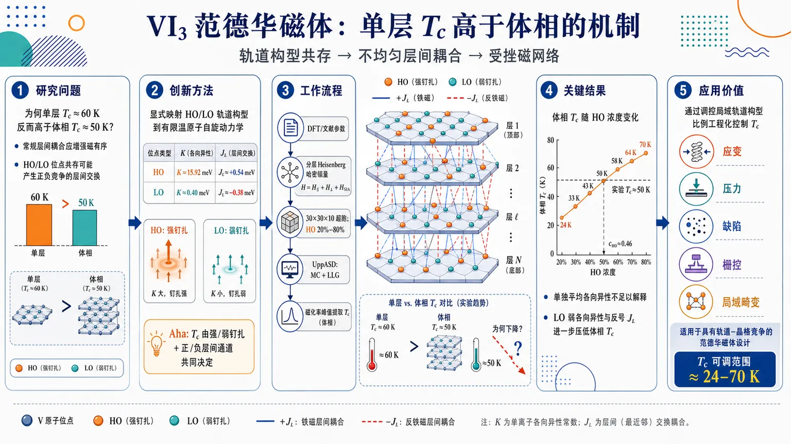
研究问题VI₃ 范德华磁体中，为什么单层 Curie 温度约 60 K 反而高于体相约 50 K？核心矛盾是：常规层间耦合应增强磁有序，但 VI₃ 体相中共存的高轨道角动量 HO 与低轨道角动量 LO 两类 V 位点，可能让层间磁耦合变成空间不均匀、甚至正负竞争的网络。创新方法将 HO/LO 轨道构型共存显式映射进有限温原子自旋动力学模型：HO 位点具有巨大单离子各向异性 K≈15.92 meV 和铁磁层间交换 JL≈+0.54 meV，LO 位点具有弱各向异性 K≈0.40 meV 和反号层间交换 JL≈−0.38 meV。Aha 点在于：Tc 不是由平均各向异性决定，而是由“强/弱自旋钉扎位点”与“正/负层间超超交换通道”共同形成的受挫磁网络决定。工作流程输入 DFT 与文献得到的 HO/LO 参数，包括层内交换 J₁、层间交换 JL、单离子各向异性 K；构建含 H∥、H⊥、HSIA 的分层 Heisenberg 自旋哈密顿量；在 30×30×10 六角超胞中随机分配 HO/LO 位点并扫描 HO 浓度 20%–80%；用 UppASD 进行 Monte Carlo 平衡和随机 Landau–Lifshitz–Gilbert 自旋动力学演化；从磁化率峰值提取 Curie 温度，并与实验体相 Tc 对比反推 HO/LO 比例。关键结果HO 浓度从 20% 增至 80% 时，体相 Tc 从约 24 K 大幅升至约 70 K；实验体相 Tc≈50 K 对应 HO 浓度 cHO≈0.46，接近 1:1 HO/LO 共存。单独增加各向异性会提高 Tc，但 HO+MLH 控制模型显示各向异性平均不足以解释全部下降；完整 HO+LO 模型中，LO 的弱各向异性与反号层间交换共同进一步压低体相 Tc，解释单层 Tc 高于体相的异常现象。应用价值该研究把 VI₃ 的磁转变温度归因于可调的局域轨道构型比例，提示可通过应变、压力、缺陷、极化子、栅控或局域晶格畸变调节 HO/LO 占比，从而在约 24–70 K 范围内工程化控制 Tc。该“轨道环境无序自旋模型”也可用于理解和设计其他具有轨道-晶格竞争的范德华磁体。第一部分：核心概览 (Overview)
VI₃ 中 高轨道角动量（HO） 与 低轨道角动量（LO） 两类 V 构型共存，产生相差超过一个数量级的 单离子磁各向异性 与符号可变的 层间交换。基于原子自旋动力学，HO/LO 比例被证明可显著调控 Curie 温度，约 1:1 混合可复现实验体相 Tc≈50 K，并为单层 Tc 高于体相的异常现象提供微观解释。该工作把轨道构型不均匀性、各向异性对比和层间超超交换竞争统一进有限温磁有序模型。
---
第二部分：结构化快速回顾
《Magnetic ordering of a van der Waals material combining vastly different magnetic anisotropies》（None，）
背景
VI₃ 属于磁性范德华三卤化物，实验显示 单层 Tc≈60 K 高于 体相 Tc≈50 K，违反通常“层间耦合增强磁有序”的预期。VI₃ 还存在 HO/LO 两类 V 电子构型共存，二者磁各向异性和交换相互作用差异巨大。
方法
采用 UppASD 原子自旋动力学，使用含层内交换、层间交换和单离子各向异性的 Heisenberg 自旋哈密顿量；模拟 30×30×10 六角超胞，周期边界，90,000 Monte Carlo 平衡步和 90,000 自旋动力学步，时间步长 10⁻¹⁶ s。DFT 使用 FP-LAPW/ELK、GGA-PBE、SOC、U=4.3 eV、JH=1.1 eV 计算交换参数。
结果
HO 构型参数为 K=15.92 meV、J₁=3.03 meV、JL=0.54 meV；LO 构型为 K=0.40 meV、J₁=2.18 meV、JL=-0.38 meV。HO 浓度从 20% 增至 80% 时，体相 Tc 从约 24 K 升至约 70 K；体相实验 Tc 对应 cHO≈0.46。
讨论
Tc 的变化不能由平均各向异性单独解释。LO 位点降低横向自旋涨落能垒，HO/LO 混合又使 HO–HO、LO–LO、HO–LO 层间交换通道空间不均匀并可能相互竞争，从而削弱体相层间相干磁有序，同时保持较强层内铁磁关联。
局限
模型以随机 HO/LO 混合近似轨道/结构不均匀性，没有显式模拟极化子、堆垛缺陷、真实局域晶格畸变和长程相关无序；Tc 以磁化率峰值判定，未使用 Binder cumulant 或有限尺寸标度精确外推。
结论
VI₃ 的异常体相/单层 Tc 差异源于 巨大各向异性对比 与 空间不均匀层间超超交换 的共同作用。HO/LO 比例是调控 VI₃ 有限温磁有序的关键微观旋钮，接近 1:1 的混合支持两类 V 构型共存图像。
---
第三部分：逐章节冷凝解析 (Section-by-Section Condensing)
Abstract
- Coexisting vanadium configurations define the central physical problem
VI₃ 中 V 原子可能以两种电子占据构型共存，二者能量接近，真实样品中可同时存在；这一点构成研究对象的核心不均匀性来源。原文明确指出：*"VI3 has been found to contain V atoms of two different types because two of its possible electronic occupations are energetically very close and could be present simultaneously in real samples."* 这种共存不是化学掺杂，而是 轨道构型/局域电子态不均匀性。
- Magnetic anisotropy contrast is exceptionally large
两类 V 构型的 磁各向异性 差异超过一个数量级，产生非常罕见的混合磁系统。原文给出关键判断：*"These two types exhibit strikingly different magnetic anisotropy, which has been predicted to differ by more than an order of magnitude."* 这意味着 HO 位点可强烈钉扎自旋方向，而 LO 位点更接近弱各向异性 Heisenberg 极限。
- Bulk–monolayer Tc anomaly motivates the finite-temperature model
VI₃ 的单层 Tc 高于体相，与通常层间耦合稳定磁序的预期相反。原文表述为：*"VI3 also exhibits an unusual thickness dependence: the reported Curie temperature (TC) of the monolayer is higher than that of the bulk, contrary to the conventional expectation that interlayer coupling should reinforce magnetic order."* 实验数值在引言中进一步给出：单层约 60 K、体相约 50 K。
- Atomistic spin dynamics links anisotropy and exchange to ordering temperature
研究采用 原子自旋动力学模拟，同时考虑 single-ion anisotropy 与 exchange interactions，目标是寻找体相/单层异常的微观起源。原文写道：*"we use atomistic spin-dynamics simulations to understand the behavior of critical temperatures in this system from the combined perspective of single-ion anisotropy and exchange interactions."*
- Higher HO fraction raises Tc by suppressing transverse fluctuations
高各向异性位点比例越高，横向自旋涨落代价越大，Tc 越高。原文指出：*"increasing the fraction of high-anisotropy sites leads to a higher energy cost of transverse spin fluctuations and raises the ordering temperature."* 这是二维/准二维磁体中 磁各向异性稳定长程磁序 的直接体现。
- Interlayer super-superexchange becomes spatially nonuniform
HO/LO 不均匀性不仅改变各向异性，也改变跨层 V–I···I–V super-superexchange 网络，使层间交换路径在空间上不均匀并相互竞争。原文强调：*"the interlayer super-superexchange network is also affected by the underlying inhomogeneity of V atoms. It becomes spatially nonuniform, producing competing exchange pathways across different local orbital environments."*
- Mixed V configurations reproduce experimental bulk Tc
模型在 HO/LO 接近 1:1 时复现实验 Tc，与两种实验方法支持的共存图像一致。原文给出结论：*"Our model replicates the experimental TC if the ratio between the two V types is close to 1:1, in agreement with the results of two experimental methods."*
- Tc tunability emerges from HO/LO ratio sensitivity
VI₃ 的有序温度可通过控制两类 V 构型占比在宽范围内调节。原文指出：*"The sensitivity of TC to the HO/LO ratio further suggests that the ordering temperature of VI3 could in principle be tuned over a broad range by controlling the relative occupation of the two vanadium configurations."*
---
1 Introduction
- vdW materials enable dimensional and stacking engineering
范德华材料层间键合弱，可剥离、重堆叠、扭转和改变堆垛，从而在二维极限中获得不同于体相的物性。原文概括为：*"The weak interlayer bonding of van der Waals (vdW) materials allows their layers to be isolated, re-stacked, and arranged with controlled sequence and stacking geometry."* 层内几何通常变化小，但层间相互作用路径对堆垛极为敏感。
- Interlayer coupling is weak but magnetically consequential
磁性 vdW 材料中 层间耦合远弱于层内耦合，但仍影响磁有序。原文指出：*"The magnetic interlayer coupling is also much weaker than its intralayer counterpart here."* 又强调：*"Although the interlayer coupling is weak, it still acts in favor of magnetic order."* 因此去除层间耦合通常会降低 Tc。
- Stacking and pressure can even reverse interlayer exchange sign
CrI₃ 和 VI₃ 中不同堆垛可改变层间交换符号。原文给出例子：*"in CrI3 it is known to even change its sign when the system is thin enough, so that in a bilayer individual layers are antiferromagnetically coupled."* 压力主要改变 vdW 间隙，也可诱导堆垛变化，进而改变层间相互作用。
- Monolayer magnets usually have lower Tc than bulk
由于单层缺少层间耦合，低维涨落更强，通常 单层 Tc 低于体相。原文明确：*"Its absence should therefore destabilize the magnetic order and reduce the critical temperature (TC)."* 这为 VI₃ 异常提供对照基线。
- Known vdW trihalides show nonuniversal thickness dependence
CrI₃ 体相 Tc≈61 K，单层 Tc≈45 K；双层出现层间反铁磁态，需要约 0.65 T 恢复铁磁排列。原文写道：*"In CrI3, bulk ferromagnetism persists up to TC≈61 K, whereas monolayer ferromagnetism survives in the 2D limit with reduced TC≈45 K."* 双层行为显示层间交换对堆垛高度敏感。
- VI₃ violates the conventional bulk–monolayer expectation
VI₃ 单层 Tc≈60 K，体相 Tc≈50 K。原文指出：*"an exception to this observation has recently been found in VI3, where 1ML TC reaches 60 K compared to the bulk TC of 50 K."* 这一异常是整项研究的直接动机。
- Previous spin-wave theory failed for monolayer VI₃
近期自旋波理论可正确预测体相 Tc，却将单层 Tc 降至约 14 K，与实验单层 60 K 严重不符。原文表述为：*"a recent study based on spin-wave theory on VI3, which correctly predicts TC for the bulk but reduces it to ∼14 K for 1ML."* 说明均匀模型或传统自旋波框架缺少关键物理。
- V d-shell orbital occupation produces HO and LO configurations
VI₃ 中 V 位于近似八面体环境，t₂g 壳层部分占据，三角晶场进一步分裂，可形成 e′g² 或 a₁g¹e′g¹ 构型。原文写道：*"The t2g shell of V is only partially occupied, and the trigonal field further splits it so that the e′g2 or a1g1e′g1 configurations are occupied."* 后者结合 SOC 可产生很高轨道角动量。
- HO state has exceptionally large orbital angular momentum and anisotropy
HO 构型 已被多种 ab initio 方法预测为基态，但其他计算得到 LO 构型。原文指出：*"The high orbital momentum ground state (denoted further as HO) has been predicted by several ab initio calculation approaches, however, other calculations found the low orbital momentum configuration e′g2 (denoted further as LO) to be the ground state."* 这种理论分歧反映能量竞争极其微妙。
- Experiments support coexistence of HO and LO states
光谱和中子散射均指向 HO/LO 共存。原文写道：*"HO type vanadium has been observed experimentally in VI3 samples, but the LO type must have been also partially present to explain the observed spectrum."* 又补充：*"This coexistence was also indicated in neutron scattering data."*
- Electronic correlations, lattice distortions, SOC and orbital ordering compete delicately
HO/LO 偏好取决于多种相近能量尺度，包括电子关联、晶格畸变、SOC 和 Kugel–Khomskii 轨道序。原文表述为：*"The preference for either of these solutions depends on a delicate competition between electron correlations, lattice distortions, spin-orbit interaction, and the Kugel-Khomskii orbital ordering mechanism."*
- Polarons may generate local lattice perturbations and HO/LO inhomogeneity
XPS 显示 VI₃ 中存在显著 V²⁺，被解释为极化子；极化子局域畸变可影响 V 到第二近邻，共约 10 个 V 原子。原文写道：*"x-ray photoemission spectroscopy in VI3 has shown a significant presence of V2+ atoms, which has been argued to form polarons here."* 进一步估算：*"roughly 1 electron per 20 f.u. is needed, which corresponds to the doping of 0.0125 electron per atom."*
- Missing piece is finite-temperature simulation of HO/LO mixtures
已知 HO/LO 基本参数，但缺少二者单独及混合时的有限温磁行为模拟。原文明确定位创新：*"a simulation comparing the finite temperature behavior of these two types separately as well as in a mixture is missing."*
- Main contribution connects HO/LO coexistence to anomalous Tc
研究目标是把 HO/LO 共存图像 与有限温磁有序联系起来，解释各向异性对比和非均匀层间交换如何影响 Tc。原文写道：*"the new contribution of the present work is to connect the established HO/LO coexistence picture to finite-temperature magnetic ordering by showing how anisotropy contrast and spatially nonuniform interlayer exchange affect TC."*
---
2 Theory and methods
- Finite-temperature VI₃ is modeled through a layered spin Hamiltonian and atomistic spin dynamics
理论部分构建含层内交换、层间交换和单离子各向异性的分层哈密顿量，并用 ASD 计算磁化率峰值对应的 Tc。原文方法定位为：*"Finite-temperature magnetic properties were calculated using the Uppsala Atomistic Spin Dynamics (UppASD) framework, where exchange and anisotropy parameters are mapped onto an atomistic spin Hamiltonian."*
---
2.1 Layered spin Hamiltonian
- Hamiltonian separates intralayer, interlayer and single-ion anisotropy terms
自旋哈密顿量写为 H = H∥ + H⊥ + HSIA，包含层内交换 Jij、相邻层交换 J′ij/J″ij 与各向异性 Ki(Sz)²。原文给出：*"An isotropic Heisenberg Hamiltonian describes the magnetic properties with an explicit layered structure and a single-ion anisotropy term."* 自旋按层 l 和层内位置 i 标记。
- Spins are normalized classical vectors
原子自旋模拟采用单位长度自旋，便于把 DFT 交换和各向异性映射到经典自旋模型。原文说明：*"spins Sl,i are normalized to unity."* 因此表中 J、K 直接作为单位自旋哈密顿量参数使用。
- Only neighboring layers are included
由于层间作用很弱，忽略非相邻层之间的交换。原文写道：*"Since the interaction between spins from neighboring layers J′ij and J″ij is already weak; we have neglected any interaction between non-neighboring layers."* 这将模型聚焦于最近层超超交换路径。
- Effective interlayer exchange JL is extracted from FM–LAFM energy difference
层间总有效交换定义为
JL = (1/N) Σij(J′ij + J″ij)。
通过完全铁磁态与层间反铁磁态能量差获得：2NLNJL = ELAFM − EFM。原文描述：*"Information about interlayer interaction can be obtained by comparing states with oppositely oriented layers (LAFM state)."*
- Layer geometry creates site-level asymmetry but cancels macroscopically
相邻层横向位移使不同子晶格相对邻层的最近邻关系不等价，但大尺度求和后平均消失。原文写道：*"This asymmetry obviously disappears upon summation over a large number of sites, hence we average over layer atoms."*
- Layered formulation is transferable beyond VI₃
该哈密顿量虽用于 VI₃，也适合其他 vdW 层状磁体。原文指出：*"Although the present Hamiltonian is applied here to VI3, the same layered formulation is transferable to other vdW layered magnets."*
---
2.2 Atomistic spin dynamics
- UppASD is used for finite-temperature magnetism
有限温磁性通过 Uppsala Atomistic Spin Dynamics 计算，交换和各向异性参数映射到原子自旋哈密顿量。原文写道：*"Finite-temperature magnetic properties were calculated using the Uppsala Atomistic Spin Dynamics (UppASD) framework."*
- Simulation cell and boundary conditions are explicitly specified
采用 30×30×10 六角超胞，三维周期边界。原文给出：*"The simulations were performed for a hexagonal 30×30×10 supercell with periodic boundary conditions in all directions."* 该尺寸用于体相模型，单层模型去除层间耦合。
- Classical spins evolve under stochastic Landau–Lifshitz–Gilbert dynamics
在绝热近似下，局域磁矩视为经典矢量，并由随机 LLG 方程演化。原文写道：*"Within the adiabatic approximation, the local magnetic moments are treated as classical vectors whose time evolution follows the stochastic Landau–Lifshitz–Gilbert equation."*
- Thermal noise satisfies fluctuation–dissipation theorem
温度涨落通过高斯白噪声场引入，满足涨落耗散定理。原文明确：*"Thermal fluctuations were introduced through a Gaussian white-noise field satisfying the fluctuation–dissipation theorem."*
- Equilibration and averaging protocol are numerically defined
每个温度点先平衡 90,000 Monte Carlo steps，再用 90,000 spin-dynamics steps 取磁化平均；时间步长 Δt=10⁻¹⁶ s。原文给出：*"At each temperature, the system was equilibrated for 90 000 Monte Carlo steps, after which the magnetization was averaged over an additional 90 000 spin-dynamics steps using a time step of Δt=10−16 s."*
- Disorder averaging uses five independent HO/LO realizations
对每个 CHO，使用 Mensemble=5 个独立随机 HO/LO 分配进行平均，Tc 离散度用于估计统计不确定性。原文写道：*"For each value of CHO, the results were averaged over Mensemble=5 independent ensemble runs."*
- Interlayer JL is converted to pairwise bonds within a cutoff
均匀模型中，把有效 JL 均匀分配到相邻层 rc=2.0817 Å 内所有 V–V 对，使键和复现指定 JL。原文指出：*"JL was distributed uniformly over all V–V pairs within the cutoff distance rc=2.0817 Å."*
- Two-environment model represents orbital-driven local inhomogeneity
两类环境 HO/LO 分别赋予不同 K、J₁、JL。原文强调：*"The model should therefore be understood as an effective description of orbital-driven local inhomogeneity on the V sublattice, rather than as random chemical substitution."* 这一区分非常关键：无序来自局域轨道/结构环境，不是元素替换。
- Tc is determined from susceptibility peak
Tc 以磁化率峰值判定。原文写道：*"The Curie temperature TC was determined from the temperature dependence of the magnetic susceptibility."* 虽然热容或 Binder cumulant 也可用，但磁化率在转变处有明显峰值，且伴随磁化迅速下降。
---
2.3 First principles calculations
- DFT method uses FP-LAPW in ELK
第一性原理计算采用 full-potential linear augmented plane wave (FP-LAPW) 方法，由 ELK 实现。原文写道：*"Density funtional theory (DFT) calculations employed the full-potential linear augmented plane wave (FP-LAPW) method, as implemented in the band structure program ELK."*
- Exchange-correlation and SOC settings are specified
交换关联采用 GGA-PBE，并包含 SOC。原文给出：*"The generalized gradient approximation (GGA) parametrized by Perdew-Burke-Ernzerhof has been used."* 又指出：*"Spin-orbit coupling (SOC) is known to play a key role in V trihalides and has been included in the calculation."*
- Electron correlation uses Hubbard U and Hund JH
V 3d 电子使用 U=4.3 eV 和 JH=1.1 eV，双计数采用完全局域极限。原文写道：*"We have included the effect of electron-electron correlations in terms of the Hubbard correction term U=4.3 eV and Hund exchange JH=1.1 eV acting on 3d electrons of V."*
- Brillouin-zone sampling and convergence are reported
使用 10×10×5 k-points，并验证 k 网格收敛。原文给出：*"The entire Brillouin zone has been sampled by 10×10×5 k-points and the convergence w.r.t. k-mesh density has been verified."*
- Interlayer exchange is computed from doubled-z cells
计算 JL 时使用 z 方向加倍晶胞，比较层间 FM 和 LAFM 自洽基态能量。原文写道：*"To evaluate interlayer interaction JL we have used unit cell doubled in the z direction."* 又说明：*"The energies of the self-consistent ground states calculated with forced alignment of ferromagnetic (FM) and anti-ferromagnetic (AFM) between layers (LAFM) has then been calculated."*
- HO/LO preference is induced by slight lattice distortion
HO/LO 构型态通过微小晶格畸变实现，与 VBr₃ 相关计算方法一致。原文写道：*"The preference for configuration-based states (HO/LO state) was achieved by a slight lattice distortion."*
---
3 Results
- HO and LO Hamiltonian parameters differ strongly
表 1 所列核心参数显示两类 V 构型差异显著，足以改变有限温磁有序。原文开头即指出：*"The predicted values of key Heisenberg Hamiltonian parameters, as shown in Table 1, differ significantly between the two types of V configurations."*
- Parameter disentanglement starts from homogeneous systems
为判断 K 和 JL 对 Tc 的普适影响，先使用均匀系统选择性改变单个参数。原文写道：*"This is a problem that can be studied on a homogeneous system where we selectively vary its selected parameters."*
- Intralayer exchange is expected to give nearly linear Tc dependence
层内交换对 Tc 的影响较直接，通常可预期近似线性。原文指出：*"The effect of the intralayer interaction on TC is relatively clear and easy to study within simple models; one can expect a linear dependence of TC."* 因此重点分析 K 和 JL。
---
3.1 The effect of single-ion anisotropy
- LO and HO anisotropy values span nearly two orders of magnitude
LO 的单离子各向异性低于 0.4 meV，HO 的 SIA 预测为 15–20 meV。原文给出：*"The single-ion uniaxial anisotropy for VI3 in the low orbital momentum state ... has been reported to reach values below 0.4 meV."* 又写道：*"In the a1ge′g configuration with high orbital momentum ab initio calculations, huge values of SIA are predicted in the range of 15 - 20 meV."*
- Unquenched orbital degree of freedom stabilizes magnetic order
HO 构型中部分未淬灭轨道自由度产生大磁各向异性，对层状磁体长程有序至关重要。原文指出：*"The partially unquenched orbital degree of freedom of V produces a sizable magnetic anisotropy, which is expected to play a central role in stabilizing long-range magnetic order."*
- K is varied while exchange parameters are fixed to HO values
为隔离各向异性作用，K 在覆盖 LO/HO 报道范围内变化，交换参数固定为 HO 表 1 值。原文写道：*"To isolate the effect of single-ion anisotropy, K is varied over the range that covers the reported low- and high-orbital-momentum limits, while the exchange parameters are fixed to the HO values listed in Table 1."*
- Tc increases monotonically but sublinearly with anisotropy
Fig. 2 显示 Tc 随 K 单调升高，但增长为亚线性，大 K 下趋于饱和。原文明确：*"the critical temperature increases monotonically with K, but the dependence is sub-linear and would tend to saturate at larger anisotropy above the examined range."*
- Near-Heisenberg limit relies mainly on interlayer coupling
当 K 接近最小值，即接近 Heisenberg 极限时，磁有序主要由层间作用稳定。原文写道：*"for the minimum anisotropy (approaching the Heisenberg limit), the magnetic order is stabilized mainly by the interlayer interaction."*
- Anisotropy suppresses transverse fluctuations and opens a magnon gap
更强的面外各向异性抑制横向涨落，打开 magnon gap，提高铁磁态抗热扰动能力。原文指出：*"A stronger out-of-plane anisotropy suppresses transverse spin fluctuations, opens a magnon gap, and therefore stabilizes the ferromagnetic state against thermal disorder."*
- HO–LO anisotropy difference can nearly double Tc
两种 V 构型对应 Fig. 2 的 SIA 低/高边界，可使 Tc 变化接近 2 倍。原文写道：*"the difference between them can therefore lead to a change of TC by almost a factor of 2."*
- Torelli–Olsen 2D anisotropic Heisenberg model provides an analytical comparison
对二维 honeycomb 最近邻模型，Ising 极限 Tc 为
TCIsing = 2J₁ṪC/kB，其中 ṪC=1.52。原文给出：*"Here the dimensionless critical temperature T̃C=1.52 for the honeycomb lattice."* 拟合函数使用 Nnn=3、γ=0.033。
- Analytical model captures K dependence but misses interlayer shift
Torelli–Olsen 公式能较好描述 Tc 随 K 的变化，低 K 区误差最大；与体相 ASD 曲线呈垂直偏移，因为 2D 模型缺少层间交换。原文指出：*"The analytical formula apparently captures the change of TC with reasonable precision, the largest difference occurring for a low anisotropy."* 又解释：*"this can be ascribed to the interlayer interaction missing in the pure 2D model."*
---
3.2 The effect of interlayer coupling
- Interlayer coupling raises Tc in conventional quasi-2D ferromagnets
在均匀模型中增加 JL，磁化曲线系统性移向高温，Tc 近似单调上升。原文写道：*"the magnetization curves shift systematically to higher temperature as JL increases."* 又写道：*"The corresponding transition temperature rises nearly monotonically over the full range of couplings considered."*
- Simulated JL range spans weak to strong VI₃-relevant coupling
最弱 JL=0.14 meV 时体相响应接近单层极限；最强 JL=0.95 meV 时转变温度约 70 K。原文给出：*"For the weakest interlayer coupling, JL=0.14 meV, the bulk response approaches the monolayer limit."* 又写道：*"For the strongest coupling, JL=0.95 meV, the transition is shifted to approximately 70 K."*
- Layer coupling suppresses critical fluctuations and enhances interlayer coherence
即使 JL 仅为 meV 量级，也能抑制临界涨落并促进层间相干。原文指出：*"although the interlayer interaction is weak on the meV scale, it suppresses critical fluctuations and promotes coherence between neighboring layers."*
- Pressure dependence can be partly explained by JL variation
因压力主要改变 vdW 间隙和堆垛，JL 对 Tc 的正相关可部分解释压力下 Tc 变化。原文写道：*"This behavior can also explain at least partially the observed pressure dependence of Tc in this system."*
- Mean-field theory predicts too simple a linear slope
MF 给出 TCMF = 2J0/(3kB)，最近邻层内模型中 J0=3J+JL，因此 ∂TC/∂JL=7.7 K/meV。原文写道：*"From this we simply obtain the slope ∂TC/∂JL=7.7 K/meV."* 但该斜率低估 ASD 结果，且无法处理 Mermin–Wagner 极限。
- Mean-field theory fails for highly anisotropic quasi-2D exchange hierarchy
MF 只使用邻居交换总和，不能正确体现层内强耦合与层间弱耦合的巨大差异。原文指出：*"The big difference between these two couplings is not correctly taken into account by mean-field theory, which utilizes only an effective sum of all exchange interactions with neighbors."*
- Fluctuation-corrected spin-wave theory gives closer but still high Tc
使用 Irkhin 等自洽自旋波表达式，取 J=3.02 meV、KU=1.361 meV、S=1、S̄0=g0=S=1，得到 D0=0.420、q0=1.240、αc=0.0154、Dc=0.00629。原文给出：*"Using J=3.02 meV, KU=1.361 meV, and S=1, we take S̄0=g0=S=1, which gives D0=0.420."*
- Weak interlayer coupling alone cannot explain reduced bulk Tc
自洽自旋波结果接近实验体相 50 K，但仍偏高，因为均匀无缺陷模型不含堆垛/缺陷诱导空间交换变化。原文指出：*"The obtained values are closer to the experimental bulk value of about 50 K than the mean-field result, but remains higher."* 关键结论为：*"weak interlayer coupling alone is not sufficient to explain the reduced bulk ordering temperature of VI3."*
---
3.3 Model with two different V configurations
- Random HO/LO mixture is chosen over segregated domains
文献中“domains”可能暗示空间分离，但拟合 magnon 谱的模型不含分离，且存在无序迹象，因此随机混合更合适。原文写道：*"the literature mentioning two types of V atoms in VI3 has used the term domains, which can evoke spatial segregation of the two types."* 但进一步指出：*"modeling the problem as a random mixture of two V types appears to be appropriate."*
- HO and LO parameters differ in anisotropy, intralayer exchange and interlayer exchange sign
表 1 参数为：HO：K=15.92 meV、J₁=3.03 meV、JL=0.54 meV；LO：K=0.40 meV、J₁=2.18 meV、JL=-0.38 meV。原文表头说明：*"The labels HO and LO denote the high- and low-orbital-momentum V environments, respectively."* 又说明：*"Here, J1 is the nearest-neighbor intralayer exchange, JL is the effective interlayer exchange, and K is the single-ion anisotropy."*
- SIA values are taken from previous ab initio predictions
HO 的 15.9 meV 与 LO 的 0.4 meV 来自已发表 ab initio 研究。原文写道：*"For the SIA of V we adopt the published disparate values obtained by ab initio calculations, 15.9 meV for the HO type and 0.4 meV (upper limit) for the LO type."*
- LO intralayer exchange comes from Gordon et al.; higher-neighbor exchange is minor
LO 最近邻层内交换取自 Gordon 等计算；二、三近邻在 VI₃ 中较小。原文指出：*"The three N.N. intralayer interactions for the LO case were taken from calculations by Gordon et al."* 又强调：*"the 2nd and 3rd N.N. interactions appear to be small in VI3 and do not play a significant role compared to other effects considered here."*
- HO interlayer exchange required new DFT calculation
HO 体相 VI₃ 层间交换此前无公开计算，因此进行了第一性原理计算。原文写道：*"We are unaware of any published calculation of the interlayer interaction for bulk VI3 in the HO state."* 这是模型参数补全的关键一步。
- Interlayer exchange is mediated by fragile V–I···I–V super-superexchange
层间交换通过 vdW 间隙中的 V–I···I–V 超超交换通道传递，数值小且对晶格畸变和堆垛极敏感。原文指出：*"The interlayer exchange is mediated by extended V–I⋯I–V super-superexchange channels across the van der Waals gap."* 又写道：*"different stacking can even lead to its sign change."*
- Interlayer exchange sign differs between HO and LO
DFT 得到的 JL 在 HO 和 LO 中符号相反：HO 为 +0.54 meV，LO 为 −0.38 meV。原文概括：*"The obtained values highlight its sensitivity also to the electronic configuration, as the sign also differs for the two cases considered."*
- Interlayer interaction is not negligible for fixed geometry
固定几何下 |JL| 与 J₁ 相比不算极小，满足 |JL| > J₁/10。原文写道：*"for a fixed geometry the interlayer interactions are, in fact, not too small compared to intralyer interactions, |JL| > J1/10."* 但局域畸变导致符号变化时，平均层间作用会强烈抵消。
- Polarons may produce cancellation of interlayer exchange
极化子引起的局域畸变会导致不同区域层间交换符号和强度变化，造成平均抵消。原文指出：*"the fact that it may change sign upon small distortion means that in the presence of polarons there will be a large cancelation on average."*
- Experimental methods assumed roughly 50% HO concentration
关键实验无法精确定量 HO/LO 浓度，但均采用 50% 假设即可复现实验观测。原文写道：*"The methods used in the key studies do not allow for a precise determination of the HO/LO type concentration."* 又指出：*"Its authors have assumed, in both cases, a concentration of 50%, which has allowed the reproduction of observations with sufficient precision."*
- Simulations scan CHO from 0.2 to 0.8
研究不仅展示 cHO=0.5，还评估 0.2–0.8 合理浓度范围。原文写道：*"we also show the results for the case of cHO=0.5, and then evaluate TC for a reasonable range of cHO between 0.2 and 0.8."*
- Tc rises strongly with HO concentration
HO 浓度从 20% 到 80% 时，体相 Tc 从约 24 K 上升至约 70 K。原文给出：*"Increasing CHO systematically increases the bulk ordering temperature, from approximately 24 K in CHO=20% to approximately 70 K in CHO=80%."*
- HO/LO mixing alters interlayer path connectivity
改变 CHO 会改变 HO–HO、LO–LO、HO–LO 层间交换路径数量和连通性。原文指出：*"Changing CHO also changes the number and connectivity of the exchange paths between layers HO–HO, LO–LO, and HO–LO."*
- Competing exchange signs make the interlayer field spatially nonuniform
不同路径具有不同强度甚至不同符号，层间交换场变成空间不均匀。原文写道：*"Since these paths can carry different exchange strengths and, in some cases, different signs, the interlayer exchange field becomes spatially nonuniform."*
- Tc reflects robust intralayer ferromagnetism versus frustrated interlayer coupling
浓度依赖的 Tc 不是单一参数平均，而是层内铁磁关联与受挫层间耦合竞争的结果。原文概括：*"The resulting concentration TC(CHO) here reflects the competition between robust intralayer ferromagnetic correlations and frustrated interlayer coupling."*
- Experimental bulk Tc corresponds to cHO≈0.46
将实验体相 Tc 与预测曲线比较，可得 cHObulk=0.46。原文写道：*"Comparing the bulk TC with the prediction allows us to determine cHObulk=0.46 within the assumptions of our model."* 这与实验采用约 50% HO/LO 的图像一致。
- Anisotropy-only control model isolates K contrast
构造虚构 MLH 构型：交换参数等于 HO，但各向异性等于 LO，即 JMLH=JHO，KMLH=KLO。原文写道：*"Its exchange parameters are equal to those of the HO configuration, but its anisotropy is equal to the LO configuration."*
- HO+MLH removes exchange inhomogeneity
在 HO+MLH 模型中，只有各向异性不同，交换网络均匀。原文明确：*"Thus, in the HO+MLH model, there is no exchange inhomogeneity, unlike the full HO+LO model."*
- Anisotropy contrast alone lowers Tc but with moderate slope
随 CHO 降低，MLH 比例上升，磁化下降转变移向低温；弱各向异性降低横向涨落能量代价。原文指出：*"As CHO decreases, the magnetization drop shifts to a lower temperature."* 又写道：*"The reduced anisotropy lowers the energy cost of transverse spin fluctuations and weakens the stability of the out-of-plane ordered state."*
- Exchange inhomogeneity further suppresses Tc in LO-rich mixtures
完整 HO+LO 模型中，交换也随环境改变，Tc 下降更强，尤其在 LO-rich 区域。原文写道：*"When the exchange parameters are also allowed to depend on the atomic type, the original HO+LO model, the Curie temperature decreases more strongly, particularly in the LO-rich region."*
- High-HO regime is dominated by HO network
在高 CHO 区域，HO+MLH 与 HO+LO 两曲线接近，说明磁序由 HO 位点主导，LO 子网络无法形成扩展涨落。原文指出：*"at high CHO the two models approach nearly the same transition temperature."* 又解释：*"the magnetic order of the system becomes dominated by HO sites in this regime, and LO sites cannot achieve extended fluctuations on their own sublattice."*
- Tc reduction is not anisotropy averaging alone
关键结论是 Tc 降低同时来自 LO 的低各向异性和环境依赖交换引起的空间非均匀耦合。原文总结：*"These results show that the reduction of TC with decreasing CHO is not controlled by anisotropy averaging alone."* 又指出：*"the effective magnetic coupling becomes spatially nonuniform, further suppressing the bulk ordering temperature compared to that of the anisotropy-only model."*
---
第四部分：深度理解与语言支持 (Understanding & Nuance)
1. 术语解析
- Single-ion anisotropy (SIA)
指单个磁离子的自旋方向相对于晶体轴的能量偏好，模型中写作 −K(Sz)²。K>0 时偏好面外 z 轴排列。VI₃ 中 HO 的 K≈15.92 meV，LO 的 K≈0.40 meV，差异巨大。其微妙点在于：SIA 不是交换作用，而是局域晶场、SOC 和轨道角动量共同导致的“单点能量项”。
- High-orbital-momentum / low-orbital-momentum state (HO/LO)
HO/LO 不是不同元素或不同价态的简单标签，而是 V 3d 电子在三角畸变八面体晶场中的不同轨道占据构型。HO 对应 a₁g¹e′g¹，轨道角动量部分未淬灭，SOC 可产生巨大各向异性；LO 对应 e′g²，轨道角动量较低，各向异性弱。
- Super-superexchange
普通 superexchange 常指 M–X–M 路径；这里的层间路径是 V–I···I–V，跨过 vdW 间隙，含两个卤素并涉及较长距离，因此称 super-superexchange。它比层内交换更弱、更长程、更易受堆垛和微小畸变影响，甚至可改变符号。
- Spatially nonuniform exchange field
指局域层间交换强度和符号随 HO/LO 环境变化，而不是每个 V 位点感受到同样的层间平均场。HO–HO、LO–LO、HO–LO 通道混合后，层间耦合不再相干叠加，可能局部铁磁、局部反铁磁，从而削弱体相有序。
- Ordering temperature / Curie temperature (Tc)
对铁磁体，Tc 是长程铁磁有序消失的临界温度。该工作用 磁化率峰值 判定 Tc；在模拟中表现为磁化 M 快速下降、χ 出现峰值。严格临界温度通常还需有限尺寸标度，但此处作为比较不同参数模型的实用指标。
2. 疑难查证
- 为什么单层 Tc 可能高于体相？
常规图像中，体相比单层多了层间耦合，因此应更稳定。但 VI₃ 的体相层间耦合并非简单“额外铁磁增强项”。HO/LO 混合后，层间 V–I···I–V 路径可能有不同强度和相反符号：HO 类路径偏铁磁，LO 类路径可偏反铁磁。体相因此引入了空间不均匀、竞争性的层间交换，削弱层间相干。而单层没有这些受挫层间通道，只保留较强层内铁磁关联和局域各向异性；若单层 HO/LO 比例或极化子浓度略有改变，Tc 可高于体相。
- 为什么低维磁体需要各向异性才能有稳定磁序？
二维各向同性 Heisenberg 磁体在有限温下受 Mermin–Wagner 定理限制，长波自旋波涨落会破坏长程有序。单离子各向异性打开 magnon gap，使低能长波涨落不再无代价，从而允许有限温铁磁序。VI₃ 的 HO 位点由于 K 很大，能显著压制横向涨落；LO 位点 K 很小，更容易热扰动。
- 为什么平均 JL 不足以描述体相 VI₃？
如果所有层间键都是同号同强度，那么平均 JL 可近似描述层间增强。但 HO/LO 混合中，局域路径既有 HO–HO、LO–LO，也有 HO–LO，且可能正负相反。两个样品即使平均 JL 接近，也可能一个具有均匀弱铁磁层间耦合，另一个具有局域强铁磁和强反铁磁竞争；后者会产生受挫和相干性损失，Tc 更低。
---
第五部分：创新评估与关联 (Synthesis & Novelty)
1. 创新性判断
- 从“HO/LO 共存”推进到“有限温磁有序机制”
过去工作已通过 ab initio、光谱和中子散射提出 VI₃ 中 HO/LO 共存，但主要停留在基态电子结构、轨道构型或谱学解释层面。该研究把 HO/LO 共存直接映射到有限温自旋哈密顿量，计算 Tc 随 HO/LO 比例的变化，填补了“共存图像如何决定实际磁转变温度”的空缺。
- 解释了 VI₃ 单层 Tc 高于体相的异常趋势
过去 2–5 年中，许多 vdW 磁体研究强调层间耦合、堆垛、压力和掺杂调控，但通常预期体相 Tc ≥ 单层 Tc。VI₃ 的异常此前用均匀自旋波模型难以解释，甚至出现单层 Tc 预测约 14 K 而实验约 60 K 的严重矛盾。该工作提出：体相层间耦合因 HO/LO 不均匀和符号竞争而削弱有序，单层反而避免该通道，解决了传统均匀模型解释不了的问题。
- 把巨大各向异性对比和层间交换符号竞争纳入同一机制
新颖性不只是“考虑无序”，而是明确分解了两种效应：
- KHO≈15.92 meV vs KLO≈0.40 meV 导致横向涨落能垒差异；
- JLHO≈+0.54 meV vs JLLO≈−0.38 meV 导致层间通道竞争。
HO+MLH 控制模型证明各向异性差异能降低 Tc，但完整 HO+LO 模型显示交换不均匀性进一步压低 Tc，尤其在 LO-rich 区域。
- 给出可检验的 HO 浓度定量估计
体相实验 Tc≈50 K 对应 cHO≈0.46，接近实验谱学/中子散射中常用的 1:1 HO/LO 假设。这使 HO/LO 比例不再只是定性图像，而成为可与 Tc、极化子浓度、样品制备条件关联的定量参数。
- 提出 VI₃ Tc 可通过轨道构型比例调控
HO 浓度从 20% 到 80% 可使体相 Tc 从约 24 K 到 70 K，提示通过极化子浓度、应变、压力、栅控、缺陷或局域晶格畸变调节 HO/LO 占比，可能实现宽范围 Tc 工程。这一点超越了传统只调层间距离或堆垛的 vdW 磁性调控策略。
- 方法论贡献在于“轨道环境无序自旋模型”
该模型不是随机化学合金，而是把同一元素 V 的不同局域轨道/结构环境作为不同自旋哈密顿量参数源。对于 VBr₃、VCl₃ 以及其他存在轨道-晶格竞争的 vdW 磁体，这种思路具有可迁移性。
-
15
📄 摘要：采用大规模 Lanczos 对角化和有限温度 Lanczos 方法研究自旋 1 kagome 晶格海森堡反铁磁体。零温磁化过程出现 m=0、1/3、7/9、8/9 平台；m=0 为三聚体价键晶体，高场 m=7/9 和 8/9 为磁振子晶体，其中 m=8/9 对应精确局域磁振子晶体态。
💡 亮点：自旋 1 kagome 反铁磁体含多个磁化平台，并在 m=8/9 形成精确局域磁振子晶体。该结果细化了高自旋几何受挫体系的量子平台相图。
📖 展开分析 + 配图
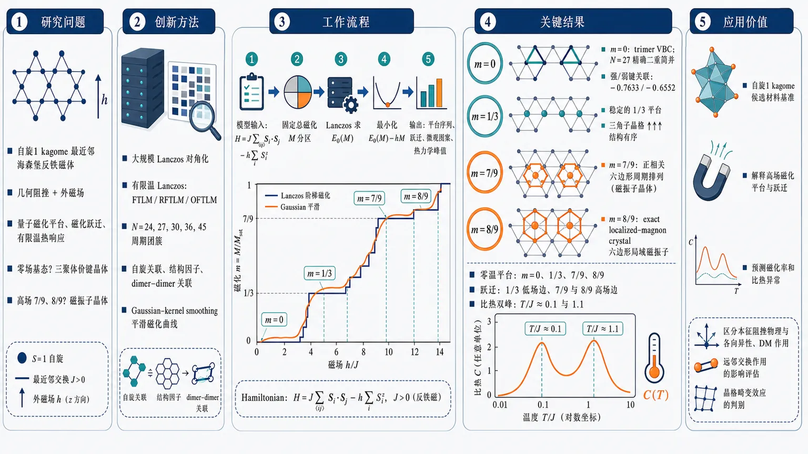
研究问题自旋1 kagome 最近邻海森堡反铁磁体在几何阻挫和外磁场下会形成哪些量子磁化平台、磁化跃迁和有限温热响应？尤其要澄清零场基态是否为三聚体价键晶体，以及高场 m=7/9、8/9 平台是否具有磁振子晶体结构。创新方法将大规模 Lanczos 对角化与有限温 Lanczos 方法结合：用 N=24、27、30、36、45 周期团簇追踪固定磁化扇区最低能量，用自旋关联、结构因子和 dimer–dimer 关联直接“拍出”平台态的空间图案；并用 Gaussian-kernel smoothing 把有限尺寸阶梯磁化曲线平滑成接近实验的连续曲线，突出隐藏的磁化跃迁。工作流程输入自旋1 kagome 最近邻反铁磁模型和外场哈密顿量 → 按固定总磁化 M 分区进行 Lanczos 求最低能量 E0(M) → 由 E0(M)-hM 最小化得到零温磁化曲线 → 对平台态计算键关联、结构因子、dimer–dimer 关联以识别三角形三聚化和六边形磁振子晶体 → 用 FTLM/RFTLM/OFTLM 计算磁化率、比热和有限温磁化曲线 → 输出平台序列、跃迁位置、微观图案和热力学峰值。关键结果零温磁化曲线出现 m=0、1/3、7/9、8/9 四个平台；m=0 是 trimer VBC，N=27 中有与旋转对称性破缺相关的精确二重简并，强弱键关联约为 -0.7633 与 -0.6552；m=8/9 是严格 exact localized-magnon crystal，m=7/9 的 dimer–dimer 关联显示周期排列的正相关六边形，呈 magnon-crystal 特征；磁化跃迁位于 m=1/3 平台低场边、m=7/9 和 m=8/9 平台高场边；比热出现双峰，约在 T/J≈0.1 和 T/J≈1.1。应用价值为自旋1 kagome 候选材料的高场磁化平台、磁化跃迁、磁化率和比热异常提供理想模型基准；可帮助判断真实 Ni²⁺、V³⁺ kagome 或相关化合物中观测到的平台是否来自本征 kagome Heisenberg 阻挫物理，还是受单离子各向异性、DM 相互作用、远邻交换或晶格畸变影响。第一部分：核心概览 (Overview)
自旋 1 kagome 最近邻海森堡反铁磁体的零温与有限温磁性得到系统数值刻画：零温磁化过程存在 m = 0、1/3、7/9、8/9 平台，其中 m = 0 为 trimer valence-bond crystal，m = 8/9 为严格的 exact localized-magnon crystal，m = 7/9 也呈 magnon-crystal 特征。大规模 Lanczos 与 FTLM 进一步揭示 m = 1/3 平台低温稳定、高场平台热熔化较快，以及比热在 T/J ≃ 0.1 与 T/J ≃ 1.1 附近的双峰结构。该工作为自旋 1 kagome 候选材料的高场磁化、磁化率与比热实验提供了理想模型基准。
---
第二部分：结构化快速回顾
《Quantum magnetism of the spin-1 kagome-lattice antiferromagnet》（None，）
背景
Kagome 几何阻挫可强烈抑制常规磁有序，并产生非平庸量子基态、磁化平台与磁化跃迁。自旋 1/2 kagome 已被广泛研究，但 自旋 1 kagome 反铁磁体在零场基态、高场平台微观结构、有限温热力学响应方面仍缺少系统基准。
方法
采用 large-scale Lanczos diagonalization 计算固定磁化扇区最低能量，研究 N = 24、27、30、36、45 周期边界团簇的零温磁化过程；采用 FTLM/RFTLM/OFTLM 计算 N = 21、24、27 团簇的磁化率、比热与有限温磁化曲线；通过 spin–spin correlations、spin structure factors、dimer–dimer correlations 解析平台态结构；用 Gaussian-kernel smoothing 辅助构造平滑零温磁化曲线。
结果
零温磁化过程出现 m = 0、1/3、7/9、8/9 平台；磁化跃迁位于 m = 1/3 平台低场边界、m = 7/9 平台高场边界、m = 8/9 平台高场边界。m = 0 平台为 trimer VBC，N = 27 出现与晶格对称性破缺相关的精确二重简并；m = 7/9 与 m = 8/9 为高场 magnon-crystal 型平台。比热显示双峰：低温峰约 T ≃ 0.1，高温峰约 T ≃ 1.1。
讨论
m = 8/9 平台由严格 localized magnons 构成，因此高场边界磁化跃迁在热力学极限中稳健；m = 7/9 平台的 dimer–dimer correlation 呈周期性六边形增强，暗示非严格但明显的 magnon-crystal order；m = 1/3 平台结构尚不唯一，q = 0 uud、√3×√3 uud 与部分 magnon-crystal-like 图案均有迹象。
局限
有限尺寸仍是核心限制，尤其 m = 1/3 平台结构无法由 N = 27 数据唯一确定；高场平台虽在 N = 36、45 有较强证据，但部分磁化跃迁仍主要通过有限尺寸趋势外推；理想模型未包含真实材料常见的 single-ion anisotropy、Dzyaloshinskii–Moriya interactions、further-neighbor interactions、lattice distortions。
结论
理想自旋 1 kagome 最近邻海森堡反铁磁体具有由低场 trimer VBC 与高场 magnon crystals 共同构成的丰富磁化过程，并在有限温显示清晰热力学特征。这些结果可作为解释自旋 1 kagome 候选材料磁化平台、比热异常与高场相变的理论基准。
---
第三部分：逐章节冷凝解析 (Section-by-Section Condensing)
Abstract
- Plateau hierarchy and microscopic assignments
零温磁化过程存在四个主要平台：m = 0、1/3、7/9、8/9，其中 m 是归一化磁化强度；m = 0 被识别为 trimer valence-bond-crystal state，高场 m = 7/9、8/9 被识别为 magnon crystals。摘要直接给出核心结果：*"The zero-temperature magnetization process exhibits plateaus at m = 0, 1/3, 7/9, and 8/9, where m is the normalized magnetization."*；平台物理图像为：*"The m = 0 plateau is identified as a trimer valence-bond-crystal state, while the high-field plateaus at m = 7/9 and 8/9 are identified as magnon crystals."*
- Exact localized-magnon crystal at m = 8/9
m = 8/9 平台不是普通数值识别的平台，而是对应严格可构造的 exact localized-magnon crystal state，具有更强理论确定性：*"In particular, the m = 8/9 plateau corresponds to the exact localized-magnon crystal state."*
- Magnetization jumps from smoothed zero-temperature curve
通过 Gaussian-kernel smoothing method 构造的平滑零温磁化曲线显示三处跃迁：m = 1/3 平台低场边缘、m = 7/9 与 8/9 平台高场边缘。对应表述为：*"A smoothed zero-temperature magnetization curve constructed using the Gaussian-kernel smoothing method indicates magnetization jumps at the lower-field edge of the m = 1/3 plateau and at the upper-field edges of the m = 7/9 and 8/9 plateaus."*
- Finite-temperature thermodynamics and experimental relevance
有限温比热呈 double-peak structure，峰位约 T/J ≃ 0.1 与 T/J ≃ 1.1；低温峰可能与 trimer VBC ordering 相关。有限温磁化中 m = 1/3 平台低温仍可见，高场平台迅速被热效应抹平：*"At finite temperatures, the specific heat exhibits a double-peak structure with peaks around T/J ≃ 0.1 and T/J ≃ 1.1, and the low-temperature peak may be related to trimer valence-bond-crystal ordering."*；*"the m = 1/3 plateau remains visible at low temperatures, whereas the high-field plateaus are rapidly smeared out by thermal effects."*
---
1 Introduction
- Kagome antiferromagnet as a frustration paradigm
Kagome-lattice quantum antiferromagnet 是研究几何阻挫诱导非常规量子态的典型平台；几何阻挫压制常规磁有序，并让许多近简并态竞争。核心背景为：*"The kagome-lattice quantum antiferromagnet provides a paradigmatic platform for exploring unconventional quantum states arising from geometric frustration."*；机制描述为：*"conventional magnetic ordering is strongly suppressed, and the competition among many nearly degenerate states can lead to nontrivial ground states."*
- Magnetic fields expose plateaus and jumps
在外磁场中，阻挫量子磁体可出现 magnetization plateaus 与 magnetization jumps，这些现象体现 frustration、quantum fluctuations、magnetic field 的耦合。关键表述为：*"frustrated quantum magnets can also exhibit magnetization plateaus and magnetization jumps, which are characteristic signatures of the interplay between frustration, quantum fluctuations, and magnetic field."*
- Spin-1/2 kagome benchmark is mature but spin-1 remains less resolved
自旋 1/2 kagome 已由 ED、DMRG、iPEPS、VMC 系统研究，理论上讨论过 m = 0、1/9、1/3、5/9、7/9 平台；候选态包括 Z₂ spin liquids、U(1) spin liquids、VBCs、magnon-crystal states。原文列举为：*"Using numerical methods such as exact diagonalization, density-matrix renormalization group (DMRG), infinite projected entangled-pair states (iPEPS), and variational Monte Carlo (VMC), its ground-state properties, magnetization process, and magnetization plateaus have been investigated in detail."*；平台序列为：*"Magnetization plateaus at normalized magnetizations m = M/Msat = 0, 1/9, 1/3, 5/9, and 7/9 ... have been discussed theoretically."*
- Spin-1 kagome expected to host distinct physics
自旋 1 kagome 不能简单看作自旋 1/2 结果的放大版本；整数自旋、局域希尔伯特空间更大、量子涨落形式不同，可能产生不同场诱导相：*"In contrast, the spin-1 kagome-lattice antiferromagnet is expected to exhibit quantum states and field-induced phases that are distinct from those of the spin-1/2 system."*
- Zero-field candidate states include hexagonal singlet solid and trimer VBC
零场基态已提出多个 gapped nonmagnetic states，尤其 hexagonal singlet solid 与 trimer VBC。原文为：*"For the zero-field ground state, several gapped nonmagnetic states have been discussed as candidates, including the hexagonal singlet solid and the trimer VBC."*
- Unresolved problems before this study
关键未解问题包括：m = 1/3 与 7/9 平台微观结构、磁化跃迁是否存在、有限温 magnetic susceptibility、specific heat、magnetization curves。原文明确列出：*"several issues remain unresolved, including the microscopic structures of the m = 1/3 and 7/9 plateaus, the possible presence of magnetization jumps, and thermodynamic responses at finite temperatures, such as the magnetic susceptibility, specific heat, and magnetization curves."*
- Experimental motivation from spin-1 kagome materials
含 Ni²⁺ 与 V³⁺ 的 kagome 或 kagome-related 化合物近年来被合成和测量；在 V³⁺ 氟化物 Cs₂KV₃F₁₂、Cs₂NaV₃F₁₂、Rb₂NaV₃F₁₂ 中报道过 m = 1/3 与 2/3 平台。原文证据为：*"Kagome-lattice and kagome-related compounds containing spin-1 ions, such as Ni2+ and V3+, have been synthesized and investigated."*；*"magnetization plateaus at m = 1/3 and 2/3 have been reported in the V3+-based spin-1 kagome-lattice fluorides Cs2KV3F12, Cs2NaV3F12, and Rb2NaV3F12."*
- Ideal nearest-neighbor model as a benchmark against material perturbations
真实材料常受 single-ion anisotropy、Dzyaloshinskii–Moriya interactions、further-neighbor interactions、lattice distortions 影响；理想最近邻模型的热力学与高场磁化结果可作为判断实验是否接近理想 kagome Heisenberg physics 的参照。关键表述为：*"material-specific perturbations that are absent in the ideal nearest-neighbor Heisenberg model often play important roles."*；*"These include single-ion anisotropy, Dzyaloshinskii–Moriya interactions, further-neighbor interactions, and lattice distortions."*
- Computational strategy and main outputs
研究使用 large-scale Lanczos diagonalization 与 FTLM，计算固定磁化扇区最低能量、磁化率、比热、有限温磁化曲线，并分析相关函数。方法概括为：*"we systematically investigate the zero-temperature and finite-temperature field-induced properties ... using large-scale Lanczos diagonalization and the finite-temperature Lanczos method (FTLM)."*；相关函数分析为：*"we analyze spin–spin correlations, spin structure factors, and dimer–dimer correlations."*
- Headline findings summarized in the introduction
主要结果包括 m = 0、1/3、7/9、8/9 平台、三处磁化跃迁、N = 27 的 trimer VBC 精确简并、高场 magnon crystals、比热双峰与平台热熔化。原文总结为：*"the zero-temperature magnetization process exhibits magnetization plateaus at m = 0, 1/3, 7/9, and 8/9."*；*"Magnetization jumps are observed at the lower-field edge of the m = 1/3 plateau, the upper-field edge of the m = 7/9 plateau, and the upper-field edge of the m = 8/9 plateau."*
---
2 Model and numerical methods
2.1 Model and zero-temperature Lanczos calculations
- Hamiltonian and units
模型为自旋 1 kagome 最近邻海森堡反铁磁体，外场沿 z 方向耦合，总哈密顿量
[
H=Jsumłₐₙgₗₑ ᵢ,ⱼåₙgₗₑSᵢḑotSⱼ₋ₕsumᵢ Sᵢ^z
]
其中 J > 0，并设 J = 1 为能量单位。原文为：*"The Hamiltonian is given by ℋ = J∑⟨i,j⟩ Si · Sj − h∑i Siz, where Si is the spin-1 operator at site i, J > 0 is the nearest-neighbor antiferromagnetic exchange interaction, and h is the external magnetic field."*；*"Hereafter, we set J = 1 as the unit of energy."*
- Magnetization normalization for spin-1 system
总磁化 M = ∑ᵢ Sᶻᵢ，自旋 1 系统饱和磁化 Mₛₐₜ = N，归一化磁化 m = M/Mₛₐₜ。对应引述：*"The total magnetization is defined as M = ∑i Siz, and the saturation magnetization is Msat = N for the spin-1 system, where N is the number of sites."*
- Zero-temperature magnetization from sector energies
每个固定磁化扇区最低能量 E₀(M) 决定零温磁化过程；外场下能量为 E(M,h)=E₀(M)-hM，对 M 最小化得到基态磁化。原文为：*"The zero-temperature magnetization process is determined from the lowest energy E0(M) in each fixed-magnetization sector."*；*"at each value of h, the ground state is obtained by minimizing E(M,h) with respect to M."*
- Cluster sizes and high-magnetization emphasis
零温 Lanczos 使用周期边界 kagome 团簇 N = 24、27、30、36、45；对于 N ≥ 30，主要关注高磁化区域。原文为：*"we use clusters with N = 24, 27, 30, 36, and 45 sites."*；*"For clusters with N ≥ 30, we mainly focus on the high-magnetization region."*
2.2 Finite-temperature Lanczos calculations
- FTLM sector decomposition by conserved magnetization
总磁化 M 守恒，因此 FTLM 在每个固定磁化扇区分别进行。原文为：*"In the present model, the total magnetization M is a conserved quantity. We therefore perform FTLM calculations separately in each fixed-magnetization sector."*
- Finite-field partition function construction
固定扇区零场配分函数 Z_M(T) 通过外场因子 eβhM 汇总为
[
Z(T,h)=sum_M eβ hMZ_M(T)
]
磁化热平均
[
M(T,h)=fracsum_M M eβ hMZ_M(T)Z(T,h)
]
原文为：*"Since the magnetic field couples to the total magnetization as −hM, the total partition function and the thermal expectation value of the magnetization in a magnetic field are given by..."*
- Stochastic trace sampling and Krylov approximation
FTLM 用随机向量抽样迹，并用 Lanczos 生成的 Krylov subspace 近似谱分解；公式中涉及 Nₛₜ₍M)、随机向量数 R、Krylov 维数 N_L。原文为：*"the trace in each fixed-magnetization sector is approximated by stochastic sampling with random vectors, and the spectral decomposition is approximated in the Krylov subspace generated by the Lanczos procedure."*
- FTLM cluster sizes and improved schemes
有限温计算使用 N = 21、24、27 团簇；N = 27 使用 RFTLM，N = 21、24 使用 OFTLM，二者统称 FTLM。原文为：*"we apply FTLM to clusters with N = 21, 24, and 27 sites and calculate the magnetic susceptibility, specific heat, and finite-temperature magnetization curves."*；*"we use the replaced finite-temperature Lanczos method (RFTLM) for the N = 27 cluster and the orthogonalized finite-temperature Lanczos method (OFTLM) for the N = 21 and 24 clusters."*
2.3 Correlation functions
- Three diagnostics for plateau microstructure
平台态结构通过 nearest-neighbor spin–spin correlations、spin structure factors、dimer–dimer correlations 三类量诊断。原文为：*"To investigate the microscopic structures of the magnetization-plateau states, we calculate nearest-neighbor spin–spin correlations, spin structure factors, and dimer–dimer correlations."*
- Longitudinal spin structure factor with connected correlations
纵向结构因子定义为连通关联
[
S^z(mathbf q)=frac1Nsumᵢⱼeⁱmathbf qḑot⁽mathbf rᵢ₋mathbf rⱼ₎
(łangle Sᵢ^zSⱼ^zångle-łangle Sᵢ^zånglełangle Sⱼ^zångle)
]
原文为：*"The longitudinal spin structure factor is defined as..."*，该定义去除平均磁化背景，更适合识别平台态中的空间调制。
- Reduced vs extended Brillouin zone nuance
Kagome 晶格有三站点原胞，因此 q = 0 order 在 Bravais 晶格意义上为零波矢；若在所有站点构成的 extended Brillouin zone 表示，谱权重不一定只出现在 q = 0。原文为：*"the so-called q = 0 order refers to an ordering pattern with wave vector q = 0 in the Bravais lattice with a three-site unit cell."*；*"the corresponding spectral weight does not necessarily appear only at q = 0."*
- Bond correlation for trimer order
最近邻键关联定义为 Bᵢⱼ = ⟨Sᵢ·Sⱼ⟩，用于检查零磁化态中的 trimer order。原文为：*"The nearest-neighbor spin–spin correlation, hereafter referred to as the bond correlation, is defined as Bij = ⟨Si · Sj⟩."*；*"We use this quantity to examine the trimer order in the zero-magnetization state."*
- Dimer–dimer correlation for magnon crystals
Dimer–dimer correlation
[
Dᵢⱼ,ₖₗ=łangle(mathbf Sᵢḑotmathbf Sⱼ₎₍mathbf Sₖḑotmathbf Sₗ₎ångle-BᵢⱼBₖₗ
]
用于识别 m = 7/9 平台的 magnon-crystal state。原文为：*"This quantity is used to identify the magnon-crystal state in the m = 7/9 plateau."*
2.4 Magnetization curves using a Gaussian-kernel smoothing method
- Motivation: finite-size staircases
有限体系零温磁化曲线因总磁化量子化而呈离散阶梯；平滑方法用于从有限尺寸数据把握整体趋势。原文为：*"The zero-temperature magnetization curves of finite-size systems exhibit discrete staircase structures because the total magnetization is quantized."*
- Kernel representation of energy density
离散能量密度 e(m)=E₀(M)/N 被拟合为三次多项式加对称 Gaussian kernel 项，核宽由超参数 ℓ 控制。原文为：*"we approximate the energy density obtained in discrete magnetization sectors, e(m) = E0(M)/N, by a smooth function and construct a continuous e-m curve."*；*"ℓ is a hyperparameter controlling the kernel width."*
- Smoothed magnetization by minimizing eker(m) − hm
平滑能量函数 eₖₑᵣ₍ₘ₎ 给定后，对每个外场 h 最小化 eₖₑᵣ₍ₘ₎ − hm，得到连续磁化曲线。原文为：*"For the obtained eker(m), we minimize eker(m) − hm with respect to m at each magnetic field h."*
- Plateau and jump identification remains Lanczos-based
Gaussian smoothing 是辅助可视化工具，不是主要判据；平台和跃迁识别主要依赖 Lanczos 结果。原文强调：*"This Gaussian-kernel smoothing method is used as a tool to make the overall magnetization process easier to grasp from the staircase-like magnetization curves obtained for finite-size systems."*；*"The identification of magnetization plateaus and magnetization jumps is mainly based on the results obtained by the Lanczos calculations."*
- Benchmark validation of smoothing method
该方法还在 spin-1/2 one-dimensional Heisenberg chain 与 spin-1/2 triangular-lattice Heisenberg antiferromagnet 上测试；分别与精确解、高精度已有结果吻合。原文为：*"we also apply the same method to the spin-1/2 one-dimensional Heisenberg chain and the spin-1/2 triangular-lattice Heisenberg antiferromagnet."*；*"the resulting magnetization curves agree well with the exact solution for the one-dimensional chain and with existing high-accuracy results for the triangular-lattice case."*
---
3 Results and discussion
3.1 Magnetization process
- Finite-size magnetization curves and plateau identification strategy
零温磁化曲线来自 N = 24、27、30、36、45 Lanczos 计算；有限体系呈阶梯结构，因此平台与跃迁通过多尺寸曲线结合相关函数分析识别。原文为：*"Figure 2(a) shows the zero-temperature magnetization curves ... obtained by Lanczos calculations."*；*"we identify magnetization plateaus and magnetization jumps by combining the magnetization curves for several cluster sizes with the correlation-function analyses presented below."*
- Low-field plateaus at m = 0 and m = 1/3
低场出现 m = 0 与 m = 1/3 平台；m = 0 后续由键关联确定为 trimer VBC。m = 1/3 在 N = 24、27 中均有较宽平坦区，表明平台稳定。原文为：*"plateau structures appear at m = 0 and 1/3 in the low-field region."*；*"at m = 1/3, relatively wide flat regions are observed for both the N = 24 and 27 clusters, indicating the presence of a stable magnetization plateau."*
- High-field plateaus require N multiple of 9
因自旋 1 系统 Mₛₐₜ = N，准确包含 m = 7/9、8/9 扇区要求 N 为 9 的倍数；因此高场放大图重点使用 N = 27、36、45。原文为：*"Since Msat = N for the spin-1 system, the system size must be a multiple of 9 in order to include the magnetization sectors corresponding exactly to m = 7/9 and 8/9."*
- m = 8/9 as exact localized-magnon crystal
m = 8/9 平台为饱和前的严格 localized-magnon crystal；localized magnons 无重叠排列形成 magnon crystal，并导致饱和前磁化跃迁。原文为：*"the m = 8/9 plateau corresponds to the exact localized-magnon crystal state appearing just below the saturation magnetization."*；*"When these localized magnons are arranged without spatial overlap, a magnon-crystal state and a magnetization jump appear just below the saturation magnetization."*
- m = 7/9 as nontrivial magnon-crystal plateau
m = 7/9 扇区在 N = 36、45 中相对邻近磁化扇区拥有更宽有限磁场区间，后续 dimer–dimer correlation 支持其 magnon-crystal character。原文为：*"the m = 7/9 sector appears over a relatively wide magnetic-field range compared with the neighboring magnetization sectors, especially for the N = 36 and 45 clusters."*；*"the dimer–dimer correlations discussed later support the magnon-crystal character of this state."*
- Lower-edge jump of m = 1/3 plateau
在 N = 24、27 中，m = 1/3 平台低场边界磁化快速上升，被解释为热力学极限一阶行为的有限尺寸先兆。原文为：*"the magnetization increases steeply at the lower-field edge of the m = 1/3 plateau for both the N = 24 and 27 clusters."*；*"we therefore regard this steep magnetization change as a finite-size precursor to first-order behavior in the thermodynamic limit."*
- Upper-edge jump of m = 7/9 plateau
m = 7/9 平台高场边界在 N = 36、45 出现跳过磁化扇区现象；N = 27 未见该行为，因此尺寸依赖明显，但大团簇趋势支持跃迁可能延续到热力学极限。原文为：*"Although this behavior is not seen for the N = 27 cluster, the larger N = 36 and 45 clusters show a skipped magnetization sector when the magnetization leaves the m = 7/9 plateau."*；*"may persist in the thermodynamic limit."*
- Analogy to spin-1/2 m = 5/9 plateau
自旋 1 的 m = 7/9 平台类似自旋 1/2 kagome 的 m = 5/9 magnon-crystal 平台；后者 DMRG 与 ED 结果也显示高场边界跃迁。原文为：*"The magnetization jump at the upper-field edge of the m = 7/9 plateau is reminiscent of the behavior at the upper-field edge of the m = 5/9 plateau in the spin-1/2 kagome-lattice antiferromagnet."*
- Rigorous upper-edge jump at m = 8/9
m = 8/9 平台高场边界跃迁由 exact localized-magnon crystal 严格保证，因此在热力学极限中存在。原文为：*"For the m = 8/9 plateau, the magnetization jump at its upper-field edge is a rigorous consequence of the exact localized-magnon crystal state and therefore persists in the thermodynamic limit."*
- Smoothed curve preserves plateaus and reveals jumps
Gaussian-kernel 平滑曲线保留 m = 0、1/3、7/9、8/9 平台，并显示 m = 1/3 低场边、m = 7/9 高场边以及 m = 8/9 高场边跃迁；跃迁位置未在拟合前强加。原文为：*"m = 0, 1/3, 7/9, and 8/9 are treated as candidate plateau positions. In contrast, the positions and presence of magnetization jumps are not assumed in advance."*；*"Magnetization jumps also appear near the lower-field edge of the m = 1/3 plateau and the upper-field edge of the m = 7/9 plateau."*
---
3.2 Magnetic structures of plateau states
#### 3.2.1 Trimer VBC at m = 0
- Candidate zero-field states and chosen diagnostic
零场基态候选包括 hexagonal singlet solid 与 trimer VBC；研究通过 Lanczos 基态的 bond correlations 识别微观结构。原文为：*"several gapped nonmagnetic states have been proposed as candidates, including the hexagonal singlet solid and the trimer VBC."*；*"we calculate bond correlations for the ground state obtained by the Lanczos method and analyze the microscopic structure of the zero-magnetization state."*
- Exact twofold degeneracy in N = 27
N = 27 团簇的 m = 0 基态出现精确二重简并，对应 trimer VBC 预期的旋转对称性破缺。原文为：*"For the N = 27 cluster, we obtain an exact twofold degeneracy in the m = 0 ground state."*；*"This degeneracy is associated with the rotational-symmetry breaking expected for the trimer VBC state."*
- Infinitesimal symmetry-breaking field selects one component
为显示一个对称性破缺分量，键关联计算中把 up triangles 上交换从 J = 1 增至 J = 1 + 10⁻⁵。原文为：*"the exchange interactions on the bonds forming the up triangles are increased from J = 1 to J = 1 + 10−5."*
- Bond-correlation values demonstrate trimerization
N = 27 的 m = 0 态中，强反铁磁键集中于 up triangles；强、弱键关联分别为 −0.7633 与 −0.6552，显示键关联非均匀并形成三聚化图案。原文为：*"Strong antiferromagnetic bond correlations are concentrated on the up triangles of the kagome lattice, with bond-correlation values −0.7633 and −0.6552 for the strong and weak bonds, respectively."*；*"This result indicates that the bond correlations are not uniform over all bonds but form a trimerized pattern."*
- Symmetry character: translationally invariant but lattice-nematic
该图案保持平移对称性，但区分 up/down triangles，将六重旋转对称性降为三重，具有 lattice-nematic character。原文为：*"This pattern preserves the translational symmetry of the lattice, while it distinguishes up and down triangles and reduces the sixfold rotational symmetry to threefold rotational symmetry."*；*"the m = 0 state can be understood as the trimer VBC state with lattice-nematic character."*
- Thermodynamic implication of degeneracy and pattern
精确二重简并与键关联空间图案强烈支持 trimer VBC 在热力学极限稳定，而 m = 0 平台不只是有限尺寸能隙。原文为：*"the zero-magnetization plateau in the present model is not merely due to a finite-size gap, but can be understood as a nonmagnetic state accompanied by trimer order."*；*"strongly support the possibility that the trimer VBC state remains stable in the thermodynamic limit."*
#### 3.2.2 Magnon-crystal states at m = 7/9 and 8/9
- m = 8/9 requires no additional correlation calculation
m = 8/9 平台波函数已知，且 Lanczos 磁化过程显示其高场边界向饱和磁化跃迁，因此不再额外计算相关函数。原文为：*"Since the wave function of this state is already known, we do not perform additional correlation-function calculations for the m = 8/9 state in this study."*
- m = 7/9 dimer–dimer correlations show periodic positive hexagons
N = 36 的 m = 7/9 态 dimer–dimer correlation 中，正相关六边形周期排列，区别于空间均匀高磁化态；说明 magnons 局域在特定六边形并规则排列。原文为：*"The correlations exhibit a periodic pattern in which hexagons with positive correlations are regularly arranged."*；*"indicates that magnons are strongly localized on specific hexagons and form a regular spatial arrangement."*
- m = 7/9 is magnon-crystal but not exact localized-magnon crystal
m = 7/9 与严格 m = 8/9 exact localized-magnon crystal 不同，但仍可解释为 magnon-crystal state。原文为：*"although the m = 7/9 plateau is different from the exact localized-magnon crystal state at m = 8/9, it can also be interpreted as a magnon-crystal state."*
- Upper-edge jump as destabilization of magnon-crystal order
m = 7/9 高场边界磁化跃迁自然解释为 magnon-crystal order 失稳并发生一阶转变。原文为：*"it is natural to interpret the magnetization jump at the upper-field edge of the m = 7/9 plateau as arising from the destabilization of this magnon-crystal order and the resulting first-order transition to another magnetization state."*
- Analogy with spin-1/2 kagome m = 5/9
m = 7/9 的六边形周期增强结构与自旋 1/2 kagome m = 5/9 高磁化平台类似。原文为：*"This magnon-crystal structure of the m = 7/9 plateau closely resembles the structure reported for high-magnetization plateaus in the spin-1/2 kagome-lattice antiferromagnet."*；*"for the m = 5/9 plateau in the spin-1/2 system, a periodic arrangement of hexagons with strong correlations has been reported in the dimer–dimer correlations."*
- Unified high-field picture
m = 7/9 与 m = 8/9 平台可统一理解为高场 magnon-crystal states，其稳定机制不同于低场 trimer VBC。原文为：*"the high-magnetization plateaus at m = 7/9 and 8/9 can be understood in a unified manner as magnon-crystal states."*；*"They are field-induced phases stabilized by a mechanism distinct from that of the trimer VBC state in the low-field region."*
#### 3.2.3 Magnetic structure of the m = 1/3 plateau
- m = 1/3 is prominent but structurally ambiguous
m = 1/3 平台在零温磁化过程中具有较宽磁场范围，是该模型最显著的平台之一。原文为：*"the m = 1/3 plateau is stabilized over a relatively wide magnetic-field range in the zero-temperature magnetization process."*
- Candidate structures include uud and magnon-crystal-like states
三角单元阻挫磁体的 m = 1/3 平台常与 up-up-down (uud) 结构相关；kagome 中候选包括 q = 0 uud、√3×√3 uud 与类似 m = 7/9 的 magnon-crystal-like 态。原文为：*"the m = 1/3 plateau is often associated with an up-up-down (uud) magnetic structure."*；*"natural candidates include the q = 0 uud structure preserving the three-site unit cell, the √3×√3 uud structure with a larger periodicity, and a magnon-crystal-like state similar to that found in the m = 7/9 plateau."*
- Spin structure factor in N = 27 gives comparable q1 and q2 intensities
N = 27 的 m = 1/3 态中，结构因子在对应 q = 0 uud 的 q₁ 与对应 √3×√3 uud 的 q₂ 位置均增强；数值为 Sᶻ(q₁)=1.996、Sᶻ(q₂)=1.870，q₁ 略大。原文为：*"The corresponding intensities are Sz(q1) = 1.996 and Sz(q2) = 1.870, indicating that the intensity at q1 is slightly larger than that at q2."*
- Dimer–dimer correlations show only partial magnon-crystal-like pattern
dimer–dimer correlations在部分六边形上正相关增强，暗示可能有 magnon-crystal character；但理想 magnon crystal 预期两个非参考六边形强正相关，实际只在一个六边形上显著，因此证据不充分。原文为：*"positive correlations are enhanced on some hexagons, suggesting possible magnon-crystal character."*；*"strong positive correlations appear only on one of them. Thus, this pattern alone is not sufficient to conclude that a fully developed magnon-crystal structure is realized."*
- No unique determination from present finite-size data
q = 0 uud 与 √3×√3 uud 的结构因子增强相近，dimer 图案又只部分支持 magnon crystal，因此 m = 1/3 平台微观结构无法由当前有限尺寸数据唯一确定。原文为：*"the microscopic structure of the m = 1/3 plateau cannot be uniquely determined from the present finite-size data."*
- Consistency with previous iPEPS ambiguity
既有 iPEPS 研究也提出过 q = 0 uud 与 √3×√3 uud 两种候选，说明领域内尚无共识。原文为：*"iPEPS studies have proposed both the q = 0 uud structure and the √3×√3 uud structure as candidates for the m = 1/3 plateau."*；*"a complete consensus on the magnetic structure of this plateau has not yet been reached."*
---
3.3 Thermodynamic properties
- Experimental motivation for finite-temperature observables
magnetic susceptibility、specific heat、finite-temperature magnetization curves 是常规实验可测量量，因此可作为自旋 1 kagome 材料的理论基准。原文为：*"Systematic calculations of the magnetic susceptibility, specific heat, and finite-temperature magnetization curves ... are important for future comparisons with candidate spin-1 kagome-lattice materials."*；*"these quantities are routinely measured in many magnetic compounds."*
#### 3.3.1 Magnetic susceptibility and specific heat
- Susceptibility maximum near T ≃ 0.4
FTLM 对 N = 21、24、27 计算的每站点磁化率 χ/N 随降温先增加，在 T ≃ 0.4 附近出现宽峰，随后低温快速下降；宽峰反映短程反铁磁关联发展。原文为：*"it exhibits a broad maximum around T ≃ 0.4, reflecting the development of short-range antiferromagnetic correlations, and then rapidly decreases in the low-temperature region."*
- Small finite-size effects in susceptibility
对 T ≳ 0.4，N = 21、24、27 曲线几乎重合；N = 24、27 在几乎全温区吻合，表明磁化率有限尺寸效应较小。原文为：*"For T ≳ 0.4, the results for N = 21, 24, and 27 almost overlap, indicating that the size dependence is small in this temperature range."*；*"the results for the N = 24 and 27 clusters agree well over almost the entire temperature range."*
- Specific heat double peak at T ≃ 0.1 and T ≃ 1.1
每站点比热 c = C/N 对所有 N = 21、24、27 团簇均显示双峰：尖锐低温峰约 T ≃ 0.1，宽高温峰约 T ≃ 1.1。原文为：*"The most characteristic feature is the appearance of a double-peak structure for all cluster sizes, N = 21, 24, and 27."*；*"A sharp low-temperature peak appears around T ≃ 0.1, while a broad high-temperature peak is formed around T ≃ 1.1."*
- Physical interpretation of the two specific-heat peaks
高温宽峰归因于最近邻反铁磁交换导致的短程自旋关联；低温尖峰可能反映 trimer VBC state 形成。原文为：*"The broad high-temperature peak can be attributed to the development of short-range spin correlations associated with the nearest-neighbor antiferromagnetic exchange interaction."*；*"the sharp low-temperature peak may reflect the formation of the trimer VBC state."*
---
第四部分：深度理解与语言支持 (Understanding & Nuance)
1. 术语解析
Geometric frustration
Geometric frustration 指晶格几何结构使局域相互作用无法同时满足。kagome 由角共享三角形组成，反铁磁相互作用希望相邻自旋反平行，但三角形上三条键无法同时达到两两反平行。语境中它不是普通“复杂性”，而是产生大量低能近简并态、抑制常规 Néel 有序并增强量子涨落的根本机制。对应表达：*"unconventional quantum states arising from geometric frustration."*
Magnetization plateau
Magnetization plateau 指外场变化时磁化强度在某个分数值保持不变，表明体系存在有限能隙，磁化量子数在一段磁场范围内稳定。这里的平台包括 m = 0、1/3、7/9、8/9。它不是实验曲线中的普通“平缓”，而是量子多体能谱中某一固定磁化扇区在有限场区间内持续为基态。
Magnetization jump
Magnetization jump 指磁场微小变化导致基态磁化不连续改变，通常对应一阶相变或局域磁振子晶体失稳。这里 m = 8/9 高场边界的 jump 是严格 localized-magnon crystal 的结果，而 m = 7/9 jump 更偏向数值证据支持的热力学极限推断。
Trimer valence-bond crystal
Trimer VBC 是一种非磁性量子有序态，自旋主要在三角形单元内形成强关联三聚体。这里的关键不是单个三角形有强键，而是整个晶格上 up triangles 与 down triangles 被区分，形成破坏旋转对称性但保持平移对称性的 lattice-nematic 图案。N = 27 的精确二重简并与 −0.7633 / −0.6552 键关联差异是核心证据。
Localized-magnon crystal / magnon crystal
Localized magnons 是可局域在 kagome 六边形等局域结构上的精确单磁振子本征态；多个无重叠 localized magnons 周期排列形成 localized-magnon crystal。m = 8/9 是严格精确态；m = 7/9 则是通过 dimer–dimer correlation 识别出的 magnon-crystal-like 有序态，不一定拥有完全精确波函数。
---
2. 疑难查证
为什么 m = 8/9 平台“严格”，而 m = 7/9 平台只是强证据？
从饱和态往下翻转一个自旋可视为引入一个 magnon。kagome 晶格的平带特性允许 magnon 被严格局域在六边形附近，并通过相位干涉避免向外扩散。若这些 localized magnons 彼此不重叠，就能构造精确多体本征态。m = 8/9 正好对应最大密度不重叠 localized magnons 的晶体，因此平台和饱和前磁化跃迁可严格推出。
m = 7/9 需要更多 magnons，局域对象可能相互影响，无法简单用已知无重叠 localized-magnon 精确构造证明。因此只能依赖 Lanczos 能量区间、跳过磁化扇区、dimer–dimer correlation 的周期性六边形增强来判断其 magnon-crystal character。
为什么 m = 1/3 平台结构难以确定？
m = 1/3 位于中等磁场，不像高场平台那样可从饱和态附近的稀薄 magnons 理解，也不像零场平台可由强键三聚化直接识别。其候选态之间能量可能非常接近：
- q = 0 uud：三站点原胞内两上、一下；
- √3×√3 uud：更大周期的两上、一下排列；
- magnon-crystal-like state：六边形局域关联增强。
N = 27 数据中 Sᶻ(q₁)=1.996 与 Sᶻ(q₂)=1.870 差距很小，说明 q = 0 与 √3×√3 特征竞争；dimer–dimer correlation 又只显示部分六边形增强，不能确认为完整 magnon crystal。因此有限尺寸、边界条件与候选态近简并共同导致结构判断不唯一。
为什么比热有两个峰？
高温峰 T ≃ 1.1 接近交换能标 J = 1，通常对应局域短程反铁磁关联建立；这类能量释放较宽，因此峰较宽。低温峰 T ≃ 0.1 则远低于交换能标，更可能对应低能集体自由度冻结或离散对称性相关的有序化，这里与 trimer VBC ordering 相关。换言之，高温峰是“局域关联形成”，低温峰是“更精细的空间有序结构形成”。
---
第五部分：创新评估与关联 (Synthesis & Novelty)
1. 创新性判断
从零温平台序列到有限温实验基准的系统闭环
过去关于自旋 1 kagome 的研究主要集中在零场候选基态或部分磁化平台；这里同时给出 零温磁化过程、平台微观结构、磁化跃迁、有限温磁化率、比热、有限温磁化曲线，形成完整的理想模型基准。特别是有限温 FTLM 数据可直接对应实验测量，而不只是基态理论分类。
m = 7/9 平台的 magnon-crystal character 得到明确数值支持
既有认识中 m = 8/9 localized-magnon crystal 较清楚，而 m = 7/9 的微观结构更不确定。通过 N = 36 dimer–dimer correlation 发现正相关六边形周期排列，明确支持 m = 7/9 也是 magnon-crystal 型平台。这一结果把高场 m = 7/9 与 m = 8/9 统一到同一物理框架。
磁化跃迁位置得到更清晰归纳
三处磁化跃迁被系统识别：
- m = 1/3 平台低场边界；
- m = 7/9 平台高场边界；
- m = 8/9 平台高场边界。
其中 m = 8/9 跃迁严格来自 localized-magnon crystal；m = 7/9 跃迁被解释为 magnon-crystal order 失稳；m = 1/3 低场跃迁与此前 iPEPS 发现的低场侧 jump 倾向相呼应。
N = 27 的 trimer VBC 精确二重简并是关键新证据
零磁化 trimer VBC 不是只由键强弱图案推断；N = 27 周期团簇出现与旋转对称性破缺相关的精确二重简并，并在微小扰动下显示 up-triangle 强键图案。该证据比单纯观察能隙更强，支持零磁化平台对应稳定非磁性 VBC 态。
Gaussian-kernel smoothing 提供有限尺寸阶梯曲线的新可视化工具
零温有限尺寸磁化曲线天然呈阶梯状，直接读出热力学趋势困难。Gaussian-kernel smoothing 通过平滑能量密度并最小化 eₖₑᵣ₍ₘ₎ − hm 给出整体磁化曲线；平台位置作为候选输入，但跃迁位置不预设。该方法不是主要判据，却能把多尺寸 Lanczos 数据转化为更接近实验曲线的可视化结果。
解决的前人空白
主要解决或推进了四类问题：
- m = 7/9 平台微观结构：由模糊高场平台推进为 magnon-crystal 解释；
- 磁化跃迁是否存在及位置：三处跃迁被系统定位；
- 有限温热力学响应缺口：给出 χ、C、C/T 与有限温磁化曲线的基准；
- 理想模型与真实材料比较基础：为含 Ni²⁺、V³⁺ 自旋 1 kagome 候选材料判断各向异性、DM 相互作用、晶格畸变等非理想效应提供参照。
-
16
📊 含图深析
📄 摘要：用行列式量子蒙特卡洛研究半填充 Hubbard 模型在对角压缩 kagome 晶格上的相行为，并引入随距离指数衰减的长程跃迁 t(r)=t0 exp(-r/r0) 描述键长变化。随晶格角 θ 和相互作用 U 改变，双占据、压缩率与自旋关联显示子晶格分化；θ 约大于 52° 时 A 子晶格出现更强局域化和反铁磁倾向。
💡 亮点：几何压缩让 kagome Hubbard 模型出现明显子晶格分化和轨道选择性莫特行为。长程跃迁的 DQMC 处理更贴近真实键长畸变下的电子关联。
📖 展开分析 + 配图
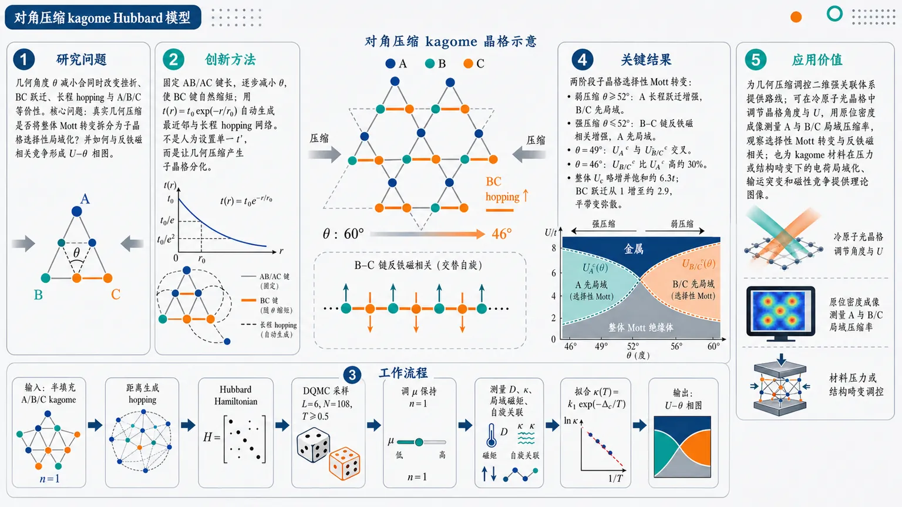
研究问题对角压缩 kagome 晶格中，几何角度 θ 减小会同时改变挫折、BC 键跃迁、长程 hopping 和 A/B/C 子晶格等价性；核心问题是：这种真实几何压缩是否会把原本整体性的 Mott 转变拆分成“子晶格选择性局域化”，并如何与反铁磁相关竞争形成 U–θ 相图。创新方法提出“对角压缩 kagome Hubbard 模型”：固定 AB/AC 键长，逐步减小晶格夹角 θ，使 BC 键自然缩短；再用距离指数衰减跃迁 t(r)=t0 exp(-r/r0) 自动生成最近邻与长程 hopping 网络。Aha 点是：不是人为设置单一各向异性 t′，而是让几何压缩本身产生子晶格分化，并用 DQMC 分别追踪 A 与 B/C 的压缩率、双占据和磁关联，揭示选择性 Mott 对象会随压缩强度反转。工作流程输入半填充对角压缩 kagome 晶格：A/B/C 三子晶格，AB/AC 固定，θ 从 60° 降低到强压缩区域；根据站点距离计算长程跃迁，构造 Hubbard Hamiltonian；用 DQMC 在 L=6、N=108、T 最低 0.5 下采样辅助场；调节全局化学势保持 n=1；测量整体与子晶格双占据 D、压缩率 κ、局域磁矩、自旋关联和 BC 路径结构因子；低温拟合 κ(T)=k1 exp(-Δc/T)，由 Δc 变号得到整体与子晶格 Mott 边界；最终绘制 U–θ 相图。关键结果发现两阶段轨道选择性 Mott 转变：弱压缩 θ≳52° 时，A 子晶格长程跃迁增强并压制 B/C 金属性，B/C 先进入 Mott 局域；强压缩 θ≲52° 时，B–C 链形成明显反铁磁相关并抑制 A 子晶格金属性，A 先局域。θ≈49° 处 UA^c 与 UB/C^c 交叉；θ=46° 时 UB/C^c 比 UA^c 高约 30%。整体 Uc 只略增并饱和在约 6.3t，但内部子晶格临界值剧烈重排。压缩还使 BC 跃迁从 1 增至约 2.9，平带变弥散，总带宽增大。应用价值该研究提供了一条通过几何压缩调控二维强关联体系的新路线，可在同一 kagome 平台中控制挫折、长程跃迁、反铁磁链和选择性 Mott 局域化。结果可指导冷原子光晶格实验：利用可调晶格角度和相互作用 U，通过原位密度成像直接测量 A 与 B/C 的局域压缩率，观察选择性 Mott 转变和反铁磁相关。也为压力或结构畸变下 kagome 材料的电荷局域化、输运突变和磁性竞争提供理论图像。第一部分：核心概览
压缩 kagome Hubbard 模型中，对角压缩同时改变几何挫折、长程跃迁与子晶格等价性，诱导出两类轨道选择性 Mott 转变：弱压缩下 B/C 子晶格先局域化，强压缩下 A 子晶格先局域化。DQMC 在半填充、有限温度下给出 U–θ 相图，揭示 Mott 局域化、反铁磁相关和几何压缩之间的竞争关系，为可调挫折二维强关联体系提供了区别于 kagome–Lieb 各向异性模型的新路线。
---
第二部分：结构化快速回顾
《Orbital-Selective Mott and Antiferromagnetic Phases in Diagonally Compressed Kagome Lattice》（None，）
背景
几何挫折 kagome 晶格通常抑制常规 Néel 磁序，并可能产生量子自旋液体、拓扑金属、非常规电荷序和超导。既有研究多集中于 kagome–Lieb 插值或简单键各向异性，较少讨论 kagome 向准一维链极端压缩的区域。
方法
采用半填充 Hubbard 模型，令 kagome 原胞中 AB/AC 键长固定、夹角 θ 从 60° 减小，并用指数衰减长程跃迁
[
t(r)=t₀ e⁻r/r₀,quad t₀₌₁₀₀, r₀₌₀.11
]
刻画距离变化。使用 DQMC，系统大小 L=6, N=108，最低温度 T=0.5，每组参数 10 条独立 Markov 链，测量双占据、压缩率、磁关联和局域磁矩。
结果
压缩导致明显子晶格分化。当 θ ≳ 52°，A 子晶格长程跃迁增强并抑制 B/C 金属性，出现 B/C 主导的选择性 Mott 行为；当 θ ≲ 52°，B–C 链发展长程反铁磁相关并抑制 A 金属性，出现 A 主导的选择性 Mott 行为。整体临界相互作用约饱和在 Uc ≈ 6.3t。
讨论
单粒子能带随压缩重构：BC 键缩短导致 BC 跃迁从 1 增至约 2.9，平带变弥散，总带宽增大。相互作用进一步放大这种几何诱导的各向异性，使不同子晶格出现不同的电荷响应和 Mott 临界点。
局限
结果来自有限尺寸 L=6、N=108 和有限最低温度 T=0.5 的 DQMC；Mott 边界通过低温压缩率的激活拟合外推得到，属于有限温度有效电荷激活尺度，不等同于严格零温单粒子能隙。所给文本未包含完整后续结果、相图细节、附录 A 和结论全文。
结论
对角压缩 kagome 晶格提供了调控挫折、长程跃迁、反铁磁相关和轨道选择性 Mott 物理的有效平台。其相图包含顺磁金属、顺磁 Mott、反铁磁金属和反铁磁 Mott 状态，适合与冷原子可调 Hubbard 实验进行关联。
---
第三部分：逐章节冷凝解析
Abstract
Distance-dependent hopping defines the compressed kagome Hubbard problem
核心模型为半填充 Hubbard 模型，晶格为对角压缩 kagome 晶格，并用指数衰减长程跃迁描述键长变化：
[
t(r)=t₀exp(-r/r₀₎
]
该设定使几何压缩不仅改变最近邻键，还自然引入长程跃迁。摘要直接给出模型基础：*"We perform determinant quantum Monte Carlo simulations of the half-filled Hubbard model on a diagonally compressed kagome lattice, introducing exponential decay long–range hopping (t(r)=t₀exp(-r/r₀)) to account for the evolving bond length."*
Measured observables target charge localization and magnetic correlations
主要观测量包括双占据 D、电荷压缩率 κ、以及整体和子晶格分辨的自旋–自旋关联函数，用于判断 Mott 局域化、金属性和磁有序倾向。摘要明确列出：*"By varying the lattice angle (θ) and the on–site interaction (U), double occupancy, charge compressibility, and spin–spin correlation functions of the whole system and each sub-lattice are measured."*
Weak-to-moderate compression produces B/C-selective Mott behavior
当角度较大、压缩较弱，即 θ ≳ 52°，A 子晶格建立长程跃迁，反过来压制 B/C 子晶格金属性并驱动选择性 Mott 转变。关键结论为：*"for (θgtrsim 52ⁱ̧rc), the A sublattice establishes long-range hoppings, which in turn suppresses the metallic behavior of the B/C sublattice and drives a selective Mott transition."*
Strong compression produces A-selective Mott behavior through B–C antiferromagnetism
当角度较小、压缩较强，即 θ ≲ 52°，B–C 链在有限尺寸模拟中发展长程反铁磁相关，并压制 A 子晶格金属性，从而驱动另一类选择性 Mott 转变。摘要表述为：*"for (θłesssim 52ⁱ̧rc), the B–C chains develop long-range antiferromagnetic correlations within the finite-size simulations, which in turn suppresses the metallic behavior of the A sublattice and drives a selective Mott transition."*
Critical interactions show opposite trends near magnetic onset
临界相互作用具有强烈子晶格竞争：A 位点临界相互作用 (U_A^c) 在 B–C 反铁磁相关出现附近急剧下降，而 B/C 临界相互作用 (UB/C^c) 上升。摘要给出直接证据：*"The critical interaction (UcA) for the A sites decreases sharply near the onset of B–C antiferromagnetic correlations, while (UcB/C) increases."*
Phase diagram contains four electronic-magnetic regimes
竞争序导致丰富的 U–θ 相图，包含 顺磁金属、顺磁 Mott、反铁磁金属、反铁磁 Mott 四类状态。摘要总结为：*"These competing orders give rise to an orbital–selective Mott phase and a rich (U)–(θ) phase diagram featuring paramagnetic–metal, paramagnetic–Mott, antiferromagnetic–metal, and antiferromagnetic–Mott states."*
---
I Introduction
Geometric frustration suppresses conventional magnetic order
几何挫折来自晶格结构，使所有自旋相互作用无法同时满足最低能量构型；在二维三角和 kagome 晶格中，这会抑制常规 Néel 序并产生基态简并和新量子相。引言开宗明义：*"The frustration arising from geometric structure of the lattice, where not all spin interactions can simultaneously satisfy their lowest-energy configurations, plays a central role in exotic states in condensed matter systems."* 进一步指出：*"geometric frustration suppresses conventional Néel order, resulting in ground-state degeneracy and novel quantum phases."*
Kagome spin systems provide canonical frustrated platforms
自旋 (S=1/2) kagome 晶格因角共享三角形而避免长程磁序，表现为量子自旋液体：*"the (S=tfrac12) kagome lattice avoids long-range magnetic order due to corner-sharing triangles, instead realizing a quantum spin-liquid state characterized by persistent spin fluctuations and an absence of symmetry breaking even at the lowest temperatures."* 这确立了 kagome 作为研究强挫折和非平庸量子态的典型模型地位。
Kagome metals connect frustration with topology and anomalous transport
弱关联 kagome 金属展示非共线反铁磁、反常霍尔效应、Dirac 点开隙和拓扑电子态。例如 Mn(₃)Sn 中，*"kagome metals such as Mn(₃)Sn exhibit a non-collinear antiferromagnetic structure, leading to a significant anomalous Hall effect in zero magnetic field."* Fe(₃)Sn(₂) 中，*"large gaps at Dirac points"* 产生 *"massive Dirac fermions"* 并带来 *"pronounced anomalous Hall responses and topological electronic states."*
AV(₃)Sb(₅)-type kagome metals motivate broader correlated kagome physics
AV(₃)Sb(₅) 和 CsCr(₃)Sb(₅) 体系同时涉及电荷密度波、非平庸拓扑和超导：*"Another family of kagome metals, AV(₃)Sb(₅) (A = K, Rb, Cs) and CsCr(₃)Sb(₅), has also been found to host charge density wave order, non-trivial topology, and superconductivity."* CsCr(₃)Sb(₅) 还被预测在压力下可能出现 altermagnetic state：*"CsCr(₃)Sb(₅) could exhibit an altermagnetic state under pressure."*
Mott physics provides the strong-correlation axis
半填充时，足够强的 Coulomb 排斥使电子局域化并产生 Mott 绝缘态，常伴随磁关联：*"At half filling, when the Coulomb repulsion is sufficiently strong, electrons can become localized, giving rise to Mott insulating states that are often accompanied by magnetic correlations."* 半填充因此是研究强关联的自然起点：*"The half-filled regime therefore provides a natural starting point for studying strong correlation effects."*
Frustrated Hubbard models have finite-temperature Mott transitions
各向异性三角 Hubbard 模型给出有限温度 Mott 转变标度，临界相互作用约为 (U_c/tapprox 9.1)、临界温度约为 (T/tapprox 0.3)：*"Hubbard models similarly show finite-temperature Mott transitions, exemplified by the anisotropic triangular-lattice Hubbard model with a critical interaction (Uc/tapprox 9.1) and a critical temperature (T/tapprox 0.3)."* 这一数值背景说明 kagome 中的 (U_c) 需要与挫折强度共同理解。
Half-filled kagome Hubbard model has historically scattered critical (U_c)
半填充 kagome Hubbard 模型中，动能、Coulomb 排斥和几何挫折强烈竞争；不同方法给出的 Mott 临界值分散在 (U_c/tin[0,11])：*"Prior studies employing variational cluster approximation, dynamical mean-field theory, variational Monte Carlo, and determinant quantum Monte Carlo (DQMC) simulations yielded varying Mott transition critical values, typically in the range of (Uc/tin[0,11])."*
Recent DMRG and DQMC narrow the kagome Mott transition scale
近期 DMRG 给出连续金属–绝缘体转变，临界值 (U_c/tapprox 5.4)，并随后演化至价键晶体和量子自旋液体：*"Recent density-matrix renormalization group calculations reveal a continuous metal-insulator transition at (U_c/tapprox 5.4), subsequently evolving into valence-bond crystal and quantum spin-liquid phases."* 最新 DQMC 则给出 (U_c/tapprox 6.5) 的顺磁金属到 Mott 绝缘体转变，且绝缘相无磁序：*"Latest DQMC simulations suggest a paramagnetic-metal to Mott-insulator transition occurs at (U_c/tapprox 6.5) without developing magnetic order in the insulating phase."*
Previous frustration tuning mainly uses kagome–triangular or kagome–Lieb interpolation
一种调挫折方法是在六边形中心加站点并设置 (t')，使系统从 kagome 插值到三角晶格：*"As (t') increases from 0 to (t), the system interpolates from the kagome lattice to the triangular lattice."* 更常见方法为键各向异性，将一组键设为 (t')，其余为 (t)，从 kagome 到 Lieb：*"continuously interpolating between the fully frustrated kagome lattice ((t'/t=1)) and the non-frustrated Lieb lattice ((t'/t→ 0))."*
Recent stretched-kagome DQMC found monotonic (U_c) growth with frustration
已有拉伸晶格 DQMC 观察到相图中 (U_c) 随挫折增强单调增加，并且铁磁序在 (t'/tapprox0.55) 附近消失：*"Recent DQMC studies observed this stretched lattice’s phase diagram, observing monotonic increase of (U^c) with enhanced frustration and disappearance of ferromagnetic order near (t'/tapprox 0.55)."*
Diagonal compression targets an overlooked quasi-one-dimensional limit
既有研究偏重 kagome–Lieb 模型，而从 kagome 向准一维链极端压缩的区域被忽略：*"Previous studies of frustration tuning have primarily focused on the kagome–Lieb model, while the regime of extreme compression from kagome toward quasi-one-dimensional chains has been overlooked."* 新方案为对角压缩：*"diagonal compression, in which the angle between the primitive vectors is reduced from (60ⁱ̧rc) to a smaller angle (θ)."*
Compression simultaneously reduces triangular frustration and introduces long-range hopping
对角压缩缩短 BC 键长，削弱三角挫折；同时通过指数衰减跃迁自然纳入次近邻和更远跃迁：*"this geometric deformation shortens the BC bond length ... thereby reducing triangular frustration; on the other hand, by assuming an exponential decay of the hopping amplitude with distance, next-nearest-neighbor hopping can be naturally incorporated into the Hubbard model."*
Compressed kagome is positioned as more realistic than simple bond anisotropy
相较简单键各向异性，几何压缩模型同时考虑真实距离改变和长程跃迁：*"Compared to models with simple bond anisotropy, this compressed kagome lattice more realistically captures the impact of geometric deformation on the magnetic and electronic properties."* 其研究价值在于揭示 geometry–long-range hopping–strong correlations 三者耦合。
Global phase evolution depends on compression strength
弱压缩下，增大 (U) 使系统从顺磁金属进入顺磁 Mott 绝缘体；强压缩下，增大 (U) 先进入反铁磁金属，再进入反铁磁 Mott 绝缘体。引言总结为：*"under weak compression, increasing (U) drives the system from a paramagnetic metal to a paramagnetic Mott insulator. Under strong compression, increasing (U) drives transitions from a paramagnetic metal to an antiferromagnetic metal and subsequently to an antiferromagnetic Mott insulator."*
Sublattice-selective localization reverses between weak and strong compression
子晶格分析显示三子晶格等价性被打破，并产生轨道选择性 Mott 行为：强压缩下 A 子晶格更易局域化，B/C 更金属；弱压缩下相反。引言中直接给出：*"for strong compression, electrons on sublattice A are more easily localized and insulating, while sublattices B and C remain more metallic; for weak compression, the situation is reversed."*
---
II The model and the observables
Geometry starts from a three-sublattice kagome unit cell
原始 kagome 晶格含 A、B、C 三个子晶格，同一原胞内相邻点间距设为 0.5。坐标定义为
[
mathbf r_B=mathbf r_A+0.5hatmathbf x,
quad
mathbf r_C=mathbf r_A+0.25hatmathbf x+fracsqrt34hatmathbf y.
]
对应初始角度 (θ=60ⁱ̧rc)。原文给出：*"the original kagome lattice consists of three sublattices A, B, and C in an unit cell, with the spacing between adjacent sites within the same unit cell set to 0.5."*
Diagonal compression fixes AB/AC while shortening BC
压缩过程中 AB 和 AC 键长固定，角度 θ 逐渐减小，使 BC 键连续缩短：*"Under diagonal compression, the AB and AC bond lengths are held fixed, while (θ) is gradually reduced, resulting in a continuous shortening of the BC bond."* 这一定义使几何压缩具有明确的非均匀子晶格效应。
Exponential hopping parameters reproduce nearest-neighbor kagome at θ=60°
长程跃迁采用
[
t(r)=t₀exp(-r/r₀₎,quad t₀₌₁₀₀,quad r₀₌₀.11.
]
在 (r=0.5) 时 (tapprox1.0)；在 (r=1.0) 时 (tapprox0.011)，基本恢复未压缩 kagome 的最近邻跃迁。原文证据为：*"where (t₀₌₁₀₀) and (r₀₌₀.11)"*，以及 *"When (r=0.5), (tapprox1.0); when (r=1.0), (tapprox0.011), which recovers the nearest-neighbor hopping of the kagome lattice ((θ=60ⁱ̧rc))."*
Compression leaves A–B/A–C hopping unchanged but enhances B–C hopping strongly
当 θ 从 60° 降至 46°，A 到 B/C 的最近邻跃迁不变，A 的次近邻跃迁从约 0 增至约 0.1；B 到 C 的最近邻跃迁从 1 增至约 2.9，次近邻跃迁也从 0 增至约 0.1。原文细节为：*"As (θ) decreases from (60ⁱ̧rc) to (46ⁱ̧rc), the nearest-neighbor hopping amplitudes from A to B and C remain unchanged, while the next-nearest-neighbor hopping increases slightly from 0 to about 0.1"*；同时 *"the hopping amplitude B to C increases from 1 to approximately 2.9."*
Numerics retain ten nearest neighbors without an additional cutoff
每个站点只保留到其 10 个最近邻站点的跃迁，跃迁幅度由距离函数 (t(|mathbf rᵢ₋mathbf rⱼ|)) 决定，十个站点内不再施加额外振幅截断：*"we retain hopping processes only to its ten nearest neighbors, with the corresponding amplitudes determined by (t(|mathbf rᵢ₋mathbf rⱼ|)). No additional amplitude cutoff is imposed within these ten sites."*
Hamiltonian includes long-range hopping, chemical potential, and particle-hole-shifted onsite interaction
Hubbard Hamiltonian 为
[
H=-sumᵢₙₑ ⱼ,σt(|mathbf rᵢ₋mathbf rⱼ|)
(c^daggerᵢσcⱼσ+m̊ H.c.)
-μsumᵢ,σnᵢσ
+Usumᵢ₍ₙᵢₚ̆ₐᵣᵣₒw-1/2)(nᵢdₒwₙₐᵣᵣₒw-1/2).
]
原文说明：*"The Hubbard Hamiltonian with long-range hopping is then given by"* 后接 Eq. (1)，并定义 (U) 为 *"the on-site Coulomb repulsion."*
DQMC reduces the many-body problem through Trotter–Suzuki and Hubbard–Stratonovich transformations
DQMC 将 Hilbert 空间维度 (4^N) 的问题转为虚时演化 N 个基态并对辅助场采样：*"DQMC is a widely used numerical technique, which utilizes the Trotter–Suzuki decomposition and Hubbard–Stratonovich (HS) transformation to rewrite the original Hamiltonian (with a Hilbert space dimension of (4^N), where (N) is the number of sites) into a form that evolves only (N) basis states in imaginary time."*
Imaginary-time discretization uses δτ=0.1 with (O(δτ²⁾) error
配分函数分解为 (Lₜ) 个虚时片，(β=δτ Lₜ)。Trotter 误差为 (O(δτ²⁾)，取 (δτ=0.1) 时认为可忽略：*"This decomposition introduces an error of order (O(δτ²)), which is negligible for (δτ=0.1) as used in this study."*
HS transformation couples Ising auxiliary fields to local spin
相互作用项通过离散 HS 场 (hᵢ₌±1) 解耦，并满足
[
o̧sh(ν)=eUδτ/².
]
原文写为：*"We decouple (H_U) using the Hubbard–Stratonovich transformation, introducing an auxiliary field that couples to the local spin"*，并进一步说明：*"both spins on each site (i) couple to an auxiliary field (hᵢ₌±1)."*
Auxiliary-field matrix has dimension (N× Lₜ)
每个站点和每个虚时片都有辅助场，形成 (N× Lₜ) 的场矩阵：*"we define an (N× Lₜ) auxiliary field matrix (h), with element (hᵢ,ₑₗₗ) representing the auxiliary field at site (i) and time slice (ell)."* 配分函数权重为
[
Zₕ₌det Mₚ̆arrow(h)det M_downarrow(h).
]
Sign problem is handled by reweighting and is not the main temperature limitation
DQMC 权重 (Zₕ) 可为负，采样使用 (|Zₕ|)，符号 (s(h)=sign(Zₕ₎) 进入观测量修正：*"the probability is taken as (|Zₕ|), and the sign (s(h)=sign(Zₕ₎) is included as a correction in the observable averages."* 平均符号 (łangle sångle) 描述严重程度。半填充线最低温 T=0.5 时平均符号仍较大，且压缩并未恶化符号问题：*"at the lowest temperature used in this work, (T=0.5), the average sign remains reasonably large"*；*"The compression does not worsen the sign problem; instead, (łangle sångle) generally increases as (θ) is reduced."*
Half filling is imposed globally for each ((T,U,θ))
半填充条件为
[
n=frac1Nsumᵢ,σłangle nᵢσångle=1.
]
化学势沿半填充线调整：*"the chemical potential is chosen such that the average density (n=...=1) for each set of ((T,U,θ))."* 这很关键，因为压缩后的长程跃迁通常破坏精确粒子–空穴对称性。
Double occupancy and compressibility diagnose Mott localization
双占据定义为
[
D=frac1Nsumᵢłangle nᵢₚ̆ₐᵣᵣₒwnᵢdₒwₙₐᵣᵣₒwångle,
]
半填充下 (Din[0,0.25])。压缩率为
[
κ=frac1łangle nångle²fracpartialłangle nånglepartialμ.
]
原文解释：*"The double occupancy (D) measures a lattice site is simultaneously occupied by both spin-up and spin-down electrons, for half-filling, (Din[0,,0.25])."* 当 (κ→0) 时，粒子数不随 (μ) 增加，表明 Mott 绝缘：*"if (κ) approaches zero ... the system enters the Mott insulating phase."*
Sublattice compressibility uses one global chemical potential
子晶格电荷响应定义为
[
κ_α=fracpartialłangle n_αånglepartialμ,
quad α=A,B/C.
]
未引入子晶格独立化学势：*"we do not introduce independent sublattice-dependent chemical potentials."* 所有 (κ_α) 都来自同一全局 (μ)：*"the same global chemical potential (μ) is adopted for the whole system."*
Spin correlations are computed in both z and x channels
自旋算符定义为
[
Sᵢ^z=nᵢₚ̆ₐᵣᵣₒw-nᵢdₒwₙₐᵣᵣₒw,
quad
Sᵢ^x=c^daggerᵢₚ̆ₐᵣᵣₒwcᵢdₒwₙₐᵣᵣₒw+c^daggerᵢdₒwₙₐᵣᵣₒwcᵢₚ̆ₐᵣᵣₒw.
]
自旋–自旋关联函数通过 Wick 定理计算，原文说明：*"The spin–spin correlation functions in the (z) and (x) directions, (G^z(r)) and (G^x(r)), are defined via Wick’s theorem."* 其用途为识别长程磁关联：*"By evaluating (G(r)), one can determine the presence of long-range magnetic correlations and thus infer the global magnetic state of the system."*
Local moment is tied directly to density and double occupancy
局域 z 向磁矩
[
M=G^z(0)=łangle(Sᵢ^z)²ångle=h̊o-2D.
]
原文推导：*"The local magnetic moment in the (z) direction is given by the on-site correlation function, (M=G^z(0)=łangle(Sᵢ^z)²ångle)"*，并进一步给出：*"one obtains (M=...=h̊o-2D)."* 因此强相互作用压低 (D) 会提高局域磁矩。
BC-path spin structure factor targets antiferromagnetic correlations
沿 BC 方向计算静态自旋结构因子：
[
S^xBC(q)=sumᵣ₌₀NBC⁻¹e⁻ⁱqrG^xBC(r),
quad q=2π n/NBC.
]
其中 (NBC=2L)，重复端点不纳入傅里叶变换。原文说明：*"we calculate the path-resolved static spin structure factor along the BC direction as the Fourier transform of the equal-time spin correlation function."*
Correlation ratio (R_π) quantifies the sharpness of AFM peak
反铁磁峰位于 (q=π)，峰锐度用对称化 correlation ratio
[
R_π=1-fracS^xBC(π-δ q)+S^xBC(π+δ q)
2S^xBC(π),
quad δ q=2π/NBC.
]
原文给出：*"We further quantify the sharpness of the antiferromagnetic peak at (q=π) using the symmetrized correlation ratio."*
Simulation size and sampling protocol are explicitly specified
数值规模为 L=6，总站点数
[
N=3L²⁼¹⁰⁸.
]
每组参数进行 10 次独立 DQMC；每次 (5×10³) warm-up sweeps，随后 (5×10⁴) measurement sweeps。原文详述：*"we set the linear system size to (L=6), resulting in a total number of sites (N=3L²⁼¹⁰⁸)."* 以及：*"For each set of parameters, we perform 10 independent DQMC simulations ... (5×10³) warm-up sweeps ... (5×10⁴) measurement sweeps."*
One sweep contains forward and backward imaginary-time passes
一次 sweep 包含虚时片正向和反向遍历，对应 (2NLₜ) 次局域 Monte Carlo 更新：*"a sweep consists of both a forward and a backward pass over the imaginary-time slices, corresponding to (2NLₜ) local Monte Carlo updates per sweep."* 该过程只是采样算法，不改变 Hamiltonian 或观测量：*"does not modify the Hamiltonian or the measured observables."*
---
III Results
Noninteracting bands provide the kinetic reference
先分析压缩晶格的非相互作用能带，用于理解对角压缩如何改变动能尺度并打破三子晶格等价性：*"We first examine the noninteracting band structure of the compressed lattice. This provides a single-particle reference for understanding how the diagonal compression modifies the kinetic energy scale and breaks the equivalence among the three sublattices."*
Band structures are obtained from a 3×3 Bloch Hamiltonian
图 3 能带来自与 DQMC 相同距离依赖跃迁构造的 (3×3) Bloch Hamiltonian 对角化，参数为 (U=0, μ=0)，角度为 60°、54°、46°。原文说明：*"Figure 3 shows the band structures obtained by diagonalizing the (3×3) Bloch Hamiltonian constructed from the same distance-dependent hopping amplitudes used in the DQMC simulations."*
Undistorted θ=60° recovers kagome-like flat band and Dirac crossing
在 θ=60° 时，能谱再现 kagome 典型特征：近似平带和两条色散带的 Dirac 交叉。原文为：*"At (θ=60ⁱ̧rc), the spectrum reproduces the characteristic features of a kagome system, namely a nearly flat band and a Dirac crossing point at the two dispersive bands."*
Long-range hopping makes the nominal flat band not perfectly flat
由于指数跃迁形式保留了小但有限的长程跃迁，上方平带并不完全平坦：*"The upper band is not perfectly flat because the exponential hopping form retains small but finite long-range hopping amplitudes."* 这说明即使在 θ=60°，模型也不是严格最近邻 kagome。
Compression enhances BC hopping, disperses the flat band, and increases bandwidth
随着 θ 减小，BC 键缩短、对应跃迁增强，平带变得弥散，总带宽增大：*"Upon reducing (θ), the BC bond is shortened and the corresponding hopping is enhanced. Consequently, the flat band becomes dispersive and the total bandwidth increases."* 在 θ=46° 时，该重构最明显：*"This single-particle spectrum reconstruction is most pronounced at (θ=46ⁱ̧rc)."*
Strong BC hopping creates sublattice differentiation amplified by interaction
θ=46° 下，大的 BC 跃迁产生强子晶格分化；随后 DQMC 相互作用结果显示该各向异性进一步被 Hubbard (U) 放大：*"the large BC hopping produces strong sublattice differentiation. The interacting DQMC results discussed below show how this anisotropy is further amplified by the Hubbard interaction."*
Half-filled chemical potential must be determined numerically
压缩 kagome 加距离依赖跃迁一般不具备精确粒子–空穴对称性，因此半填充化学势不能由对称性预设：*"Because the compressed kagome lattice with distance-dependent hopping does not in general possess an exact particle-hole symmetry, the half-filled point cannot be fixed a priori from symmetry."* 因而每个 ((U,T,θ)) 都要数值确定全局化学势。
Chemical potential sampling uses Δμ=0.05 near n=1
对每组 ((U,T,θ))，模拟一系列包围半填充 (n=1) 的全局化学势；在交叉附近化学势间隔为 (Δμ=0.05)，再用相邻两点线性插值得到 (μₕ)。原文细节为：*"the chemical potentials are sampled with a spacing (Δμ=0.05)"*；*"The corresponding half-filled chemical potential (μₕ) is then determined by linear interpolation between the two neighboring data points that enclose (n=1)."*
All sublattice observables are evaluated at the same global (μₕ)
子晶格观测量不使用子晶格化学势，而是在同一个半填充全局化学势下计算：*"All sublattice-resolved observables discussed below are evaluated at this same global chemical potential (μₕ); no sublattice-dependent chemical potential is introduced."*
Compression modifies temperature dependence of (μₕ)
中低温下，角度从 60° 降至 54° 会降低 (μₕ) 并增强其温度依赖；进一步压缩到 46° 时，温度依赖减弱，在大 (U) 下呈平台状：*"reducing the angle from (θ=60ⁱ̧rc) to (54ⁱ̧rc) lowers (μₕ) and enhances its temperature dependence. Further compression to (θ=46ⁱ̧rc) weakens this temperature dependence, leading to a plateau-like behavior at large (U)."*
At θ=60°, all sublattices are equivalent and have density one
未压缩时 (tAB=tBC=tAC)，A、B、C 不可区分，半填充下每个子晶格平均粒子数为 1：*"When (θ=60ⁱ̧rc), (tAB=tBC=tAC), sublattices A, B, and C are indistinguishable and exhibit identical properties, so that at half-filling each sublattice has an average particle number of 1."*
Compression produces (n_A≠ nB/C)
θ 减小后，A 子晶格与 B/C 子晶格响应不同，出现密度不平衡：*"As (θ) is reduced, sublattice A responds differently from sublattices B and C, leading to (n_A≠ nB/C)."* 低温小 (U) 下差异更显著，且 (n_A) 偏离 1 更大：*"At low temperatures and small (U), the number density imbalance between these two classes of sublattices becomes more pronounced, with (n_A) exhibiting a larger deviation from unity."*
Kinetic-energy-dominated regime amplifies sublattice occupation differentiation
小 (U) 时动能主导，跃迁幅度变化强烈影响占据数，从而放大子晶格分化：*"in this kinetic-energy–dominated regime, variations in hopping amplitudes exert a stronger influence on the site occupations, thereby amplifying sublattice differentiation."* 随 (U) 增大，强关联效应压制这种分化：*"As (U) increases, strong-correlation effects emerge on all sublattices, suppressing this differentiation."*
Global half filling is maintained despite sublattice imbalance
虽然 (n_A) 与 (nB/C) 不同，整体半填充仍满足
[
frac13[n_A+2nB/C]approx1.
]
原文强调：*"despite the clear sublattice-dependent variations, the whole lattice half-filling condition is maintained, since (frac13[n_A+2nB/C]approx 1)."*
---
III.1 Conducting Properties
Double occupancy distinguishes delocalization from Mott localization
双占据 (D) 表示同一格点同时被上下自旋电子占据的概率。(U=0) 时 (D=0.25)，对应最大双占据和金属性；(U→infty) 时 (D=0)，双占据被禁止、电子局域化并进入绝缘态。原文表述：*"Double occupancy (D) quantifies the likelihood of a lattice site being simultaneously occupied by spin-up and spin-down electrons, (D=0.25) at (U=0), indicating maximal double occupancy."* 以及：*"When (D=0) as (Ui̊ghtarrowinfty), the energy cost ... becomes prohibitive, suppressing double occupancy and localizing electrons."*
Whole-lattice double occupancy increases under strong compression at large U
整体双占据在大 (U) 下随压缩增强而上升；例如 (U=8) 时，(D) 从 θ=60° 的约 0.05 增至 θ=46° 的约 0.11。原文给出数值：*"for (U=8), (D) rises from (approx 0.05) at (θ=60ⁱ̧rc) to (approx 0.11) at (θ=46ⁱ̧rc)."* 这意味着整体平均量会被 B/C 更强金属性显著影响。
A-sublattice double occupancy collapses at θ=46°
(D_A) 在 θ 从 60° 到 54° 基本不变，但到 θ=46° 出现明显下降，并随温度降低更强地趋向零，指示 A 子晶格进入 Mott 绝缘倾向。原文证据：*"(D_A) remains essentially unchanged when (θ) is reduced from (60ⁱ̧rc) to (54ⁱ̧rc), but then shows obvious fall at (θ=46ⁱ̧rc) with an even stronger temperature dependence toward zero."*
B/C-sublattice double occupancy grows with compression and remains metallic-like
B/C 子晶格与整体行为相似：固定 (U) 下，随着 θ 减小，(DB/C) 增大。θ=46° 时，低温 (D) 的温度依赖较弱，显示 B/C 相比 A 更金属。原文为：*"the B/C sublattice resembles the whole lattice behavior: (DB/C) increases as (θ) decreases for a fix (U)."* 以及：*"For (θ=46ⁱ̧rc), the weak temperature dependence of (D) in the low-temperature regime suggests that sublattice B/C exhibits a stronger metallic behavior as compared to sublattice A."*
The sign of (dD/dT) is suggestive but not decisive in kagome systems
通常 (dD/dT<0) 表示温度降低时双占据增加，倾向金属性；(dD/dT>0) 常对应绝缘行为。但 kagome DQMC 中该判据并不可靠。原文指出：*"One may also consider the change of double occupancy with respect to temperature, in which (dD/dT<0) typically indicates metallic behavior"*；同时警告：*"Previous DQMC studies have shown that in kagome lattices, (dD/dT) does not accurately locate the transition from metallic to insulating states."*
Compressibility is used as the more reliable charge-response probe
电子压缩率 (κ) 是判断 kagome 金属–Mott 绝缘转变的替代指标：*"Electronic compressibility, (κ), provides an alternative probe of the system’s charge response and a useful indicator of the metal–Mott-insulator transition in the kagome lattice."* 这里分别提取整体、A 子晶格、B/C 子晶格的温度依赖。
Finite-temperature κ itself is not used as a direct metal-insulator criterion
有限尺寸、有限温度 DQMC 中，(κ) 不应严格为零；Mott 行为通过低温外推判断。原文强调：*"the finite-temperature magnitude of (κ) itself is not used as a direct criterion for distinguishing a metal from a Mott insulator."* 以及：*"the Mott insulating behavior is instead inferred from the low-temperature extrapolation of (κ(T))."*
Compression enhances low-temperature charge response in the large-U regime
θ 从 60° 降至 46° 时，大 (U) 区域的 (κ(T)) 温度依赖减弱，低温下降不明显，导致压缩下压缩率更大。原文为：*"As (θ) is reduced from (60ⁱ̧rc) to (46ⁱ̧rc), the temperature dependence of (κ) in the large-(U) regime weakens."* 以及：*"This suggests that the low-temperature charge response is enhanced under compression."*
At U=8, θ=46° keeps larger low-temperature κ than θ=60°
对于 (U=8)，θ=60° 与 θ=46° 都在 (Tapprox3) 达到类似峰值 (κapprox0.065)；继续降温后，θ=60° 的 (κ) 降至约 0.03，而 θ=46° 仍约 0.05。原文数值为：*"for (U=8), both (θ=60ⁱ̧rc) and (θ=46ⁱ̧rc) reach a similar peak value of (κapprox0.065) at (Tapprox3)."* 随后：*"(θ=60ⁱ̧rc), reaching approximately 0.03 at low temperatures, whereas for (θ=46ⁱ̧rc), (κ) remains higher at around 0.05."*
Sublattice compressibilities reveal different charge responses at small θ
小 θ 下，(κ_A(T)) 仍有强温度依赖，而 (κB/C(T)) 基本不随温度变化，显示 A 与 B/C 电荷响应显著不同。原文指出：*"at small (θ), (κ_A(T)) remains strongly temperature-dependent, whereas (κB/C(T)) is essentially temperature-independent, reaffirming their markedly different charge responses."*
Low-temperature κ is fitted to an activated form below T<1
在 (T<1) 的低温区间，压缩率拟合为
[
κ(T)=k₁exp(-Δ^c/T).
]
其中 (Δ^c) 是有限温度压缩率提取的有效电荷激活尺度，不是单粒子带隙或单电子移除能。原文明确：*"Focusing on the low-temperature interval (T<1), we fit the compressibility to an activated form, (κ(T)=k₁exp(-Δ^c/T))"*；并说明：*"(Δ^c) should be understood as an effective charge activation scale extracted from the finite-temperature compressibility, rather than as a single-particle band gap or a single-electron removal energy."*
The metal-Mott boundary is defined by (Δ^c=0)
Mott 不可压缩区中，低温电荷响应热激活，正 (Δ^c) 表示 (κ(T)) 随 (T→0) 指数压低；若 (Δ^cłe0)，激活式不对应正电荷隙，被解释为金属或可压缩。边界由 (Δ^c) 变号确定：*"a positive (Δ^c) indicates that (κ(T)) is exponentially suppressed as (T→0)."* 以及：*"The metal–Mott boundary is estimated from the point where (Δ^c) changes sign."*
Whole-lattice (U_c) increases only slightly and saturates near 6.3t
整体临界相互作用随 θ 减小略升，最后在 (6.3t) 附近饱和：*"The critical (U_c) of the whole lattice exhibits a slight increase with decreasing (θ) and eventually saturates near (6.3,t)."* 这一平滑趋势掩盖了强烈的子晶格竞争：*"this seemingly smooth trend is actually the result of strong competition between (U_A^c) and (UB/C^c)."*
From θ=60° downward, (U_A^c) rises rapidly while (UB/C^c) rises slowly
从 60° 开始减小 θ 时，(U_A^c) 快速上升，而 (UB/C^c) 仅缓慢增加，意味着 A 仍金属时，B/C 已进入 Mott 绝缘区，形成 B/C 相关的轨道选择性 Mott 相。原文为：*"As (θ) decreases from (60ⁱ̧rc), (U_A^c) rises rapidly while (UB/C^c) increases only gradually, indicating that when sublattice A remains metallic, sublattices B/C have already entered the Mott insulating regime."*
Near θ≈52°, (U_A^c) drops sharply and (UB/C^c) rises rapidly
进一步压缩到约 52° 时，(U_A^c) 急剧下降，而 (UB/C^c) 开始快速增加：*"As (θ) is further reduced to (sim52ⁱ̧rc), (U_A^c) drops sharply while (UB/C^c) begins to increase rapidly."* 这对应反铁磁相关开始主导并重排选择性局域化趋势。
At θ≈49°, sublattice critical interactions cross
在 θ≈49° 处，(U_A^c) 与 (UB/C^c) 相交；低于该角度时，B/C 的临界相互作用更高。原文数值：*"at (θapprox49ⁱ̧rc), (U_A^c) and (UB/C^c) intersect."*
At θ=46°, (UB/C^c) exceeds (U_A^c) by about 30%
强压缩 θ=46° 下，(UB/C^c) 比 (U_A^c) 高约 30%，表明此时为 A 子晶格主导的轨道选择性 Mott 相：*"for (θ) below this value, (UB/C^c) remains higher than (U_A^c) by about 30% at (θ=46ⁱ̧rc), revealing an orbital-selective Mott phase dominated by sublattice A."*
The system exhibits a two-stage orbital-selective Mott transition
总体现象被概括为两阶段选择性 Mott 转变：*"In summary, the system exhibits a two-stage orbital-selective Mott transition."* 第一阶段为弱压缩下 B/C 先局域，第二阶段为强压缩下 A 先局域。
Global (U_c) and sublattice (U_c) describe different response levels
整体 (U_c) 来自晶格平均压缩率 (κ)，而 (U_A^c)、(UB/C^c) 来自子晶格压缩率。原文澄清：*"when we refer to (U_c) as marking the metal-Mott insulator transition of the whole lattice, we are describing a global measurement extracted from the lattice-averaged compressibility (κ), while (U_A^c) and (UB/C^c) are defined in a similar way by considering the sublattices."*
Bulk transport may show sharp drops before full global insulation
实验中 DC 输运等体探针会对原胞平均；当某一子晶格几乎不可压缩时，导电性可能在 (Uapprox U_A^c) 或 (Uapprox UB/C^c) 附近明显下降，但完全绝缘通常要求所有相关子晶格局域化。原文指出：*"bulk probes such as DC transport effectively average over the unit cells, one may observe that the conductivity drops sharply near (Uapprox U_A^c) ... when one sublattice becomes nearly incompressible."* 但：*"a fully insulating behavior generally requires localization of electrons on all relevant sublattices."*
True global incompressibility requires suppressing both (κ_A) and (κB/C)
当
[
Ugtrsim maxU_A^c,UB/C^c
]
时，(κ_A) 与 (κB/C) 均在低温强烈压低，系统才成为整体不可压缩，DC 电导预期在 (T→0) 消失。原文为：*"It is different from the case (UgtrsimmaxU_A^c,,UB/C^c), where both (κ_A) and (κB/C) are strongly suppressed at low (T), so that the system becomes globally incompressible and the DC conductivity is expected to vanish in the (T→0) limit."*
Cold atoms can directly access local compressibility
冷原子 Fermi–Hubbard 实验可通过原位密度剖面提取局域压缩率，从而区分全局响应与局域 crossover：*"In cold-atom realizations of the Fermi–Hubbard model, local compressibility can be extracted from in-situ density profiles, providing a direct route to distinguish global responses from local crossovers."*
---
第四部分：深度理解与语言支持
1. 术语解析
Orbital-selective Mott phase
字面为“轨道选择性 Mott 相”。在多轨道体系中通常指某些轨道已 Mott 局域化，而其他轨道仍保持金属。这里的“orbital”并非真实原子轨道，而是由 A 与 B/C 子晶格自由度扮演类似轨道角色。
语境中的关键含义：同一整体半填充系统内，不同子晶格具有不同 (U_c)、不同 (κ_α)、不同双占据趋势。弱压缩时 B/C 先绝缘；强压缩时 A 先绝缘。
Diagonally compressed kagome lattice
意为“对角压缩 kagome 晶格”。不是简单把某一类 hopping 人为设为 (t')，而是固定 AB/AC 键长，减小原胞基矢夹角 (θ)，使 BC 键自然缩短。
微妙差别：它是几何变形，不只是参数各向异性；因此会同时改变最近邻、次近邻和更远距离的跃迁。
Charge compressibility
[
κ=frac1łangle nångle²fracpartialłangle nånglepartialμ
]
表示粒子数对化学势的响应。金属通常可压缩，(κ) 有限；Mott 绝缘体由于电荷隙存在，低温 (κ→0)。
语境中特别重要的细节：有限温度和有限尺寸下 (κ) 不会严格为零，因此通过低温激活拟合的 (Δ^c) 变号来估计边界。
Effective charge activation scale
(Δ^c) 来自
[
κ(T)=k₁ e⁻Δ^c/T
]
的低温拟合。它不是严格意义上的单粒子能隙，也不是光谱函数中的电荷隙，而是压缩率热激活行为的有限温度有效尺度。
微妙差别：(Δ^cłe0) 不代表“负能隙”，只表示激活绝缘形式不适用，应解释为可压缩或金属态。
Correlation ratio
[
R_π=1-fracS(π-δ q)+S(π+δ q)2S(π)
]
用于衡量 (q=π) 反铁磁峰是否尖锐。若结构因子在 (q=π) 处形成明显峰，分母远大于邻近动量，(R_π) 趋近较大值；若无长程或强关联峰，(R_π) 较小。
语境中用于诊断 BC 链方向反铁磁相关。
---
2. 疑难查证
为什么压缩会导致“子晶格选择性”而不是整体同步 Mott 转变？
未压缩 kagome 中，A、B、C 等价，所有子晶格具有相同局域环境。对角压缩后，AB/AC 键长不变，BC 键缩短，导致 B–C 跃迁显著增强，从 1 增至约 2.9。这改变了 B/C 与 A 的动能尺度、局域态密度和磁关联路径。
Mott 转变本质上是 相互作用 U 与有效动能/带宽 W 的竞争。若某一子晶格对应的有效可动性较弱或被磁关联抑制，它会在较小 (U) 下局域化；若有效跃迁强、带宽大，则需要更大 (U) 才能压制电荷涨落。压缩后 A 与 B/C 的有效环境不同，因此 (U_A^c≠ UB/C^c)。
---
为什么整体 (U_c) 看起来平滑，但子晶格 (U_c) 剧烈变化？
整体压缩率是子晶格响应的平均。若 A 趋向绝缘而 B/C 仍可压缩，整体 (κ) 仍可保持有限；若 B/C 趋向绝缘而 A 仍金属，整体也不会完全不可压缩。因此整体 (U_c) 可能呈现平滑变化甚至饱和在 约 (6.3t)，但内部却存在强烈的子晶格重排。
这类似在一个多通道导体中关闭一个通道：总电导下降，但只要其他通道仍导电，整体不一定完全绝缘。
---
为什么强压缩下整体双占据增加，但 A 子晶格却更绝缘？
整体 (D) 是 A 与两个 B/C 子晶格的平均。强压缩时，BC 跃迁显著增强，使 B/C 子晶格更容易保持电荷涨落和双占据；同时 A 子晶格因反铁磁相关和几何环境变化而更趋向局域化。由于 B/C 数量占两个子晶格，整体 (D) 可能随压缩升高，即使 (D_A) 正在下降。
因此“整体双占据增加”不等同于“所有子晶格更金属”。必须结合 (D_A)、(DB/C)、(κ_A)、(κB/C) 分析。
---
为什么 (Δ^cłe0) 不应理解为负能隙？
激活拟合形式 (κ(T)=k₁ₑ⁻Δ^c/T) 只适用于低温不可压缩态。若数据随温度降低没有指数衰减，拟合可能给出零或负的 (Δ^c)。这并不表示存在物理上的“负电荷隙”，而是表示系统没有可识别的热激活电荷冻结行为，仍然可压缩。
因此边界用 (Δ^c=0) 标记，是一个基于有限温度压缩率外推的操作性定义。
---
第五部分：创新评估与关联
1. 创新性判断
从 kagome–Lieb 各向异性转向真实几何压缩
近年相关工作主要通过设置一类键为 (t')、其余为 (t)，在 kagome 与 Lieb 极限之间插值。这种方法调控挫折清晰，但几何意义较弱。对角压缩路线直接改变晶格角度 (θ)，并由距离决定所有跃迁，因而更接近真实结构变形或冷原子势阱几何调控。
核心新颖性在于：不是人为指定单一各向异性参数，而是让几何压缩生成一整套长程 hopping 网络。
探索了过去较少覆盖的“kagome 到准一维链”压缩极限
既有调挫折研究偏重 kagome–Lieb 或 kagome–triangular 插值，而向准一维 B–C 链方向的极端压缩较少系统研究。这里的 θ 从 60° 降至 46°，使 BC 跃迁从 1 增至约 2.9，进入强烈链化和子晶格分化区域。
新问题是：几何压缩是否会把 kagome 的均匀 Mott 转变拆分成子晶格选择性转变？ 结果显示答案是肯定的。
发现两阶段、方向反转的轨道选择性 Mott 转变
最大创新点不是简单发现 (U_c) 改变，而是发现 (U_A^c) 与 (UB/C^c) 随 θ 发生非单调竞争，并在 θ≈49° 交叉：
- 弱压缩：B/C 更早 Mott 局域；
- 强压缩：A 更早 Mott 局域；
- θ≈52° 附近：(U_A^c) 急降，(UB/C^c) 急升；
- θ=46°：(UB/C^c) 比 (U_A^c) 高约 30%。
这种“选择性对象反转”的 Mott 行为比传统单调 frustration-tuned (U_c) 更复杂。
把反铁磁相关纳入选择性 Mott 机制
强压缩下，B–C 链发展反铁磁相关，并通过磁关联反过来抑制 A 子晶格金属性。这使 Mott 转变不只是带宽控制问题，而是 几何压缩—长程跃迁—反铁磁关联—电荷局域化共同作用的结果。
相较过去单纯讨论 Mott 临界值或有无磁序的 kagome Hubbard 研究，这里强调 磁关联可改变哪一个子晶格先 Mott 局域。
给出可与冷原子实验关联的局域压缩率诊断
整体输运只能看到平均响应，难以区分选择性局域化。冷原子体系可通过原位密度成像提取局域压缩率，直接检测 (κ_A) 与 (κB/C) 的差异。这使该理论结果具备实验可检验性，尤其适合可调几何、可调相互作用的光晶格平台。
解决的前人空白
前人较少同时处理以下四点：
- 真实几何压缩而非单键各向异性；
- 距离诱导长程跃迁而非只保留最近邻；
- 子晶格分辨 Mott 临界行为而非只看整体 (U_c)；
- 反铁磁相关与选择性 Mott 转变的相互反馈。
该工作因此把 kagome Hubbard 研究从“整体 Mott 转变临界值”推进到“几何诱导的内部选择性局域化机制”。
-
17
📄 摘要：提出无磁场铁电约瑟夫森结中的伪超导二极管效应。耦合模型结合极化依赖 RCSJ 描述和 Landau-Khalatnikov-Tani 铁电动力学，显示铁电极化翻转会在电流扫描中诱导非对称临界电流与再俘获电流；非互易性来自反演对称性破缺和动态极化滞后。
💡 亮点：铁电极化翻转可在无磁场约瑟夫森结中产生方向不对称的临界和再俘获电流。该伪二极管效应为可重构超导整流器件提供铁电控制机制。
📖 展开分析 + 配图
研究问题如何在不施加外磁场、无需磁性结构的条件下，让超导约瑟夫森结表现出类似二极管的方向选择性超电流？核心矛盾是：传统超导二极管效应通常依赖时间反演对称性破缺，而该研究试图仅利用反演不对称铁电结中的极化记忆与电流扫掠历史，产生正、负方向不同的临界电流和再俘获电流。创新方法提出“伪超导二极管效应”：把铁电极化作为可切换的内部记忆开关，而不是依赖磁场或本征非对称电流-相位关系。Aha 点在于：正向扫掠时器件处于初始极化态 P = −1，临界电流增大；进入电阻态后有限电压翻转极化到 P = +1，负向扫掠看到的是另一个临界电流较小的器件状态。因此二极管行为来自“电流诱导极化切换 + 极化依赖临界电流”的历史路径，而非平衡态本征非互易性。工作流程输入为反演不对称铁电约瑟夫森结：两个超导电极夹着铁电势垒和非对称绝缘界面。首先用极化依赖 RCSJ 方程描述相位、 voltage 和超电流；再用 Landau-Khalatnikov-Tani 方程描述铁电双阱中的极化运动；随后把极化电流反馈到 Josephson 动力学中。数值上从初始极化 P = −1 开始进行正、负偏置电流扫掠，记录 I–V 回线、I–P 回线、临界电流、再俘获电流和极化切换事件，最终输出方向不对称的超导—电阻态转换图像。关键结果零温下出现明显非互易：初始极化 P = −1 时正向临界电流为 ic+ = 1 + θ̃；进入电阻态后极化翻转为 P = +1，负向临界电流幅值变为 |ic−| = 1 − θ̃。二极管效率 η = θ̃ = θP0，例如 θ̃ = 0.2 时对应约 20% 非互易效率。若 θ̃ = 0 或扫掠幅度不足以触发极化切换，效应消失。有限温度 0.1–1.0 K 下，每个温度 1000 次扫掠统计显示正负临界电流和再俘获电流的不对称仍保持，说明该动态非互易性对热噪声具有一定稳健性。应用价值该研究给出一种电可编程、无磁场、可调控的非互易超导器件路线，可用于低功耗超导整流、超导存储、可重构 Josephson 电路和磁场敏感量子电路。相比依赖外磁场或磁性材料的方案，它更适合集成到超导电子学和量子芯片中。材料设计上提示小自发极化、超薄铁电层和二维铁电材料如 CuInP2S6 更有利于实现电流诱导极化翻转与可编程二极管响应。第一部分：核心概览 (Overview)
该研究提出一种无磁场“伪超导二极管效应”：在具有反演对称性破缺的铁电约瑟夫森结中，偏置电流扫掠可诱导铁电极化翻转，使临界电流与再俘获电流在正、负方向不相等。核心机制并非平衡态电流-相位关系的本征非互易性，而是由极化依赖临界电流与电流诱导极化开关共同产生的历史依赖非平衡效应。该工作将 RCSJ 约瑟夫森动力学与 Landau-Khalatnikov-Tani 铁电动力学耦合，给出可调、热噪声下稳健的场自由非互易超导器件方案，为铁电-超导混合器件提供了新的可编程整流路径。
---
第二部分：结构化快速回顾
《Pseudo-superconducting-diode effect in ferroelectric Josephson junctions》（None，）
背景
超导二极管效应表现为相反电流方向具有不同临界超电流，可实现无耗散超电流整流。传统机制多依赖反演对称性破缺与时间反演对称性破缺，常需要自旋轨道耦合、磁织构或外磁场。无磁场机制对可扩展超导电路更有吸引力，但实验实现仍有限且机制存在争议。
方法
建立反演不对称铁电约瑟夫森结模型，将极化依赖 RCSJ 方程与Landau-Khalatnikov-Tani 铁电动力学耦合。关键变量包括相位差 ϕ、归一化电压 𝒱、归一化极化 𝒫、极化电流 ℐp。数值求解采用 Heun’s method，典型参数包括 Ic = 1 μA、R0 = 100 Ω、C0 = 1 pF、βc = 30、P0 = 0.1 μC cm−2、ν = 76、γ = 0.29、θ̃ = 0.2。
结果
零温下出现非对称临界电流与再俘获电流。初始极化 𝒫 = −1 时，正向临界电流增强为 ic+ = 1 + θ̃；进入电阻态后极化切换至 𝒫 = +1，负向临界电流幅值降低为 |ic−| = 1 − θ̃。二极管效率 η = θ̃ = θP0。有限温度 T = 0.1、0.2、0.5、1.0 K 下，1000 次扫掠统计显示非互易性仍保持。
讨论
该效应是历史依赖非平衡效应，不同于本征平衡态超导二极管效应。若 θ̃ = 0，或电流扫掠幅度低于极化切换阈值，则临界电流保持对称。Landau 系数 A 增大将加深铁电双阱势，抑制极化切换，并可产生中间亚稳电阻态。
局限
模型依赖若干近似：极化对电阻和临界电流的修正采用线性化形式；有限温度分析忽略 Ic 的温度依赖；主要结果来自数值模拟而非实验验证；热噪声下出现的 ic− 次级分布成分尚未完全解析，只被归因于复杂相位-极化动力学。
结论
反演不对称铁电约瑟夫森结可作为电可编程、无磁场、非互易超导器件平台。较小自发极化材料，如 CuInP2S6，以及超薄铁电层更有利于实现电流诱导极化翻转和伪超导二极管效应。
---
第三部分：逐章节冷凝解析 (Section-by-Section Condensing)
Abstract
Magnetic-field-free pseudo-superconducting-diode effect
超导二极管效应的定义是相反方向临界超电流不相等，可实现超电流整流；研究对象转向无需外磁场的伪超导二极管效应。摘要明确写出：*"The superconducting diode effect (SDE), characterized by unequal critical supercurrents in opposite current directions, enables supercurrent rectification."* 关键贡献是提出在反演对称性破缺铁电约瑟夫森结中实现无磁场非互易输运：*"We propose a magnetic-field-free pseudo-superconducting-diode effect in ferroelectric Josephson junctions with broken inversion symmetry."*
Coupled phase–polarization dynamical model
理论框架由两套动力学组成：极化依赖 RCSJ 模型描述约瑟夫森相位与电压，Landau-Khalatnikov-Tani 动力学描述铁电极化。摘要给出模型核心：*"Using a coupled dynamical model that combines a polarization-dependent RCSJ description with Landau-Khalatnikov-Tani ferroelectric dynamics"*。该组合允许同时追踪 superconducting phase、voltage、ferroelectric polarization 与 polarization current。
Polarization switching as the origin of nonreciprocity
非互易性来自铁电极化切换诱导的方向依赖临界电流与再俘获电流，而非传统意义上的磁场或磁性。摘要中直接指出：*"ferroelectric polarization switching induces asymmetric critical and retrapping currents under current sweeps."* 这种机制强调current sweeps与history dependence，不是静态电流-相位关系的固有不对称。
Tunability and finite-temperature robustness
非互易强度受铁电参数与扫掠协议控制，并且热噪声下仍存在。摘要证据为：*"The resulting nonreciprocity is highly tunable via ferroelectric parameters and the sweep protocol and remains robust at finite temperatures."* 因而器件可通过材料选择、铁电层厚度、界面不对称性、扫掠幅度与扫掠路径调节。
---
Introduction.—
Superconducting diode effect extends semiconductor diode logic to dissipationless transport
非互易输运是半导体二极管的核心，超导体系中的对应物是SDE。开篇将其定位为凝聚态物理与电子学基本概念：*"Nonreciprocal transport in semiconducting diodes is a central concept in condensed matter physics and underlies modern electronics."* 超导版本表现为无耗散超电流方向选择性：*"It manifests itself as unequal critical currents in opposite current directions, allowing a dissipationless supercurrent to flow preferentially in one direction."*
Existing SDE mechanisms usually require broken inversion and time-reversal symmetries
常见 SDE 机制需要同时破缺反演对称性和时间反演对称性，这常由自旋轨道耦合、磁手性各向异性、磁结构或外磁场实现。关键表述为：*"Most SDE mechanisms require broken inversion and time-reversal symmetries, often through spin-orbit coupling, magnetochiral anisotropy, magnetic textures, or external magnetic fields."* 这造成可扩展超导电路中的兼容性问题，因为磁场可能干扰量子比特与邻近器件。
Field-free mechanisms remain desirable but experimentally limited
无磁场方案具有电路集成优势，但实验验证仍少，且部分场自由观测可能涉及内禀时间反演破缺。相关表述为：*"Field-free mechanisms are therefore highly desirable for scalable superconducting circuits."* 同时，已有方案包括电子关联、非对称充电能、涡旋-反涡旋动力学、高谐波电流-相位关系、准粒子诱导非对称再俘获等：*"Several routes have been proposed in noncentrosymmetric but time-reversal-symmetric systems, including electron-correlation effects, asymmetric charging energy, vortex-antivortex dynamics, higher-harmonic current-phase relations, and asymmetric quasiparticle-induced retrapping."* 但局限明确：*"However, experimental demonstrations remain limited, and in some cases intrinsic time-reversal-symmetry breaking has been suggested."*
Ferroelectric Josephson junctions provide an alternative field-free route
铁电约瑟夫森结利用极化控制超电流输运。机制基础有两个：极化依赖临界电流与电流诱导铁电极化切换。关键表述为：*"The effect arises from the combination of a polarization-dependent critical current and current-induced ferroelectric polarization switching."* 当偏置电流超过极化切换阈值，系统在两个极化态中采样不同临界电流：*"When the bias current is swept beyond the polarization-switching threshold, different critical currents are reached in the two polarization states and therefore become unequal."*
Pseudo-SDE is history-dependent and nonequilibrium
若扫掠未超过极化切换阈值，极化不变，临界电流相同；因此该效应不是平衡态本征二极管效应。核心定义为：*"The resulting nonreciprocity is thus a history-dependent nonequilibrium effect, which we call the pseudo-superconducting-diode effect."* 该命名中的 pseudo 强调：二极管样非互易性由扫掠历史与极化记忆产生，而非静态 Hamiltonian 或 CPR 的内禀非对称性。
---
Model.—
Device geometry breaks inversion symmetry through asymmetric insulating interfaces
模型对象是具有反演不对称性的铁电约瑟夫森结：两个超导电极之间夹有铁电势垒和非对称界面绝缘层。几何描述为：*"Two superconducting electrodes are separated by a ferroelectric barrier and asymmetric interfacial insulating layers."* 图 1(a) 标注界面层 I1 与 I2，说明反演破缺来自界面结构：*"Schematic of a FE-JJ with broken inversion symmetry due to interfacial insulating layers (I1 and I2)."*
Conventional RCSJ equation establishes the Josephson baseline
标准 RCSJ 模型将结表示为理想 Josephson 元件、并联电阻 R0 和电容 C0。超电流关系为 Is = Ic sinϕ，电压-相位关系为 V = (ℏ/2e)ϕ̇。原始方程为：*"For a total bias current I, the conventional RCSJ equation reads I=C0 V̇+V/R0+Ic sinϕ."* 该动力学可视为相位粒子在倾斜洗衣板势中运动：*"This equation can be interpreted as the motion of a phase particle in a tilted washboard potential."*
Polarization linearly modifies resistance and critical current
在反演不对称 FE-JJ 中，铁电极化改变隧穿电导，从而改变临界电流。关键假设是小极化修正下线性化：*"For small polarization-induced corrections, the resistance and critical current can be linearized in P."* 对应方程为
I = C0 V̇ + (1 − θP)V/R0 + (1 − θP)Ic sinϕ。其中 θ 是器件相关不对称因子：*"where θ is a device-dependent asymmetry factor."* 当极化修正消失时，模型回到传统 RCSJ：*"Equation (2) reduces to the conventional RCSJ equation when the polarization correction vanishes."*
Ferroelectric free energy is a Landau double-well potential
铁电自由能采用 LGD 理论：
F = −αP²/2 + βP⁴/4 − EP。原文为：*"The ferroelectric free-energy density is described by the Landau-Ginzburg-Devonshire (LGD) theory, F=−αP²/2+βP⁴/4−EP."* 在铁电转变温度以下 α > 0、β > 0，无场情况下形成双阱，极小值位于 P = ±P0，其中 P0 = √(α/β)：*"Below the ferroelectric transition temperature, α>0 and β>0, so the field-free double-well potential has two minima at P=±P0, where P0=√α/β."*
Landau-Khalatnikov-Tani dynamics governs polarization motion
极化动力学由含惯性与阻尼的 LKT 方程给出：
mp P̈ + γp Ṗ = −∂F/∂P。原文为：*"The polarization dynamics follow the Landau-Khalatnikov-Tani (LKT) equation, mp P̈+γp Ṗ=−∂F/∂P."* 其中 mp 是极化惯性，γp 是现象学阻尼常数：*"where mp is the polarization inertia and γp is a phenomenological damping constant."*
Polarization current couples ferroelectric dynamics back to Josephson dynamics
时间变化的极化产生极化电流 Ip = S Ṗ，作为反馈项进入约瑟夫森电流平衡。关键表述为：*"A time-dependent polarization generates a polarization current Ip=S Ṗ, with S the junction area, which couples the ferroelectric dynamics back to the Josephson dynamics."* 这使系统成为真正的双向耦合：Josephson 电压驱动极化，极化电流反过来影响相位动力学。
Equivalent ferroelectric circuit contains inductor, resistor, and nonlinear capacitor
LKT 动力学可映射为电路：有效电感 Lp = mp d/S，电阻 Rp = γp d/S，非线性电容
C(P) = S/[dα(P²/P0² − 1)]。原文为：*"Equivalently, the LKT dynamics can be represented by a shunted circuit consisting of an effective inductor Lp=mp d/S, a resistor Rp=γp d/S, and a nonlinear capacitor C(P)=S/[dα(P²/P0²−1)]."* 该等效电路对应图 1(b) 橙色部分。
Dimensionless coupled equations define the simulation problem
零温耦合无量纲方程为：
ℐ = βc 𝒱̇ + (1 − θ̃𝒫)𝒱 + (1 − θ̃𝒫)sinϕ + ℐp；
𝒱 = μ𝒫̈ + γ𝒫̇ + A(𝒫² − 1)𝒫 + θ̃ cosϕ/ν；
𝒱 = ϕ̇；
ℐp = ν𝒫̇。原文说明：*"Combining Eqs. (2) and (4) with the Josephson relation and Ip=S Ṗ, we obtain the coupled dimensionless equations at zero temperature."* 关键无量纲参数包括 βc、θ̃、μ、A、γ、ν。
Simulation parameters correspond to an underdamped Josephson junction and fast ferroelectric mode
表 1 给出典型参数：d = 2 nm、S = 0.25 μm²、Ic = 1 μA、C0 = 1 pF、R0 = 100 Ω、P0 = 0.1 μC cm−2、mp = 10−17 J m s² C−2、γp = 10−5 J m s C−2、θ̃ = 0.2。无量纲参数为 ν = 76、βc = 30、μ = 0.018、A = 2 或 4、γ = 0.29。动力学尺度上，约瑟夫森等离子体频率在 GHz，铁电模式在 THz：*"These parameters correspond to a typical underdamped junction with plasma frequency ωJJ in the GHz range, while the ferroelectric mode ωFE lies in the THz range."*
Small spontaneous polarization is deliberately chosen
选择 P0 = 0.1 μC/cm²，低于许多传统铁电体，但接近二维铁电 CuInP2S6。原文为：*"The chosen polarization P0=0.1 μC/cm² is smaller than that of many conventional ferroelectrics such as perovskites and HfO2-based ferroelectrics but is on par with 2D ferroelectrics like CuInP2S6."* 这样既保持线性近似有效，也促进电流诱导极化切换：*"and keeps the linear approximation in Eq. (2) valid and facilitates current-induced polarization switching, since a larger P0 would deepen the double-well minima and suppress polarization switching."*
Numerical protocol uses Heun’s method and fixed initial state
耦合方程用 Heun’s method 求解，初始条件为 𝒫(0) = −1、ϕ(0) = 0、𝒱(0) = 0、ℐp(0) = 0。原文为：*"Equations (5)–(8) are solved numerically using Heun’s method."* 以及：*"The initial conditions are 𝒫(0)=−1, ϕ(0)=0, 𝒱(0)=0, and ℐp(0)=0."*
---
Nonreciprocity at zero temperature.—
Steady-state voltage and polarization are extracted for each bias current
每个偏置电流点都演化到稳态，并提取时间平均电压与极化。原文为：*"For each bias current, we evolve the system to steady state and extract the time-averaged voltage 𝒱=V/IcR0 and polarization 𝒫=P/P0."* 扫掠协议是从零到正最大值再返回，随后进行负向扫掠：*"The current is swept from zero to a positive maximum and back, followed by the corresponding negative sweep."*
Critical and retrapping currents define superconducting-resistive transitions
临界电流 ic± 标记零电压超导态到有限电压电阻态的跃迁；再俘获电流 ir± 标记回到零电压态。原文为：*"The critical currents ic± mark the transition from the superconducting to the resistive state, while the retrapping currents ir± mark the return to the zero-voltage state."* 该定义允许同时讨论正、负扫掠中的逃逸与再俘获非对称。
FE-JJ shows asymmetric critical and retrapping currents relative to conventional RCSJ
与灰色曲线表示的传统 RCSJ 模型相比，FE-JJ 出现非对称临界电流与再俘获电流。原文为：*"Compared with the conventional RCSJ model, shown by the gray curves, the FE-JJ exhibits asymmetric critical and retrapping currents, i.e., a pseudo-superconducting-diode effect."* 图 2(a,b) 展示 A = 2 与 A = 4 两种 Landau 系数下的 I–V 回线，图 2(c,d) 给出对应 I–P 回线。
Positive critical current is enhanced in the initial negative-polarization state
初始极化为 𝒫 = −1。由于临界电流项为 (1 − θ̃𝒫) sinϕ，正向临界电流变为 ic+ = 1 + θ̃。原文为：*"Starting from 𝒫=−1, the positive critical current is enhanced to ic+=1+θ̃."* 在给定参数 θ̃ = 0.2 下，理想零温正向临界电流为 ic+ = 1.2。
Finite voltage switches polarization and reduces the subsequent negative critical current
进入电阻态后，有限电压驱动铁电极化从 𝒫 = −1 切换到 𝒫 = +1。原文为：*"Once the junction enters the resistive state, the finite voltage drives the polarization toward the opposite minimum, 𝒫=+1, thereby producing a polarization switch."* 随后的负向扫掠在相反极化态中进行，临界电流幅值降为 |ic−| = 1 − θ̃：*"The subsequent negative sweep therefore probes this opposite polarization state, for which the critical-current magnitude is reduced to |ic−|=1−θ̃."* 对 θ̃ = 0.2，对应 |ic−| = 0.8。
Diode efficiency equals the asymmetry factor
二极管效率定义为
η = (|ic+| − |ic−|)/(|ic+| + |ic−|)。代入 ic+ = 1 + θ̃ 与 |ic−| = 1 − θ̃，得到 η = θ̃ = θP0。原文为：*"The diode efficiency, defined by η=(|ic+|−|ic−|)/(|ic+|+|ic−|), is then equal to the asymmetry factor, η=θ̃=θP0."* 因此非互易强度可通过界面不对称性 θ 与自发极化 P0 调控：*"which is highly tunable through the junction design and the spontaneous polarization."*
Nonreciprocity is not an equilibrium current-phase asymmetry
该效应本质上是由扫掠过程中极化切换造成的历史依赖现象，不是平衡态 CPR 的固有不对称。原文强调：*"Thus, the nonreciprocity is not an equilibrium asymmetry of the current-phase relation but a history-dependent effect generated by polarization switching during the current sweep."* 这就是“pseudo”的物理含义：临界电流不等来自极化记忆状态不同，而不是同一静态状态下正负临界电流天然不同。
Pseudo-SDE disappears without polarization-dependent critical current or without switching
若 θ̃ = 0，临界电流不依赖极化；若扫掠幅度低于极化切换阈值，极化保持不变。两种情况下都不会出现伪二极管效应。原文为：*"If the critical current is independent of the polarization, i.e., θ̃=0, or if the sweep amplitude remains below the polarization-switching threshold, the tunneling conductance remains unchanged throughout the sweep and the critical currents are identical; the pseudo-superconducting-diode effect therefore disappears."*
Critical-current and retrapping-current asymmetries are not necessarily linked
在欠阻尼结中，临界电流不对称与再俘获电流不对称可以由不同历史路径控制。原文为：*"We also note that, in an underdamped junction, the asymmetries in the critical and retrapping currents are not necessarily linked."* 临界电流只取决于跃迁瞬间极化态；再俘获电流还受电阻态中极化动力学历史影响：*"This is because the critical current is determined only by the polarization state at the moment of transition, whereas the retrapping current is also influenced by the history of the polarization dynamics in the resistive state."*
Increasing Landau coefficient A suppresses switching by deepening the double well
Landau 系数 A 增大使铁电双阱势更深、势垒更高，需要更高电压才能翻转极化。原文为：*"Increasing the Landau coefficient A deepens the ferroelectric double-well potential and suppresses polarization switching by increasing the required voltage."* 对 A = 4，系统先进入具有分数平均极化的中间电阻态：*"For A=4, the system first enters an intermediate resistive state with fractional average polarization |𝒫|<1."*
Intermediate resistive state has phase motion without full polarization switching
在 A = 4 的中间电阻态中，超导相位已经演化，出现有限电压，但极化仍被困在初始势阱附近。原文为：*"In this state, the superconducting phase evolves while the polarization remains trapped near its original minimum."* 随着偏置进一步增大，亚稳态失稳并触发完整极化切换：*"Further increasing the bias destabilizes this metastable state and triggers full polarization switching."*
Polarization-dependent resistance creates distinct resistive branches
根据线性化方程，两个极化态具有不同有效电阻：R0/(1 + θ̃) 与 R0/(1 − θ̃)。原文为：*"According to Eq. (2), the two resistive states have different resistances: R0/(1+θ̃) and R0/(1−θ̃)."* 给定 θ̃ = 0.2，两者分别为 R0/1.2 ≈ 0.833R0 与 R0/0.8 = 1.25R0，说明极化切换会显著改变电阻态斜率。
Rocking double-well and washboard potentials visualize the metastable branch
图 3 用时间平均数据构造 铁电双阱势 与 Josephson 洗衣板势，对应图 2(d) 中 I、I′、II、III 点。图注说明：*"Potential landscapes are constructed using the time-averaged data and correspond, from left to right, to sweep points I, I’, II, and III in Fig. 2(d)."* 相位逃逸后，有限电压倾斜双阱并驱动极化振荡，极化电流摇动洗衣板势：*"After the phase escapes, the finite voltage shifts the double-well potential and drives polarization oscillations, producing a polarization current that rocks the washboard potential."*
Metastable breakdown occurs when voltage suppresses the double-well barrier
对于深双阱，极化仍被困在原始极小值附近，形成亚稳电阻态。原文为：*"Because the double-well potential is deep (i.e., the barrier is high), the polarization remains trapped near its original minimum, giving rise to a metastable resistive state."* 偏置更大时，电压压低势垒，极化开始翻转：*"At larger bias, this metastable state breaks down: the double-well barrier is suppressed by the voltage, and the polarization begins to switch."*
---
Thermal effects.—
Thermal fluctuations are essential because the effect is dynamical
伪超导二极管效应依赖极化切换，因此必须检验热噪声对切换阈值、临界电流和再俘获电流的影响。原文为：*"Because the pseudo-superconducting-diode effect is dynamical and relies on polarization switching, it is important to assess its robustness against thermal fluctuations."*
Thermal noise is added to both Josephson and ferroelectric dynamics
随机微分方程在 Josephson 方程中加入 σJJ Γ(τ)，在铁电方程中加入 σFE Γ′(τ)。原文为：*"We include thermal noise in both the Josephson and ferroelectric dynamics, leading to the following stochastic differential equations."* 噪声为相互独立的高斯白噪声：*"where Γ(τ) and Γ′(τ) are independent Gaussian white noises with zero mean and unit correlations."*
Noise strengths follow fluctuation-dissipation theorem
噪声强度为
σJJ = √[2kBT/(Icℏ/2e)]，
σFE = √[2kBT/(Icℏ/2e)](γ/ν)。原文为：*"The fluctuation-dissipation theorem gives the noise strengths as σJJ=√(2kBT/(Icℏ/2e)), σFE=√((2kBT/(Icℏ/2e))γ/ν)."* 为简化，忽略 Ic 的温度依赖：*"We have ignored the termperature dependence of Ic for simplicity."*
Finite-temperature statistics use 1000 full current sweeps per temperature
温度取 T = 0.1、0.2、0.5、1.0 K，每个温度进行 1000 次完整电流扫掠，提取 ic± 与 ir±。图 4 图注为：*"Each histogram (shown on a logarithmic scale) is constructed from 1000 full current sweeps."* 正文也写明：*"We perform 1000 current sweeps at each temperature, T=0.1, 0.2, 0.5, and 1.0 K, and extract the critical and retrapping currents from each I–V curve."*
Nonreciprocal asymmetries persist at finite temperature
有限温度下，正负临界电流和再俘获电流的分布仍保持不对称。原文为：*"The asymmetries between |ic+| and |ic−|, as well as between |ir+| and |ir−|, persist at finite temperature."* 这说明热涨落虽然改变跃迁统计分布，但没有抹除极化记忆导致的方向依赖。
Thermal noise lowers critical currents and raises retrapping currents
随温度升高，分布变宽，临界电流向较小值移动，再俘获电流向较大值移动。原文为：*"Increasing T broadens the distributions, shifts the critical currents to lower values, and shifts the retrapping currents to higher values, consistent with thermally assisted switching and retrapping."* 物理图像是：热涨落帮助相位粒子提前越过洗衣板势垒，同时也帮助其更早回到零电压态。
Secondary ic− component is not simple thermally activated polarization reversal
有限温度下 ic− 出现一个次级成分，与 |ic+| 分布发生重叠。原文为：*"Notably, a distinct secondary component of ic− emerges at finite temperature, as indicated by the overlap between the |ic+| and |ic−| distributions in Fig. 4."* 但铁电势垒能远大于热能，因此该成分不是普通热激活极化反转：*"For the parameters used here, the ferroelectric barrier energy is much larger than the thermal energy, so this component is not caused by thermally activated polarization reversal."* 更可能来自电阻态中热噪声诱导的复杂相位-极化耦合动力学：*"Instead, it likely reflects more complex phase–polarization dynamics induced by thermal fluctuations in the resistive state."*
At T = 1 K thermal fluctuations create premature switching and earlier retrapping
图 5 展示 T = 1 K 代表性电流扫掠，与零温虚线相比，热涨落导致提前进入电阻态并更早再俘获。原文为：*"Compared with the zero-temperature result, shown by the dashed gray curves, thermal fluctuations induce premature switching into the resistive state and earlier retrapping."* 这与图 4 中临界电流降低、再俘获电流升高的统计趋势一致。
Additional superconducting region appears in the negative branch
在负向分支中，两个电阻跃迁之间出现额外超导区。原文为：*"In the negative branch, an additional superconducting region appears between two resistive transitions."* 过程为：系统先通过热激活在 ic− 进入电阻态；极化在 isw− 切换时又再俘获为超导态；随后在 ic′− 再次进入电阻态：*"The system first enters the resistive state by thermal activation at ic−, then retraps into the superconducting state when the polarization switches at isw−, before transitioning again to the resistive state at ic′−."*
Polarization switching can restore superconductivity by increasing the Josephson barrier
负向分支中，早期热激活使相位粒子以较低速率通过洗衣板势，对应小电压。极化切换时，临界电流幅值从 1 − θ̃ 增至 1 + θ̃，提高 Josephson 能垒。原文为：*"When polarization switching occurs at isw−, the critical-current magnitude increases from 1−θ̃ to 1+θ̃, thereby raising the Josephson energy barrier."* 相位粒子动能不足以越过新势垒，因而重新俘获至超导态：*"As a result, the phase particle does not have sufficient kinetic energy to overcome the barrier and retraps into the superconducting state."*
Estimated critical temperature creates a modeling tension
图 4 图注给出基于简单 BCS 近似的超导临界温度估计 Tc ≃ 0.5 K：*"The critical temperature of the superconductor is estimated to be Tc≃0.5 K using simple BCS approximation."* 同时模拟温度包含 T = 1 K，且模型忽略 Ic(T)。因此 1 K 情形更适合作为热噪声强度测试，而不是严格材料自洽的低温超导器件预测。
---
Conclusions.—
Pseudo-SDE arises in inversion-asymmetric FE-JJs through coupled dynamics
结论重申核心机制：反演不对称 FE-JJ 中，极化依赖 RCSJ 与 LKT 铁电动力学耦合后，电流诱导极化切换产生非对称临界电流与再俘获电流。原文为：*"In summary, we have proposed a pseudo-superconducting-diode effect in inversion-asymmetric ferroelectric Josephson junctions."* 以及：*"By coupling a polarization-dependent RCSJ model to Landau-Khalatnikov-Tani ferroelectric dynamics, we showed that current-induced polarization switching produces unequal critical and retrapping currents for opposite sweep directions."*
Nonequilibrium and history dependence are the defining signatures
该效应依赖电流扫掠历史；若极化不切换，则效应消失。原文为：*"The effect is intrinsically nonequilibrium: it depends on the current-sweep history and disappears when the polarization does not switch."* 这一点将其与传统基于磁性、有限动量 Cooper 对或高谐波 CPR 的平衡态/准平衡态 Josephson 二极管机制区分开。
Small-polarization and ultrathin ferroelectrics are favorable
较小自发极化降低双阱势垒，更容易被电流诱导的电压翻转。结论明确指出：*"Consequently, materials with relatively small polarization, such as CuInP2S6, and ultrathin ferroelectric layers are particularly favorable."* 这与模型部分选择 P0 = 0.1 μC/cm² 的理由一致。
Nonreciprocity is tunable and thermally robust
器件性能可由铁电参数和扫掠协议调控，并在热涨落下保持。原文为：*"The resulting nonreciprocity is tunable through ferroelectric parameters and the sweep protocol and remains robust against thermal fluctuations."* 可调参数包括 A、P0、θ̃、γ、ν、扫掠最大电流、扫掠方向与初始极化态。
FE-JJs become electrically programmable field-free nonreciprocal superconducting platforms
最终定位是电可编程、无磁场、非互易超导器件平台。原文为：*"Our results identify FE-JJs as electrically programmable platforms for magnetic-field-free nonreciprocal superconducting devices."* 其优势是非互易方向可由极化态与扫掠历史控制，适合与超导存储、量子电路和低功耗整流功能结合。
---
Acknowledgments.—
Funding and institutional support
资助来源包括 Kavli Foundation 通过 Kavli Institute Innovation Award 与 Kavli Institute of Nanoscience Delft 提供的支持。原文为：*"The authors would also like to thank the Kavli Foundation for its support through the Kavli Institute Innovation Award and the Kavli Institute of Nanoscience Delft."* M.N.A. 获得 NWO Talent Programme VIDI 资助，项目号 NWO VI.Vidi.223.089：*"M.N.A. acknowledges support of the NWO Talent Programme VIDI financed by the NWO VI.Vidi.223.089."*
---
第四部分：深度理解与语言支持 (Understanding & Nuance)
1. 术语解析
Pseudo-superconducting-diode effect
pseudo 不是“假的”或“错误的”，而是指它不属于传统意义上由平衡态电流-相位关系直接导致的本征 SDE。这里的非互易性来自极化态在扫掠过程中的切换与记忆。关键句是：*"not an equilibrium asymmetry of the current-phase relation but a history-dependent effect generated by polarization switching during the current sweep."*
微妙点：测量结果像 SDE，机制却是动态、路径依赖、可重置的。
Retrapping current
retrapping current 指从有限电压电阻态返回零电压超导态时的电流阈值，不等同于临界电流。欠阻尼 RCSJ 中，逃逸与再俘获存在滞后。关键句是：*"the retrapping currents ir± mark the return to the zero-voltage state."*
微妙点：临界电流主要由势垒逃逸决定，再俘获电流还受相位粒子能量耗散、阻尼和电阻态历史影响。
Polarization-dependent critical current
铁电极化改变隧穿势垒与导通性质，使 Josephson 临界电流依赖极化方向。模型中体现为 (1 − θ̃𝒫) sinϕ。关键句是：*"the ferroelectric polarization modifies the tunneling conductance and hence the critical current."*
微妙点：极化不仅像一个外部电场，还通过界面不对称性改变隧穿透明度，因此需要反演不对称结构。
Landau-Khalatnikov-Tani dynamics
LKT 动力学是描述铁电极化在 Landau 自由能势景中阻尼运动的方程，可包含惯性项。方程 mpP̈ + γpṖ = −∂F/∂P 类似带阻尼粒子在双阱势中的运动。关键句是：*"The polarization dynamics follow the Landau-Khalatnikov-Tani (LKT) equation."*
微妙点：这里不是假设极化瞬时跟随电场，而是允许极化振荡、滞后、亚稳态和切换动力学。
Tilted washboard potential
RCSJ 模型中的相位粒子在周期势中运动，偏置电流使势能整体倾斜。低电流下粒子困在势阱，对应零电压超导态；超过临界条件后粒子滚动，对应有限电压态。关键句是：*"motion of a phase particle in a tilted washboard potential."*
微妙点：电压对应相位速度 ϕ̇，所以“相位粒子滚动”就是出现直流电压。
---
2. 疑难查证
为什么叫“伪”超导二极管，而不是普通超导二极管？
普通超导二极管效应通常意味着同一个器件在同一个静态状态下，对正向和负向超电流具有内禀不等的临界值。这往往需要反演对称性与时间反演对称性破缺，或等效地产生非对称电流-相位关系。
这里的正负临界电流不等，是因为正向扫掠和负向扫掠实际看到的是不同极化态。初始 𝒫 = −1 时，正向临界电流为 1 + θ̃；进入电阻态后极化被电压翻转到 𝒫 = +1，负向扫掠看到的临界电流变为 1 − θ̃。也就是说，二极管行为来自“先前发生过什么”，不是来自“同一状态下正负方向本来就不一样”。
为什么极化切换需要进入电阻态？
超导零电压态中 V = 0，铁电自由能中的电场项 −EP 很弱或不存在，极化不容易跨越双阱势垒。进入电阻态后，Josephson 相位滚动产生有限平均电压，铁电层两端出现电场，双阱势被倾斜，极化可以从一个极小值切换到另一个极小值。这个过程对应：有限电压改变铁电势景，极化运动产生极化电流，极化电流又反馈到 Josephson 洗衣板势。
为什么 Landau 系数 A 增大会出现中间电阻态？
A 控制铁电双阱势的深浅。较大 A 意味着势垒更高，极化更难翻转。此时相位可以先逃逸，产生有限电压；但电压还不足以推动极化跨越势垒，于是出现“相位已经在跑、极化仍被困住”的中间电阻态。平均极化表现为 |𝒫| < 1，因为极化在原势阱附近振荡而非完整切换。进一步增大偏置后，电压足够压低势垒，亚稳态崩溃并发生极化翻转。
为什么热噪声能让负向分支重新出现超导区？
热噪声可使相位粒子提前逃逸，因而在较低电流下进入电阻态，此时相位速度和电压较小。当极化随后切换时，有效临界电流幅值从 1 − θ̃ 突然增加到 1 + θ̃，Josephson 势垒升高。相位粒子的动能不足以继续越过势垒，就会被重新困住，表现为从电阻态回到超导态。继续增大负向偏置后，势垒再次被倾斜到足够低，系统第二次进入电阻态。
---
第五部分：创新评估与关联 (Synthesis & Novelty)
1. 创新性判断
从“磁场/磁性驱动非互易”转向“铁电记忆驱动非互易”
过去 2–5 年 SDE/JDE 研究集中在 Rashba/Dresselhaus 自旋轨道耦合、磁手性各向异性、拓扑半金属 Cooper 对有限动量、铁磁近邻效应、NbSe2 或 FeSe 等非中心对称超导体，以及高谐波 CPR 方案。多数机制仍需要外磁场、磁性材料、内禀时间反演破缺或复杂多端结构。该方案的新增点是用铁电极化状态作为可切换内部自由度，在无磁场条件下生成二极管样响应。
解决了场自由 SDE 中“可编程性”和“历史可控性”的问题
已有场自由 SDE 往往依赖材料本征结构，非互易方向和强度不容易独立控制。这里的非互易方向由初始极化态和扫掠历史决定，效率 η = θ̃ = θP0，可通过界面不对称性、铁电材料、极化大小和扫掠协议调节。这使非互易性从“材料固定属性”转化为“电可编程动态属性”。
提出了不同于平衡态 CPR 非对称的新机制
许多 Josephson diode 理论依赖非正弦 CPR、高谐波、φ0 结或时间反演破缺。该机制不要求同一极化态下 CPR 对正负方向固有不对称，而是通过扫掠诱导系统切换到不同极化态，使正负临界电流实际对应不同器件参数。这种非平衡历史依赖整流是概念上的主要创新。
将铁电动力学显式并入 RCSJ 模型
铁电约瑟夫森结已有研究关注极化调制超电流、共振或量子忆阻行为，但这里将极化依赖隧穿、LKT 极化切换、极化电流反馈与RCSJ 欠阻尼滞后统一到一组无量纲动力学方程中，能够同时解释临界电流非对称、再俘获非对称、中间亚稳电阻态和热噪声诱导的额外超导区。
明确指出小极化二维铁电材料的优势
常规直觉可能认为强铁电材料更适合铁电器件；该研究指出伪 SDE 反而偏好较小极化和超薄铁电层，因为过大的 P0 会加深双阱并抑制电流诱导切换。CuInP2S6 等二维铁电材料因 P0 较小、可超薄集成而成为更合适平台。这为材料选择提供了反直觉但可操作的设计准则。
尚未完全解决的问题
主要缺口仍在实验验证与模型精细化：
- Ic(T) 被忽略，尤其当模拟温度达到或超过估计 Tc ≃ 0.5 K 时需要更自洽处理。
- θ̃ = 0.2 的界面可实现性需材料与器件层面验证。
- 极化切换在纳米铁电势垒中的畴结构、漏电、界面陷阱、准粒子耗散未显式建模。
- 有限温度下 ic− 次级分布的机制仍未解析，只被归因于复杂相位-极化动力学。
- 实际实验中需要区分该伪 SDE 与加热、准粒子非平衡、磁通俘获、仪器扫掠滞后等伪影。
-
18
📊 含图深析
📄 摘要：基于第一性原理构建 BiAlO3 原子模型，面向实验相关温度预测无铅钙钛矿铁电性质。模拟得到与实验一致的菱方 R3c 铁电基态，并描述由顺电相到铁电相的结构相变，揭示 BiAlO3 有限温度功能响应的原子尺度机制。
💡 亮点：第一性原理原子模型再现 BiAlO3 的 R3c 铁电基态和顺电—铁电相变。该结果为无铅钙钛矿铁电体的有限温度相稳定性和器件条件下响应预测提供可计算框架。
📖 展开分析 + 配图
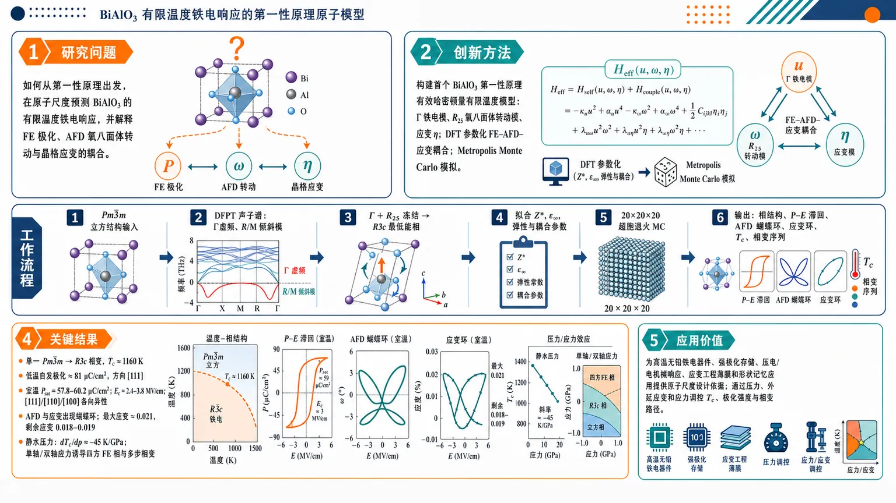
研究问题BiAlO₃ 已知是高温无铅铁电候选材料，但既有 DFT 主要停留在 0 K，无法描绘实验温度下的相变、极化翻转、氧八面体转动、应变和压力/应力调控；核心问题是：如何从第一性原理出发，在原子尺度预测 BiAlO₃ 的有限温度铁电响应，并解释 FE 极化、AFD 氧八面体转动与晶格应变之间的耦合。创新方法建立 BiAlO₃ 首个第一性原理有效哈密顿量有限温度原子模型：从 DFPT 声子不稳定性中提取 Γ 铁电模、R₂₅ 反铁畸变氧八面体转动模和应变三类关键自由度，用 DFT 参数化 FE、AFD、弹性及 FE–AFD–应变耦合能量项，再用 20×20×20 超胞 Metropolis Monte Carlo 模拟温度、电场、静水压力、单轴/双轴应力下的材料响应。Aha 点是把零温 DFT 的局域畸变能量面转化为可随温度演化的“极化—八面体转动—应变”耦合动态图景。工作流程输入立方 Pmbar3m BiAlO₃ 结构 → DFPT 计算声子谱并识别虚频 Γ 极化模、R/M 氧八面体倾斜模 → 比较单模/双模畸变能量，确定 Γ + R₂₅ 共同冻结形成 R3c 最低能相 → 构建包含局域铁电模 u、AFD 模 ω、应变 η 的有效哈密顿量 → DFT 拟合 Born 有效电荷、介电常数、弹性和耦合参数 → 在周期性 20×20×20 超胞中进行退火 Monte Carlo → 输出随温度、电场和机械载荷变化的相结构、极化滞回、AFD 蝴蝶环、应变环、Curie 温度和相变序列。关键结果预测 BiAlO₃ 在 1160 K 发生单一 Pmbar3m → R3c 顺电—铁电相变；低温自发极化约 81 μC/cm²，方向沿 [111]。室温电场滞回显示饱和极化 57.8–60.2 μC/cm²，矫顽场 2.4–3.8 MV/cm，且随 [111]、[110]、[100] 方向显著各向异性。AFD 氧八面体转动和应变随电场出现蝴蝶环，最大应变约 0.021，剩余应变 0.018–0.019。静水压力以约 −45 K/GPa 降低 Curie 温度；单轴/双轴应力可诱导额外四方铁电相和多步相变。应用价值该研究把 BiAlO₃ 从“零温无铅铁电候选物”推进为可计算设计的有限温度功能材料，为高温无铅铁电器件、强极化存储、压电/电机械响应、应变工程薄膜和形状记忆应用提供原子尺度设计依据；同时指出通过压力、外延应变、单轴/双轴应力可调控 Curie 温度、极化强度和相变路径，为实验制备与性能优化提供可视化相图线索。第一部分：核心概览 (Overview)
BiAlO₃ 首个面向有限温度的第一性原理有效哈密顿量原子模型被建立，用于连接零温 DFT 与实验条件下的铁电响应。模型再现实验观察到的 Pmbar3m → R3c 顺电—铁电相变，预测 T₍C₎ = 1160 K、低温自发极化 81 μC/cm² 沿 [111]，并系统揭示 FE 极化、AFD 氧八面体转动、应变 的强耦合。电场、温度、静水压力、单轴/双轴应力下的滞回、矫顽场、相变序列和应变响应得到原子尺度预测，使 BiAlO₃ 从“零温候选无铅铁电体”推进为“可计算设计的有限温度功能材料”。
---
第二部分：结构化快速回顾
《Atomistic study of finite temperature properties in ferroelectric BiAlO₃》（None，）
背景
无铅钙钛矿铁电体是替代含铅铁电材料的重要方向。BiAlO₃ 已由高压高温实验合成，具有 R3c 基态、铁电滞回和较高 Curie 温度，但既有 DFT 主要局限于 0 K，无法解释实验条件下的极化、相变、应变、矫顽场和 FE–AFD 耦合。
方法
采用 DFPT + DFT-LDA + PAW + VASP 计算立方相声子不稳定性，识别主要自由度为 Γ 铁电模、R₂₅ 反铁畸变模 和 应变。构建第一性原理有效哈密顿量，并用 20×20×20 超胞、周期边界、单翻转 Metropolis Monte Carlo 模拟有限温度行为。
结果
预测 BiAlO₃ 在 1160 K 发生 Pmbar3m → R3c 单一铁电相变；低温极化约 81 μC/cm² 沿 [111]。室温电场滞回显示饱和极化约 57.8–60.2 μC/cm²，矫顽场约 2.4–3.8 MV/cm。AFD 和应变表现蝴蝶环，最大应变约 0.021，剩余应变 0.018–0.019。
讨论
理论极化显著高于多数实验值，可能源于实验样品缺陷、晶界、漏电及未完全饱和；理论 T₍C₎ 高于实验 793 K，可能源于有效哈密顿量参数化中结构结合能被高估。FE 与 AFD 为竞争但强耦合的不稳定性。
局限
模型只保留主导畸变 Γ 和 R₂₅，忽略其他较弱模式、缺陷、畴壁、晶界、漏电、电极效应和真实薄膜边界条件，因此容易高估极化、矫顽场和相变温度。
结论
BiAlO₃ 是高温无铅铁电候选材料；其极化、AFD 转动和应变高度耦合。压力降低极化和 Curie 温度，单轴/双轴应力可诱导额外铁电相，提供通过机械边界条件调控功能响应的路径。
---
第三部分：逐章节冷凝解析 (Section-by-Section Condensing)
Abstract
Lead-free BiAlO₃ is positioned as a technologically relevant ferroelectric
BiAlO₃ 被置于 无铅钙钛矿铁电体 搜索框架中，目标是获得可用于实际条件预测的原子尺度模型。研究动机来自无铅铁电体的功能潜力，摘要明确指出：*"The lead-free perovskite ferroelectrics captivate researchers with their unique functional properties leading to important technological applications."* 核心任务不是单纯零温结构优化，而是预测 experimentally relevant conditions 下的有限温度性质。
First-principles-based atomistic model enables finite-temperature prediction
核心方法贡献是建立 first-principles based atomistic model，用于有限温度模拟 BiAlO₃。摘要中的直接表述为：*"we develop a first-principles based atomistic model to accurately predict the properties of BiAlO3 in experimentally relevant conditions."* 这解决了传统 DFT 只能提供零温信息的不足。
Ground state and phase transition agree with experiment
模拟给出 R3c 菱方铁电基态，并通过从 Pmbar3m 立方顺电相 到 R3c 的结构相变形成。摘要给出关键结构判断：*"our simulations predict a rhombohedral ferroelectric (R3c) ground state for BiAlO3 facilitated by a structural phase transition from paraelectric (cubic, Pmbar3m) phase."*
Room-temperature polarization and Curie temperature are quantitatively predicted
有限温度核心数值包括 spontaneous polarization = 81 μC/cm²，方向为 [111]；Curie temperature = 1160 K。摘要明确给出：*"The room-temperature spontaneous polarization and Curie temperature are obtained to be 81 μC/cm2 (along [111] direction) and 1160 K, respectively."*
FE–AFD coupling persists across temperature and electric-field regimes
一个重要物理发现是 铁电模 FE 与 反铁畸变模 AFD 强耦合，且不是单点或零温现象，而是跨越宽温度和电场范围。摘要表述为：*"Our simulations reveal strong coupling between ferroelectric and antiferrodistortive modes for a broad spectrum of temperature and electric field."*
Mechanical loading tunes phase behavior
机械边界条件显著调控 BiAlO₃：静水压力 抑制极化和 Curie 温度，而 单轴/双轴应力 诱发多相变。摘要中的直接证据为：*"hydrostatic pressure suppresses both spontaneous polarization and Curie temperature, while both uniaxial and biaxial stresses induce multiple phase transitions in BiAlO3."*
---
I Introduction
Ferroelectrics have broad device relevance
铁电材料被强调为非易失存储、压电、电机电转换、热释电、电卡制冷等多类技术的核心功能材料。关键表述为：*"Ferroelectric are in the focus of attention owing to their extensive use in numerous technologically important applications such as non-volatile memory, piezoelectric and electromechanical devices, pyroelectric sensors, electro-caloric cooling and many others."* 这确立了 BiAlO₃ 研究的应用背景。
Lead toxicity drives the search for lead-free alternatives
传统高性能铁电体多为 lead-based perovskites，但铅毒性构成环境与健康问题，因此无铅替代是必要方向。原文给出动因：*"due to the environmental and health hazards arising from lead toxicity, replacing lead-based ferroelectric materials with lead-free alternatives is both necessary and desirable."*
Bismuth-containing perovskites are promising lead-free candidates
Bi-containing perovskites 被视为含铅铁电体的重要替代路径。原文指出：*"Recently, bismuth-containing perovskites emerged as promising alternatives to the lead-based ferroelectrics."* BiAlO₃ 是代表体系之一。
BiAlO₃ has been experimentally synthesized under high pressure and high temperature
BiAlO₃ 已通过 高压高温技术 合成。实验结构方面，X 射线衍射报道 R3c 基态，晶格参数 a = 5.38 Å、c = 13.39 Å。原文证据为：*"It has been synthesized using high-pressure high-temperature techniques"*，以及 *"The X-ray diffraction study has reported a R3c ground state structure with lattice parameters a = 5.38 Å and c = 13.39 Å."*
Experimental ferroelectricity is established but polarization values vary widely
实验通过温变介电常数和电滞回确认 BiAlO₃ 铁电性。原文表述为：*"Ferroelectricity in BiAlO3 has been established on the basis of temperature-dependent dielectric constant and electric hysteresis measurements."* 但实验极化差异很大：块体 Pₛ = 9.5–11.5 μC/cm²，室温饱和极化 Pₛₐₜ = 16 μC/cm²，外延薄膜 Pₛ = 29 μC/cm²。直接数值依据包括：*"room-temperature spontaneous polarization ranges from PS = 9.5 to 11.5 μC/cm2"*，*"room temperature saturation polarization is PSat = 16 μC/cm2"*，以及 *"an epitaxial BiAlO3 thin film with a PS of 29 μC/cm2."*
Curie temperature is experimentally high but incompletely bounded
实验 Curie 温度只给出下限 T₍C₎ > 793 K，说明 BiAlO₃ 可能是高温铁电体。原文证据为：*"The experimental Curie temperature is TC > 793 K."*
Bi 6s² lone pair is the proposed microscopic origin of ferroelectricity
BiAlO₃ 的铁电不稳定性被归因于 Bi³⁺ 的 6s² 孤对电子立体化学活性，类似 PbTiO₃ 中 Pb²⁺ 的作用。原文表述为：*"ferroelectric instability in BiAlO3 is driven by stereochemically active 6s2 lone pair of electrons in Bi3+, similar to Pb2+ in prototype ferroelectric PbTiO3."*
DFT supports large distortions and large zero-temperature polarization
既有第一性原理 DFT 认为 BiAlO₃ 是强铁电候选物，具有从立方结构出发的大畸变。原文给出：*"first-principles density functional theory (DFT) calculations have also predicted BiAlO3 to be promising ferroelectric associated with large distortions from the cubic structure driven by stereochemical activity of Bi lone pair electrons."*
A major theory–experiment polarization discrepancy exists
零温 DFT 极化为 72.3–82.5 μC/cm²，而实验为 9–29 μC/cm²，差距接近一个数量级。原文直接对比：*"DFT ground state calculations report polarizations in the range of 72.3 - 82.5 μC/cm2"*，而 *"experiments show even larger variation from 9 - 29 μC/cm2."*
Finite-temperature atomistic modeling was absent before this work
关键知识空白是缺乏把 DFT 扩展到 BiAlO₃ 有限温度的计算方法。原文明确写道：*"presently there is no computational approach that allows to extend the reach of DFT simulations to finite-temperature in BiAlO3."* 因而温度依赖极化、应变、矫顽场、滞回和 FE–AFD 耦合缺少原子尺度理解。
Research objectives are threefold
目标包括：建立 BiAlO₃ 第一性原理有限温度参数化；预测相变、序参量、矫顽场、应变、滞回等有限温度性质；扩展到静水压力、单轴和双轴应力。原文概括为：*"we aim to fill these gap by (i) developing parameterization for first-principles-based finite-temperature simulations of BiAlO3; (ii) applying such simulations to predict finite-temperature properties...; (iii) extending predictions to the regime where BiAlO3 is subjected to external mechanical load."*
---
II Methodology
Effective Hamiltonian is constructed from first principles
方法核心是为 BiAlO₃ 建立 first-principles-based effective Hamiltonian，从而让 DFT 可用于有限温度。原文开宗明义：*"We begin by developing a parameterization for a first-principles-based effective Hamiltonian for BiAlO3, which allows to extend the reach of DFT simulations to finite temperatures."*
Phonon instabilities identify the active degrees of freedom
自由度选择基于立方相声子谱。原文表述为：*"To identify the degrees of freedom contributing to the effective Hamiltonian, we first examined the structural instabilities present in the system with the help of phonon dispersions."* 这使模型不是任意拟合，而是由 unstable phonons 决定。
DFPT calculations use VASP, PAW, LDA, dense k mesh, and high cutoff
声子由 DFPT 计算，软件为 VASP；原子芯用 PAW；交换关联泛函为 LDA。具体参数：11×11×11 k-mesh、600 eV plane-wave cutoff、自洽收敛 10⁻⁶ eV、结构弛豫力阈值 10⁻⁴ eV/Å。原文证据为：*"phonons were computed for cubic phase within the framework of density functional perturbative theory (DFPT) as implemented in the VASP package"*，*"the projector-augmented-wave (PAW) method"*，*"the local-density-approximation (LDA)"*，*"A dense k-mesh of 11 × 11 × 11 and an energy cutoff of 600 eV"*，以及 *"forces to be less than 10−4 eV/Å."*
Γ mode is ferroelectric and R/M instabilities are octahedral tilts
立方 Pmbar3m BiAlO₃ 的虚频声子显示结构不稳定性。Γ 模 对应 Bi 相对 Al 和 O 的反向位移，诱导电偶极；R 和 M 点不稳定性对应氧八面体倾斜。原文写道：*"The imaginary frequency phonons in the Brillouin zone imply the structural instabilities present in the material."* 以及 *"Γ mode corresponds to the opposite displacement of Bi atom to Al and O, and is responsible for inducing an electric dipole moment"*，*"The R and M point instabilities correspond to the tilt of oxygen octahedra due to O distortions."*
Γ distortion gives the largest single-mode energy gain
不同单模和双模畸变相对于立方相的能量下降被计算。Γ 点畸变 能量降低最大，为 219 meV。原文证据为：*"The largest gain in energy (219 meV) is associated with Γ-point distortion."*
R₂₅ and M instabilities stabilize nonpolar tilted structures
优化的 R₂₅ 畸变结构比立方相低约 201 meV，对称性为 Rbar3c；M 点 不稳定性为 P4/mbm，比立方相低约 113 meV。直接引文为：*"The optimized structure with R25 distortions lies ∼201 meV below the cubic phase and corresponds to a rhombohedral structure with Rbar3c symmetry."* 以及 *"the M point instability is observed to be of P4/mbm symmetry and stays ∼113 meV below the cubic phase."*
Combined Γ + R₂₅ distortion produces the global R3c minimum
全局最低能结构不是单独 Γ 或 R₂₅，而是二者共存，能量比立方相低约 266 meV，空间群为 R3c。原文关键证据为：*"the global minimum structure is achieved when R25 and Γ modes are frozen together and exists ∼266 meV below the undistorted cubic structure."* 以及 *"This corresponds to a rhombohedral structure with R3c space group."*
Energy landscapes reveal double wells and [111] preference
Γ 与 R₂₅ 不稳定性均具有 双势阱能量面；最稳定相的极化方向为 <111>，氧八面体倾斜沿同一极轴。原文写道：*"both Γ and R25 instabilities are associated with double well energy landscapes."* 以及 *"The most energetically favorable phase is with polar direction along <111> and octahedra tilts along the polar axis."*
FE–AFD coexistence selectively stabilizes the rhombohedral phase
当 Γ 与 R₂₅ 同时存在时，R 相 稳定性增强，T 相 去稳定，O 相 近似去稳定。原文表述为：*"When both Γ and R25 instabilities are present the phase with the R phase gains in stability a bit, while T phase is destabilized and O phase is nearly destabilized."* 这暗示 FE–AFD 耦合不是被动叠加，而改变相稳定性。
Strain further stabilizes polar phases
引入应变自由度后，Γ 模能量面中所有相进一步稳定。原文证据为：*"We find that strain causes further stabilization of all the phases."* 因而有效哈密顿量必须包含 strain degree of freedom。
Effective Hamiltonian contains FE, AFD, elastic, and coupling terms
总能量写为 Eᵗᵒᵗ = Eᴲᴱ + Eᴬᶠᴰ + Eᵉˡᵃˢ + Eᴲᴱ–ᵉˡᵃˢ + Eᴬᶠᴰ–ᵉˡᵃˢ + Eᴲᴱ–ᴬᶠᴰ。原文说明：*"we include the dominant distortions Γ and R25 along with the strain degree of freedom in the construction of the effective Hamiltonian."* 三个核心变量为 ferroelectric local mode u、AFD mode ω 和 strain η：*"expressed in terms of ferroelectric local mode (u), antiferrodistortive (AFD) mode (ω) ... and strain (η)."*
FE energy includes local self-energy, short-range dipole interactions, and long-range dipolar interactions
Eᴲᴱ 包括局域模自能、近邻偶极短程相互作用和长程偶极相互作用。原文为：*"EFE is the energy associated with ferroelectric mode of the system and subsumes the energy contributions associated with the local mode self-energy, short-range interaction between nieghbouring dipoles and the long-range dipolar interactions."*
AFD energy omits dipolar interaction
Eᴬᶠᴰ 与 FE 项类似，但不含偶极长程相互作用，因为 AFD 模不产生净偶极贡献。原文为：*"EAFD represents the energy associated with AFD local mode and includes the energy contributions from interactions similar to FE mode except the dipolar interaction, as it does not contribute to AFD mode."*
Model parameters are explicitly tabulated
关键参数来自第一性原理 DFT。表 1 给出立方相平衡晶格常数 7.03225 a.u.，Γ+R₂₅ 归一化畸变：ξBi = −0.591508, ξAl = −0.032125, ξO1 = −0.015275, ξO2 = 0.774787, ξO3 = −0.220361。原文表述为：*"The parameters in Eq.(1) are derived from the first-principles density functional theory based calculations and are provided in Table 1."*
Important numerical Hamiltonian parameters constrain FE and AFD physics
FE onsite 参数包括 κ₂ = 0.019443, α = 0.040325, γ = −0.019488；Born 有效电荷 Z* = 8.164117，高频介电常数 ε∞ = 8.061037。AFD onsite 参数包括 tildeκ₂ = 0.006134, tildeα = 0.043132, tildeγ = −0.026356。FE–AFD 耦合参数为 Gₓₓₓₓ = 0.057239, Gₓₓᵧᵧ = 0.089787, Gₓᵧₓᵧ = −0.169174。表格说明为：*"All parameters are listed in atomic units in the notations of Refs. [29, 30]."*
Monte Carlo simulations use large bulk supercells and annealing
有限温度性质通过 single-flip Metropolis Monte Carlo 模拟。超胞为 20×20×20 BiAlO₃ 单胞，三方向周期边界，模拟体材料。原文为：*"these parameters are used in the framework of single-flip Metropolis Monte Carlo (MC) simulations"*，以及 *"The simulation supercell 20 × 20 × 20 of BiAlO3 unit cells was used with periodic boundary conditions applied in all three directions to simulate bulk sample."*
Annealing protocol is designed to resolve the transition
退火从 1500 K 开始，以 10 K 步长降至 10 K。相变附近 1350–1080 K 使用 10 million MC steps，其他温度使用 0.1 million MC steps；前 60% 用于平衡，后 40% 用于平均。原文证据为：*"Annealing started at 1500 K and proceeded in steps of 10 K until the temperature reaches 10 K."*，*"We used 10 million MC steps for temperatures in the range 1350 to 1080 K"*，以及 *"First 60% of these steps were used for equilibration, and the rest for computing averages."*
---
III Finite-temperature properties
FE order parameter appears near 1200 K and drives structural transition
高温下三个笛卡尔方向平均局域模 uₓ, uᵧ, u_z 接近零；降温至约 1200 K 时显著增加，指示结构相变。原文表述为：*"the mean local-mode vectors along all three Cartesian directions (ux, uy, uz) are close to zero at higher temperatures; however, as the system is annealed down to around 1200 K they start increasing significantly, leading to a structural phase transition."*
The finite-temperature phase transition is Pmbar3m to R3c at 1160 K
模拟预测单一铁电相变，温度 1160 K，从中心对称立方 Pmbar3m 到非中心对称菱方 R3c。原文证据为：*"our simulations predict a single phase FE transition (at 1160 K) from the centrosymmetric cubic (Pmbar3m) to a non-centrosymmetric rhombohedral (R3c) phase."*
Low-temperature spontaneous polarization is 81 μC/cm² along [111]
局域模转换为极化后，10 K 下自发极化约 81 μC/cm²，方向为 [111]。原文写道：*"We observe a spontaneous polarization of ∼81 μC/cm2 along [111] direction at 10 K."*
Effective-Hamiltonian polarization agrees with DFT but exceeds experiments
预测极化与零温 DFT 接近：本 DFT 约 73 μC/cm²，已有 DFT 约 75.6 μC/cm²；但远高于实验 9–29 μC/cm²。原文说明：*"This is consistent with the DFT values, ∼73 μC/cm2 from our calculation and ∼75.6 μC/cm2 from Ref. [25], at zero Kelvin."* 同时指出实验差异：*"There is, however, a large variation in the polarization values reported in experiments."*
Approximation from retaining only dominant distortions may raise polarization
有效哈密顿量预测值略高于零温 DFT，被归因于仅保留主导畸变。原文为：*"The slightly higher value from effective Hamiltonian could be attributed to the approximations used in constructing Eq.(1), as only dominant distortions are considered."*
Curie temperature exceeds experimental lower-bound value
模拟 T₍C₎ = 1160 K 高于实验观测 793 K，可能来自参数化结构结合能高估。原文为：*"Curie temperature obtained from our simulations is 1160 K, which is greater than the experimentally observed value of 793 K."* 以及 *"This discrepancy could be attributed to an overestimation of the binding energy of the structure used in the parameterization of effective Hamiltonian."*
AFD order parameter follows FE behavior and aligns along [111]
AFD 模与 FE 模温度演化相似，AFD 序参量 <ωₓ,ᵧ,z> 沿 [111] 伪立方方向，在相变下形成 Rbar3c 倾斜特征。原文为：*"the AFD mode mimics the same trend as FE, with AFD order parameter (<ωx,y,z>) oriented along [111] pseudocubic direction."*
FE and AFD modes behave as competing instabilities
通过关闭 FE–AFD interaction 的退火模拟评估二者相互作用，发现 FE 与 AFD 均为竞争不稳定性。原文证据为：*"we repeated annealing simulations by switching off the FE-AFD interaction."* 以及 *"we observed both FE and AFD modes to be competing instabilities."*
Lattice parameters show first-order-like transition behavior
晶格参数随温度变化表现出类一阶相变：在 Pmbar3m 相区几乎不变，在 T₍C₎ 以下平滑增加。原文为：*"it exhibits a first-order-like phase transition with almost no change across the Pmbar3m phase and a smooth increase below the TC."*
Electric field is included through a dipole–field coupling term
外电场通过哈密顿量加入 −Σᵢ pᵢ·E，其中 pᵢ 用 Born 有效电荷和局域模表示。原文为：*"an interaction term, −∑i pi·E, was added to the effective Hamiltonian, where pi is represented in terms of the Born effective charge and the local mode."*
Electric-field simulations explore [111], [110], and [100] directions
室温电场响应沿三个伪立方方向进行：[111], [110], [100]；电场先逐渐施加、撤去、反向、再撤去。原文为：*"we performed three distinct sets of MC simulations where we applied a dc electric field along [111], [110], and [100] pseudocubic directions."* 以及 *"the electric field is gradually introduced, subsequently withdrawn, followed by reversing its direction, and then finally removed again."*
[111] electric field produces a single polarization hysteresis loop
室温下沿 [111] 加电场时，所有极化分量显示单一滞回环，确认 R3c 铁电相。原文证据为：*"We observe a single hysteresis loop for all the components of polarization for the field along [111] direction."* 以及 *"This confirms a ferroelectric R3c phase of BiAlO3 at room temperature."*
Off-axis fields reveal anisotropic polarization switching
沿 [110] 加场时，仍有铁电滞回，但 z 分量 几乎不受影响并保持接近 Pₛ；沿 [100] 加场时，仅 x 分量 滞回，y/z 分量 不受影响。原文为：*"for the field along [110] direction, the material still exhibits ferroelectric hysteresis, however... the z-component of polarization remains unaffected"*，以及 *"for a field along [100] direction, we observed hysteresis for x-component of polarization, whereas polarization vectors along y- and z-directions remain unaffected."*
Saturation polarization is high and weakly direction-dependent
室温饱和极化 Pₛₐₜ 分别为 57.8 μC/cm²（[111]）、59.2 μC/cm²（[110]）、60.2 μC/cm²（[100]）。原文为：*"We obtained PSat of 57.8, 59.2, and 60.2 μC/cm2 for the fields along [111], [110], and [100] directions, respectively."*
Coercive field is large and strongly anisotropic
矫顽场 E₍C₎ 为 2.4 MV/cm（[111]）、3.6 MV/cm（[110]）、3.8 MV/cm（[100]），揭示铁电相各向异性。原文为：*"we get EC as 2.4, 3.6, and 3.8 MV/cm for the aforementioned sequence of field directions."* 以及 *"The differences in EC along different field directions highlight the anisotropic nature of the FE phase of BiAlO3."*
AFD order parameters show butterfly-like loops under electric field
AFD 序参量随电场呈 butterfly loop like behavior。沿 [111] 时 AFD 向量平行 FE 向量；沿 [110] 时转变场更大，且 z 分量解耦；沿 [100] 时也发生解耦但 <ω_z> 相位改变。原文为：*"We observe a butterfly loop like behavior with AFD vector pointing parallel to FE vector for the field along [111] direction."* 以及 *"the z-component of AFD vector decouples"*，*"with a change in the phase of <ωz>."*
Strain aligns with field direction and forms butterfly-like responses
应变张量表现出沿电场方向优先取向和蝴蝶环特征；对 [110] 和 [100] 电场，η₃ 解耦。原文为：*"strains appear to preferentially align in the field directions and exhibit a butterfly like feature"*，以及 *"with a decoupling of η3 for [110] and [100] fields."*
Large remanent and saturation strains suggest shape-memory potential
预测最大/饱和应变约 0.021，剩余应变 0.018–0.019，临界场附近极化翻转时应变变化约 0.004。原文为：*"a high saturation strain of 0.021 and a significant remanent strain ranging from 0.018 to 0.019 are observed."* 以及 *"a significant strain change of 0.004 is observed in the vicinity of critical field when polarization switches the direction."* 功能指向为：*"Such a high value of remanent strain could enable BiAlO3 as a promising candidate for shape memory applications."*
Temperature-dependent hysteresis weakens from 100 to 800 K
沿 [111] 方向，在 100–800 K 范围模拟 P–E 滞回。温度升高时滞回面积减小，导致 Pₛ, Pₛₐₜ, E₍C₎ 降低。原文为：*"temperature dependent hysteresis for temperatures ranging from 100 to 800 K"*，以及 *"the area enclosed by the hystereses reduce when the operating temperature increases... decrease in the PS, PSat and EC values."*
Computed saturation polarization decreases with temperature, unlike one experiment
模拟的 Pₛₐₜ 随温度下降趋势与唯一可用实验相反，实验可能由于施加电场不足导致未完全饱和。原文为：*"The observed decreasing trend of our results exhibit an opposite behavior to the trend of the only available experimental study."* 以及 *"PSat values reported in Ref. [20] are not fully saturated due to limitations in applying the larger fields."*
Computed room-temperature PSat exceeds experimental values
实验室温 Pₛₐₜ 分别为 33 μC/cm²、16 μC/cm²、14 μC/cm²；模拟为约 58 μC/cm²。原文为：*"The experimentally reported values of PSat at room temperature are 33, 16 and 14 μC/cm2."* 以及 *"Our computed value, 58 μC/cm2, at 300 K is higher than the experiments."*
Experimental defects and grain boundaries may suppress measured polarization
模拟值高于实验可能源于实验样品缺陷、晶界和漏电。原文为：*"The reason for this could be ascribed to the defects and grain boundaries present in the experimental sample which can cause the leakage current."*
Coercive field decreases with temperature but is overestimated
三个电场方向下 E₍C₎ 均随温度升高而降低；但模拟矫顽场高于实验，因为模型无缺陷、无畴，发生均匀翻转。原文为：*"for all three directions of the applied field, EC decreases with increasing temperature."* 以及 *"our simulations tend to overestimate the coercive fields as compared to experiments."* 进一步解释为：*"defect free samples undergo homogeneous phase transitions without forming any domain, and hence expected to exhibit a high coercive field."*
Remanent and maximum strains decrease with temperature
沿 [111] 场方向，剩余应变 Sᵣₑₘ 和最大应变 Sₘₐₓ 均随温度升高而降低。原文为：*"both Srem and Smax decrease with increasing temperature."*
Hydrostatic pressure preserves single transition but tunes TC strongly
静水压力整个范围内仍出现单一相变；正压降低 T₍C₎，负压升高 T₍C₎，速率为 −45 K/GPa。原文为：*"we observe a single phase transition for the entire range of applied hydrostatic pressure."* 以及 *"The TC is found to decrease(increase) with an application of positive(negative) pressure with a rate of -45 K/GPa."*
Pressure weakly suppresses spontaneous polarization
从负压到正压，Pₛ 略微降低，速率 0.5 μC/cm²/GPa。原文为：*"We also notice a slight decrease in the PS values, with a rate of 0.5 μC/cm2/GPa, from negative to positive pressure."*
Uniaxial and biaxial stresses are simulated from −5 to 5 GPa
单轴和双轴应力范围为 −5.0 GPa 到 5.0 GPa，步长 1.0 GPa。单轴应力通过单个应力张量分量施加；双轴应力固定 σ₁ = σ₂ = σ、σ₆ = 0，其他分量弛豫。原文为：*"we simulated the uniaxial and biaxial stresses in the range −5.0 GPa to 5.0 GPa in a step of 1.0 GPa."* 以及 *"for biaxial stress, we fixed σ1 = σ2 = σ and σ6 = 0, while allowing all other components to relax."*
Tensile uniaxial stress induces cubic–tetragonal–rhombohedral sequence
在拉伸单轴应力下，BiAlO₃ 出现两次相变：先 cubic → tetragonal，再 tetragonal → rhombohedral。压缩单轴应力下只有 cubic → rhombohedral 单相变。原文为：*"under the tensile uniaxial stress, material exhibits a sequence of two phase transitions... initially from cubic to tetragonal and then from tetragonal to rhombohedral."* 以及 *"for the compressive uniaxial stress, the material is observed to undergo a single phase transition from cubic to rhombohedral."*
Biaxial stress produces the opposite transition trend
双轴应力下趋势与单轴相反：拉伸双轴应力产生单相变，压缩双轴应力产生两相变。原文为：*"Examining the effect of biaxial stress, we observe an opposite trend; a single phase transition for tensile and two phase transitions for compressive stress."*
Stress tunes two transition temperatures in opposite ways
单轴拉伸下，cubic → tetragonal 转变温度 T₍C1₎ 随拉伸应力快速升高，而 tetragonal → rhombohedral 转变温度 T₍C2₎ 随拉伸应力降低。双轴应力下 T₍C1₎ 与 T₍C2₎ 呈相反趋势。原文为：*"The transition temperature for cubic to tetragonal (TC1) increases rapidly with increasing uniaxial tensile stress."*，*"the transition temperature for tetragonal to rhombohedral (TC2) decreases with tensile stress."*，以及 *"Transition temperatures TC1, TC2 exhibit an opposite trend under biaxial stress."*
---
IV Conclusion
A finite-temperature first-principles atomistic model for BiAlO₃ is established
研究建立了可系统模拟 BiAlO₃ 有限温度性质的第一性原理原子模型。结论开头为：*"We have developed a first-principles based atomistic model to systematically simulate the properties of lead-free perovskite BiAlO3 at finite temperatures."*
Bulk BiAlO₃ undergoes paraelectric-to-ferroelectric transition at 1160 K
模型预测体相 BiAlO₃ 发生顺电到铁电相变，T₍C₎ = 1160 K。原文为：*"our simulations predict that BiAlO3 undergoes a paraelectric to ferroelectric phase transition, with TC of 1160 K."*
Ferroelectric phase is rhombohedral R3c with large [111] polarization
铁电相为 R3c 菱方相，自发极化 81 μC/cm² 沿 [111]。原文为：*"The observed ferroelectric phase is of rhombohedral nature, associated with R3c space group and spontaneous polarization of 81 μC/cm2 along [111] direction."*
AFD mode follows FE transition and aligns with FE vector
AFD 模与 FE 模具有相同相变趋势，AFD 序参量沿 FE 向量取向。原文为：*"The AFD mode is found to obey the same trend of phase transition as FE with AFD order parameter oriented along the FE vector."*
Electric-field response couples polarization hysteresis, AFD butterfly loops, and strain butterfly loops
电场沿 [111] 时，极化出现完整滞回，AFD 和应变出现蝴蝶环。原文为：*"electric-field-dependent properties show a perfect hysteresis for polarization and butterfly-like loops for AFD and strain as function of field along [111] direction."*
Large remanent and saturation strains imply shape-memory relevance
高饱和和剩余应变被提出为形状记忆应用潜力来源。原文为：*"Our simulations predict a high value of saturation and remanent strains, which could be suitable for shape memory applications."*
Temperature suppresses polarization, coercive field, and strain
随温度升高，饱和/剩余极化、矫顽场、饱和/剩余应变均降低。原文为：*"we observed a decrease in the values of saturation and remanent polarizations and coercive field with increasing temperature."* 以及 *"Both saturation and remanent strains are observed to decrease with temperature."*
Pressure and stress provide mechanical tuning routes
静水压力从负到正降低自发极化和 Curie 温度；单轴和双轴应力引入新铁电相。原文为：*"we observed a decrease in the spontaneous polarization and Curie temperature from negative to positive hydrostatic pressure."* 以及 *"Application of uniaxial and biaxial stresses are found to introduce new phases of FE in the material."*
---
Acknowledgements
Computational and funding infrastructure supported the simulations
经费来自 SERB, DST (CRG/2022/000178)；计算使用 IIT Delhi 的 Tejas HPC cluster 和 IUAC New Delhi 的 PARAM Rudra。原文为：*"BKM acknowledges the funding support from SERB, DST (CRG/2022/000178)."* 以及 *"The calculations were performed using the High Performance Computing cluster Tejas at the Indian Institute of Technology Delhi and PARAM Rudra, at IUAC, New Delhi."*
---
第四部分：深度理解与语言支持 (Understanding & Nuance)
1. 术语解析
#### Effective Hamiltonian
Effective Hamiltonian 不是完整电子结构哈密顿量，而是把材料中最重要的低能自由度抽取出来，例如 局域铁电模 u、AFD 转动模 ω、应变 η，再用 DFT 拟合这些自由度之间的能量函数。它的学术含义是：在保留关键相变物理的同时，大幅降低计算成本，使 Monte Carlo 有限温度模拟 成为可能。这里的微妙点在于 “effective” 并不表示粗糙，而表示经过第一性原理参数化的低能理论。
#### Local mode
Local mode 指每个晶胞内代表极性畸变的局部位移矢量。BiAlO₃ 中主要对应 Bi 相对 Al/O 的位移，产生局部偶极矩。它不同于宏观极化：宏观极化是所有局域模经过 Born 有效电荷换算并空间平均后的结果。局域模可用于描述热涨落、局部翻转和有限温度序参量。
#### Antiferrodistortive mode / AFD mode
AFD mode 指相邻氧八面体反相转动或倾斜的结构畸变，通常不直接产生净极化，因此不含长程偶极相互作用。BiAlO₃ 中 AFD 主要对应 R₂₅ 模。关键微妙点是：AFD 虽然本身非极性，但可通过 FE–AFD coupling 改变铁电相稳定性、相变温度和电场响应。
#### Double-well energy landscape
Double-well energy landscape 表示能量随某个畸变坐标变化时，在正负两个非零畸变位置有两个等价或近等价最低点，中间高对称结构为不稳定或亚稳态。铁电体中双势阱对应两个相反极化方向；电场滞回本质上就是系统在两个势阱之间翻转。
#### Coercive field
Coercive field / E₍C₎ 是使极化翻转所需的临界电场。模拟中得到 2.4–3.8 MV/cm，高于实验常见值。原因是理想无缺陷超胞通常发生 homogeneous switching，缺少真实样品中的畴壁成核、缺陷辅助翻转和晶界效应，因此理论矫顽场往往偏高。
---
2. 疑难查证
#### 为什么 FE 与 AFD 可以既“耦合”又“竞争”？
耦合 表示两个序参量在能量函数中存在交叉项，例如 Eᴲᴱ–ᴬᶠᴰ(uᵢ,ωᵢ)。一个序参量的大小、方向会影响另一个序参量的稳定性和取向。
竞争 表示二者对晶格畸变资源的需求不完全一致。FE 模希望阳离子和阴离子发生相对位移以形成极化；AFD 模希望氧八面体转动以降低结构能量。二者都能降低立方相能量，但在某些方向或相结构中，一个模的增强可能抑制另一个模的最优幅度。
BiAlO₃ 的复杂性在于：单独 Γ 模能降 219 meV，单独 R₂₅ 模能降 201 meV，二者共同冻结后能降 266 meV，说明二者共同存在比单独存在更稳定；但关闭 FE–AFD 相互作用后又显示二者是竞争不稳定性。直观理解：它们“都想畸变”，但“想要的畸变方式不完全相容”；最终 R3c 相是二者折中后的低能结构。
#### 为什么 DFT/有效哈密顿量极化远高于实验？
三个层次的原因需要区分：
- 理想晶体 vs 真实样品
模拟通常假设完美晶体、无缺陷、无晶界、无漏电。实验陶瓷或薄膜中存在缺陷、晶粒边界、氧空位、畴钉扎、漏电和不完全翻转，都会降低可测极化。
- 饱和不足
某些实验电场无法足够高，导致滞回环未完全饱和，因此报告的 Pₛₐₜ 偏低。给出的实验室温饱和极化 14–33 μC/cm² 低于模拟 58 μC/cm²，这一点被归因于实验施场限制。
- 有限温度模型近似
有效哈密顿量只保留 Γ、R₂₅ 和应变，自由度截断可能造成极化偏高。若加入其他软模、缺陷、畴结构和非均匀应变，预测值可能下降。
#### 为什么静水压力会降低 Curie 温度？
铁电性通常依赖离子偏心位移和晶胞体积。正静水压力压缩晶格，降低 Bi 离子偏心空间，抑制极性位移，使双势阱变浅，因此 T₍C₎ 降低。负压相当于晶格膨胀，更利于离子偏心和极化形成，因此 T₍C₎ 升高。这里的速率为 −45 K/GPa，说明 BiAlO₃ 的铁电稳定性对体积相当敏感。
#### 为什么单轴和双轴应力诱导不同相变序列？
单轴应力只沿一个方向破坏立方对称性，容易优先稳定某一轴向的 tetragonal 极化构型；因此拉伸单轴应力下出现 cubic → tetragonal → rhombohedral。双轴应力同时约束两个面内方向，改变面内/面外晶格竞争关系，导致拉伸和压缩下的相变趋势与单轴情况相反。换言之，应力不只是改变体积，还改变不同极化方向之间的能量排序。
---
第五部分：创新评估与关联 (Synthesis & Novelty)
1. 创新性判断
#### Finite-temperature modeling fills a clear gap beyond zero-K DFT
近年 BiAlO₃ 相关理论多集中在 DFT 基态、结构稳定性、极化起源和电子结构，有限温度下的 相变路径、T₍C₎、滞回、矫顽场、应变、机械调控 缺乏系统原子尺度预测。这里的新颖性在于把 BiAlO₃ 从零温静态候选材料推进到可模拟有限温度功能响应的有效哈密顿量体系。
#### FE–AFD coupling is treated explicitly rather than inferred qualitatively
BiAlO₃ 的 R3c 结构同时包含极性位移和氧八面体转动。此前可从结构上知道二者共存，但难以量化它们在温度、电场和应力下如何协同或竞争。模型显式包含 Eᴲᴱ–ᴬᶠᴰ coupling，并通过关闭耦合项验证二者竞争性，使 FE–AFD 关系从结构描述转为动力学/热力学问题。
#### Electric-field hysteresis is predicted at atomistic finite temperature
室温下沿 [111], [110], [100] 的极化滞回、AFD 蝴蝶环、应变蝴蝶环以及方向依赖的 Pₛₐₜ 和 E₍C₎ 得到预测。这填补了 BiAlO₃ 中电场驱动翻转机制与各向异性的计算空白，尤其给出 2.4–3.8 MV/cm 的方向依赖矫顽场和 57.8–60.2 μC/cm² 的饱和极化。
#### Mechanical phase engineering is systematically mapped
静水压力、单轴应力、双轴应力被统一纳入有限温度模拟。新发现包括：静水压力以 −45 K/GPa 调节 T₍C₎；正压抑制极化；单轴拉伸诱导 cubic → tetragonal → rhombohedral；双轴压缩出现相反的两步相变。这为 BiAlO₃ 的应变工程、薄膜外延设计和机械调控铁电相提供了可检验预测。
#### Shape-memory relevance emerges from strain hysteresis
BiAlO₃ 被联系到形状记忆应用，依据是高饱和应变 0.021、剩余应变 0.018–0.019、极化翻转附近应变变化 0.004。这一功能方向不是传统 BiAlO₃ 文献的主要焦点，属于从有限温度电-机耦合响应中获得的新应用启发。
#### Theory–experiment discrepancy becomes diagnosable
极化和矫顽场的理论—实验差异不再只是数值不一致，而被分解为：实验未完全饱和、缺陷/晶界/漏电影响、模拟无缺陷导致均匀翻转、有效哈密顿量自由度截断、结合能高估导致 T₍C₎ 偏高。这为后续实验和理论改进提供了明确路线：高质量单晶/外延膜测试、强场饱和测量、缺陷显式建模、畴结构模拟、多模有效哈密顿量扩展。
-
19
📄 摘要：为 ADITYA-U 托卡马克建立深度学习平衡预测模型。作者用 pyIPREQ 自由边界 Grad-Shafranov 求解器生成 100760 个合成样本，输入来自 766 次放电并限制在平顶阶段附近的圆形限制器等离子体；模型预测标量平衡量、一维安全因子剖面和其他平衡轮廓。
💡 亮点：10 万级合成 Grad-Shafranov 数据支撑 ADITYA-U 平衡量和安全因子剖面的快速预测。该工作体现深度学习在聚变装置实时平衡重建中的潜力。
📖 展开分析 + 配图
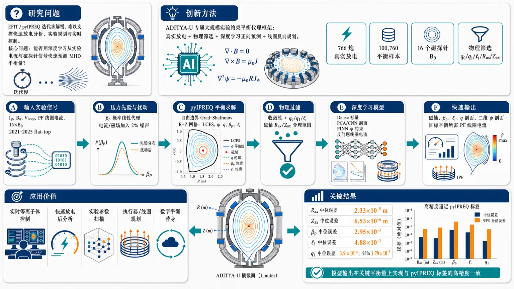
研究问题ADITYA-U 托卡马克的 MHD 自由边界平衡重建依赖 EFIT 等迭代求解器，计算慢，难以支撑快速放电分析、实验规划和实时控制；核心问题是：能否用深度学习从实验电流、磁探针信号等输入中快速预测磁轴位置、βp、内电感 ℓi、安全因子 q 剖面和二维极向磁通 ψ 剖面，并保持物理可信度。创新方法提出 ADITYA-U 首个大规模实验约束 MHD 平衡深度学习代理框架：用 766 个真实放电炮驱动 pyIPREQ Grad-Shafranov 自由边界求解器生成 100,760 个平衡样本；结合 circular limiter、flat-top 操作域、16 个磁探针 Bθ、βp 概率代理、q0/q1/ℓi/磁轴位移物理筛选；系统比较 Dense、PCA 降阶、1D/2D CNN、PINN，并加入从目标平衡反推极向场线圈电流的反问题模型。Aha 点是把真实装置运行空间、物理方程筛选、深度学习正向预测和线圈反向规划整合成一条 ADITYA-U 专属平衡代理管线。工作流程输入 2021–2025 年 766 炮 ADITYA-U flat-top 阶段实验信号，包括 Ip、Bφ、Vloop、极向场线圈电流和 16 个磁探针 Bθ；先用 βp 概率线性代理补全压力先验，并对电流和磁场加入 2% 噪声；再由 pyIPREQ 在 R-Z 网格上求解自由边界 Grad-Shafranov 平衡，生成 LCFS、磁轴、q、ψ、βp、ℓi 等标签；随后用 q0、q1、ℓi、Rax/Zax、收敛性等条件过滤；最后按 shot-wise 划分训练/验证/测试集，训练 Dense 标量模型、PCA/CNN 剖面模型、PINN 物理约束 ψ 模型和线圈电流反向模型，输出快速平衡量、q 剖面、ψ 剖面或所需线圈电流。关键结果在合成测试集上，标量平衡预测达到很高精度：Rax 绝对误差中位数约 2.33×10⁻⁵ m，Zax 约 6.53×10⁻⁶ m；βp 误差中位数约 2.95×10⁻³，ℓi 约 4.88×10⁻³；边缘安全因子 q1 误差中位数约 3.9×10⁻⁴，95 分位约 1.79×10⁻³。结果表明，在 ADITYA-U 圆形 limiter、近 flat-top 的已观测操作域内，深度学习代理可以高精度逼近 pyIPREQ 自由边界平衡标签。应用价值该研究为 ADITYA-U 提供可视为“快速数字平衡替身”的模型基础，可用于实时等离子体控制、快速放电后分析、实验参数扫描、执行器/线圈电流规划，以及后续物理约束代理建模；它把耗时的自由边界平衡求解压缩为快速神经网络推断，使 MHD 平衡信息更容易进入控制和实验决策回路。第一部分：核心概览（Overview）
面向 ADITYA-U 托卡马克，建立了首个大规模、实验相关的 MHD 平衡深度学习代理建模框架。核心贡献在于：基于 766 个放电炮、100,760 个自由边界平衡样本，系统比较 Dense、PCA、CNN、PINN 等模型，用于预测标量平衡量、q 剖面、二维 ψ 剖面，并尝试反问题估计极向场线圈电流。该工作填补了 ADITYA-U 上机器学习平衡建模空白，为快速平衡分析、实验规划与实时控制提供基础。
---
第二部分：结构化快速回顾
《Deep Learning Models for ADITYA-U MHD Equilibrium》（None，）
背景
MHD 平衡重建 是托卡马克控制、输运、稳定性分析和诊断解释的基础，但传统自由边界求解器如 EFIT 迭代计算成本较高，不利于快速或实时应用。ADITYA-U 需要面向实验运行条件的快速平衡估计工具。
方法
使用 pyIPREQ Grad-Shafranov 自由边界求解器 生成 100,760 个合成平衡样本，输入空间来自 766 个 ADITYA-U 放电炮。训练并比较 Dense 神经网络、PCA 降阶模型、1D/2D CNN、PINN，预测标量平衡量、一维 q 剖面、二维 ψ 剖面，并构建反向模型估计线圈电流。
结果
标量模型表现极高精度：
Rax 误差中位数约 2.33×10⁻⁵ m，Zax 误差中位数约 6.53×10⁻⁶ m；βp 误差中位数约 2.95×10⁻³；ℓi 误差中位数约 4.88×10⁻³；q1 误差中位数约 3.9×10⁻⁴。
讨论
数据集被限制在 圆形 limiter 等离子体、接近 flat-top phase 的操作空间，并通过 q0、q1、ℓi、轴位移、Grad-Shafranov 收敛性 等条件筛选，使模型主要适用于 ADITYA-U 已观测或相近运行域。
局限
未进行正式 线性化 MHD 稳定性分析；忽略 涡流；βp 仅有 39 个放电炮的实验诊断数据，完整数据集依赖概率线性代理；提供文本在 4.4 节处截断，后续 q/ψ 剖面模型细节无法完整核验。
结论
深度学习代理可在 ADITYA-U 代表性操作域内快速、准确估计关键 MHD 平衡量，为 实时控制、快速放电分析、实验规划、物理约束代理建模 提供可扩展框架。
---
第三部分：逐章节冷凝解析（Section-by-Section Condensing）
Abstract
Large-scale ADITYA-U equilibrium surrogate modeling
研究目标是为 ADITYA-U tokamak 预测 MHD equilibrium parameters and profiles，覆盖标量量、一维安全因子剖面与二维极向磁通剖面。摘要明确指出：*"This work presents deep learning models to predict magnetohydrodynamic equilibrium parameters and profiles for the ADITYA-U tokamak."*
Synthetic free-boundary dataset built from experimental operations
数据集规模为 100,760 cases，由 pyIPREQ Grad-Shafranov solver 生成，输入来自 766 个 ADITYA-U plasma discharges，并限制在接近平顶阶段的实验相关圆形 limiter 等离子体。关键证据为：*"A synthetic free-boundary equilibrium dataset consisting of 100,760 cases was generated using the pyIPREQ Grad-Shafranov solver, with inputs derived from 766 ADITYA-U plasma discharges and constrained to experimentally relevant circular limiter plasmas near the flat-top phase."*
Multiple deep learning paradigms evaluated
模型类别包括 Dense neural networks、PCA reduced-order models、1D CNN、2D CNN、PINN。摘要中直接列出：*"These approaches included Dense neural networks, principal component analysis based reduced-order models, one-dimensional and two-dimensional convolutional neural networks, and physics-informed neural networks incorporating Grad-Shafranov residual constraints."*
Inverse equilibrium-control mapping included
除正向预测外，还建立了从目标平衡状态反推 poloidal field coil currents 的反问题模型。原文证据：*"In addition, an inverse model was developed to estimate poloidal field coil currents from desired plasma equilibrium conditions."*
Computationally efficient alternative for ADITYA-U operations
深度学习模型被定位为传统平衡估计的快速替代方案，应用方向包括 real-time plasma control、rapid equilibrium analysis、experimental planning。摘要表述为：*"The developed models provide a computationally efficient alternative to conventional equilibrium estimation and can be useful for real-time plasma control, rapid equilibrium analysis, and experimental planning in ADITYA-U operations."*
---
1 Introduction
MHD equilibrium defines key tokamak physics quantities
MHD 平衡由等离子体热压与总磁压平衡决定，直接导出 plasma boundary、magnetic axis position、safety factor、current density profile、Shafranov shift、internal inductance 等关键物理量。原文为：*"Tokamak plasmas attain magnetohydrodynamic (MHD) equilibrium by balancing the plasma thermal pressure and the total magnetic pressure."* 以及 *"several important quantities such as plasma boundary, magnetic axis position, safety factor, current density profile, Shafranov shift, internal inductance, etc. are directly derived from the equilibrium solution."*
Grad-Shafranov equation is the mathematical core
在轴对称假设下，MHD 平衡由 Grad-Shafranov equation 描述；该方程是非线性椭圆偏微分方程。原文给出：*"Under the assumption of axisymmetry, MHD equilibrium can be mathematically described by the Grad-Shafranov equation, a non-linear elliptic partial differential equation derived by balancing thermal and magnetic pressures."*
Equation links flux geometry to toroidal current density
极向磁通 ψ 满足：
[
fracpartial²ψpartial R²+fracpartial²ψpartial Z²-frac1Rfracpartialψpartial R
=
-μ₀R²fracpartial ppartialψ
-
Ffracpartial Fpartialψ
]
其中 F = RBφ，右端与环向电流密度 Jφ 相关。原文写明：*"The right side of the equation 1 relates with toroidal current density (Jφ) as (Jφ=Rpprⁱme+FFprⁱme/μ₀R)."* 方程可压缩为：*"Consequently, equation 1 can be compactly written as (Δ*ψ=-μ₀RJφ)."*
Conventional free-boundary solvers are computationally expensive
传统重建通常依赖 EFIT 等迭代自由边界求解器，计算成本不适合快速或实时应用。原文证据：*"Equilibrium reconstruction is conventionally performed using iterative free-boundary solvers like EFIT [8], which are computationally expensive for applications requiring rapid or real-time evaluation."*
Machine-learning equilibrium surrogates already exist for major tokamaks
类似机器学习方法已在 KSTAR、NSTX-U、EAST、DIII-D、JET、WEST、EXL-50U 等装置上出现，涉及 PCA、CNN、autoencoder、transformer、LSTM、PINN。原文列举：*"Studies like these have been reported for several tokamaks like KSTAR, NSTX-U, EAST, DIII-D, JET, WEST and EXL-50U."* 并指出：*"These studies explore various techniques like principal component analysis (PCA), convolutional neural networks (CNN), autoencoder architectures, transformer architectures, long short-term memory (LSTM), physics-informed neural networks (PINN), etc."*
ADITYA-U-specific motivation is operational speed
ADITYA-U 是中型圆形托卡马克，用于 plasma equilibrium、transport、MHD activity、plasma control 研究。快速平衡估计可服务于实验放电分析、执行器规划和实时控制。原文为：*"ADITYA-U is a medium-sized circular tokamak that serves as an important experimental platform for studies related to plasma equilibrium, transport, MHD activity and plasma control."* 以及 *"Fast equilibrium estimation can be particularly useful for ADITYA-U operations because they can assist in rapid analysis of experimental discharges, actuator planning and real-time control applications."*
Claimed first comprehensive ML equilibrium study for ADITYA-U
创新定位是 ADITYA-U 上首个大规模、实验相关合成数据库驱动的综合机器学习 MHD 平衡建模研究。原文明确声明：*"To the authors’ knowledge, this is the first comprehensive study on machine learning based MHD equilibrium modeling for ADITYA-U using a large-scale synthetic database derived from experimentally relevant operating scenarios."*
---
2 ADITYA-U Synthetic MHD Equilibrium Dataset
Dataset objective emphasizes experimental realism and physical plausibility
数据生成目标是代表 ADITYA-U 实验观测操作条件，同时减少不现实或潜在不稳定平衡。原文为：*"The objective was to generate a dataset representative of experimentally observed ADITYA-U operating conditions while minimizing the occurrence of physically unrealistic or potentially unstable equilibrium solutions."*
Operational domain restricted to circular limiter plasmas near flat-top
数据集仅覆盖接近放电平顶阶段的 circular limiter plasmas，数值上受限于采用特定 current density profile 的 Grad-Shafranov 方程解。原文：*"The generated dataset is limited to the circular limiter plasmas close to the flat-top phases of the discharges."* 以及 *"Numerically, this dataset is restricted to the solutions of the Grad-Shafranov equation with an adopted current density profile."*
Experimental base contains 766 discharges from 2021–2025
输入操作空间来自 766 个 ADITYA-U 放电炮，年份 2021–2025，shot number 34227–38999。筛选条件为 Ip > 100 kA 至少 80 ms。原文写明：*"The input operating space was derived from 766 ADITYA-U plasma discharges spanning the years 2021-2025, corresponding to shot numbers 34227-38999."* 以及 *"These discharges were selected based on the requirement that the plasma current (Iₚ) exceeded 100 kA for at least 80 ms."*
Flat-top interval defined by 80% peak plasma current
每个放电炮的数据来自 Ip 保持在峰值 80% 以内的连续时间区间。原文证据：*"For each discharge, data was extracted from the duration near the flat-top phase, defined as the continuous time interval for which (Iₚ) remained within 80% of its peak value."*
Free-boundary numerical grid has 0.01 m resolution
pyIPREQ 计算域为矩形 R-Z 网格，空间分辨率 0.01 m，范围 R ∈ (0.4 m, 1.1 m)、Z ∈ (-0.35 m, 0.35 m)。原文为：*"the computational domain consisted of a rectangular R-Z grid with a spatial resolution of 0.01 m, covering the ranges (Rin(0.4m,1.1m)) and (Zin(-0.35m,0.35m))."*
Final dataset size is 100,760 equilibrium cases
最终生成 100,760 个平衡样本。原文：*"Using this framework, 100,760 equilibrium cases were generated."* 同时样本并非完全独立，因为相邻时刻和同一放电炮样本存在相关性：*"samples originating from the same discharge and neighboring time instances are expected to exhibit significant correlation."*
Eddy currents ignored for device-specific reasons
忽略涡流的理由包括 ADITYA-U 真空室在两个相隔 180° 的环向位置电不连续，且所选平顶阶段电流变化较弱。原文：*"eddy currents were ignored because the ADITYA-U vacuum vessel is electrically discontinuous at two toroidal locations 180° apart, and the considered operational duration generally has weaker temporal variations in plasma and coil currents compared with transient discharge phases."*
Poloidal field coil configuration explicitly modeled
表中列出 TR、BV、MDI、MDO、ADI、FFI、FFO 等线圈位置、尺寸和匝数；同时说明 BCC coils and TF coils bus bars 被忽略。表注证据：*"Poloidal field coil configuration adopted in the generation of the synthetic ADITYA-U free-boundary MHD equilibrium dataset. BCC coils and TF coils bus bars were ignored in the present work."*
Input current groups are physically grouped
IOT 表示所有 TR 线圈每匝电流，IVF 表示 BV 线圈每匝电流，IFF 表示 FFI、FFO、MDO 串联系统电流；ADI 和 MDI 被统称为 divertor coil currents。原文：*"In this work, (IOT) denotes the current per turn in all TR coils... (IVF) denotes the current per turn in all BV coils, and (IFF) represents the current per turn in the FFI, FFO, and MDO coils (which are in series)."*
Magnetic probe signals are used as neural-network inputs
ADITYA-U 有 16 个磁探针测量 Bθ，分布在近似半径 0.275 m、中心 (0.75 m, 0.0 m) 的圆弧上。数据生成时从 ψ profile 计算探针位置的 Bθ，供深度学习模型输入。原文：*"ADITYA-U is equipped with sixteen magnetic probes that measure poloidal magnetic field (Bθ)."* 以及 *"Bθ values at the locations of these probes were also computed from resultant ψ profile, to be used as inputs to the deep learning models."*
---
2.1 Data Generation Methodology
Current density profile uses three shape parameters
pyIPREQ 需要指定 Jφ profile，采用：
[
Jφpropto
łeft(βfracRR₀+(1-β)fracR₀Ri̊ght)
łeft(1-(1-barψ)αi̊ght)γ
]
其中 ψ̄=1 在磁轴，ψ̄=0 在 LCFS。原文：*"The pyIPREQ code requires specification of current density profile, which was customarily chosen to be..."* 以及 *"(barψ=1) at the magnetic axis and (barψ=0) at the last closed flux surface (LCFS)."*
β parameter is tied to poloidal beta βp
参数 β 由少量 ADITYA-U 放电中的 Diamagnetic Loop βp 数据估计。原文：*"The parameter β is estimated from βp values available for few ADITYA-U discharges through Diamagnetic Loop measurements."*
βp computed by standard pressure-to-poloidal-field definition
目标 βp 使用标准定义：
[
2μ₀ łangle pångle/łangle Bₚₒₗ²ångle
]
原文：*"βp is computed using its standard definition (2μ₀łangle pångle/łangle Bₚₒₗ²ångle)."*
γ optimized to match target magnetic-axis radius
为了避免同时优化 α 和 γ 的高成本，α 直接采样，γ 通过贝叶斯优化匹配目标水平磁轴位置。原文为：*"To improve efficiency, α is sampled directly and γ is adjusted to match a target horizontal magnetic-axis position."*
Bayesian optimization is capped at 10 equilibrium evaluations
γ 估计使用 Expected Improvement (EI) 采集函数，目标函数为：
[
δ Rₐₓ=|Rₐₓ,ₜₐᵣgₑₜ-Rₐₓ|
]
最多 10 次平衡求解，若 δRax ≤ 0.01 m 提前终止。原文：*"The optimization was limited to a maximum of ten equilibrium evaluations and terminated early whenever (δ Rₐₓłeq 0.01 m)."*
Target magnetic-axis distribution follows experimental centroid data
目标 Rax,target 从 N(0.7525, 0.0075) 米采样，用于近似 ADITYA-U 平顶阶段 Sine-Cosine 诊断观测到的等离子体位置。原文：*"(Rₐₓ,ₜₐᵣgₑₜ) was sampled from the distribution (RₐₓsimN(0.7525,0.0075)) (in meters)."* 以及 *"This distribution was selected to approximately reproduce the range of plasma positions observed close to the flat-top phase of ADITYA-U discharges from Sine-Cosine diagnostic measurements."*
α sampled from N(4.5, 0.5)
α 从 N(4.5, 0.5) 独立采样，参数经验上用于产生实验相关的核心安全因子 q0 和良好收敛行为。原文：*"The parameter α was independently sampled from (N(4.5,0.5)), where μ and σ values were empirically identified to produce equilibria with experimentally relevant core safety factor (q₀) and convergence behavior."*
Limiter geometry is a centered circular contour
limiter 边界设为半径 0.25 m、中心 (0.75 m, 0.0 m) 的圆形轮廓。原文：*"The limiter boundary was prescribed as a circular contour of radius 0.25 m centered at (0.75 m, 0.0 m)."*
Measured currents and inferred toroidal field drive the solver
线圈电流和 Ip 来自实验测量，Bφ 由测得的 ITF 推断。原文：*"The coil currents... were obtained from experimental measurements. Likewise, (Iₚ) was available from measurements and (Bφ) was inferred from the measured (ITF)."*
Input noise is deliberately small at 2%
生成平衡时，输入线圈电流、Ip 和 Bφ 被时间平滑，并叠加 2% 均匀随机噪声，用于模拟测量误差并扩展局部操作采样。原文：*"the input coil currents, (Iₚ) and (Bφ) were smoothed in time and applied a 2% uniformly random noise."* 以及 *"Applying this noise helps in simulating potential measurement errors and broaden local operational sampling."*
Filtering criteria remove unrealistic equilibria
保留样本需满足多重物理筛选：
- 水平位移 ΔR = Rax − Rmaj ≤ 0.04 m
- 垂直轴位移 |Zax| ≤ 0.02 m
- ℓi ∈ (0.7, 1.7)
- γ < 8.9
- q0 ∈ (0.9, 1.5)
- q1 > 2.0
- 满足 Grad-Shafranov 收敛标准
原文证据：*"The maximum allowed deviation in the horizontal shift ΔR... was 0.04 m, and the vertical axis displacement (Zₐₓ) was limited to 0.02 m."*；*"The normalized internal inductance ℓi was constrained to the range (0.7,1.7)."*；*"The core safety factor (q₀) was constrained to the range (0.9,1.5), while the edge safety factor was required to satisfy (q₁>2.0)."*
No formal linearized MHD stability analysis
稳定性未严格计算，但筛选条件用于提高物理可信度。原文明确：*"Although a formal linearized MHD stability analysis was not performed, the adopted filtering criteria help ensure that the final dataset consists of well-converged, physically plausible, and experimentally relevant equilibrium solutions."*
---
2.2 Probabilistic Estimation of Poloidal Beta
βp surrogate is for plausible sampling, not diagnostic accuracy
由于实验 βp 只在少数放电炮可用，建立概率代理模型为全部 766 个放电炮估计 βp。目标不是精确诊断，而是提供统计合理采样。原文：*"The objective of this model is not to provide an accurate diagnostic prediction of βp, but rather to generate statistically plausible βp values for synthetic equilibrium generation when direct measurements are unavailable."*
Measured βp available for only 39 discharges
Diamagnetic Loop diagnostics 提供了 39 个 ADITYA-U 放电炮的实验 βp。原文：*"Experimental βp measurements were available for 39 ADITYA-U discharges through Diamagnetic Loop diagnostics."*
Linear regression inputs combine currents, loop voltage, and timing markers
线性模型输入包括 Ip、IVF、IOT、ITF、Vloop 以及三个时间量：tbeg、ti、tend。原文：*"a linear regression model was developed using the inputs (Iₚ), (IVF), (IOT), (ITF), (Vₗₒₒₚ), and three time-dependent quantities."*
Transformed variables improve linearity
实际输入不是原始量，而是：
1/Ip²、IVF/Ip、IOT/Ip、ITF/Ip、Vloop/Ip、ti/tend、1/tbeg、tend。原文：*"The final inputs were (1/Iₚ²), (IVF/Iₚ), (IOT/Iₚ), (ITF/Iₚ), (Vₗₒₒₚ/Iₚ), (tᵢ/tₑₙd), (1/tbₑg), and (tₑₙd)."*
Dense neural networks extrapolated worse than linear regression
尝试了 1–2 hidden layers 的非线性 Dense 网络，但在未见放电炮上外推较差，因此选择线性模型。原文：*"Nonlinear dense neural-network models with 1-2 hidden layers were also investigated but they exhibited poorer extrapolation behavior on previously unseen discharges."* 以及 *"Consequently, the linear model was selected because of its more stable and physically reasonable extrapolation characteristics."*
βp prediction has visible bias but sufficient for stochastic prior
39 个放电炮共 1,287,095 instances 用于比较预测与测量。预测对高低 βp 有偏差，但用途只是生成先验。原文：*"Figure 3 compares the predicted and measured βp values for all 39 discharges, comprising 1,287,095 instances."* 以及 *"This indicates inaccurate predictions and significant bias for high and low βp values."*
Absolute βp error distribution has median 0.0225
图 3 给出绝对差异中位数约 0.0225，95 分位约 0.0725。原文图注：*"The right axis shows the absolute difference between them with median ≈ 0.0225 and 95th percentile ≈ 0.0725."*
Residuals approximated by N(-0.003, 0.036)
残差 βp,act − βp,pred 近似服从 N(-0.003, 0.036)。原文：*"the residuals... were analyzed and found to be reasonably approximated by a normal distribution (N(-0.003,0.036))."*
Shot-wise cross-validation confirms uncertainty scale
重复 10 次 shot-wise cross-validation，每次 30 个放电炮训练、9 个测试；残差均值范围 (-0.026, 0.007)，标准差范围 (0.035, 0.050)。原文：*"In each trial, 30 discharges were used for training and the remaining 9 discharges for testing. This procedure was repeated ten times, yielding residual distribution means within (-0.026,0.007) and standard deviations within (0.035,0.050)."*
Final βp noise sampled from N(0, 0.04)
完整 766 放电炮估计时，为 βp 加入 N(0.0, 0.04) 噪声，并裁剪到 (0.05, 0.4)。原文：*"the noise sampled from (N(0.0,0.04)) was applied during equilibrium generation in pyIPREQ."* 以及 *"The resulting βp values were clipped to the range (0.05,0.4)."*
---
2.3 Data Visualization
Dataset distributions define the reliable model domain
统计分布用于说明训练域和模型可靠应用范围。原文：*"These distributions provide insight into the range of plasma conditions represented in the database and define the physical domain over which the deep learning models were trained and are expected to perform reliably."*
Key scalar statistics characterize ADITYA-U equilibrium space
表 2.3 给出关键变量：
- Ip 中位数 1.43×10⁵ A，5–95% 为 1.25×10⁵–1.67×10⁵ A，最小最大 1.01×10⁵–1.95×10⁵ A
- Vloop 中位数 2.189 V，5–95% 为 1.509–3.137 V，范围 -2.703–6.174 V
- Bθ,MC 中位数 -0.104 T，5–95% 为 -0.130–-0.084 T
- Pax 中位数 6.62×10³ Pa，范围 1.19×10³–1.83×10⁴ Pa
- Rax 中位数 0.744 m，5–95% 为 0.726–0.761 m
- Zax 中位数 -0.00475 m，范围 -0.0199–0.02 m
- βp 中位数 0.196，范围 0.05–0.388
- ℓi 中位数 1.118，范围 0.702–1.625
- γ 中位数 5.626，范围 1.018–8.9
- q0 中位数 1.147，范围 0.9–1.5
- q1 中位数 2.779，范围 2.001–4.153
表述来源：*"Statistical distribution of selected physical quantities in the equilibrium dataset."*
Final Rax distribution is shifted inward
最终数据集 Rax 相比目标分布略向内偏移，原因包括平衡约束、剖面参数选择和筛选条件。原文：*"The distribution of (Rₐₓ) in the final dataset is slightly shifted inward relative to the target distribution... due to combined effects of equilibrium constraints, profile parameter selection, and subsequent filtering criteria."*
Zax is mostly slightly negative
多数 Zax 略为负，符合 ADITYA-U 中观测到的向下等离子体位移。原文：*"The (Zₐₓ) is slightly negative for most cases, consistent with experimentally observed downward plasma shifts in ADITYA-U discharges."*
βp-ℓi distribution confirms filtered physical space
图 5 展示 (βp, ℓi) 参数空间密度，βp 范围与实验观测相近，为 0.05–0.4。原文：*"Figure 5 shows the distribution of equilibria in the ((βp,ℓi)) parameter space."* 以及 *"βp in the dataset is in the range (0.05, 0.4) similar to the experimentally observed distribution."*
q-profile ensemble reflects current-profile variability
图 6 随机选取 2000 cases 展示 q-profile，体现电流剖面变化和 q0、q1 约束。原文：*"Figure 6 presents an ensemble of q-profiles for randomly selected 2000 cases in the dataset, illustrating the variability in current profiles in the database and the imposed constraints on q0 and q1."*
LCFS ensemble shows plasma boundary and axis spread
图 7 随机选取 2000 cases 展示 LCFS 和磁轴位置；LCFS 与 limiter 的小间隙来自 0.01 m 网格离散。原文：*"Figure 7 shows an ensemble of LCFS and magnetic axis positions for randomly selected 2000 cases in the dataset."* 以及 *"The small apparent gap between LCFS and the limiter boundary is due to the discretization of circular contour on finite computational grid with spacing 0.01 m."*
---
3 Deep Learning Methodology
Implementation uses TensorFlow/Keras and Keras-Tuner
全部模型在 Python-3 中使用 tensorflow framework with keras API 开发，并通过 keras-tuner 做超参数优化。原文：*"All models were developed in Python-3 using the tensorflow framework with the keras API."* 以及 *"Hyperparameter optimization was performed using the keras-tuner library."*
Training and tuning rely on CPU-based HPC parallel execution
平衡数据生成、超参数优化和训练在多核 HPC 上通过 CPU 并行完成。优化耗时从数小时到数天。原文：*"Equilibrium data generation, hyperparameter optimization and model training were carried out on a multi-core high-performing computing (HPC) facility using CPU-based parallel execution."* 以及 *"Depending on model complexity, hyperparameter optimization typically required from several hours to multiple days."*
Four ML model classes are systematically investigated
四类模型：
- Dense neural networks：标量量和低维参数映射
- PCA-based models：将高维 q/ψ profiles 降到低维潜空间
- CNN：利用 q/ψ 剖面的局部空间相关和平滑性
- PINN：将 Grad-Shafranov constraints 引入 ψ 剖面预测
原文：*"Four classes of machine learning approaches were investigated in this work..."* 并列出 Dense、PCA、CNN、PINN。
Shot-wise 0.8:0.1:0.1 split prevents leakage
数据按 training:validation:testing = 0.8:0.1:0.1 划分，但不是按样本，而是按 shot labels，以避免同一放电炮相邻时刻相关样本造成信息泄漏。原文：*"the dataset was divided into training, validation, and testing subsets in the proportion 0.8:0.1:0.1."* 以及 *"The data split was performed based on shot labels rather than individual cases because multiple equilibria originating from the same discharge are temporally correlated."*
No Z-score outlier filtering
未使用统计离群过滤，因为数据已由收敛和物理合理性筛选构成，同时希望模型学习极端但合理样本。原文：*"Statistical outlier filtering (like Z-score filtering) was not applied because the dataset already consisted of converged and physically plausible equilibrium cases."*
Standardization avoids information leakage
Dense 模型输入输出按训练集均值 μ=0、标准差 σ=1 缩放；同一变换用于验证和测试。原文：*"all input and output variables were scaled to have mean μ=0 and standard deviation σ=1, computed from the training dataset."*
CNN profile scaling is profile-wise rather than point-wise
CNN 模型中剖面量作为完整剖面缩放，而非逐点缩放。原文：*"For CNN-based models, the profile quantities were scaled as complete profiles rather than on a point-by-point basis."*
Adam and MSE are default optimization choices
所有模型使用 Adam optimizer；主要损失和验证指标为 MSE，PINN 除外，额外包含物理损失。原文：*"All models were trained using the Adam optimizer. Mean Squared Error (MSE) was used as the primary loss function and validation metric, except for the PINN models... which additionally included physics-based loss terms."*
Hyperband explores activation and architecture space
超参数优化采用 Hyperband，搜索激活函数包括 relu、elu、selu、tanh、silu、gelu、softplus，还包括层数、宽度、dropout 等。原文：*"Hyperparameter optimization was performed using the Hyperband algorithm implemented in keras-tuner."* 以及 *"The search space included hidden-layer activation functions relu, elu, selu, tanh, silu, gelu and softplus."*
Final models are retrained and checked for split robustness
选定架构后用更大 epoch 上限重新训练，并在独立随机 shot-wise split 上重复 2–3 次评估一致性。原文：*"Following hyperparameter optimization, the selected architecture was retrained using larger epoch limits to obtain the final model."* 以及 *"it was trained and evaluated 2-3 times more on independently randomized shot-wise split data."*
---
4 Scalar Parameters Models
Scalar models target central equilibrium quantities
标量模型预测 magnetic axis position (Rax, Zax)、βp、ℓi、q1、ψaxs、ψlim。原文：*"This section presents dense neural-network models developed for predicting key scalar MHD equilibrium quantities like magnetic axis position... poloidal beta... normalized internal inductance... edge safety factor... and the poloidal flux values at the magnetic axis and limiter."*
Inverse model estimates PF coil currents
除正向标量预测外，还建立反向模型估计目标平衡条件所需的 poloidal field coil currents。原文：*"In addition, an inverse model is developed to estimate poloidal field coil currents for desired equilibrium conditions."*
Scalar models support later profile models
部分标量模型作为第 5、6 节剖面预测模型的中间组件。原文：*"Besides their standalone utility, several of these models serve as intermediate components for the profile-prediction models discussed in Sections 5 and 6."*
Multi-output scalar prediction performs worse
联合预测 (Rax, Zax, βp, ℓi, q1) 或 (βp, ℓi, q1) 通常不如小组专用模型准确。原文：*"these multi-output models generally exhibited reduced prediction accuracy compared with dedicated models trained for smaller groups."*
---
4.1 Magnetic Axis Position Model
Rax and Zax are predicted jointly
第一个标量模型同时预测 Rax、Zax。输入包括 Bφ、Vloop、Ip、coil currents、Bθ,MC。原文：*"In the first model, (Rₐₓ) and (Zₐₓ) are predicted simultaneously."* 以及 *"The input variables used for this model are (Bφ), (Vₗₒₒₚ), (Iₚ), coil currents (Icₒᵢₗₛ), and (Bθ,MC)."*
Architecture is compact with 6,086 trainable parameters
最佳 Dense 架构：输入 26 units；隐藏层 56 tanh、48 silu、36 gelu；输出 2 linear；总可训练参数 6,086。表格证据：*"Dense Model to predict (Rₐₓ,Zₐₓ). Total trainable parameters: 6,086."*
Rax prediction error is extremely small
测试集 |Rax,act − Rax,pred| 中位数约 2.33×10⁻⁵ m，95 分位约 1.11×10⁻⁴ m。图注原文：*"|Rax,act−Rax,pred| is distributed with median ≈ 2.33e−5 and 95th percentile ≈ 1.11e−4."*
Zax prediction error is even smaller
测试集 |Zax,act − Zax,pred| 中位数约 6.53×10⁻⁶ m，95 分位约 2.81×10⁻⁵ m。原文：*"|Zax,act−Zax,pred| is distributed with median ≈ 6.53e−6 and 95th percentile ≈ 2.81e−5."*
---
4.2 Poloidal Beta and Internal Inductance Model
βp and ℓi are predicted jointly
第二个模型同时预测 βp、ℓi；分开建模没有明显精度提升。原文：*"In the second model, βp and ℓi are predicted simultaneously. They were also modeled separately but there was no noticeable improvement in prediction accuracy."*
Magnetic-axis position is added as input
输入除 4.1 的变量外，还加入 Rax、Zax，因为磁轴位置已可高精度预测。原文：*"In addition to the input variables used in the model of Section 4.1, the plasma position (Rₐₓ) and (Zₐₓ) have also been used as input variables."*
Cascade use is possible but reported performance excludes cascade error
实际应用中 4.1 的磁轴模型可级联到该模型；训练时使用数据集真实 Rax、Zax，因此报告精度未包含级联误差。原文：*"In practice, the model to predict magnetic axis position discussed in Section 4.1 can be used in cascade to this model."* 以及 *"during the training of this model, the dataset (Rₐₓ) and (Zₐₓ) values were used and thus effect of cascading errors are not reflected in reported performance."*
Architecture has 33,122 trainable parameters
最佳 Dense 架构：输入 28 units；隐藏层 64 silu、192 gelu、96 silu；输出 2 linear；参数 33,122。表格证据：*"Dense Model to predict (βp,ℓi). Total trainable parameters: 33,122."*
βp prediction median absolute error is 2.95×10⁻³
测试集 |βp,act − βp,pred| 中位数约 2.95×10⁻³，95 分位约 9.36×10⁻³。原文：*"|βp,act−βp,pred| is distributed with median ≈ 2.95e−3 and 95th percentile ≈ 9.36e−3."*
ℓi prediction median absolute error is 4.88×10⁻³
测试集 |ℓi,act − ℓi,pred| 中位数约 4.88×10⁻³，95 分位约 1.55×10⁻²。原文：*"|ℓi,act−ℓi,pred| is distributed with median ≈ 4.88e−3 and 95th percentile ≈ 1.55e−2."*
---
4.3 Edge Safety Factor Model
q1 is separately modeled for later ψ prediction
虽然完整 q profile 模型在第 5 节讨论，但 q1 单独建模，以作为第 6 节 ψ models 的输入。原文：*"Even though full q profile prediction models are discussed in Section 5, (q₁) was modeled separately so that it can be used as an input for ψ models discussed in Section 6."*
Inputs match βp-ℓi model
该模型输入与 4.2 节 βp、ℓi 模型相同。原文：*"The input variables used in this model are same as inputs used in the model of βp and ℓi in Section 4.2."*
Dropout is necessary to reduce overfitting
验证损失低于训练损失的原因是 dropout 训练时启用、验证时关闭；不使用 dropout 会显著过拟合。原文：*"The validation loss is mostly lower than training loss because dropout regularization is active during training but disabled during validation."* 以及 *"The use of Dropout layer was necessary in this model, without which significant overfitting was observed."*
Architecture contains 40,641 trainable parameters
最佳架构：输入 28 units；隐藏层 224 silu、96 relu、128 gelu；Dropout rate 0.02；输出 1 linear；总参数 40,641。表格证据：*"Dense Model to predict (q₁). Total trainable parameters: 40,641."*
q1 error is sub-0.002 at 95th percentile
测试集 |q1,act − q1,pred| 中位数约 3.9×10⁻⁴，95 分位约 1.79×10⁻³。原文：*"|q1,act−q1,pred| is distributed with median ≈ 3.9e−4 and 95th percentile ≈ 1.79e−3."*
---
4.4 Limiter and Axis ψ Model
ψaxs and ψlim are predicted as scalar supports for full ψ models
该模型预测磁轴处 ψaxs 和 limiter 处 ψlim，用于第 6 节完整 ψ profile 模型输入。原文：*"In this model, ψ values at magnetic axis (ψₐₓₛ) and at limiter (ψₗᵢₘ) are predicted."* 以及 *"these two are modeled separately so that they can be used as an inputs for full ψ models."*
Inputs match βp-ℓi model
输入与 4.2 节 βp、ℓi 模型相同。原文：*"The input variables used in this model are same as inputs used in the model of βp and ℓi in Section 4.2."*
Available text ends before model details and numerical results
4.4 节在 “*The plot of MSE loss for training and validation datasets with respect to epochs is shown in Figure 16. C*” 后截断；架构表、误差指标、图 16 之后内容未提供，无法核验 ψaxs/ψlim 模型参数量、测试误差、训练曲线和后续剖面模型结果。
---
第四部分：深度理解与语言支持（Understanding & Nuance）
1. 术语解析
Free-boundary equilibrium
Free-boundary equilibrium 指等离子体边界不是预先固定，而是由等离子体电流、外部线圈电流、limiter/壁结构共同决定的平衡解。这里的关键不是只求内部磁通，而是同时求 LCFS、磁轴、边界形状、外部真空磁场。语境中 *"synthetic free-boundary equilibrium dataset"* 强调数据比固定边界 Grad-Shafranov 解更接近真实装置运行。
Flat-top phase
Flat-top phase 是放电中等离子体电流达到较稳定平台的阶段。该研究用 Ip 保持在峰值 80% 以内的连续区间近似定义。微妙点在于：它不是完全恒定阶段，而是相对稳态阶段；选择它可弱化涡流和快速瞬态影响。
Physics-informed neural networks incorporating Grad-Shafranov residual constraints
PINN 在这里不是只用数据监督 ψ，而是在损失函数中加入 Grad-Shafranov 方程残差，使预测的 ψ 剖面更符合 MHD 平衡方程。residual constraints 指把方程左端和右端不一致的程度作为惩罚项，而不是单纯拟合标签。
Shot-wise split
Shot-wise split 指按放电炮编号划分训练、验证、测试集，而不是随机划分单个时间样本。其统计意义很重要：同一放电炮相邻时刻高度相关，若随机打散，会让测试集中出现与训练集几乎同源的样本，造成虚高泛化性能。
Reduced-order model
Reduced-order model 在 PCA 语境下指把高维剖面（如 q(ρ)、ψ(R,Z)）压缩成少数主成分系数，再用神经网络预测这些系数，最后重构完整剖面。微妙之处在于：模型不是直接逐点预测，而是学习剖面变化的低维结构。
---
2. 疑难查证
为什么 Grad-Shafranov 方程能决定托卡马克平衡？
托卡马克近似轴对称时，所有物理量对环向角 φ 变化很弱，磁场可分解为 环向磁场 和 极向磁场。极向磁通 ψ(R,Z) 的等值线对应磁面。力平衡条件：
[
nabla p = J×B
]
在轴对称条件下可化为一个关于 ψ 的二维非线性椭圆方程，即 Grad-Shafranov equation。求出 ψ 后，就能得到磁面、LCFS、磁轴、安全因子 q、电流密度等。
为什么机器学习模型需要合成数据，而不是直接用实验 EFIT 数据？
ADITYA-U 可能缺少大量高质量、统一、完整的实验重建标签。合成数据的优势是：
- 输入空间可控；
- 标签完整，包括 ψ、q、βp、ℓi、Rax、Zax；
- 可系统覆盖实验相关操作域；
- 可用物理筛选去除明显不合理样本。
但代价是：模型学习的是 pyIPREQ + 假设电流剖面 + 筛选规则 下的平衡分布，不等同于真实实验绝对真值。
为什么 βp 代理模型不需要特别准确？
βp 在这里主要用于控制合成平衡生成时的压力水平和电流剖面参数，而不是作为最终诊断工具。只要它能给出与实验相近的统计范围，并加入合理噪声，就可避免完全随机采样造成的非物理分布。其角色是 stochastic prior，不是 precision diagnostic predictor。
为什么 q0 和 q1 要被筛选？
q0 是核心安全因子，q1 是边缘安全因子。极端 q 值通常对应异常电流剖面或潜在 MHD 不稳定。筛选 q0 ∈ (0.9,1.5) 和 q1 > 2.0 可将数据限制在 ADITYA-U 常见且较稳定的圆形 limiter 等离子体状态。
为什么标量模型精度非常高，但仍不能代表真实实验精度？
测试集标签来自同一个数值平衡求解流程，因此误差反映的是神经网络逼近 pyIPREQ 合成标签 的能力，而不是对真实等离子体状态的绝对诊断误差。真实误差还会包括诊断误差、模型假设误差、电流剖面参数化误差、忽略涡流误差等。
---
第五部分：创新评估与关联（Synthesis & Novelty）
1. 创新性判断
ADITYA-U-specific large-scale ML equilibrium framework
过去 2–5 年，机器学习平衡重建已在 EAST、DIII-D、KSTAR、NSTX-U、JET、WEST、EXL-50U 等装置上发展，但 ADITYA-U 缺少面向自身几何、线圈系统、诊断布置和运行域的大规模代理建模。该工作的新颖点在于建立 ADITYA-U 专属的 100,760 样本自由边界合成数据库，并与 766 个真实放电炮操作空间挂钩。
Experimentally constrained synthetic dataset rather than generic simulation sampling
相比泛化随机采样，数据生成使用：
- 2021–2025 年 766 炮真实操作数据
- Ip > 100 kA 至少 80 ms 筛选
- flat-top phase 约束
- 0.25 m circular limiter
- 16 个磁探针 Bθ 输入
- βp 概率代理 + 噪声注入
- q0、q1、ℓi、Rax/Zax 筛选
创新性不在单个神经网络结构，而在将实验约束、自由边界求解、物理筛选和代理建模整合为 ADITYA-U 可用的数据-模型管线。
Scalar-to-profile cascaded equilibrium inference
标量模型不仅独立预测 Rax、Zax、βp、ℓi、q1、ψaxs、ψlim，还作为后续 q profile 和 ψ profile 模型输入。这种级联思路可把复杂二维平衡推断拆成多个物理含义清晰的子任务，降低直接端到端预测难度。
Physics-informed ψ modeling direction
引入 Grad-Shafranov residual losses 的 PINN 方向具有物理约束价值。相比纯监督 CNN/PCA，PINN 可减少不满足平衡方程的 ψ 输出，尤其适合未来实时控制中对物理一致性的需求。
Inverse coil-current model links equilibrium prediction to actuator planning
反向模型从目标平衡条件估计 poloidal field coil currents，将机器学习从“诊断/重建”推进到“控制/规划”。这解决了前人许多代理模型只做正向重建、不直接服务执行器设定的问题。
Remaining novelty boundary
方法层面的 Dense、PCA、CNN、PINN 并非全新；真正的新颖性集中在：
- ADITYA-U 首个系统性 ML MHD equilibrium study；
- 实验相关的大规模自由边界合成数据库；
- 面向圆形 limiter flat-top 操作域的专用代理模型；
- 标量、剖面、反问题、物理约束的统一框架。
-
20
📊 含图深析
📄 摘要：利用动力学平均场理论分析随机场论中的神经网络训练动力学，解释参数数目接近临界值时泛化误差发散、随后在过参数区下降的双下降现象。结果将过拟合后的泛化改善归因于相变、遍历性破缺和涨落—耗散定理违背，而非简单的容量平均。
💡 亮点：双下降被解释为随机训练场论中的相变现象，关键特征是遍历性破缺与涨落—耗散定理失效。该视角把现代神经网络泛化问题与非平衡统计物理直接连接。
📖 展开分析 + 配图
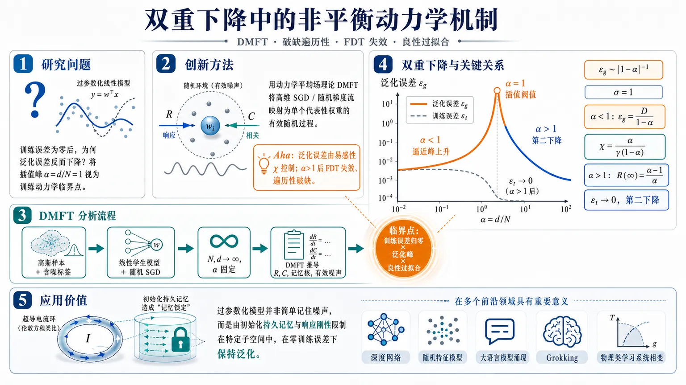
研究问题现代过参数化模型为何在训练误差为零、看似已经过拟合时，泛化误差反而下降？论文将双重下降的插值峰 α=d/N=1 视为训练动力学中的临界点，追问泛化误差发散、训练误差归零与良性过拟合之间的共同物理机制。创新方法用动力学平均场理论 DMFT 精确化约高维 SGD/随机梯度流，把线性 teacher–student 回归的全训练过程映射为单个代表性权重的有效随机过程；Aha 点是：泛化误差由易感性 χ 控制，α>1 后 FDT 失效、遍历性破缺，响应函数出现零频极点，形成类似超导 London 模型的“刚性”和持久记忆。工作流程输入高斯训练样本、含噪标签、线性学生模型与随机 SGD 采样；在 N,d→∞ 且 α=d/N 固定的热力学极限下，用 DMFT 推导响应函数 R、相关函数 C、记忆核与有效噪声；再由 C(t,t)+D 得到泛化误差，由记忆核变换得到训练误差；最后分析 α<1、α=1、α>1 三个区域的相变、标度律和超导类比。关键结果无正则化时，泛化误差在插值阈值 α→1± 按 |1−α|⁻¹ 发散，临界指数 σ=1；欠参数化区 ε_g=D/(1−α)，易感性 χ=α/[γ(1−α)] 发散；过参数化区训练误差趋零，但响应函数长时平台 R(∞)=(α−1)/α，泛化误差 ε_g=((α−1)C(0,0))/α + Dα/(α−1)，随 α 增大出现第二下降。应用价值为良性过拟合提供非平衡动力学解释：过参数化模型不是简单记住噪声，而是被初始化持久记忆和响应刚性限制在特定子空间中，从而在零训练误差下保持泛化；该框架可作为分析深度网络、随机特征模型、大语言模型涌现现象、grokking 和物理类学习系统相变的理论起点。第一部分：核心概览
该研究把双重下降解释为随机训练动力学中的相变，而非仅由静态最小范数解或参数数量决定。在线性 teacher–student 回归与 SGD/SGF 框架中，借助动力学平均场理论（DMFT）精确推导热力学极限下的响应函数、相关函数、训练误差与泛化误差。核心贡献在于证明插值阈值 α = d/N = 1 处存在临界发散，泛化误差由易感性 χ控制；过参数化相 α > 1 中训练误差为零，但由于遍历性破缺、FDT 失效与持久记忆，泛化能力反而恢复。该工作把良性过拟合与超导 London 模型中的波函数刚性建立数学同构，为机器学习泛化提供了凝聚态物理式机制解释。
---
第二部分：结构化快速回顾
《Broken Ergodicity and the Violation of the Fluctuation-Dissipation Theorem Lead to Generalization Beyond Overfitting in Machine Learning》（None，）
背景
现代神经网络常处于过参数化状态，参数量超过训练样本数，却能在训练误差为零时保持较低泛化误差。传统偏差–方差权衡无法解释这种现象。双重下降表现为泛化误差随模型容量先降、后在插值阈值附近发散、再在更高容量下降。
方法
采用单层线性 teacher–student 模型，训练数据满足 xᵢ^μ ∼ 𝒩(0,1)，标签含高斯噪声 ϵ^μ，方差为 D。学生模型通过随机梯度下降训练，样本选择概率为 γ。在 N → ∞, d → ∞, α = d/N 固定 的热力学极限中，用 DMFT 将高维训练动力学化约为单个代表性权重的有效随机过程。
结果
在无正则化 λ = 0 时，泛化误差在 α → 1± 处发散。欠参数化区 α < 1 中，稳态泛化误差为
ε_g = D/(1 − α)；过参数化区 α > 1 中，稳态泛化误差为
ε_g = ((α − 1)C(0,0))/α + Dα/(α − 1)。训练误差在 α > 1 中趋于零。临界指数 σ = 1，并提出动态标度形式与数据坍缩。
讨论
插值阈值不仅是欠参数化到过参数化的转变点，也是从平衡动力学到非平衡动力学的转变点。过参数化区中响应函数出现 ω = 0 极点，导致系统保留初始化记忆，表现为遍历性破缺。该响应结构与超导 London 模型中的持久无耗散电流数学同构。
局限
精确分析集中在线性回归、Gaussian covariates、加性标签噪声与无正则化主情形；深层网络、非线性激活、随机特征模型、真实数据分布与不同任务复杂度下是否属于同一普适类仍未证明。文中明确将插值阈值附近的 RG 普适性留作未来工作。
结论
双重下降源于训练动力学中的临界相变；良性过拟合来自过参数化区的刚性与持久记忆，而非单纯来自容量增加。泛化能力可理解为系统对扰动的局域化响应，其强度由遍历性破缺程度 (α − 1)/α 表征。
---
第三部分：逐章节冷凝解析
Abstract
Double descent is formulated as a stochastic-field-theory phase transition
现代神经网络的反直觉现象在于，模型容量增加到参数数或有效自由度超过训练数据量后，泛化能力反而改善；摘要开宗明义指出，*"The remarkable ability of modern neural networks to generalize improves with increasing network capacity, even when the number of model parameters or effective degrees of freedom exceeds the number of training data points."* 这一现象与传统统计学习预期相冲突，因为在临界容量从下方接近时，泛化误差会发散：*"generalization error diverges when the number of model parameters approaches a critical value from below."*
DMFT identifies the mechanism behind the double descent transition
核心理论工具是动力学平均场理论（DMFT），用于把训练过程描述为随机场论中的相变；摘要明确给出：*"Here we use dynamical mean field theory to show that this so-called “double descent” behavior is the outcome of a phase transition in the stochastic field theory describing the training process."* 这使双重下降不再只是经验曲线，而被赋予临界现象结构。
Critical exponents and scaling function are calculated
该研究不止解释现象，还计算临界行为，包括临界指数与标度函数；摘要写道：*"We calculate the critical exponents and scaling function of the double descent phase transition."* 主文进一步给出泛化误差临界指数 σ = 1，标度形式
ε_g ≈ D |1 − α|⁻σ F(|1 − α|^ϕ γt/4)。
FDT breakdown and broken ergodicity mark the transition
插值阈值处的相变标志不是单纯训练误差归零，而是涨落–耗散定理（FDT）失效与遍历性破缺；摘要中直接陈述：*"it is marked by a breakdown of the fluctuation-dissipation theorem associated with broken ergodicity."* 这意味着过参数化训练动力学不再可由平衡响应理论描述。
The response function is mathematically analogous to superconductivity
响应函数与超导 London 模型同构，神经网络泛化能力对应于超导波函数刚性；摘要指出：*"The corresponding response function has the same functional form as the simple London model of the superconducting transition, with the rigidity of the wave function corresponding to the neural network’s ability to generalize accurately."* 这一类比成为全文最具创新性的物理解释框架。
---
Introduction / Unlabeled opening section
Classical bias–variance intuition predicts an optimal underparameterized sweet spot
传统观点认为，模型容量不足会导致高偏差，容量过大则会拟合噪声并产生高方差，因此最优泛化应出现在欠参数化区域的某个中间点；原文表述为：*"A sweet spot between these two extremes would be the natural operating point for a neural network, balancing what is referred to as “bias” (underfitting the signal) and “variance” (overfitting the noise), whilst still remaining in a regime of underparameterization compared to the size of the training data."* 这一背景建立了现代过参数化神经网络的反常性。
Modern networks interpolate training data yet generalize well
现代神经网络处于远高于传统 sweet spot 的过参数化区域，按经典理论应泛化差，但经验上能够零训练误差且泛化良好；原文强调：*"Modern neural networks defy this expectation by interpolating the training data with no error while still generalizing well."* 这里的核心矛盾是插值与泛化并存。
Double descent consists of two descents separated by an interpolation peak
泛化误差 ε_g 随模型容量呈现先降、后升、再降的曲线；原文给出完整定义：*"ε_g initially decreases at small capacity towards a local minimum at the sweet spot, then rises sharply near a threshold of network capacity, and then falls again in the highly overparameterized regime."* 该阈值被称为插值阈值（interpolation threshold），标志经典偏差–方差区域与现代插值区域的分界。
Training error vanishes at and beyond the interpolation threshold
欠参数化区训练误差 εₜ 非零，插值阈值及其之后训练误差为零；原文写道：*"At the interpolation threshold and beyond, the training error vanishes: models interpolate the training data perfectly yet the generalization error decreases from infinity as a function of increasing network capacity!"* 这正是良性过拟合（benign overfitting）的核心现象。
Double descent is presented as universal across architectures and tasks
双重下降不仅出现在简单模型中，也出现在大型语言模型、蛋白质折叠预测等任务中；原文称：*"Double descent is observed universally across diverse architectures and tasks in an offline setting where a finite set of training data is repeatedly used, including such important applications as large language models and protein folding prediction."* 因此，需要能够解释普适性的理论框架。
Phase-transition language is motivated by universality
由于双重下降跨模型、跨任务出现，将其解释为统计物理中的相变是自然选择；原文指出：*"To account for this universality, it is natural to interpret double descent as a phase transition in statistical physics."* 类比对象包括jamming transition：在插值阈值处，网络从不能满足全部训练约束转为满足所有约束。
Previous static and random-matrix approaches leave key mechanisms unresolved
已有随机矩阵理论与静态热力学极限分析解释了某些高维模型中的双重下降，但未充分解释相变机制、临界行为和过参数化区训练误差为零后泛化误差继续下降的原因；原文明确指出：*"none of these approaches fully explain the mechanism of the transition, the critical behavior near the interpolation threshold, and what happens within the overparameterized regime where the training error is identically zero but the generalization error decreases with network capacity."*
The study departs from zero-initialized least-norm analyses
关键方法创新在于研究完整训练动力学与任意初始化，而不是只分析零初始化得到的静态最小范数解；原文写道：*"Unlike previous analyses that focus on the static least-norm solution obtained from zero initialization, we study the full training dynamics with arbitrary initialization, and thus discovered a novel phase transition."* 这使初始化记忆成为理论中的核心变量。
Benign overfitting is linked to nonequilibrium dynamics
插值阈值后的学习被解释为从平衡到非平衡的动力学转变，并以 FDT 失效为标志；原文陈述：*"learning transitions from equilibrium to nonequilibrium dynamics with increasing overparameterization, as shown by a breakdown of the relevant fluctuation-dissipation theorem."* 因而，良性过拟合不是静态几何结果，而是非平衡动力学中的新相。
Superconductivity analogy centers on persistent memory and rigidity
在超导中，持久电流来自波函数刚性；在过参数化机器学习中，响应函数揭示神经网络刚性与持久记忆；原文指出：*"Similarly, in the overparameterized regime of machine learning, the response function reveals an emergent rigidity of the neural network, dependent on the fraction of degrees of freedom contributing to effective generalization, and associated with a persistent memory."* 这一定义把泛化能力重新表述为响应局域性与刚性。
---
Dynamical mean-field theory for high-dimensional stochastic gradient descent
The model uses a minimal linear teacher–student setup
分析对象是可精确求解的单层线性 teacher–student 模型；teacher 接收 N 个输入向量 x^μ ∈ ℝ^d 并生成标量标签
y^μ = d⁻¹/²∑ᵢβᵢxᵢ^μ + ϵ^μ，其中 μ = 1,…,N。原文写道：*"The teacher is a single-layer linear model that receives N input vectors x^μ ∈ R^d and generates scalar labels..."* 标签噪声 ϵ^μ 是零均值高斯噪声，方差 D。
Training inputs are isotropic Gaussian covariates
数据分布被设为最简高维各向同性形式：xᵢ^μ ∼ 𝒩(0,1)；原文说明：*"For simplicity, we consider isotropic training data drawn i.i.d. from a standard normal distribution."* 缩放因子 1/√d 保证加权和随输入维度变化保持有界，原文为：*"The scaling factor 1/√d ensures that the weighted sum is independent of the input width."*
The student has the same architecture as the teacher
学生模型权重为 β̂ ∈ ℝ^d，预测为
ŷ^μ = d⁻¹/²∑ᵢβ̂ᵢxᵢ^μ；原文写道：*"The student has the same architecture as the teacher, with trainable weights β̂ ∈ R^d."* 该设定意味着模型是良设定（well specified），双重下降不是由模型错设导致。
The empirical loss includes squared error and ℓ₂ regularization
损失函数为
𝓛 = 1/2∑μ₌₁^N(ŷ^μ − y^μ)² + λ/2 ||β̂||₂²；原文直接给出：*"Training minimizes the empirical squared loss between model predictions and teacher-generated labels, augmented by an ℓ₂ regularization term with strength λ."* 主体分析聚焦 λ = 0，用于暴露插值阈值处泛化误差发散。
SGD is modeled by random sample-selection variables
随机梯度下降通过二元变量 s^μ ∈ 0,1 表示每步是否选中样本，且 P(s^μ = 1) = γ；原文写道：*"s^μ ∈ 0,1 is a binary random variable drawn independently at each iteration, with P(s^μ = 1)=γ."* 其中 γ 控制随机训练过程中样本被包含的概率。
Continuous-time stochastic gradient flow emerges in the ζ → 0 limit
学习率为 ζ，在 ζ → 0 极限下，离散 SGD 近似为连续时间随机梯度流；原文表述：*"Considering the ζ → 0 limit, the dynamics can be approximated by a continuous-time equation in the form of a stochastic gradient flow."* 当 γ = 1 时，该动力学退化为标准梯度流：*"which reduces to the standard gradient flow when γ = 1."*
The thermodynamic limit fixes α = d/N as the control parameter
理论分析在 N → ∞, d → ∞ 且 α = d/N 固定的热力学极限中进行；原文写道：*"thermodynamic limit N → ∞, d → ∞ with the complexity parameter α = d/N held fixed."* 欠参数化区是 α < 1，过参数化区是 α > 1，插值阈值为 α = 1。
The α < 1 regime lacks the first classical descent in this well-specified model
由于模型良设定且估计量无偏，α < 1 中不存在经典偏差–方差权衡的第一下降，而是方差主导；原文指出：*"The regime α < 1 corresponds to underparameterization but lacks the first descent of the classical bias–variance tradeoff, as the model is well specified and the estimator remains unbiased yet variance-dominated."* 这解释了为什么文中重点集中在插值峰和第二下降。
DMFT reduces high-dimensional learning to a representative weight process
经过 quenched disorder 平均、自平均与鞍点近似，高维动力学被解耦为统计等价的独立代表性分量；原文写道：*"Dynamical mean-field theory (DMFT) then yields an exact macroscopic description in terms of an effective stochastic process for a single typical (representative) weight β̂(t)."* 代表权重满足含记忆核与噪声的有效随机方程。
The effective process contains a memory kernel
代表权重动力学包含记忆算子 (γR + δ)⁻¹，其中 R(t,t′) 是响应函数；原文定义：*"R(t,t′) is the response function, measuring the change in the model state at time t due to a perturbation F applied at t′."* 记忆核的作用是通过过去响应积累信息并推动权重接近 ground truth。
The effective Gaussian noise covariance is self-consistent
有效噪声 η(t) 是零均值高斯过程，其协方差为
D̂(t,t′)=γ²/α (γR+δ)⁻¹*(D+C)*(γRᵀ+δ)⁻¹(t,t′)；原文说明：*"The Gaussian noise η(t) has zero mean and covariance D̂(t₁,t₂)."* 其中 C(t,t′) 表示学生权重偏离 teacher 的时间相关函数。
Learning is framed as competition between signal extraction and noise injection
有效动力学给出物理图像：记忆核提取信号，随机噪声注入不确定性；原文总结：*"Learning thus emerges from the competition between signal extraction through the kernel and noise injection through the fluctuations, which together set the ultimate precision of generalization."* 这为后续把泛化误差与响应函数联系起来奠定基础。
Regularization is a relevant control parameter, but λ = 0 reveals the singular transition
正则化强度 λ 被称为双重下降相变的相关控制参数；主文聚焦无正则化以显露发散，原文写道：*"Here we analyze the unregularized case λ = 0, where the generalization error diverges at the interpolation threshold, in order to expose the existence of the phase transition."* 非零 λ 的修正、标度律和 crossover 指数被放入 End Matter。
---
Susceptibility as a physical origin of generalization divergence
Generalization error equals equal-time correlation plus label noise
泛化误差定义为测试样本上的均方误差：
ε_g(t)=⟨(d⁻¹/²∑ᵢxᵢ⁰[β̂ᵢ(t)−βᵢ]−ϵ⁰)²⟩。热力学极限下得到
ε_g(t)=C(t,t)+D；原文写道：*"In the thermodynamic limit, one obtains ε_g(t)=C(t,t)+D."* 因此，泛化误差直接由权重偏差相关与标签噪声构成。
In the underparameterized equilibrium phase, ε_g = D/(1 − α)
当 λ = 0 且 α < 1 时，频域分析给出稳态泛化误差：
ε_g(t→∞)=D(γχ+1)=D/(1−α)；原文公式后解释：*"χ = ∫₀∞ R(τ)dτ denotes the susceptibility of the learning dynamics, well defined only in equilibrium."* 这里 χ 是训练动力学的易感性。
Susceptibility diverges at the interpolation threshold
欠参数化侧的易感性为
χ = α/[γ(1−α)]，因此 α → 1⁻ 时发散；原文明确：*"χ diverges as χ = α/[γ(1−α)] when α → 1⁻."* 这提供了泛化误差发散的物理起源：泛化误差线性依赖系统对扰动的响应能力。
Generalization can be interpreted as response to a hypothetical unseen-sample perturbation
虽然测试样本不参与训练，但泛化误差可形式化理解为训练后系统对未知测试扰动的响应；原文写道：*"the generalization error can be viewed in a formal sense as the response of the trained system to a hypothetical perturbation by an unseen test sample, even though the test data do not affect the training of the weights."* 该解释把统计泛化问题转化为线性响应问题。
Susceptibility ceases to exist in the overparameterized phase
在 α > 1 中，系统进入非平衡非遍历相，传统易感性不再定义；原文指出：*"However, susceptibility is not defined when α > 1, because the dynamics is out of equilibrium."* 响应函数不再衰减，而是趋于常数：
R(τ→∞)=(α−1)/α。
The long-time response plateau defines the ergodicity-breaking degree
过参数化区的响应函数长时极限
R(τ→∞)=(α−1)/α 被定义为遍历性破缺程度；原文写道：*"which we denote as the ergodicity-breaking degree, quantifying the persistent memory of an initial perturbation."* 该量随 α 增大而增强，代表初始化记忆的刚性成分。
Overparameterized generalization error depends on initialization memory
当 α > 1 时，稳态泛化误差为
ε_g(t→∞)=((α−1)C(0,0))/α + Dα/(α−1)；原文说明其中
C(0,0)=⟨β̂²(0)⟩+r，*"with ⟨β̂²(0)⟩ the variance of the estimator’s initialization and r the mean-squared norm of the ground-truth parameters per dimension."* 这显示初始化显式影响过参数化泛化。
Signal-to-noise ratio controls relative generalization performance
稳态相对泛化误差随 ground-truth 信号强度 r 增大而降低，趋近于刚性项 (α−1)/α；原文写道：*"The relative generalization error at steady state ... decreases as the ground-truth signal increases ... towards the value (α−1)/α, which is the rigidity characterizing the degree of ergodicity-breaking."* 因而，高 r/D 信噪比有利于泛化。
Training error is a memory-kernel-transformed version of the same correlation
训练误差也定义为均方误差，但评估样本来自训练集，因此动力学测度与评估数据相关；热力学极限下
εₜ₍ₜ₎₌[(γR+δ)⁻¹*(D+C)*(γRᵀ+δ)⁻¹](t,t)。原文解释：*"While the generalization error measures the equal-time correlation, the training error is a kernel-modified version of the same quantity."*
Training error vanishes in the overparameterized phase because the kernel suppresses the signal
在过参数化区，记忆核使训练误差趋零；原文写道：*"In the overparameterized regime this kernel vanishes, and the transformation suppresses the signal entirely, causing the training error to approach zero as a dynamical consequence of overparameterization."* 训练误差为零不是外加假设，而是动力学推论。
Training error is also controlled by susceptibility in the underparameterized phase
稳态训练误差满足
limₜ→∞ εₜ₍ₜ₎ = (γχ+1)⁻² ε_g(t→∞)，在 α < 1 中等于 D(1−α)；原文写道：*"which evaluates to D(1−α) for α < 1."* 在 α > 1 中，χ = ∫R 发散，训练误差被驱动到零。
Simulations match DMFT and analytical predictions
数值实验参数为 N = 1,000, d = αN, D = 1, r = 1, γ = 0.5, ζ = 0.1, λ = 0；图 1 说明：*"Markers denote simulations (averaged over ten independent runs), while solid lines show analytical predictions."* 渐近值在 T = 10⁴ 时评估；时间演化图使用 T = 20，迭代数 T/ζ = 200。
---
Universal scaling and data collapse of the generalization error
The interpolation threshold has a critical exponent σ = 1
由欠参数化与过参数化两侧的稳态公式可知，泛化误差在 α → 1± 时发散；原文写道：*"ε_g(t→∞) diverges as the interpolation threshold is approached when α → 1±, suggesting the scaling ε_g(t→∞) ∼ |1−α|−σ with an exponent σ = 1 in DMFT."* 这将双重下降峰精确刻画为临界奇点。
Training-time dependence requires dynamic scaling
泛化误差与训练误差均随时间演化，并在足够长训练后饱和，但饱和时间依赖 α；原文指出：*"During training, both training and generalization error are time-dependent, but eventually saturate at long enough times to a steady state value. The saturation time is α-dependent."* 因此，临界附近应出现动态标度坍缩。
The proposed scaling ansatz introduces a new exponent ϕ
动态标度形式为
ε_g ≈ D |1−α|⁻σ F(|1−α|^ϕ(γt)/4)；原文写道：*"This scaling ansatz takes the form..."* 其中 F(z) 是普适标度函数，ϕ 是新的动态临界指数。
At criticality, generalization error grows algebraically in time
当 α = 1 时，泛化误差不饱和，而是随训练时间幂律增长：
ε_g(t) ∼ (γt)σ/ϕ；原文指出：*"At α = 1, the generalization error never saturates but grows in time as ε_g(t) ∼ (γt)σ/ϕ."* 这对应临界点处相关时间无限大。
Critical slowing down appears through τ = (γ|1−α|^ϕ)⁻¹
收敛到稳态标度的特征时间为
τ = (γ|1−α|^ϕ)⁻¹；原文解释：*"which is a critical slowing down."* 当 α → 1 时，τ → ∞，意味着插值阈值附近训练动力学极慢。
---
Double descent and dynamical transitions at the interpolation threshold
The interpolation threshold is also an equilibrium-to-nonequilibrium transition
在 λ = 0 情况下，α = 1 不仅区分欠参数化与过参数化，也区分平衡与非平衡动力学；原文写道：*"the interpolation threshold at α = 1 marks not only the phase transition between under- and over-parameterization, but also a dynamical transition from equilibrium to non-equilibrium."* 这一点是全文区别于静态最小范数理论的关键。
The response function in learning plays the role of conductivity
在导体中，频域电导率满足 J̃(ω)=σ̃(ω)Ẽ(ω)；在机器学习中，频域响应函数 R̃(ω) 满足
Δβ̂(ω)=R̃(ω)F̃(ω)。原文写道：*"In machine learning, the response function in frequency space R̃(ω) plays the analogous role to σ̃(ω)."* 这里 Δβ̂(t)=⟨β̂(t)−β⟩ 是平均权重偏差。
The α < 1 phase obeys FDT and has analytic causal response
在 α < 1 中，学习动力学满足涨落–耗散定理，符合平衡动力学；原文写道：*"For α < 1, the learning dynamics of the neural network obeys the fluctuation–dissipation theorem (FDT), consistent with equilibrium dynamics."* 响应函数因果且解析，没有下半复频域极点：*"The response function R̃(ω) is causal and analytic with no poles in the lower half of the complex frequency domain."*
The α > 1 phase develops a zero-frequency pole
在 α > 1 中，响应函数虚部出现额外的 ω = 0 极点；原文写道：*"For α > 1, the imaginary part of R̃(ω) develops an additional pole at ω = 0."* 这导致长时平均偏差满足
∂ₜΔβ̂(t)=((α−1)/α)F(t)。
The external source controls velocity rather than displacement
过参数化相中，外部源控制平均偏差的变化率，而不是偏差值本身；原文解释：*"This equation tells us that the external source governs not the value of the average deviation, but its rate of change."* 当 F(t)=0 时，Δβ̂(t)=Δβ̂(0)，表明初始化记忆永久保留。
Persistent memory is quantified by rigidity (α − 1)/α
长时持久记忆强度为 (α−1)/α；原文写道：*"showing that the system has a persistent memory of its initial condition at arbitrarily long times, with strength given by the rigidity (α−1)/α."* 该刚性随 α 增大而增强，成为良性过拟合的机制变量。
Ergodicity breaking confines dynamics to an initialization-dependent subspace
遍历性破缺把训练动力学限制在初始化附近的相空间子区域；原文说明：*"This ergodicity breaking confines the training dynamics to a restricted subspace around the initialization."* 这种限制使模型在训练误差为零时不完全拟合噪声，从而保留泛化能力。
Benign overfitting results from limiting noise fitting while preserving generalization
随着 α 进一步增大，持久贡献增强，使模型在训练误差消失的同时改善泛化；原文写道：*"leading to benign overfitting—improved generalization despite vanishing training error, by limiting noise fitting while preserving generalization."* 这提供了过参数化区第二下降的动力学解释。
The superconductivity analogy is mathematically explicit
超导体中 σ̃(ω) ∝ ρₛ/(iω)，其中 ρₛ 是 helicity modulus，即波函数刚性；代入 Ohm 定律且外场为零可得持久无耗散电流 J(t)=J(0)。原文写道：*"Thus, the quantity (α−1)/α is directly analogous to the helicity modulus ρₛ and quantifies the degree of ergodicity breaking."* 神经网络中的刚性与超导刚性在响应函数结构上同构。
A Ferrell–Glover–Tinkham-like sum rule exists
该响应函数还具有类似超导 Ferrell–Glover–Tinkham sum rule 的求和规则；原文指出：*"the response function in linear regression has a sum rule analogous to that of the Ferrell-Glover-Tinkham in superconductivity."* 这进一步强化了机器学习相变与超导相变之间的数学对应。
---
Discussion
The central advance is replacing static least-norm analysis with full training dynamics
通过分析任意初始化下的完整训练动力学，揭示了双重下降背后的动力学相变；原文总结：*"By going beyond previous static least-norm analyses and treating the full training dynamics with arbitrary initialization, we uncover a dynamical phase transition underlying double descent."* 相变标志是遍历性破缺和初始化持久记忆。
Emergent rigidity may explain broader neural-network emergent phenomena
过参数化区的刚性概念可能用于分析大语言模型中的上下文学习、涌现能力与 grokking；原文写道：*"Identifying the overparameterized regime as exhibiting emergent rigidity suggests a way to analyze other reported emergent properties of neural networks such as in-context learning in large language models ... and grokking."* 但关于 LLM 涌现能力，文中也引用了测量伪影的争议。
Generalized elasticity theory is proposed for overparameterized networks
文中提出过参数化神经网络甚至模拟物理网络可能满足某种广义弹性理论；原文写道：*"The generalized rigidity uncovered here implies that overparameterized neural networks, and perhaps even analog physical networks ... satisfy a generalized elasticity theory with scaling laws."* 这把机器学习泛化与材料力学中的刚性、弹性、凝胶化相变联系起来。
DMFT is positioned as a step toward RG interpretations
该研究被定位为通向神经网络相变的重整化群（RG）解释的一步；原文写道：*"Our DMFT results are a step toward a renormalization-group (RG) interpretation of phase transitions in neural networks."* 这里关注的是学习动力学中集体行为的涌现，而不是把深度学习本身类比成 RG 流程。
Universality across architectures is plausible but unproven
线性回归中的相变和标度框架可能跨网络架构普适，但不同相互作用范围、非线性与任务复杂度可能对应不同普适类；原文谨慎表述：*"It is likely that the phase transition phenomena and the universal scaling framework we have reported in linear regression are universal across network architectures, potentially with different universality classes."*
Random feature models are proposed as a natural extension
随机特征模型含有特征随机性而不仅是标签噪声，且参数数与数据维度可分离，适合作为扩展测试床；原文写道：*"random feature models have additional (multiplicative) randomness in their features, not just the labels of the data, and thus could provide a natural testbed for extending our work."* 这些模型即使无标签噪声也能出现双重下降。
Existing random-feature equivalence does not establish critical RG universality
随机特征模型可在某些条件下与线性 Gaussian covariate 加性噪声模型渐近等价，并显示数据坍缩，但这种坍缩发生在所有容量值而非仅临界区域；原文指出：*"However, this occurs for all values of the network capacity ... not just in the critical regime around the interpolation threshold."* 文末明确承认：*"We are not aware of any demonstrated renormalization group universality near the interpolation threshold, and this is left for future work."*
---
Acknowledgments
The work benefited from discussions on analog physical networks and double descent
致谢对象包括 Yonatan Aljadeff、Doug Durian 以及两名匿名审稿人；原文写道：*"We thank Yonatan Aljadeff for discussions and Doug Durian for discussions and sharing unpublished data on double descent in analog physical networks."* 这表明文中关于模拟物理网络双重下降的讨论受到未发表实验/数据启发。
---
第四部分：深度理解与语言支持
1. 术语解析
Broken ergodicity（遍历性破缺）
在统计物理中，遍历性意味着系统长时间演化可以访问整个可达相空间，时间平均等价于系综平均。这里的遍历性破缺指训练动力学在过参数化区不再忘记初始化，而是被限制在初始化相关的子空间中。关键语境是：*"the dynamics is restricted to a subspace of the full phase space of the system, which is associated with its initial condition."* 微妙之处在于，这不是普通意义的“训练没收敛”，而是长时极限仍保留初始化记忆的非遍历相。
Fluctuation–dissipation theorem, FDT（涨落–耗散定理）
FDT 在平衡系统中连接自发涨落与外界扰动响应。这里 α < 1 时 FDT 成立，说明训练动力学可视作平衡过程；α > 1 时 FDT 失效，说明响应与涨落不再由同一平衡结构约束。关键表述是：*"learning transitions from equilibrium to nonequilibrium dynamics ... as shown by a breakdown of the relevant fluctuation-dissipation theorem."* 微妙点在于，FDT 失效不是噪声变大，而是系统动力学性质发生相变。
Susceptibility（易感性）
χ = ∫₀∞R(τ)dτ 是系统对扰动的总响应。文中用它解释泛化误差发散：ε_g = D(γχ+1)。在 α → 1⁻ 时 χ = α/[γ(1−α)] 发散。语境为：*"χ denotes the susceptibility of the learning dynamics, well defined only in equilibrium."* 微妙点是，χ 只在平衡相定义良好；进入过参数化非平衡相后，不能再用普通 χ 描述。
Rigidity（刚性）
这里的刚性不是参数不变，而是响应函数中不衰减、持久的成分。过参数化区刚性为 (α−1)/α，对应超导中的 helicity modulus ρₛ。关键句为：*"the quantity (α−1)/α is directly analogous to the helicity modulus ρₛ and quantifies the degree of ergodicity breaking."* 微妙之处在于，刚性越强，系统越能保持初始化相关约束，从而限制噪声拟合。
Benign overfitting（良性过拟合）
良性过拟合指训练误差为零但泛化误差仍可较低。这里的机制不是“没有过拟合”，而是模型虽然插值训练数据，但响应被初始化相关子空间限制，无法任意扩散到噪声方向。核心表述为：*"improved generalization despite vanishing training error, by limiting noise fitting while preserving generalization."*
---
2. 疑难查证
为什么训练误差为零后泛化误差还能下降？
传统直觉把训练误差为零理解为模型已经完全记住训练集，因此继续增加参数只会更糟。但过参数化线性系统有大量满足训练约束的解；训练动力学实际选择哪个解取决于初始化、SGD 噪声、响应函数与记忆核。文中结果显示，α > 1 时训练误差为零是因为记忆核 (γR+δ)⁻¹ 在训练误差表达式中抑制信号，而泛化误差仍由初始化记忆和噪声项决定：
[
ǎrepsilon_g
=
frac(α-1)C(0,0)α
+
fracDαα-1.
]
当 α 刚超过 1 时，噪声项 Dα/(α−1) 很大，泛化差；当 α 增大时，这一项下降，形成第二下降。与此同时，刚性 (α−1)/α 增强，使训练轨迹限制在初始化相关子空间，减少对噪声方向的有效响应。
为什么 FDT 失效意味着进入非平衡相？
FDT 是平衡态线性响应理论的核心约束：涨落有多大，系统对扰动的响应就按温度或噪声强度以固定方式决定。欠参数化相中响应函数会衰减，系统忘记初始条件，χ 有限。过参数化相中响应函数不衰减，而是
[
R(τ→infty)=fracα-1α.
]
这使
[
ḩi=int₀ⁱⁿfty R(τ)dτ
]
发散。响应中出现 ω = 0 极点，说明系统对低频扰动有持久响应。这与平衡系统的耗散响应结构不同，因此 FDT 失效。
为什么超导类比不是表面比喻？
超导体中电导率含有
[
tildeσ(ømega)propto frach̊oₛiømega,
]
对应零频极点。代入 Ohm 定律，在无外场时仍可有持久电流 J(t)=J(0)。机器学习过参数化相中响应函数同样出现零频极点，并给出
[
partialₜΔhatβ(t)=fracα-1αF(t).
]
当 F(t)=0 时，Δβ̂(t)=Δβ̂(0)，即持久记忆。两者共同结构是：响应函数的零频极点导致系统保留无耗散、非衰减的宏观量。神经网络中的 (α−1)/α 因此对应超导的 ρₛ。
---
第五部分：创新评估与关联
1. 创新性判断
从静态解理论转向完整训练动力学
近年双重下降研究大量依赖随机矩阵理论、ridgeless regression、least-norm interpolation、random features 的静态极限分析。这类工作能给出泛化误差曲线，却难以解释训练过程中为什么在插值阈值发生动力学相变。该研究的新颖性在于直接分析 SGD/SGF 的完整动力学，并允许任意初始化，从而发现静态最小范数理论看不到的初始化持久记忆。
把泛化误差发散归因于易感性发散
过往工作常把插值峰解释为样本协方差矩阵奇异、最小特征值趋零或估计方差爆炸。该研究进一步给出物理机制：泛化误差是对未见样本扰动的形式响应，受易感性 χ 控制；在 α → 1⁻ 时 χ ∼ (1−α)⁻¹，因此 ε_g ∼ |1−α|⁻¹。这使双重下降峰获得临界现象解释。
首次将良性过拟合与 FDT 失效、遍历性破缺系统联系起来
过去 2–5 年中，良性过拟合多从谱偏置、噪声结构、特征协方差、最小范数解或高维统计角度解释。该研究的不同点是将 α > 1 解释为非平衡非遍历相：训练误差为零后，系统不是任意拟合噪声，而是被持久记忆和刚性约束在初始化相关子空间。这解决了“为什么插值不必然导致灾难性过拟合”的机制问题。
建立机器学习双重下降与超导 London 模型的数学同构
与一般的物理类比不同，该研究具体比较响应函数结构：机器学习中过参数化相的 ω = 0 极点与超导电导率中的 ρₛ/(iω) 相对应；(α−1)/α 对应 helicity modulus ρₛ。这为泛化能力提供了新解释：泛化来自响应刚性，而非单纯容量或正则化。
提出动态标度、临界慢化与数据坍缩框架
该研究计算临界指数 σ = 1，并提出
[
ǎrepsilon_g approx fracD|1-α|^σ
Fłeft(frac|1-α|^φ γ t4i̊ght).
]
这把双重下降从经验曲线提升为具有动态临界标度的相变问题。相较于只给出稳态误差公式的工作，这一框架还能描述训练时间、样本选择概率 γ 与接近临界点时的critical slowing down。
尚未解决的问题
理论严格性和精确解集中在单层线性 Gaussian 模型；深层非线性网络、真实数据、无标签噪声双重下降、随机特征模型和大语言模型中的相变是否属于同一普适类仍未证明。文中明确承认插值阈值附近的 RG 普适性尚无实证或理论证明：*"We are not aware of any demonstrated renormalization group universality near the interpolation threshold, and this is left for future work."*
-
21
📄 摘要：面向三维超导射频 SRF 腔与跨子耦合的玻色量子信息结构，采用神经网络求解从目标电磁模和耦合强度到器件几何的反设计问题。由于腔-跨子耦合强烈依赖跨子几何及其在腔场中的位置，模型处理一对多几何解，为长寿命腔模量子器件设计加速。
💡 亮点：神经网络反设计同时搜索 SRF 腔与跨子几何，以匹配指定电磁和耦合目标。该方法针对玻色量子计算中一对多器件设计瓶颈。
-
22
📄 摘要：面向深部隐伏矿体三维定位与预测，采用图神经网络结合多源地质约束处理稀疏钻孔和高不确定性。方法以图结构刻画地质要素间空间拓扑关系，避免传统欧氏空间插值和纯数据驱动模型难以表达多期成矿叠加、空间非均质性与地质合理性的缺陷。
💡 亮点：图神经网络把钻孔、地质体和约束关系组织为三维拓扑图，用于深部隐伏矿预测。该思路把地质先验并入空间学习，适合小样本高不确定资源勘查。
-
23
📄 摘要：提出三维周期空间采样方法，将大型纳米多孔晶体分解为局域几何位点，用于性质预测和逐位点贡献解析。对称感知网络兼顾晶体几何保真度与可解释性，可揭示孔材料结构—性能关联，服务大化学空间中的可持续应用候选筛选。
💡 亮点：三维周期采样把纳米多孔晶体转化为局域几何位点，并由对称感知网络给出性质与位点贡献。该方法提高了孔材料机器学习筛选的可解释性和几何保真度。
-
24
📄 摘要：提出非弹性本构 Kolmogorov-Arnold 网络 iCKAN，用于从材料测试数据自动发现可解释的符号本构律。模型同时描述弹性与非弹性行为，将应变历史到应力的关系转化为显式数学表达，面向固体力学中本构模型识别问题。
💡 亮点：iCKAN 可从应变—应力历史数据中自动提取弹性和非弹性符号本构律。该框架把神经网络拟合推进到可解释材料模型发现。
-
25
📄 摘要：基于从头算数据集，用机器学习筛选 MAX 与 MAB 相发生自蔓延反应的可行性。研究面向层状陶瓷相的合成热力学与反应放热判据，将 ab initio 数据转化为快速分类或预测模型，以减少候选反应体系的实验搜索空间。
💡 亮点：从头算数据驱动的模型用于判断 MAX/MAB 层状相是否适合自蔓延合成。该路线可加速高温陶瓷材料的反应路径选择。
-
26
📄 摘要：提出统一深度学习流程，结合 UHCS 显微图数据库的超高碳钢组织分类、NEU 表面缺陷数据集的缺陷检测、规则式严重度估计和 Grad-CAM 可解释热图。目标是把原本分离的组织识别与表面缺陷分析合并到制造质检流程中。
💡 亮点：该框架把钢的显微组织分类和表面缺陷检测放入同一可解释管线。Grad-CAM 与严重度规则提升了模型在工业材料质检中的可追溯性。
-
27
📄 摘要：针对金纳米颈链网络中的集体库仑阻塞非线性 I–V 响应，建立图基尔霍夫框架，把自组装网络表示为节点与连接构成的电路图。模型利用可观测网络拓扑和全局 I–V 约束，分析局域连接对单电子开关、化学传感和生物门控器件宏观输运的贡献。
💡 亮点：图基尔霍夫模型把金纳米颈链的拓扑结构与非欧姆 I–V 响应联系起来。它为理解集体库仑阻塞网络中的局域瓶颈和器件响应提供了可解释计算框架。
-
28
📄 摘要：提出基于张量网络表示的马尔可夫链蒙特卡洛公式，以降低总体方差并系统缓解强自相关和负符号问题。方法在张量网络中引入随机投影器并进行马尔可夫链采样，旨在加速复杂概率分布的统计误差收敛。
💡 亮点：该方法把随机投影器嵌入张量网络采样，重构 MCMC 的方差来源。若能普适降低自相关和符号问题，将影响量子多体与统计物理数值模拟。
-
29
📄 摘要：研究四方范德华化合物 EuNi2As2 单晶的磁输运与电子能带；该材料在 14.6 K 以下形成非公度螺旋反铁磁序。横向磁场下磁化强度显示变磁转变，并在磁阻中清晰反映；整体磁阻较小，但随温度、磁场强度和角度呈复杂变化。
💡 亮点：EuNi2As2 在 14.6 K 以下的螺旋反铁磁序诱发可由磁阻追踪的变磁转变。该范德华 4f 磁体展示了磁结构、场角依赖输运与能带之间的耦合。
-
30
📄 摘要：提出通过表面功能化对已知二维反铁磁体进行对称性工程，将其转化为二维反常磁体。功能化打破或重排关键对称性，在保持补偿磁序的同时产生动量依赖自旋劈裂，并面向隧道器件预言巨隧穿磁阻，为稀缺的实用二维反常磁体提供设计路线。
💡 亮点：表面功能化可把二维反铁磁体转化为具有动量自旋劈裂的反常磁体。该对称性工程路线把二维反常磁性与巨隧穿磁阻直接连接到可制备界面。
-
31
📄 摘要：提出由门电压调控的超导体–反常磁体–超导体约瑟夫森结构，用于奇偶保护超导量子比特。反常磁体具有零净磁化和动量依赖自旋劈裂，可在无外磁场条件下提供自旋相关约瑟夫森功能，目标是用全门控替代磁通偏置以降低磁通噪声和扩展控制能力。
💡 亮点：反常磁约瑟夫森结把奇偶保护量子比特的控制从磁通偏置改为门电压。零净磁化自旋劈裂为可扩展超导量子电路提供无杂散场调控元件。
-
32
📄 摘要：求解方格子 d 波反常磁金属中的两电子问题，考虑在位和近邻吸引相互作用。单粒子色散的反常磁自旋劈裂使两电子束缚态基态自然获得非零质心动量，提示反常磁自旋劈裂可偏好有限动量配对，并与 FFLO 型超导机制相关。
💡 亮点：d 波反常磁自旋劈裂无需外磁场即可稳定非零质心动量束缚电子对。该两体结果为反常磁金属中 FFLO 型非常规超导提供微观动因。
-
33
📄 摘要：研究 Bi2Te3 衬底上外延生长的 CrSb 超薄膜，跟踪厚度降低时反常磁性的演化。反常磁体具零净磁化但因非相对论自旋空间群对称性产生自旋劈裂能带；工作聚焦二维极限下 kZ 色散削弱和补偿对称性不稳的问题，寻找超薄 CrSb 中仍可保持的反常磁信号。
💡 亮点：外延 CrSb/Bi2Te3 超薄膜为二维极限反常磁性提供实验平台。厚度调控下的自旋劈裂与补偿磁序检验了反常磁体从三维到二维的稳定条件。
-
34
📄 摘要：发展用于 PEPS 的稳定高效时间依赖变分蒙特卡洛框架，以模拟二维多体量子低能实时动力学。通过解析去除 PEPS 流形的全部规范冗余并利用张量局域性，得到数值条件良好的 tVMC 方程，实现以往难以到达区域的长时间演化。
💡 亮点：解析消除 PEPS 规范冗余后，tVMC 可稳定推进二维低能量子态的长时间实时演化。该方法缓解二维多体动力学中 PEPS 条件病态与计算瓶颈。
-
35
📄 摘要：针对局域 4f 反铁磁金属，建立描述局域反铁磁序影响传导电子的理论框架，区别于由巡游 d 电子同时承载磁序和输运的常见机制。应用到 Ce2CuGe6，非局域 Kondo 交换可驱动内禀反常霍尔效应，说明局域磁矩与传导电子分属不同轨道时仍可产生 Berry 曲率输运响应。
💡 亮点：Ce2CuGe6 型局域 4f 反铁磁金属可通过非局域 Kondo 交换产生内禀反常霍尔效应。该机制扩展了反铁磁霍尔效应从巡游 d 体系到局域 4f 体系的适用范围。
-
36
📄 摘要：第一性原理计算显示典型反常磁体 CrSb 和 MnTe 存在局域手性声子模，携带有限声子角动量，并在动量空间呈六瓣 f 波纹理。手性晶格运动主要来自 pnictogen/chalcogen 子晶格，且与反常磁自旋劈裂能带耦合，揭示磁序、电子结构与晶格动力学的共同纹理。
💡 亮点：CrSb 和 MnTe 的手性声子呈六瓣 f 波角动量纹理，并与反常磁自旋劈裂能带相连。该结果把反常磁性扩展到可由声子角动量表征的自旋-晶格耦合。
-
37
📄 摘要：用最小 slab 模型和 Kubo 公式研究 g 波反常磁体表面，计算纵向电场诱导横向自旋流的自旋电导。体相中不存在的自旋分流效应在表面诱导 d 波反常磁性后出现；d 波反常磁性的符号图样由表面决定，显示表面可作为自旋分流功能的开关与极性调控源。
💡 亮点：g 波反常磁体表面可诱导 d 波反常磁性，并产生体相缺失的自旋分流效应。表面态把反常磁对称性转化为可电输运读出的横向自旋流。
-
38
📄 摘要：建立两个自旋探针在铁磁平面腔中的有限频率磁公共浴理论。探针耦合到腔的迟滞磁格林张量，其虚部和实部分别给出集体衰减核 γ12 与 Lamb 位移核 Ω12；以铁磁薄膜/非磁导电衬底构成的有限厚度标量 TE 通道为例，采用横向 Polder 磁导率作为磁输入并固定归一化。
💡 亮点：有限频率磁格林张量把铁磁平面腔中的自旋集体衰减和 Lamb 位移统一描述。该框架可用于设计由磁腔介导的自旋探针非局域耦合。
-
39
📄 摘要：面向连续变量量子计算、通信与传感中的非高斯态表征，提出非参数学习方法处理量子层析图像表示。该表示避免直接使用高维波函数或密度矩阵，通过与量子断层图相关的概率对象学习非高斯连续变量态。
💡 亮点：该工作用非参数学习替代固定形式模型，表征连续变量非高斯量子态。它降低了高维密度矩阵层析负担，对量子传感和光量子信息实验分析有直接价值。
-
40
📄 摘要：构造参数化等距张量网络态“骨架”，用于探索阿贝尔拓扑序相，并可在量子处理器上高效实现。该结构给出弦网固定点的稳定有限关联长度形变，可连接精确拓扑固定点与可调张量网络族，服务拓扑相表征和量子硬件制备。
💡 亮点：等距张量网络骨架为阿贝尔弦网拓扑序提供可参数化、可量子处理器实现的态族。有限关联长度形变使固定点拓扑态更接近可实验制备的变分资源。
-
41
📄 摘要：建立细胞内通路的多尺度模型，描述基因调控网络与上游信号转导器在化学信号时间涨落下的反馈耦合。自适应变量响应环境统计，使单细胞调节基因表达；该框架把细胞对不同信号涨落的鲁棒适应解释为学习过程。
💡 亮点：论文将细胞信号适应形式化为对环境涨落统计的学习。多尺度反馈模型为生物物理中的自适应控制与非平衡信息处理提供了可计算语言。
-
42
📄 摘要：针对氨分解非贵金属 Co 催化剂的热烧结失活，构筑石墨烯模板 SBA-15 与 2-甲基咪唑衍生氮掺杂碳网络组成的层级双骨架。石墨烯作为刚性二维结构导向剂，氮掺杂碳进一步限域 Co 纳米粒，避免传统孔填充在高负载下的堵孔与团聚。
💡 亮点：双骨架结构用 SBA-15-G 和氮掺杂碳共同限制 Co 纳米粒烧结。该限域策略针对氨分解高温稳定性，适合非贵金属催化剂结构设计。
-
43
📄 摘要：提出求积感知复线性边界算子 CLBO，将振动表面上的复法向速度映射到接收点复声压。模型以显式复数表面积分收缩连接学习到的源与接收基函数，使边界激励按构造保持线性，从而避免每个声源分布都重新波动仿真的高成本。
💡 亮点：CLBO 用复线性结构和显式表面求积学习边界激励到谐振声场的映射。保持线性物理约束使其适合大量声源工况的快速场预测。
-
44
📄 摘要：提出 3D-PRIMME，用于学习三维晶粒长大动力学。模型仅用相邻两个时间步训练，却能再现晶粒粗化的线性标度律并保持关键统计规律；通过物理调控和可解释结构，将晶界能降低驱动的微结构演化转化为可扩展三维数据驱动代理。
💡 亮点：3D-PRIMME 仅依赖两个连续时间步训练即可预测三维晶粒长大并保持线性粗化律。该物理约束代理模型面向大规模微结构演化模拟。
-
45
📄 摘要：针对无线与卫星导航中的干扰和欺骗信号测向，提出物理信息域不变特征学习框架，结合自编码器驱动的高斯聚类提升非视距多径场景下 AoA 估计鲁棒性。方法面向 LoS 训练模型在实际 NLoS 环境性能退化的问题，把传播物理与数据驱动特征对齐结合。
💡 亮点：自编码器高斯聚类与物理信息域不变学习结合，用于非视距多径下 RF 干扰 AoA 估计。该框架提高无线感知模型跨传播环境的稳健性。
-
46
📄 摘要：讨论多体复杂动力系统中仅用相对位置、对称性或速度描述符可能丢失物理信息的问题，提出在高维时间导数空间中学习物理相关信息。该路线强调把动力学高阶变化纳入分析，以补足传统序参量或结构描述符对系统演化刻画的不足。
💡 亮点：方法把复杂系统表征从结构空间扩展到时间导数空间。对分子模拟、软物质和活性物质中的隐含动力学变量识别具有通用性。
-
47
📄 摘要：分析大语言模型把人类目标转为合作多智能体奖励权重时的训练不稳定性。动态更新奖励权重会破坏基于势函数奖励塑形的平稳性假设，并污染经验回放缓冲区，使旧转移携带过期塑形标签；作者刻画该问题并提出按训练状态分区的稳定策略。
💡 亮点：论文指出大模型在线改写奖励会使离策略多智能体学习的回放数据失配。分区稳定化为 LLM 辅助科学控制与多智能体实验规划提供了更可靠的训练机制。
-
48
📄 摘要：面向安全关键交通信号控制，提出实体中心的可解释强化学习框架，把深度强化学习的相位决策转化为可审查、可诊断的对象级依据。目标是在保持自适应优化能力的同时，降低黑箱模型在监管接受、运行信任、故障排查和参数微调中的阻力。
💡 亮点：该框架把交通信号强化学习决策绑定到可解释实体，而不只输出黑箱动作。其思路对科学自动化中的可审查控制策略也有借鉴价值。
-
49
📄 摘要：在行星内部相关高压条件下探索 H-C-N 三元化学空间，关注含 sp3 杂化 C-N 网络的化合物。H、C、N 是太阳系轻元素、有机分子和外行星大气组分的核心元素；结果用于理解极端条件下这些元素的稳定结构与成键方式。
💡 亮点：该工作预测高压 H-C-N 化合物中可能形成 sp3 杂化 C-N 网络。它连接轻元素高压化学、行星内部物质结构与潜在超硬/能量材料探索。
-
50
📄 摘要：提出 CertMix 机械超材料逆设计框架，把每个周期单胞表示为小型周期神经隐式场，即从共享锚点过拟合得到的 SIREN 符号距离解码器。对齐后的样本权重向量可直接仿射混合，并对均匀化弹性目标给出生成设计满足规格的认证，强调数据效率。
💡 亮点：CertMix 在对齐的神经隐式权重空间中混合超材料单胞，而非仅在几何或性能空间插值。其可认证约束把学习式逆设计推向可验证的机械超材料生成。
-
51
📄 摘要：针对低精度神经网络在硬件式固定点二进制补码溢出回绕下的失效，提出 Lyapunov 稳定量化训练框架。回绕会同时改变隐藏激活的大小和符号，导致数值误差传播不稳定、精度严重下降；该方法在训练中约束隐藏动力学以提高硬件安全性。
💡 亮点：该方法把 Lyapunov 稳定性引入固定点量化训练，直接处理二进制补码溢出回绕。对边缘设备上的材料表征和实验控制神经网络部署很实用。
-
52
📄 摘要：面向灰质扩散磁共振数值仿真，提出情境细胞生长生成框架 ConCeG，用神经细胞形态与多细胞空间组织生成更真实的组织幻影。目标是弥补现有模型在灰质高密度、异质细胞环境与形态真实性上的不足，用于解析微结构与 dMRI 信号关系。
💡 亮点：ConCeG 将神经细胞形态生成与局部组织情境耦合，构建更接近灰质的 dMRI 数值幻影。它把细胞级几何真实度纳入扩散信号模拟，可改进神经组织微结构反演的验证基准。
-
53
📄 摘要：给出数据受限神经缩放律理论，试图定量预测现代大语言模型在自然语言数据上的缩放指数。理论只依赖两类语言统计量：词元对相关随时间间隔的衰减，以及摘要截断部分所指的另一关键统计性质，用于连接语料结构与损失缩放。
💡 亮点：论文把大模型缩放指数归因于自然语言的可测统计性质，而非纯经验拟合。该思路对 AI for science 中从数据分布预测模型律具有方法论价值。
-
54
📄 摘要：比较普通文字、LaTeX 伪代码、PDF 抽取伪代码、Markdown、类 YAML、类 JSON 与 Python 代码桩对大模型一次性实现机器学习算法的影响。实验覆盖 5 个机器学习任务、3 个模型和 4 种设置，聚焦论文中隐含实现选择导致的代码错误。
💡 亮点：工作把算法说明格式作为影响大模型科研编程准确率的变量进行系统测试。对可复现实验和自动化实现而言，结构化规格可能比自然语言叙述更可控。
-
55
📄 摘要：设计并实现 2.6 GHz 单元圆形微带天线，通过边缘短路控制实现 8 个方向波束切换，面向 5G sub-6 GHz 通信。CST 电磁仿真生成 140 组机器学习数据，输入包括短路方向、径向距离、短路孔数量和孔间距，输出用于验证天线波束与性能预测。
💡 亮点：2.6 GHz 圆形微带天线通过边缘短路实现八向波束切换，并用 140 组 CST 数据训练机器学习模型。该例展示小数据电磁仿真可辅助可重构天线参数验证。
-
56
📄 摘要：构造二维紧化玻色子理论在通用紧化半径下的固定点张量网络，这是一类典型无理共形场论。方法使用带共形边界条件的边界开弦数据生成张量；所得网络高精度复现闭弦谱，并产生稳定的重整化固定点表示。
💡 亮点：工作把固定点张量网络推广到通用半径紧化玻色子无理共形场论。由边界数据重建闭弦谱，为张量网络研究全息、广义对称性和临界体系提供了具体构造。
-
57
📄 摘要：提出相位调谐多端口无源散射网络，利用只测量端口子集产生的投影诱导非幺正性，实现有效非厄米散射例外点。该方案可把非解析响应对准目标扰动，并抑制噪声方向响应，面向例外点传感中信号与噪声同时放大的难题。
💡 亮点：无源多端口散射网络通过测量投影获得可编程非厄米响应，而非依赖有源增益。各向异性例外点可选择性增强目标扰动，对非厄米光子学和传感噪声控制直接相关。
-
58
📄 摘要：针对 RLHF 中常用 Bradley–Terry 成对偏好模型，提出受理性注意力启发的低容量评价通道模型。该模型区分标准奖励建模易混淆的两类模糊性，说明人类比较标签不仅由潜在奖励差决定，还受评价注意力带宽限制影响。
💡 亮点：论文把人类偏好标注建模为注意力受限信道，修正单纯奖励差驱动的假设。对科学助手和自动实验代理的偏好学习可靠性评估很关键。
-
59
📄 摘要：提出 F-ACVAE，用于物联网边缘设备的隐私保护入侵检测。框架结合联邦学习与自适应条件变分自编码器，应对高维流量、极端类别不平衡以及异构设备间严重非独立同分布数据导致的集中式学习性能下降。
💡 亮点：F-ACVAE 用联邦条件生成模型处理物联网入侵检测中的非独立同分布和类别不平衡。其隐私保护生成式思路也适用于分布式科学仪器异常检测。
-
60
📄 摘要：研究运动想象脑机接口中任务与信号不匹配问题：指令可能是姿态想象，而解码依赖手区感觉运动节律。通过分析优势手区相关网络，考察个体 BCI 解码技能是否与全局网络整合有关，并聚焦局部 SMR 与大尺度网络过程之间的脱耦。
💡 亮点：该研究指出姿态运动想象任务与手区 SMR 解码信号可能不一致。BCI 技能与全局效率脱耦的分析有助于改进神经接口任务设计和解码指标选择。